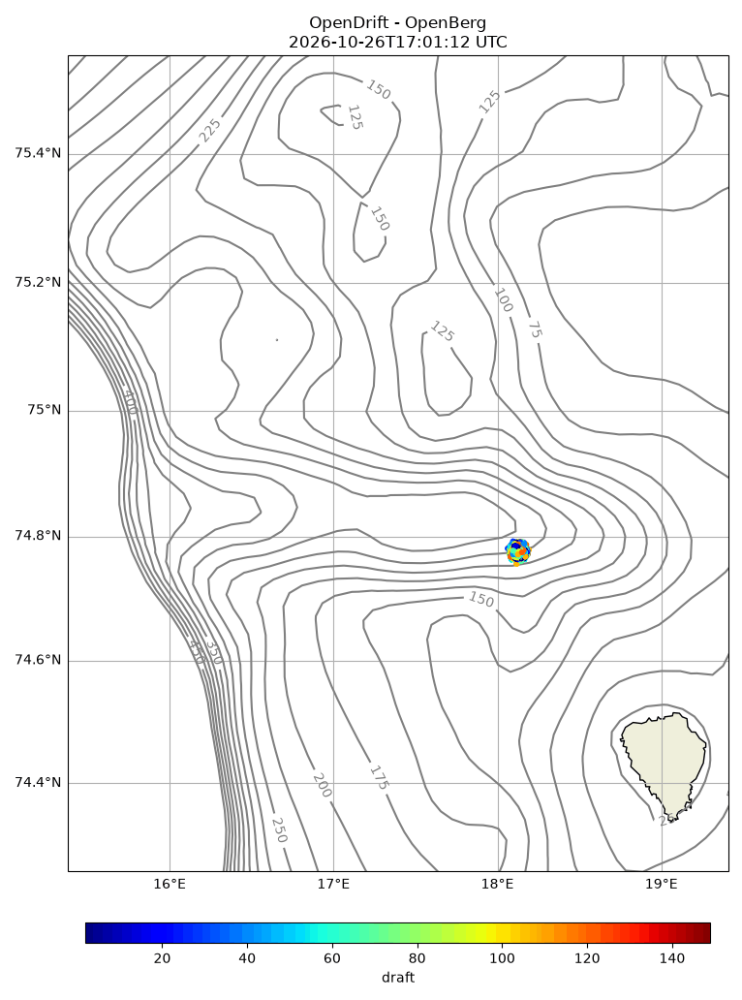
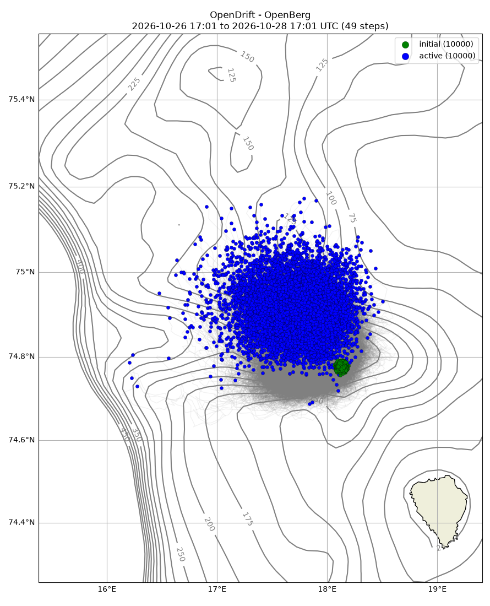
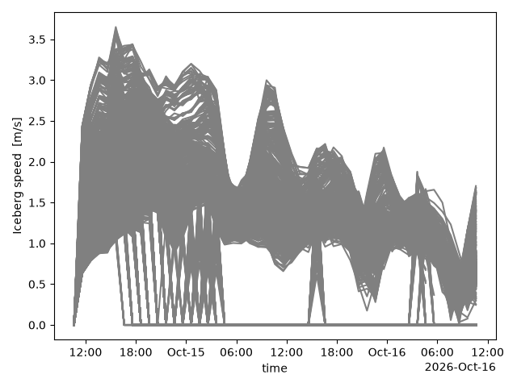

Note
Go to the end to download the full example code.
Icebergs (openberg)
from datetime import datetime, timedelta
import numpy as np
import matplotlib.pyplot as plt
import opendrift
from opendrift.models.openberg import OpenBerg
Currents and wind forcing
forcing = ['https://thredds.met.no/thredds/dodsC/fou-hi/barents_eps_zdepth_be']
A permutation of iceberg sizes/dimensions
n = 10
lengths = np.linspace(50, 500, n)
widths = np.linspace(20, 200, n)
sails = np.linspace(5, 50, n)
drafts = np.linspace(2, 120, n)
lengths, widths, sails, drafts = np.meshgrid(lengths, widths, sails, drafts)
icebergs = {'lon': 18.127, 'lat': 74.776, 'time': datetime.now(),
'number': lengths.size, 'radius': 500,
'sail': sails, 'draft': drafts, 'length': lengths, 'width': widths}
Simulating drift for 48 hours
o = OpenBerg()
o.set_config('drift:vertical_profile', False)
o.set_config('environment:constant:horizontal_diffusivity', 100)
o.add_readers_from_list(forcing)
o.seed_elements(**icebergs)
o.run(duration=timedelta(hours=48))
o.animation(color='draft', contourlines=np.arange(0, 500, 25))
17:01:13 DEBUG opendrift.config:168: Adding 17 config items from __init__
17:01:13 DEBUG opendrift.config:178: Overwriting config item readers:max_number_of_fails
17:01:13 DEBUG opendrift.config:168: Adding 14 config items from __init__
17:01:13 INFO opendrift:569: OpenDriftSimulation initialised (version 1.14.11 / v1.14.12-66-g07283eb)
17:01:13 DEBUG opendrift.config:168: Adding 11 config items from openberg
17:01:13 DEBUG opendrift.readers.reader_lazy:37: Delaying initialisation of LazyReader: https://thredds.met.no/thredds/dodsC/fou-hi/barents_eps_zdepth_be
17:01:13 DEBUG opendrift.models.basemodel.environment:312: Added reader LazyReader: https://thredds.met.no/thredds/dodsC/fou-hi/barents_eps_zdepth_be
17:01:13 DEBUG opendrift.readers.basereader:185: Variable mapping: ['sea_floor_depth_below_sea_level'] -> ['land_binary_mask'] is not activated
17:01:13 DEBUG opendrift.models.basemodel.environment:312: Added reader constant_reader
17:01:13 INFO opendrift.models.basemodel.environment:203: Adding a global landmask from GSHHG
17:01:13 DEBUG opendrift.readers.basereader.variables:571: Skipping calculation of vector component, since y is not north
17:01:13 DEBUG opendrift.readers.basereader.variables:571: Skipping calculation of vector component, since y is not north
17:01:13 DEBUG opendrift.readers.basereader.variables:571: Skipping calculation of vector component, since y is not north
17:01:13 DEBUG opendrift.readers.basereader.variables:571: Skipping calculation of vector component, since y is not north
17:01:13 DEBUG opendrift.readers.basereader:185: Variable mapping: ['sea_floor_depth_below_sea_level'] -> ['land_binary_mask'] is not activated
17:01:19 DEBUG opendrift.models.basemodel.environment:312: Added reader global_landmask
17:01:19 INFO opendrift.models.basemodel.environment:227: Fallback values will be used for the following variables which have no readers:
17:01:19 INFO opendrift.models.basemodel.environment:230: sea_floor_depth_below_sea_level: 10000.000000
17:01:19 INFO opendrift.models.basemodel.environment:230: sea_surface_height: 0.000000
17:01:19 INFO opendrift.models.basemodel.environment:230: sea_surface_x_slope: 0.000000
17:01:19 INFO opendrift.models.basemodel.environment:230: sea_surface_y_slope: 0.000000
17:01:19 INFO opendrift.models.basemodel.environment:230: sea_surface_wave_significant_height: 0.000000
17:01:19 INFO opendrift.models.basemodel.environment:230: sea_surface_wave_from_direction: 0.000000
17:01:19 INFO opendrift.models.basemodel.environment:230: sea_surface_wave_stokes_drift_x_velocity: 0.000000
17:01:19 INFO opendrift.models.basemodel.environment:230: sea_surface_wave_stokes_drift_y_velocity: 0.000000
17:01:19 INFO opendrift.models.basemodel.environment:230: sea_water_temperature: 2.000000
17:01:19 INFO opendrift.models.basemodel.environment:230: sea_water_salinity: 35.000000
17:01:19 INFO opendrift.models.basemodel.environment:230: sea_ice_area_fraction: 0.000000
17:01:19 INFO opendrift.models.basemodel.environment:230: sea_ice_thickness: 0.000000
17:01:19 INFO opendrift.models.basemodel.environment:230: sea_ice_x_velocity: 0.000000
17:01:19 INFO opendrift.models.basemodel.environment:230: sea_ice_y_velocity: 0.000000
17:01:19 DEBUG opendrift:165: Changed mode from Mode.Config to Mode.Ready
17:01:19 DEBUG opendrift.elements.elements:138: array sail is multidimensional -> flattening with ravel
17:01:19 DEBUG opendrift.elements.elements:138: array draft is multidimensional -> flattening with ravel
17:01:19 DEBUG opendrift.elements.elements:138: array length is multidimensional -> flattening with ravel
17:01:19 DEBUG opendrift.elements.elements:138: array width is multidimensional -> flattening with ravel
17:01:19 DEBUG opendrift:165: Changed mode from Mode.Ready to Mode.Run
17:01:19 DEBUG opendrift:1883:
------------------------------------------------------
Software and hardware:
OpenDrift version 1.14.11
Platform: Linux, 7.0.0-1014-aws
4.0 GB memory
36 processors (x86_64)
NumPy version 2.5.4
SciPy version 1.18.1
Matplotlib version 3.11.2
NetCDF4 version 1.7.4
Xarray version 2026.9.0
ADIOS (adios_db) version 1.2.5
Copernicusmarine version 2.5.0
Python version 3.14.8 | packaged by conda-forge | (main, Oct 12 2026, 17:35:27) [GCC 15.3.0]
------------------------------------------------------
17:01:19 DEBUG opendrift:1896: No output file is specified, neglecting export_buffer_length
17:01:19 INFO opendrift:1922: Storing previous values of element property lon because of condition (('general:coastline_action', 'in', ['stranding', 'previous']), 'or', ('general:seafloor_action', 'in', ['previous']))
17:01:19 INFO opendrift:1922: Storing previous values of element property lat because of condition (('general:coastline_action', 'in', ['stranding', 'previous']), 'or', ('general:seafloor_action', 'in', ['previous']))
17:01:19 DEBUG opendrift:2047: Finalizing environment and preparing readers for simulation coverage ([12.13479867 73.19932387 24.12024245 76.34887101]) and time (2026-10-26 17:01:12.968890 to 2026-10-28 17:01:12.968890)
17:01:19 DEBUG opendrift.models.basemodel.environment:166: Preparing LazyReader: https://thredds.met.no/thredds/dodsC/fou-hi/barents_eps_zdepth_be for extent [12.13479867 73.19932387 24.12024245 76.34887101]
17:01:19 DEBUG opendrift.models.basemodel.environment:166: Preparing constant_reader for extent [12.13479867 73.19932387 24.12024245 76.34887101]
17:01:19 DEBUG opendrift.readers.basereader.variables:584: Nothing more to prepare for constant_reader
17:01:19 DEBUG opendrift.models.basemodel.environment:166: Preparing global_landmask for extent [12.13479867 73.19932387 24.12024245 76.34887101]
17:01:19 DEBUG opendrift.readers.basereader.variables:584: Nothing more to prepare for global_landmask
17:01:19 DEBUG opendrift:2144: Initial self.result, size Frozen({'trajectory': 10000, 'time': 49})
17:01:19 INFO opendrift:958: Using existing reader for land_binary_mask to move elements to ocean
17:01:19 DEBUG opendrift.models.basemodel.environment:598: ----------------------------------------
17:01:19 DEBUG opendrift.models.basemodel.environment:599: Variable group ['land_binary_mask']
17:01:19 DEBUG opendrift.models.basemodel.environment:600: ----------------------------------------
17:01:19 DEBUG opendrift.models.basemodel.environment:604: Calling reader global_landmask
17:01:19 DEBUG opendrift.models.basemodel.environment:605: ----------------------------------------
17:01:19 DEBUG opendrift.models.basemodel.environment:625: Data needed for 10000 elements
17:01:19 DEBUG opendrift.readers.basereader.variables:790: Fetching variables from global_landmask covering 10000 elements
17:01:19 DEBUG opendrift.readers.basereader.continuous:37: Fetched env-before
17:01:19 DEBUG opendrift.readers.basereader.variables:668: Checking land_binary_mask for invalid values
17:01:19 DEBUG opendrift.readers.basereader.variables:826: Reader projection is latlon - rotation of vectors is not needed.
17:01:19 DEBUG opendrift.models.basemodel.environment:761: Obtained data for all elements.
17:01:19 DEBUG opendrift.models.basemodel.environment:774: ---------------------------------------
17:01:19 DEBUG opendrift.models.basemodel.environment:775: Finished processing all variable groups
17:01:19 DEBUG opendrift.models.basemodel.environment:897: ------------ SUMMARY -------------
17:01:19 DEBUG opendrift.models.basemodel.environment:899: land_binary_mask: 0 (min) 0 (max)
17:01:19 DEBUG opendrift.models.basemodel.environment:901: ---------------------------------
17:01:19 INFO opendrift:990: All points are in ocean
17:01:19 DEBUG opendrift:915: to be seeded: 10000, already seeded 0
17:01:19 DEBUG opendrift:937: Released 10000 new elements.
17:01:19 DEBUG opendrift:2237: ======================================================================
17:01:19 INFO opendrift:2238: 2026-10-26 17:01:12.968890 - step 1 of 48 - 10000 active elements (0 deactivated)
17:01:19 DEBUG opendrift:2244: 0 elements scheduled.
17:01:19 DEBUG opendrift:2246: ======================================================================
17:01:19 DEBUG opendrift:2257: 74.7560806274414 <- latitude -> 74.7921142578125
17:01:19 DEBUG opendrift:2257: 18.063207626342773 <- longitude -> 18.19183349609375
17:01:19 DEBUG opendrift:2255: z = 0.0
17:01:19 DEBUG opendrift:2258: ---------------------------------
17:01:19 DEBUG opendrift.models.basemodel.environment:573: Variables not covered by any reader: ['x_sea_water_velocity', 'y_wind', 'y_sea_water_velocity', 'sea_surface_wave_from_direction', 'x_wind', 'sea_floor_depth_below_sea_level', 'sea_surface_wave_significant_height']
17:01:19 DEBUG opendrift.readers.reader_lazy:56: Initialising: LazyReader: https://thredds.met.no/thredds/dodsC/fou-hi/barents_eps_zdepth_be
17:01:19 DEBUG opendrift.readers:269: Testing reader <module 'opendrift.readers.reader_netCDF_CF_generic' from '/root/project/opendrift/readers/reader_netCDF_CF_generic.py'>
17:01:19 INFO opendrift.readers:67: Opening file with xr.open_dataset
17:01:19 DEBUG findlibs:301: about to search for libeccodes.so/eccodeslib in <function _find_in_package at 0x78f1b8fea8d0>
17:01:19 DEBUG findlibs:301: about to search for libeccodes.so/eccodeslib in <function _find_in_python at 0x78f1b8feaa30>
17:01:19 DEBUG findlibs:303: found libeccodes.so/eccodeslib in <function _find_in_python at 0x78f1b8feaa30>
17:01:19 DEBUG gribapi.bindings:98: eccodes lib search: findlibs returned /opt/conda/envs/opendrift/lib/libeccodes.so
17:01:25 DEBUG opendrift.readers.reader_netCDF_CF_generic:131: Finding coordinate variables.
17:01:25 DEBUG opendrift.readers.reader_netCDF_CF_generic:146: Parsing CF grid mapping dictionary: {'grid_mapping_name': 'lambert_conformal_conic', 'standard_parallel': array([77.5, 77.5], dtype=float32), 'longitude_of_central_meridian': np.float32(-25.0), 'latitude_of_projection_origin': np.float32(77.5), 'earth_radius': np.float32(6.371e+06), 'proj4': '+proj=lcc +lat_0=77.5 +lon_0=-25 +lat_1=77.5 +lat_2=77.5 +no_defs +R=6.371e+06'}
17:01:25 DEBUG pyproj:40: PROJ_ERROR: proj_create: several objects matching this name: Krovak (Greenwich), Equal Earth Greenwich, Laborde Grid (Greenwich), Modified Krovak (Greenwich), Krovak East North (Greenwich), Modified Krovak East North (Greenwich), ...
17:01:25 INFO opendrift.readers.reader_netCDF_CF_generic:340: Detected dimensions: {'x': 'X', 'y': 'Y', 'z': 'depth', 'time': 'time'}
17:01:25 DEBUG opendrift.readers.reader_netCDF_CF_generic:376: Skipped variables without standard_name: ['angle']
17:01:25 DEBUG opendrift.readers.basereader.variables:571: Skipping calculation of vector component, since y is not north
17:01:25 DEBUG opendrift.readers.basereader.variables:571: Skipping calculation of vector component, since y is not north
17:01:25 DEBUG opendrift.readers.basereader.variables:571: Skipping calculation of vector component, since y is not north
17:01:25 DEBUG opendrift.readers.basereader.variables:571: Skipping calculation of vector component, since y is not north
17:01:25 DEBUG opendrift.readers.basereader.variables:643: Setting buffer size 10 for reader https://thredds.met.no/thredds/dodsC/fou-hi/barents_eps_zdepth_be, assuming a maximum average speed of 5 m/s and time span of 1:00:00
17:01:25 INFO opendrift.readers.basereader:175: Variable x_sea_water_velocity will be rotated from eastward_sea_water_velocity
17:01:25 INFO opendrift.readers.basereader:175: Variable y_sea_water_velocity will be rotated from northward_sea_water_velocity
17:01:25 DEBUG opendrift.readers.basereader:185: Variable mapping: ['sea_floor_depth_below_sea_level'] -> ['land_binary_mask'] is not activated
17:01:25 DEBUG opendrift.readers.basereader.variables:598: Adding variable mapping: ['x_wind', 'y_wind'] -> wind_speed
17:01:25 DEBUG opendrift.readers.basereader.variables:598: Adding variable mapping: ['sea_ice_x_velocity', 'sea_ice_y_velocity'] -> sea_ice_speed
17:01:25 DEBUG opendrift.readers.basereader.variables:598: Adding variable mapping: ['x_sea_water_velocity', 'y_sea_water_velocity'] -> sea_water_speed
17:01:25 DEBUG opendrift.readers.basereader.structured:151: Clearing cache for reader https://thredds.met.no/thredds/dodsC/fou-hi/barents_eps_zdepth_be before starting new simulation
17:01:25 DEBUG opendrift.readers.basereader.variables:643: Setting buffer size 4 for reader https://thredds.met.no/thredds/dodsC/fou-hi/barents_eps_zdepth_be, assuming a maximum average speed of 1 m/s and time span of 1:00:00
17:01:25 DEBUG opendrift.readers.basereader.variables:584: Nothing more to prepare for https://thredds.met.no/thredds/dodsC/fou-hi/barents_eps_zdepth_be
17:01:25 DEBUG opendrift.readers.reader_lazy:71: Reader initialised: https://thredds.met.no/thredds/dodsC/fou-hi/barents_eps_zdepth_be
17:01:25 DEBUG opendrift.readers.basereader.variables:643: Setting buffer size 4 for reader https://thredds.met.no/thredds/dodsC/fou-hi/barents_eps_zdepth_be, assuming a maximum average speed of 1 m/s and time span of 1:00:00
17:01:25 DEBUG opendrift.models.basemodel.environment:598: ----------------------------------------
17:01:25 DEBUG opendrift.models.basemodel.environment:599: Variable group ['horizontal_diffusivity']
17:01:25 DEBUG opendrift.models.basemodel.environment:600: ----------------------------------------
17:01:25 DEBUG opendrift.models.basemodel.environment:604: Calling reader constant_reader
17:01:25 DEBUG opendrift.models.basemodel.environment:605: ----------------------------------------
17:01:25 DEBUG opendrift.models.basemodel.environment:625: Data needed for 10000 elements
17:01:25 DEBUG opendrift.readers.basereader.variables:790: Fetching variables from constant_reader covering 10000 elements
17:01:25 DEBUG opendrift.readers.basereader.continuous:37: Fetched env-before
17:01:25 DEBUG opendrift.readers.basereader.variables:826: Reader projection is latlon - rotation of vectors is not needed.
17:01:25 DEBUG opendrift.models.basemodel.environment:761: Obtained data for all elements.
17:01:25 DEBUG opendrift.models.basemodel.environment:598: ----------------------------------------
17:01:25 DEBUG opendrift.models.basemodel.environment:599: Variable group ['land_binary_mask']
17:01:25 DEBUG opendrift.models.basemodel.environment:600: ----------------------------------------
17:01:25 DEBUG opendrift.models.basemodel.environment:604: Calling reader global_landmask
17:01:25 DEBUG opendrift.models.basemodel.environment:605: ----------------------------------------
17:01:25 DEBUG opendrift.models.basemodel.environment:625: Data needed for 10000 elements
17:01:25 DEBUG opendrift.readers.basereader.variables:790: Fetching variables from global_landmask covering 10000 elements
17:01:25 DEBUG opendrift.readers.basereader.continuous:37: Fetched env-before
17:01:25 DEBUG opendrift.readers.basereader.variables:668: Checking land_binary_mask for invalid values
17:01:25 DEBUG opendrift.readers.basereader.variables:826: Reader projection is latlon - rotation of vectors is not needed.
17:01:25 DEBUG opendrift.models.basemodel.environment:761: Obtained data for all elements.
17:01:25 DEBUG opendrift.models.basemodel.environment:598: ----------------------------------------
17:01:25 DEBUG opendrift.models.basemodel.environment:599: Variable group ['sea_floor_depth_below_sea_level', 'x_wind', 'y_wind', 'sea_ice_area_fraction', 'sea_ice_thickness', 'sea_ice_x_velocity', 'sea_ice_y_velocity', 'sea_water_salinity', 'sea_water_temperature', 'sea_surface_height', 'x_sea_water_velocity', 'y_sea_water_velocity']
17:01:25 DEBUG opendrift.models.basemodel.environment:600: ----------------------------------------
17:01:25 DEBUG opendrift.models.basemodel.environment:604: Calling reader https://thredds.met.no/thredds/dodsC/fou-hi/barents_eps_zdepth_be
17:01:25 DEBUG opendrift.models.basemodel.environment:605: ----------------------------------------
17:01:25 DEBUG opendrift.models.basemodel.environment:625: Data needed for 10000 elements
17:01:25 DEBUG opendrift.readers.basereader.variables:790: Fetching variables from https://thredds.met.no/thredds/dodsC/fou-hi/barents_eps_zdepth_be covering 10000 elements
17:01:25 DEBUG opendrift.readers.basereader.structured:220: Reader time:
2026-10-26 17:00:00 (before)
2026-10-26 18:00:00 (after)
17:01:27 DEBUG opendrift.readers.reader_netCDF_CF_generic:475: Using eastward_sea_water_velocity to retrieve x_sea_water_velocity
17:01:28 DEBUG opendrift.readers.reader_netCDF_CF_generic:475: Using northward_sea_water_velocity to retrieve y_sea_water_velocity
17:01:28 DEBUG opendrift.readers.reader_netCDF_CF_generic:607: Rotating vector from east/north to xy orientation: ['x_sea_water_velocity', 'y_sea_water_velocity']
17:01:28 DEBUG opendrift.readers.basereader.variables:126: Rotating vectors between -42.53997553957136 and -41.47306265087688 degrees.
17:01:28 DEBUG opendrift.readers.basereader.variables:668: Checking sea_floor_depth_below_sea_level for invalid values
17:01:28 DEBUG opendrift.readers.basereader.variables:668: Checking x_wind for invalid values
17:01:28 DEBUG opendrift.readers.basereader.variables:668: Checking y_wind for invalid values
17:01:28 DEBUG opendrift.readers.basereader.variables:668: Checking x_sea_water_velocity for invalid values
17:01:28 DEBUG opendrift.readers.basereader.variables:668: Checking y_sea_water_velocity for invalid values
17:01:28 DEBUG opendrift.readers.basereader.structured:290: Fetched env-block (size 11x9x7) for time before (2026-10-26 17:00:00)
17:01:30 DEBUG opendrift.readers.reader_netCDF_CF_generic:475: Using eastward_sea_water_velocity to retrieve x_sea_water_velocity
17:01:30 DEBUG opendrift.readers.reader_netCDF_CF_generic:475: Using northward_sea_water_velocity to retrieve y_sea_water_velocity
17:01:30 DEBUG opendrift.readers.reader_netCDF_CF_generic:607: Rotating vector from east/north to xy orientation: ['x_sea_water_velocity', 'y_sea_water_velocity']
17:01:30 DEBUG opendrift.readers.basereader.variables:126: Rotating vectors between -42.53997553957136 and -41.47306265087688 degrees.
17:01:30 DEBUG opendrift.readers.basereader.variables:668: Checking sea_floor_depth_below_sea_level for invalid values
17:01:30 DEBUG opendrift.readers.basereader.variables:668: Checking x_wind for invalid values
17:01:30 DEBUG opendrift.readers.basereader.variables:668: Checking y_wind for invalid values
17:01:30 DEBUG opendrift.readers.basereader.variables:668: Checking x_sea_water_velocity for invalid values
17:01:30 DEBUG opendrift.readers.basereader.variables:668: Checking y_sea_water_velocity for invalid values
17:01:30 DEBUG opendrift.readers.basereader.structured:313: Fetched env-block (size 11x9x7) for time after (2026-10-26 18:00:00)
17:01:30 DEBUG opendrift.readers.basereader.structured:334: Interpolating before (2026-10-26 17:00:00) in space (linearNDFast)
17:01:30 DEBUG opendrift.readers.interpolation.structured:97: Initialising interpolator.
17:01:30 DEBUG opendrift.readers.basereader.structured:340: Interpolating after (2026-10-26 18:00:00) in space (linearNDFast)
17:01:30 DEBUG opendrift.readers.interpolation.structured:97: Initialising interpolator.
17:01:30 DEBUG opendrift.readers.basereader.structured:355: Interpolating before (2026-10-26 17:00:00, weight 0.98) and
after (2026-10-26 18:00:00, weight 0.02) in time
17:01:30 DEBUG opendrift.readers.basereader.structured:368: Interpolating profiles in time
17:01:30 DEBUG opendrift.readers.basereader.variables:126: Rotating vectors between 42.055670907984315 and 42.18125751143569 degrees.
17:01:30 DEBUG opendrift.readers.basereader.variables:126: Rotating vectors between 42.055670907984315 and 42.18125751143569 degrees.
17:01:30 DEBUG opendrift.readers.basereader.variables:126: Rotating vectors between 42.055670907984315 and 42.18125751143569 degrees.
17:01:30 DEBUG opendrift.readers.basereader.variables:126: Rotating vectors between 42.055670907984315 and 42.18125751143569 degrees.
17:01:30 DEBUG opendrift.models.basemodel.environment:761: Obtained data for all elements.
17:01:30 DEBUG opendrift.models.basemodel.environment:774: ---------------------------------------
17:01:30 DEBUG opendrift.models.basemodel.environment:775: Finished processing all variable groups
17:01:30 DEBUG opendrift.models.basemodel.environment:811: Using fallback value 2 for sea_water_temperature for 0 profiles
17:01:30 DEBUG opendrift.models.basemodel.environment:811: Using fallback value 35 for sea_water_salinity for 0 profiles
17:01:30 DEBUG opendrift.models.basemodel.environment:897: ------------ SUMMARY -------------
17:01:30 DEBUG opendrift.models.basemodel.environment:899: x_sea_water_velocity: 0.141911 (min) 0.158933 (max)
17:01:30 DEBUG opendrift.models.basemodel.environment:899: y_sea_water_velocity: -0.16912 (min) -0.155253 (max)
17:01:30 DEBUG opendrift.models.basemodel.environment:899: sea_floor_depth_below_sea_level: 227.599 (min) 266.329 (max)
17:01:30 DEBUG opendrift.models.basemodel.environment:899: sea_surface_height: -1.05199 (min) -1.04819 (max)
17:01:30 DEBUG opendrift.models.basemodel.environment:899: sea_surface_x_slope: 0 (min) 0 (max)
17:01:30 DEBUG opendrift.models.basemodel.environment:899: sea_surface_y_slope: 0 (min) 0 (max)
17:01:30 DEBUG opendrift.models.basemodel.environment:899: x_wind: -6.04744 (min) -5.90812 (max)
17:01:30 DEBUG opendrift.models.basemodel.environment:899: y_wind: 0.0418025 (min) 0.257295 (max)
17:01:30 DEBUG opendrift.models.basemodel.environment:899: horizontal_diffusivity: 100 (min) 100 (max)
17:01:30 DEBUG opendrift.models.basemodel.environment:899: sea_surface_wave_significant_height: 0 (min) 0 (max)
17:01:30 DEBUG opendrift.models.basemodel.environment:899: sea_surface_wave_from_direction: 0 (min) 0 (max)
17:01:30 DEBUG opendrift.models.basemodel.environment:899: sea_surface_wave_stokes_drift_x_velocity: 0 (min) 0 (max)
17:01:30 DEBUG opendrift.models.basemodel.environment:899: sea_surface_wave_stokes_drift_y_velocity: 0 (min) 0 (max)
17:01:30 DEBUG opendrift.models.basemodel.environment:899: sea_water_temperature: 6.24402 (min) 6.36977 (max)
17:01:30 DEBUG opendrift.models.basemodel.environment:899: sea_water_salinity: 34.9073 (min) 34.9292 (max)
17:01:30 DEBUG opendrift.models.basemodel.environment:899: sea_ice_area_fraction: 0 (min) 0 (max)
17:01:30 DEBUG opendrift.models.basemodel.environment:899: sea_ice_thickness: 0 (min) 0 (max)
17:01:30 DEBUG opendrift.models.basemodel.environment:899: sea_ice_x_velocity: 0 (min) 0 (max)
17:01:30 DEBUG opendrift.models.basemodel.environment:899: sea_ice_y_velocity: 0 (min) 0 (max)
17:01:30 DEBUG opendrift.models.basemodel.environment:899: land_binary_mask: 0 (min) 0 (max)
17:01:30 DEBUG opendrift.models.basemodel.environment:901: ---------------------------------
17:01:30 DEBUG opendrift.models.physics_methods:902: Calculating Hs from wind, min: 0.859838, mean: 0.874936, max: 0.899701
17:01:30 WARNING opendrift.models.physics_methods:911: Setting wave direction equal to wind direction, min: -89.603951, mean: -88.568779, max: -87.519699
17:01:30 DEBUG opendrift:700: No elements hit coastline.
17:01:30 DEBUG opendrift:771: No elements hit seafloor.
17:01:30 DEBUG opendrift:1811: No elements to deactivate
17:01:30 DEBUG opendrift:2295: Calling OpenBerg.update()
17:01:30 DEBUG opendrift.models.openberg:606: Rolling over : 3615 icebergs ...
17:01:30 DEBUG opendrift.models.openberg:558: Melting is disabled
17:01:30 DEBUG opendrift.models.openberg:468: Advection with surface currents
17:01:30 DEBUG opendrift.models.openberg:528: No grounded icebergs detected in this timestep
17:01:32 DEBUG opendrift:1774: Moving elements according to horizontal diffusivity of 100.0, with speeds between 0.0034749393865888857 and 1.105526129491915 m/s
17:01:32 DEBUG opendrift:915: to be seeded: 0, already seeded 10000
17:01:32 DEBUG opendrift:2237: ======================================================================
17:01:32 INFO opendrift:2238: 2026-10-26 18:01:12.968890 - step 2 of 48 - 10000 active elements (0 deactivated)
17:01:32 DEBUG opendrift:2244: 0 elements scheduled.
17:01:32 DEBUG opendrift:2246: ======================================================================
17:01:32 DEBUG opendrift:2257: 74.7380344370836 <- latitude -> 74.80520484629851
17:01:32 DEBUG opendrift:2257: 17.96564226841595 <- longitude -> 18.244276463083846
17:01:32 DEBUG opendrift:2255: z = 0.0
17:01:32 DEBUG opendrift:2258: ---------------------------------
17:01:32 DEBUG opendrift.models.basemodel.environment:598: ----------------------------------------
17:01:32 DEBUG opendrift.models.basemodel.environment:599: Variable group ['horizontal_diffusivity']
17:01:32 DEBUG opendrift.models.basemodel.environment:600: ----------------------------------------
17:01:32 DEBUG opendrift.models.basemodel.environment:604: Calling reader constant_reader
17:01:32 DEBUG opendrift.models.basemodel.environment:605: ----------------------------------------
17:01:32 DEBUG opendrift.models.basemodel.environment:625: Data needed for 10000 elements
17:01:32 DEBUG opendrift.readers.basereader.variables:790: Fetching variables from constant_reader covering 10000 elements
17:01:32 DEBUG opendrift.readers.basereader.continuous:37: Fetched env-before
17:01:32 DEBUG opendrift.readers.basereader.variables:826: Reader projection is latlon - rotation of vectors is not needed.
17:01:32 DEBUG opendrift.models.basemodel.environment:761: Obtained data for all elements.
17:01:32 DEBUG opendrift.models.basemodel.environment:598: ----------------------------------------
17:01:32 DEBUG opendrift.models.basemodel.environment:599: Variable group ['land_binary_mask']
17:01:32 DEBUG opendrift.models.basemodel.environment:600: ----------------------------------------
17:01:32 DEBUG opendrift.models.basemodel.environment:604: Calling reader global_landmask
17:01:32 DEBUG opendrift.models.basemodel.environment:605: ----------------------------------------
17:01:32 DEBUG opendrift.models.basemodel.environment:625: Data needed for 10000 elements
17:01:32 DEBUG opendrift.readers.basereader.variables:790: Fetching variables from global_landmask covering 10000 elements
17:01:32 DEBUG opendrift.readers.basereader.continuous:37: Fetched env-before
17:01:32 DEBUG opendrift.readers.basereader.variables:668: Checking land_binary_mask for invalid values
17:01:32 DEBUG opendrift.readers.basereader.variables:826: Reader projection is latlon - rotation of vectors is not needed.
17:01:32 DEBUG opendrift.models.basemodel.environment:761: Obtained data for all elements.
17:01:32 DEBUG opendrift.models.basemodel.environment:598: ----------------------------------------
17:01:32 DEBUG opendrift.models.basemodel.environment:599: Variable group ['sea_floor_depth_below_sea_level', 'x_wind', 'y_wind', 'sea_ice_area_fraction', 'sea_ice_thickness', 'sea_ice_x_velocity', 'sea_ice_y_velocity', 'sea_water_salinity', 'sea_water_temperature', 'sea_surface_height', 'x_sea_water_velocity', 'y_sea_water_velocity']
17:01:32 DEBUG opendrift.models.basemodel.environment:600: ----------------------------------------
17:01:32 DEBUG opendrift.models.basemodel.environment:604: Calling reader https://thredds.met.no/thredds/dodsC/fou-hi/barents_eps_zdepth_be
17:01:32 DEBUG opendrift.models.basemodel.environment:605: ----------------------------------------
17:01:32 DEBUG opendrift.models.basemodel.environment:625: Data needed for 10000 elements
17:01:32 DEBUG opendrift.readers.basereader.variables:790: Fetching variables from https://thredds.met.no/thredds/dodsC/fou-hi/barents_eps_zdepth_be covering 10000 elements
17:01:32 DEBUG opendrift.readers.basereader.structured:220: Reader time:
2026-10-26 18:00:00 (before)
2026-10-26 19:00:00 (after)
17:01:34 DEBUG opendrift.readers.reader_netCDF_CF_generic:475: Using eastward_sea_water_velocity to retrieve x_sea_water_velocity
17:01:34 DEBUG opendrift.readers.reader_netCDF_CF_generic:475: Using northward_sea_water_velocity to retrieve y_sea_water_velocity
17:01:34 DEBUG opendrift.readers.reader_netCDF_CF_generic:607: Rotating vector from east/north to xy orientation: ['x_sea_water_velocity', 'y_sea_water_velocity']
17:01:34 DEBUG opendrift.readers.basereader.variables:126: Rotating vectors between -42.657833230996125 and -41.41782463118848 degrees.
17:01:34 DEBUG opendrift.readers.basereader.variables:668: Checking sea_floor_depth_below_sea_level for invalid values
17:01:34 DEBUG opendrift.readers.basereader.variables:668: Checking x_wind for invalid values
17:01:34 DEBUG opendrift.readers.basereader.variables:668: Checking y_wind for invalid values
17:01:34 DEBUG opendrift.readers.basereader.variables:668: Checking x_sea_water_velocity for invalid values
17:01:34 DEBUG opendrift.readers.basereader.variables:668: Checking y_sea_water_velocity for invalid values
17:01:34 DEBUG opendrift.readers.basereader.structured:313: Fetched env-block (size 12x11x7) for time after (2026-10-26 19:00:00)
17:01:34 DEBUG opendrift.readers.basereader.structured:334: Interpolating before (2026-10-26 18:00:00) in space (linearNDFast)
17:01:34 DEBUG opendrift.readers.interpolation.structured:97: Initialising interpolator.
17:01:34 DEBUG opendrift.readers.basereader.structured:340: Interpolating after (2026-10-26 19:00:00) in space (linearNDFast)
17:01:34 DEBUG opendrift.readers.interpolation.structured:97: Initialising interpolator.
17:01:34 DEBUG opendrift.readers.basereader.structured:355: Interpolating before (2026-10-26 18:00:00, weight 0.98) and
after (2026-10-26 19:00:00, weight 0.02) in time
17:01:34 DEBUG opendrift.readers.basereader.structured:368: Interpolating profiles in time
17:01:35 DEBUG opendrift.readers.basereader.variables:126: Rotating vectors between 41.960447130230406 and 42.232456048219284 degrees.
17:01:35 DEBUG opendrift.readers.basereader.variables:126: Rotating vectors between 41.960447130230406 and 42.232456048219284 degrees.
17:01:35 DEBUG opendrift.readers.basereader.variables:126: Rotating vectors between 41.960447130230406 and 42.232456048219284 degrees.
17:01:35 DEBUG opendrift.readers.basereader.variables:126: Rotating vectors between 41.960447130230406 and 42.232456048219284 degrees.
17:01:35 DEBUG opendrift.models.basemodel.environment:761: Obtained data for all elements.
17:01:35 DEBUG opendrift.models.basemodel.environment:774: ---------------------------------------
17:01:35 DEBUG opendrift.models.basemodel.environment:775: Finished processing all variable groups
17:01:35 DEBUG opendrift.models.basemodel.environment:811: Using fallback value 2 for sea_water_temperature for 0 profiles
17:01:35 DEBUG opendrift.models.basemodel.environment:811: Using fallback value 35 for sea_water_salinity for 0 profiles
17:01:35 DEBUG opendrift.models.basemodel.environment:897: ------------ SUMMARY -------------
17:01:35 DEBUG opendrift.models.basemodel.environment:899: x_sea_water_velocity: -0.00486248 (min) 0.0318176 (max)
17:01:35 DEBUG opendrift.models.basemodel.environment:899: y_sea_water_velocity: -0.244609 (min) -0.190564 (max)
17:01:35 DEBUG opendrift.models.basemodel.environment:899: sea_floor_depth_below_sea_level: 205.972 (min) 272.505 (max)
17:01:35 DEBUG opendrift.models.basemodel.environment:899: sea_surface_height: -1.13954 (min) -1.1352 (max)
17:01:35 DEBUG opendrift.models.basemodel.environment:899: sea_surface_x_slope: 0 (min) 0 (max)
17:01:35 DEBUG opendrift.models.basemodel.environment:899: sea_surface_y_slope: 0 (min) 0 (max)
17:01:35 DEBUG opendrift.models.basemodel.environment:899: x_wind: -6.81855 (min) -6.46594 (max)
17:01:35 DEBUG opendrift.models.basemodel.environment:899: y_wind: 1.1019 (min) 1.26073 (max)
17:01:35 DEBUG opendrift.models.basemodel.environment:899: horizontal_diffusivity: 100 (min) 100 (max)
17:01:35 DEBUG opendrift.models.basemodel.environment:899: sea_surface_wave_significant_height: 0 (min) 0 (max)
17:01:35 DEBUG opendrift.models.basemodel.environment:899: sea_surface_wave_from_direction: 0 (min) 0 (max)
17:01:35 DEBUG opendrift.models.basemodel.environment:899: sea_surface_wave_stokes_drift_x_velocity: 0 (min) 0 (max)
17:01:35 DEBUG opendrift.models.basemodel.environment:899: sea_surface_wave_stokes_drift_y_velocity: 0 (min) 0 (max)
17:01:35 DEBUG opendrift.models.basemodel.environment:899: sea_water_temperature: 6.15246 (min) 6.45071 (max)
17:01:35 DEBUG opendrift.models.basemodel.environment:899: sea_water_salinity: 34.8914 (min) 34.9418 (max)
17:01:35 DEBUG opendrift.models.basemodel.environment:899: sea_ice_area_fraction: 0 (min) 0 (max)
17:01:35 DEBUG opendrift.models.basemodel.environment:899: sea_ice_thickness: 0 (min) 0 (max)
17:01:35 DEBUG opendrift.models.basemodel.environment:899: sea_ice_x_velocity: 0 (min) 0 (max)
17:01:35 DEBUG opendrift.models.basemodel.environment:899: sea_ice_y_velocity: 0 (min) 0 (max)
17:01:35 DEBUG opendrift.models.basemodel.environment:899: land_binary_mask: 0 (min) 0 (max)
17:01:35 DEBUG opendrift.models.basemodel.environment:901: ---------------------------------
17:01:35 DEBUG opendrift.models.physics_methods:902: Calculating Hs from wind, min: 1.067118, mean: 1.129059, max: 1.175132
17:01:35 WARNING opendrift.models.physics_methods:911: Setting wave direction equal to wind direction, min: -80.793777, mean: -79.657059, max: -79.028320
17:01:35 DEBUG opendrift:700: No elements hit coastline.
17:01:35 DEBUG opendrift:771: No elements hit seafloor.
17:01:35 DEBUG opendrift:1811: No elements to deactivate
17:01:35 DEBUG opendrift:2295: Calling OpenBerg.update()
17:01:35 DEBUG opendrift.models.openberg:558: Melting is disabled
17:01:35 DEBUG opendrift.models.openberg:468: Advection with surface currents
17:01:35 DEBUG opendrift.models.openberg:528: No grounded icebergs detected in this timestep
17:01:37 DEBUG opendrift:1774: Moving elements according to horizontal diffusivity of 100.0, with speeds between 0.0036326958526624563 and 1.3010692822175616 m/s
17:01:37 DEBUG opendrift:915: to be seeded: 0, already seeded 10000
17:01:37 DEBUG opendrift:2237: ======================================================================
17:01:37 INFO opendrift:2238: 2026-10-26 19:01:12.968890 - step 3 of 48 - 10000 active elements (0 deactivated)
17:01:37 DEBUG opendrift:2244: 0 elements scheduled.
17:01:37 DEBUG opendrift:2246: ======================================================================
17:01:37 DEBUG opendrift:2257: 74.72297166496813 <- latitude -> 74.81099179530214
17:01:37 DEBUG opendrift:2257: 17.91029520648157 <- longitude -> 18.256905992600828
17:01:37 DEBUG opendrift:2255: z = 0.0
17:01:37 DEBUG opendrift:2258: ---------------------------------
17:01:37 DEBUG opendrift.models.basemodel.environment:598: ----------------------------------------
17:01:37 DEBUG opendrift.models.basemodel.environment:599: Variable group ['horizontal_diffusivity']
17:01:37 DEBUG opendrift.models.basemodel.environment:600: ----------------------------------------
17:01:37 DEBUG opendrift.models.basemodel.environment:604: Calling reader constant_reader
17:01:37 DEBUG opendrift.models.basemodel.environment:605: ----------------------------------------
17:01:37 DEBUG opendrift.models.basemodel.environment:625: Data needed for 10000 elements
17:01:37 DEBUG opendrift.readers.basereader.variables:790: Fetching variables from constant_reader covering 10000 elements
17:01:37 DEBUG opendrift.readers.basereader.continuous:37: Fetched env-before
17:01:37 DEBUG opendrift.readers.basereader.variables:826: Reader projection is latlon - rotation of vectors is not needed.
17:01:37 DEBUG opendrift.models.basemodel.environment:761: Obtained data for all elements.
17:01:37 DEBUG opendrift.models.basemodel.environment:598: ----------------------------------------
17:01:37 DEBUG opendrift.models.basemodel.environment:599: Variable group ['land_binary_mask']
17:01:37 DEBUG opendrift.models.basemodel.environment:600: ----------------------------------------
17:01:37 DEBUG opendrift.models.basemodel.environment:604: Calling reader global_landmask
17:01:37 DEBUG opendrift.models.basemodel.environment:605: ----------------------------------------
17:01:37 DEBUG opendrift.models.basemodel.environment:625: Data needed for 10000 elements
17:01:37 DEBUG opendrift.readers.basereader.variables:790: Fetching variables from global_landmask covering 10000 elements
17:01:37 DEBUG opendrift.readers.basereader.continuous:37: Fetched env-before
17:01:37 DEBUG opendrift.readers.basereader.variables:668: Checking land_binary_mask for invalid values
17:01:37 DEBUG opendrift.readers.basereader.variables:826: Reader projection is latlon - rotation of vectors is not needed.
17:01:37 DEBUG opendrift.models.basemodel.environment:761: Obtained data for all elements.
17:01:37 DEBUG opendrift.models.basemodel.environment:598: ----------------------------------------
17:01:37 DEBUG opendrift.models.basemodel.environment:599: Variable group ['sea_floor_depth_below_sea_level', 'x_wind', 'y_wind', 'sea_ice_area_fraction', 'sea_ice_thickness', 'sea_ice_x_velocity', 'sea_ice_y_velocity', 'sea_water_salinity', 'sea_water_temperature', 'sea_surface_height', 'x_sea_water_velocity', 'y_sea_water_velocity']
17:01:37 DEBUG opendrift.models.basemodel.environment:600: ----------------------------------------
17:01:37 DEBUG opendrift.models.basemodel.environment:604: Calling reader https://thredds.met.no/thredds/dodsC/fou-hi/barents_eps_zdepth_be
17:01:37 DEBUG opendrift.models.basemodel.environment:605: ----------------------------------------
17:01:37 DEBUG opendrift.models.basemodel.environment:625: Data needed for 10000 elements
17:01:37 DEBUG opendrift.readers.basereader.variables:790: Fetching variables from https://thredds.met.no/thredds/dodsC/fou-hi/barents_eps_zdepth_be covering 10000 elements
17:01:37 DEBUG opendrift.readers.basereader.structured:220: Reader time:
2026-10-26 19:00:00 (before)
2026-10-26 20:00:00 (after)
17:01:39 DEBUG opendrift.readers.reader_netCDF_CF_generic:475: Using eastward_sea_water_velocity to retrieve x_sea_water_velocity
17:01:39 DEBUG opendrift.readers.reader_netCDF_CF_generic:475: Using northward_sea_water_velocity to retrieve y_sea_water_velocity
17:01:39 DEBUG opendrift.readers.reader_netCDF_CF_generic:607: Rotating vector from east/north to xy orientation: ['x_sea_water_velocity', 'y_sea_water_velocity']
17:01:39 DEBUG opendrift.readers.basereader.variables:126: Rotating vectors between -42.657833230996125 and -41.300114583572245 degrees.
17:01:39 DEBUG opendrift.readers.basereader.variables:668: Checking sea_floor_depth_below_sea_level for invalid values
17:01:39 DEBUG opendrift.readers.basereader.variables:668: Checking x_wind for invalid values
17:01:39 DEBUG opendrift.readers.basereader.variables:668: Checking y_wind for invalid values
17:01:39 DEBUG opendrift.readers.basereader.variables:668: Checking x_sea_water_velocity for invalid values
17:01:39 DEBUG opendrift.readers.basereader.variables:668: Checking y_sea_water_velocity for invalid values
17:01:39 DEBUG opendrift.readers.basereader.structured:313: Fetched env-block (size 13x12x7) for time after (2026-10-26 20:00:00)
17:01:39 DEBUG opendrift.readers.basereader.structured:334: Interpolating before (2026-10-26 19:00:00) in space (linearNDFast)
17:01:39 DEBUG opendrift.readers.interpolation.structured:97: Initialising interpolator.
17:01:39 DEBUG opendrift.readers.basereader.structured:340: Interpolating after (2026-10-26 20:00:00) in space (linearNDFast)
17:01:39 DEBUG opendrift.readers.interpolation.structured:97: Initialising interpolator.
17:01:39 DEBUG opendrift.readers.basereader.structured:355: Interpolating before (2026-10-26 19:00:00, weight 0.98) and
after (2026-10-26 20:00:00, weight 0.02) in time
17:01:39 DEBUG opendrift.readers.basereader.structured:368: Interpolating profiles in time
17:01:39 DEBUG opendrift.readers.basereader.variables:126: Rotating vectors between 41.90639443225508 and 42.24478400957431 degrees.
17:01:39 DEBUG opendrift.readers.basereader.variables:126: Rotating vectors between 41.90639443225508 and 42.24478400957431 degrees.
17:01:39 DEBUG opendrift.readers.basereader.variables:126: Rotating vectors between 41.90639443225508 and 42.24478400957431 degrees.
17:01:39 DEBUG opendrift.readers.basereader.variables:126: Rotating vectors between 41.90639443225508 and 42.24478400957431 degrees.
17:01:39 DEBUG opendrift.models.basemodel.environment:761: Obtained data for all elements.
17:01:39 DEBUG opendrift.models.basemodel.environment:774: ---------------------------------------
17:01:39 DEBUG opendrift.models.basemodel.environment:775: Finished processing all variable groups
17:01:39 DEBUG opendrift.models.basemodel.environment:811: Using fallback value 2 for sea_water_temperature for 0 profiles
17:01:39 DEBUG opendrift.models.basemodel.environment:811: Using fallback value 35 for sea_water_salinity for 0 profiles
17:01:39 DEBUG opendrift.models.basemodel.environment:897: ------------ SUMMARY -------------
17:01:39 DEBUG opendrift.models.basemodel.environment:899: x_sea_water_velocity: -0.154588 (min) -0.0829043 (max)
17:01:39 DEBUG opendrift.models.basemodel.environment:899: y_sea_water_velocity: -0.274096 (min) -0.175808 (max)
17:01:39 DEBUG opendrift.models.basemodel.environment:899: sea_floor_depth_below_sea_level: 188.557 (min) 280.283 (max)
17:01:39 DEBUG opendrift.models.basemodel.environment:899: sea_surface_height: -1.0853 (min) -1.07843 (max)
17:01:39 DEBUG opendrift.models.basemodel.environment:899: sea_surface_x_slope: 0 (min) 0 (max)
17:01:39 DEBUG opendrift.models.basemodel.environment:899: sea_surface_y_slope: 0 (min) 0 (max)
17:01:39 DEBUG opendrift.models.basemodel.environment:899: x_wind: -7.25877 (min) -6.77655 (max)
17:01:39 DEBUG opendrift.models.basemodel.environment:899: y_wind: 1.48024 (min) 1.78471 (max)
17:01:39 DEBUG opendrift.models.basemodel.environment:899: horizontal_diffusivity: 100 (min) 100 (max)
17:01:39 DEBUG opendrift.models.basemodel.environment:899: sea_surface_wave_significant_height: 0 (min) 0 (max)
17:01:39 DEBUG opendrift.models.basemodel.environment:899: sea_surface_wave_from_direction: 0 (min) 0 (max)
17:01:39 DEBUG opendrift.models.basemodel.environment:899: sea_surface_wave_stokes_drift_x_velocity: 0 (min) 0 (max)
17:01:39 DEBUG opendrift.models.basemodel.environment:899: sea_surface_wave_stokes_drift_y_velocity: 0 (min) 0 (max)
17:01:39 DEBUG opendrift.models.basemodel.environment:899: sea_water_temperature: 6.09297 (min) 6.46339 (max)
17:01:39 DEBUG opendrift.models.basemodel.environment:899: sea_water_salinity: 34.8818 (min) 34.9438 (max)
17:01:39 DEBUG opendrift.models.basemodel.environment:899: sea_ice_area_fraction: 0 (min) 0 (max)
17:01:39 DEBUG opendrift.models.basemodel.environment:899: sea_ice_thickness: 0 (min) 0 (max)
17:01:39 DEBUG opendrift.models.basemodel.environment:899: sea_ice_x_velocity: 0 (min) 0 (max)
17:01:39 DEBUG opendrift.models.basemodel.environment:899: sea_ice_y_velocity: 0 (min) 0 (max)
17:01:39 DEBUG opendrift.models.basemodel.environment:899: land_binary_mask: 0 (min) 0 (max)
17:01:39 DEBUG opendrift.models.basemodel.environment:901: ---------------------------------
17:01:39 DEBUG opendrift.models.physics_methods:902: Calculating Hs from wind, min: 1.186475, mean: 1.293870, max: 1.373863
17:01:39 WARNING opendrift.models.physics_methods:911: Setting wave direction equal to wind direction, min: -77.922867, mean: -76.989616, max: -76.104385
17:01:39 DEBUG opendrift:700: No elements hit coastline.
17:01:39 DEBUG opendrift:771: No elements hit seafloor.
17:01:39 DEBUG opendrift:1811: No elements to deactivate
17:01:39 DEBUG opendrift:2295: Calling OpenBerg.update()
17:01:39 DEBUG opendrift.models.openberg:558: Melting is disabled
17:01:39 DEBUG opendrift.models.openberg:468: Advection with surface currents
17:01:39 DEBUG opendrift.models.openberg:528: No grounded icebergs detected in this timestep
17:01:42 DEBUG opendrift:1774: Moving elements according to horizontal diffusivity of 100.0, with speeds between 0.0020962482474473475 and 1.0050923494063644 m/s
17:01:42 DEBUG opendrift:915: to be seeded: 0, already seeded 10000
17:01:42 DEBUG opendrift:2237: ======================================================================
17:01:42 INFO opendrift:2238: 2026-10-26 20:01:12.968890 - step 4 of 48 - 10000 active elements (0 deactivated)
17:01:42 DEBUG opendrift:2244: 0 elements scheduled.
17:01:42 DEBUG opendrift:2246: ======================================================================
17:01:42 DEBUG opendrift:2257: 74.71401895896136 <- latitude -> 74.82322564302794
17:01:42 DEBUG opendrift:2257: 17.77479490242144 <- longitude -> 18.231085898579845
17:01:42 DEBUG opendrift:2255: z = 0.0
17:01:42 DEBUG opendrift:2258: ---------------------------------
17:01:42 DEBUG opendrift.models.basemodel.environment:598: ----------------------------------------
17:01:42 DEBUG opendrift.models.basemodel.environment:599: Variable group ['horizontal_diffusivity']
17:01:42 DEBUG opendrift.models.basemodel.environment:600: ----------------------------------------
17:01:42 DEBUG opendrift.models.basemodel.environment:604: Calling reader constant_reader
17:01:42 DEBUG opendrift.models.basemodel.environment:605: ----------------------------------------
17:01:42 DEBUG opendrift.models.basemodel.environment:625: Data needed for 10000 elements
17:01:42 DEBUG opendrift.readers.basereader.variables:790: Fetching variables from constant_reader covering 10000 elements
17:01:42 DEBUG opendrift.readers.basereader.continuous:37: Fetched env-before
17:01:42 DEBUG opendrift.readers.basereader.variables:826: Reader projection is latlon - rotation of vectors is not needed.
17:01:42 DEBUG opendrift.models.basemodel.environment:761: Obtained data for all elements.
17:01:42 DEBUG opendrift.models.basemodel.environment:598: ----------------------------------------
17:01:42 DEBUG opendrift.models.basemodel.environment:599: Variable group ['land_binary_mask']
17:01:42 DEBUG opendrift.models.basemodel.environment:600: ----------------------------------------
17:01:42 DEBUG opendrift.models.basemodel.environment:604: Calling reader global_landmask
17:01:42 DEBUG opendrift.models.basemodel.environment:605: ----------------------------------------
17:01:42 DEBUG opendrift.models.basemodel.environment:625: Data needed for 10000 elements
17:01:42 DEBUG opendrift.readers.basereader.variables:790: Fetching variables from global_landmask covering 10000 elements
17:01:42 DEBUG opendrift.readers.basereader.continuous:37: Fetched env-before
17:01:42 DEBUG opendrift.readers.basereader.variables:668: Checking land_binary_mask for invalid values
17:01:42 DEBUG opendrift.readers.basereader.variables:826: Reader projection is latlon - rotation of vectors is not needed.
17:01:42 DEBUG opendrift.models.basemodel.environment:761: Obtained data for all elements.
17:01:42 DEBUG opendrift.models.basemodel.environment:598: ----------------------------------------
17:01:42 DEBUG opendrift.models.basemodel.environment:599: Variable group ['sea_floor_depth_below_sea_level', 'x_wind', 'y_wind', 'sea_ice_area_fraction', 'sea_ice_thickness', 'sea_ice_x_velocity', 'sea_ice_y_velocity', 'sea_water_salinity', 'sea_water_temperature', 'sea_surface_height', 'x_sea_water_velocity', 'y_sea_water_velocity']
17:01:42 DEBUG opendrift.models.basemodel.environment:600: ----------------------------------------
17:01:42 DEBUG opendrift.models.basemodel.environment:604: Calling reader https://thredds.met.no/thredds/dodsC/fou-hi/barents_eps_zdepth_be
17:01:42 DEBUG opendrift.models.basemodel.environment:605: ----------------------------------------
17:01:42 DEBUG opendrift.models.basemodel.environment:625: Data needed for 10000 elements
17:01:42 DEBUG opendrift.readers.basereader.variables:790: Fetching variables from https://thredds.met.no/thredds/dodsC/fou-hi/barents_eps_zdepth_be covering 10000 elements
17:01:42 DEBUG opendrift.readers.basereader.structured:220: Reader time:
2026-10-26 20:00:00 (before)
2026-10-26 21:00:00 (after)
17:01:44 DEBUG opendrift.readers.reader_netCDF_CF_generic:475: Using eastward_sea_water_velocity to retrieve x_sea_water_velocity
17:01:44 DEBUG opendrift.readers.reader_netCDF_CF_generic:475: Using northward_sea_water_velocity to retrieve y_sea_water_velocity
17:01:44 DEBUG opendrift.readers.reader_netCDF_CF_generic:607: Rotating vector from east/north to xy orientation: ['x_sea_water_velocity', 'y_sea_water_velocity']
17:01:44 DEBUG opendrift.readers.basereader.variables:126: Rotating vectors between -42.657833230996125 and -41.182435803106536 degrees.
17:01:44 DEBUG opendrift.readers.basereader.variables:668: Checking sea_floor_depth_below_sea_level for invalid values
17:01:44 DEBUG opendrift.readers.basereader.variables:668: Checking x_wind for invalid values
17:01:44 DEBUG opendrift.readers.basereader.variables:668: Checking y_wind for invalid values
17:01:44 DEBUG opendrift.readers.basereader.variables:668: Checking x_sea_water_velocity for invalid values
17:01:44 DEBUG opendrift.readers.basereader.variables:668: Checking y_sea_water_velocity for invalid values
17:01:44 DEBUG opendrift.readers.basereader.structured:313: Fetched env-block (size 14x13x7) for time after (2026-10-26 21:00:00)
17:01:44 DEBUG opendrift.readers.basereader.structured:334: Interpolating before (2026-10-26 20:00:00) in space (linearNDFast)
17:01:44 DEBUG opendrift.readers.interpolation.structured:97: Initialising interpolator.
17:01:44 DEBUG opendrift.readers.basereader.structured:340: Interpolating after (2026-10-26 21:00:00) in space (linearNDFast)
17:01:44 DEBUG opendrift.readers.interpolation.structured:97: Initialising interpolator.
17:01:44 DEBUG opendrift.readers.basereader.structured:355: Interpolating before (2026-10-26 20:00:00, weight 0.98) and
after (2026-10-26 21:00:00, weight 0.02) in time
17:01:44 DEBUG opendrift.readers.basereader.structured:368: Interpolating profiles in time
17:01:44 DEBUG opendrift.readers.basereader.variables:126: Rotating vectors between 41.7741024767021 and 42.21961357702335 degrees.
17:01:44 DEBUG opendrift.readers.basereader.variables:126: Rotating vectors between 41.7741024767021 and 42.21961357702335 degrees.
17:01:44 DEBUG opendrift.readers.basereader.variables:126: Rotating vectors between 41.7741024767021 and 42.21961357702335 degrees.
17:01:44 DEBUG opendrift.readers.basereader.variables:126: Rotating vectors between 41.7741024767021 and 42.21961357702335 degrees.
17:01:44 DEBUG opendrift.models.basemodel.environment:761: Obtained data for all elements.
17:01:44 DEBUG opendrift.models.basemodel.environment:774: ---------------------------------------
17:01:44 DEBUG opendrift.models.basemodel.environment:775: Finished processing all variable groups
17:01:44 DEBUG opendrift.models.basemodel.environment:811: Using fallback value 2 for sea_water_temperature for 0 profiles
17:01:44 DEBUG opendrift.models.basemodel.environment:811: Using fallback value 35 for sea_water_salinity for 0 profiles
17:01:44 DEBUG opendrift.models.basemodel.environment:897: ------------ SUMMARY -------------
17:01:44 DEBUG opendrift.models.basemodel.environment:899: x_sea_water_velocity: -0.243607 (min) -0.14142 (max)
17:01:44 DEBUG opendrift.models.basemodel.environment:899: y_sea_water_velocity: -0.217915 (min) -0.114666 (max)
17:01:44 DEBUG opendrift.models.basemodel.environment:899: sea_floor_depth_below_sea_level: 178.321 (min) 287.442 (max)
17:01:44 DEBUG opendrift.models.basemodel.environment:899: sea_surface_height: -0.896903 (min) -0.880325 (max)
17:01:44 DEBUG opendrift.models.basemodel.environment:899: sea_surface_x_slope: 0 (min) 0 (max)
17:01:44 DEBUG opendrift.models.basemodel.environment:899: sea_surface_y_slope: 0 (min) 0 (max)
17:01:44 DEBUG opendrift.models.basemodel.environment:899: x_wind: -6.47659 (min) -5.93867 (max)
17:01:44 DEBUG opendrift.models.basemodel.environment:899: y_wind: 0.226139 (min) 0.575494 (max)
17:01:44 DEBUG opendrift.models.basemodel.environment:899: horizontal_diffusivity: 100 (min) 100 (max)
17:01:44 DEBUG opendrift.models.basemodel.environment:899: sea_surface_wave_significant_height: 0 (min) 0 (max)
17:01:44 DEBUG opendrift.models.basemodel.environment:899: sea_surface_wave_from_direction: 0 (min) 0 (max)
17:01:44 DEBUG opendrift.models.basemodel.environment:899: sea_surface_wave_stokes_drift_x_velocity: 0 (min) 0 (max)
17:01:44 DEBUG opendrift.models.basemodel.environment:899: sea_surface_wave_stokes_drift_y_velocity: 0 (min) 0 (max)
17:01:44 DEBUG opendrift.models.basemodel.environment:899: sea_water_temperature: 5.96631 (min) 6.53304 (max)
17:01:44 DEBUG opendrift.models.basemodel.environment:899: sea_water_salinity: 34.8631 (min) 34.9534 (max)
17:01:44 DEBUG opendrift.models.basemodel.environment:899: sea_ice_area_fraction: 0 (min) 0 (max)
17:01:44 DEBUG opendrift.models.basemodel.environment:899: sea_ice_thickness: 0 (min) 0 (max)
17:01:44 DEBUG opendrift.models.basemodel.environment:899: sea_ice_x_velocity: 0 (min) 0 (max)
17:01:44 DEBUG opendrift.models.basemodel.environment:899: sea_ice_y_velocity: 0 (min) 0 (max)
17:01:44 DEBUG opendrift.models.basemodel.environment:899: land_binary_mask: 0 (min) 0 (max)
17:01:44 DEBUG opendrift.models.basemodel.environment:901: ---------------------------------
17:01:44 DEBUG opendrift.models.physics_methods:902: Calculating Hs from wind, min: 0.872400, mean: 0.933037, max: 1.038166
17:01:44 WARNING opendrift.models.physics_methods:911: Setting wave direction equal to wind direction, min: -87.885750, mean: -87.450058, max: -84.901390
17:01:44 DEBUG opendrift:700: No elements hit coastline.
17:01:44 DEBUG opendrift:771: No elements hit seafloor.
17:01:44 DEBUG opendrift:1811: No elements to deactivate
17:01:44 DEBUG opendrift:2295: Calling OpenBerg.update()
17:01:44 DEBUG opendrift.models.openberg:558: Melting is disabled
17:01:44 DEBUG opendrift.models.openberg:468: Advection with surface currents
17:01:44 DEBUG opendrift.models.openberg:528: No grounded icebergs detected in this timestep
17:01:46 DEBUG opendrift:1774: Moving elements according to horizontal diffusivity of 100.0, with speeds between 0.004456933434311514 and 0.9963995384733544 m/s
17:01:46 DEBUG opendrift:915: to be seeded: 0, already seeded 10000
17:01:46 DEBUG opendrift:2237: ======================================================================
17:01:46 INFO opendrift:2238: 2026-10-26 21:01:12.968890 - step 5 of 48 - 10000 active elements (0 deactivated)
17:01:46 DEBUG opendrift:2244: 0 elements scheduled.
17:01:46 DEBUG opendrift:2246: ======================================================================
17:01:46 DEBUG opendrift:2257: 74.6953658709799 <- latitude -> 74.83323088994509
17:01:46 DEBUG opendrift:2257: 17.679410862217914 <- longitude -> 18.22284286838801
17:01:46 DEBUG opendrift:2255: z = 0.0
17:01:46 DEBUG opendrift:2258: ---------------------------------
17:01:46 DEBUG opendrift.models.basemodel.environment:598: ----------------------------------------
17:01:46 DEBUG opendrift.models.basemodel.environment:599: Variable group ['horizontal_diffusivity']
17:01:46 DEBUG opendrift.models.basemodel.environment:600: ----------------------------------------
17:01:46 DEBUG opendrift.models.basemodel.environment:604: Calling reader constant_reader
17:01:46 DEBUG opendrift.models.basemodel.environment:605: ----------------------------------------
17:01:46 DEBUG opendrift.models.basemodel.environment:625: Data needed for 10000 elements
17:01:46 DEBUG opendrift.readers.basereader.variables:790: Fetching variables from constant_reader covering 10000 elements
17:01:46 DEBUG opendrift.readers.basereader.continuous:37: Fetched env-before
17:01:46 DEBUG opendrift.readers.basereader.variables:826: Reader projection is latlon - rotation of vectors is not needed.
17:01:46 DEBUG opendrift.models.basemodel.environment:761: Obtained data for all elements.
17:01:46 DEBUG opendrift.models.basemodel.environment:598: ----------------------------------------
17:01:46 DEBUG opendrift.models.basemodel.environment:599: Variable group ['land_binary_mask']
17:01:46 DEBUG opendrift.models.basemodel.environment:600: ----------------------------------------
17:01:46 DEBUG opendrift.models.basemodel.environment:604: Calling reader global_landmask
17:01:46 DEBUG opendrift.models.basemodel.environment:605: ----------------------------------------
17:01:46 DEBUG opendrift.models.basemodel.environment:625: Data needed for 10000 elements
17:01:46 DEBUG opendrift.readers.basereader.variables:790: Fetching variables from global_landmask covering 10000 elements
17:01:46 DEBUG opendrift.readers.basereader.continuous:37: Fetched env-before
17:01:46 DEBUG opendrift.readers.basereader.variables:668: Checking land_binary_mask for invalid values
17:01:46 DEBUG opendrift.readers.basereader.variables:826: Reader projection is latlon - rotation of vectors is not needed.
17:01:46 DEBUG opendrift.models.basemodel.environment:761: Obtained data for all elements.
17:01:46 DEBUG opendrift.models.basemodel.environment:598: ----------------------------------------
17:01:46 DEBUG opendrift.models.basemodel.environment:599: Variable group ['sea_floor_depth_below_sea_level', 'x_wind', 'y_wind', 'sea_ice_area_fraction', 'sea_ice_thickness', 'sea_ice_x_velocity', 'sea_ice_y_velocity', 'sea_water_salinity', 'sea_water_temperature', 'sea_surface_height', 'x_sea_water_velocity', 'y_sea_water_velocity']
17:01:46 DEBUG opendrift.models.basemodel.environment:600: ----------------------------------------
17:01:46 DEBUG opendrift.models.basemodel.environment:604: Calling reader https://thredds.met.no/thredds/dodsC/fou-hi/barents_eps_zdepth_be
17:01:46 DEBUG opendrift.models.basemodel.environment:605: ----------------------------------------
17:01:46 DEBUG opendrift.models.basemodel.environment:625: Data needed for 10000 elements
17:01:46 DEBUG opendrift.readers.basereader.variables:790: Fetching variables from https://thredds.met.no/thredds/dodsC/fou-hi/barents_eps_zdepth_be covering 10000 elements
17:01:46 DEBUG opendrift.readers.basereader.structured:220: Reader time:
2026-10-26 21:00:00 (before)
2026-10-26 22:00:00 (after)
17:01:48 DEBUG opendrift.readers.reader_netCDF_CF_generic:475: Using eastward_sea_water_velocity to retrieve x_sea_water_velocity
17:01:48 DEBUG opendrift.readers.reader_netCDF_CF_generic:475: Using northward_sea_water_velocity to retrieve y_sea_water_velocity
17:01:48 DEBUG opendrift.readers.reader_netCDF_CF_generic:607: Rotating vector from east/north to xy orientation: ['x_sea_water_velocity', 'y_sea_water_velocity']
17:01:48 DEBUG opendrift.readers.basereader.variables:126: Rotating vectors between -42.657833230996125 and -41.06478926977495 degrees.
17:01:48 DEBUG opendrift.readers.basereader.variables:668: Checking sea_floor_depth_below_sea_level for invalid values
17:01:48 DEBUG opendrift.readers.basereader.variables:668: Checking x_wind for invalid values
17:01:48 DEBUG opendrift.readers.basereader.variables:668: Checking y_wind for invalid values
17:01:48 DEBUG opendrift.readers.basereader.variables:668: Checking x_sea_water_velocity for invalid values
17:01:48 DEBUG opendrift.readers.basereader.variables:668: Checking y_sea_water_velocity for invalid values
17:01:48 DEBUG opendrift.readers.basereader.structured:313: Fetched env-block (size 15x14x7) for time after (2026-10-26 22:00:00)
17:01:48 DEBUG opendrift.readers.basereader.structured:334: Interpolating before (2026-10-26 21:00:00) in space (linearNDFast)
17:01:48 DEBUG opendrift.readers.interpolation.structured:97: Initialising interpolator.
17:01:48 DEBUG opendrift.readers.basereader.structured:340: Interpolating after (2026-10-26 22:00:00) in space (linearNDFast)
17:01:48 DEBUG opendrift.readers.interpolation.structured:97: Initialising interpolator.
17:01:48 DEBUG opendrift.readers.basereader.structured:355: Interpolating before (2026-10-26 21:00:00, weight 0.98) and
after (2026-10-26 22:00:00, weight 0.02) in time
17:01:48 DEBUG opendrift.readers.basereader.structured:368: Interpolating profiles in time
17:01:48 DEBUG opendrift.readers.basereader.variables:126: Rotating vectors between 41.68098622293895 and 42.21152520665074 degrees.
17:01:48 DEBUG opendrift.readers.basereader.variables:126: Rotating vectors between 41.68098622293895 and 42.21152520665074 degrees.
17:01:48 DEBUG opendrift.readers.basereader.variables:126: Rotating vectors between 41.68098622293895 and 42.21152520665074 degrees.
17:01:48 DEBUG opendrift.readers.basereader.variables:126: Rotating vectors between 41.68098622293895 and 42.21152520665074 degrees.
17:01:48 DEBUG opendrift.models.basemodel.environment:761: Obtained data for all elements.
17:01:48 DEBUG opendrift.models.basemodel.environment:774: ---------------------------------------
17:01:48 DEBUG opendrift.models.basemodel.environment:775: Finished processing all variable groups
17:01:48 DEBUG opendrift.models.basemodel.environment:811: Using fallback value 2 for sea_water_temperature for 0 profiles
17:01:48 DEBUG opendrift.models.basemodel.environment:811: Using fallback value 35 for sea_water_salinity for 0 profiles
17:01:48 DEBUG opendrift.models.basemodel.environment:897: ------------ SUMMARY -------------
17:01:48 DEBUG opendrift.models.basemodel.environment:899: x_sea_water_velocity: -0.309246 (min) -0.161766 (max)
17:01:48 DEBUG opendrift.models.basemodel.environment:899: y_sea_water_velocity: -0.124916 (min) -0.0140858 (max)
17:01:48 DEBUG opendrift.models.basemodel.environment:899: sea_floor_depth_below_sea_level: 155.342 (min) 292.395 (max)
17:01:48 DEBUG opendrift.models.basemodel.environment:899: sea_surface_height: -0.617943 (min) -0.589704 (max)
17:01:48 DEBUG opendrift.models.basemodel.environment:899: sea_surface_x_slope: 0 (min) 0 (max)
17:01:48 DEBUG opendrift.models.basemodel.environment:899: sea_surface_y_slope: 0 (min) 0 (max)
17:01:48 DEBUG opendrift.models.basemodel.environment:899: x_wind: -8.07427 (min) -7.1285 (max)
17:01:48 DEBUG opendrift.models.basemodel.environment:899: y_wind: -0.0494279 (min) 1.31354 (max)
17:01:48 DEBUG opendrift.models.basemodel.environment:899: horizontal_diffusivity: 100 (min) 100 (max)
17:01:48 DEBUG opendrift.models.basemodel.environment:899: sea_surface_wave_significant_height: 0 (min) 0 (max)
17:01:48 DEBUG opendrift.models.basemodel.environment:899: sea_surface_wave_from_direction: 0 (min) 0 (max)
17:01:48 DEBUG opendrift.models.basemodel.environment:899: sea_surface_wave_stokes_drift_x_velocity: 0 (min) 0 (max)
17:01:48 DEBUG opendrift.models.basemodel.environment:899: sea_surface_wave_stokes_drift_y_velocity: 0 (min) 0 (max)
17:01:48 DEBUG opendrift.models.basemodel.environment:899: sea_water_temperature: 5.87978 (min) 6.58788 (max)
17:01:48 DEBUG opendrift.models.basemodel.environment:899: sea_water_salinity: 34.8507 (min) 34.9619 (max)
17:01:48 DEBUG opendrift.models.basemodel.environment:899: sea_ice_area_fraction: 0 (min) 0 (max)
17:01:48 DEBUG opendrift.models.basemodel.environment:899: sea_ice_thickness: 0 (min) 0 (max)
17:01:48 DEBUG opendrift.models.basemodel.environment:899: sea_ice_x_velocity: 0 (min) 0 (max)
17:01:48 DEBUG opendrift.models.basemodel.environment:899: sea_ice_y_velocity: 0 (min) 0 (max)
17:01:48 DEBUG opendrift.models.basemodel.environment:899: land_binary_mask: 0 (min) 0 (max)
17:01:48 DEBUG opendrift.models.basemodel.environment:901: ---------------------------------
17:01:48 DEBUG opendrift.models.physics_methods:902: Calculating Hs from wind, min: 1.250120, mean: 1.487329, max: 1.644188
17:01:48 WARNING opendrift.models.physics_methods:911: Setting wave direction equal to wind direction, min: -90.397270, mean: -84.595596, max: -80.148735
17:01:48 DEBUG opendrift:700: No elements hit coastline.
17:01:48 DEBUG opendrift:771: No elements hit seafloor.
17:01:49 DEBUG opendrift:1811: No elements to deactivate
17:01:49 DEBUG opendrift:2295: Calling OpenBerg.update()
17:01:49 DEBUG opendrift.models.openberg:558: Melting is disabled
17:01:49 DEBUG opendrift.models.openberg:468: Advection with surface currents
17:01:49 DEBUG opendrift.models.openberg:528: No grounded icebergs detected in this timestep
17:01:51 DEBUG opendrift:1774: Moving elements according to horizontal diffusivity of 100.0, with speeds between 0.0022201040374701577 and 1.0604002543977697 m/s
17:01:51 DEBUG opendrift:915: to be seeded: 0, already seeded 10000
17:01:51 DEBUG opendrift:2237: ======================================================================
17:01:51 INFO opendrift:2238: 2026-10-26 22:01:12.968890 - step 6 of 48 - 10000 active elements (0 deactivated)
17:01:51 DEBUG opendrift:2244: 0 elements scheduled.
17:01:51 DEBUG opendrift:2246: ======================================================================
17:01:51 DEBUG opendrift:2257: 74.68574352290543 <- latitude -> 74.84334990305267
17:01:51 DEBUG opendrift:2257: 17.595202808755957 <- longitude -> 18.207590358290233
17:01:51 DEBUG opendrift:2255: z = 0.0
17:01:51 DEBUG opendrift:2258: ---------------------------------
17:01:51 DEBUG opendrift.models.basemodel.environment:598: ----------------------------------------
17:01:51 DEBUG opendrift.models.basemodel.environment:599: Variable group ['horizontal_diffusivity']
17:01:51 DEBUG opendrift.models.basemodel.environment:600: ----------------------------------------
17:01:51 DEBUG opendrift.models.basemodel.environment:604: Calling reader constant_reader
17:01:51 DEBUG opendrift.models.basemodel.environment:605: ----------------------------------------
17:01:51 DEBUG opendrift.models.basemodel.environment:625: Data needed for 10000 elements
17:01:51 DEBUG opendrift.readers.basereader.variables:790: Fetching variables from constant_reader covering 10000 elements
17:01:51 DEBUG opendrift.readers.basereader.continuous:37: Fetched env-before
17:01:51 DEBUG opendrift.readers.basereader.variables:826: Reader projection is latlon - rotation of vectors is not needed.
17:01:51 DEBUG opendrift.models.basemodel.environment:761: Obtained data for all elements.
17:01:51 DEBUG opendrift.models.basemodel.environment:598: ----------------------------------------
17:01:51 DEBUG opendrift.models.basemodel.environment:599: Variable group ['land_binary_mask']
17:01:51 DEBUG opendrift.models.basemodel.environment:600: ----------------------------------------
17:01:51 DEBUG opendrift.models.basemodel.environment:604: Calling reader global_landmask
17:01:51 DEBUG opendrift.models.basemodel.environment:605: ----------------------------------------
17:01:51 DEBUG opendrift.models.basemodel.environment:625: Data needed for 10000 elements
17:01:51 DEBUG opendrift.readers.basereader.variables:790: Fetching variables from global_landmask covering 10000 elements
17:01:51 DEBUG opendrift.readers.basereader.continuous:37: Fetched env-before
17:01:51 DEBUG opendrift.readers.basereader.variables:668: Checking land_binary_mask for invalid values
17:01:51 DEBUG opendrift.readers.basereader.variables:826: Reader projection is latlon - rotation of vectors is not needed.
17:01:51 DEBUG opendrift.models.basemodel.environment:761: Obtained data for all elements.
17:01:51 DEBUG opendrift.models.basemodel.environment:598: ----------------------------------------
17:01:51 DEBUG opendrift.models.basemodel.environment:599: Variable group ['sea_floor_depth_below_sea_level', 'x_wind', 'y_wind', 'sea_ice_area_fraction', 'sea_ice_thickness', 'sea_ice_x_velocity', 'sea_ice_y_velocity', 'sea_water_salinity', 'sea_water_temperature', 'sea_surface_height', 'x_sea_water_velocity', 'y_sea_water_velocity']
17:01:51 DEBUG opendrift.models.basemodel.environment:600: ----------------------------------------
17:01:51 DEBUG opendrift.models.basemodel.environment:604: Calling reader https://thredds.met.no/thredds/dodsC/fou-hi/barents_eps_zdepth_be
17:01:51 DEBUG opendrift.models.basemodel.environment:605: ----------------------------------------
17:01:51 DEBUG opendrift.models.basemodel.environment:625: Data needed for 10000 elements
17:01:51 DEBUG opendrift.readers.basereader.variables:790: Fetching variables from https://thredds.met.no/thredds/dodsC/fou-hi/barents_eps_zdepth_be covering 10000 elements
17:01:51 DEBUG opendrift.readers.basereader.structured:220: Reader time:
2026-10-26 22:00:00 (before)
2026-10-26 23:00:00 (after)
17:01:53 DEBUG opendrift.readers.reader_netCDF_CF_generic:475: Using eastward_sea_water_velocity to retrieve x_sea_water_velocity
17:01:53 DEBUG opendrift.readers.reader_netCDF_CF_generic:475: Using northward_sea_water_velocity to retrieve y_sea_water_velocity
17:01:53 DEBUG opendrift.readers.reader_netCDF_CF_generic:607: Rotating vector from east/north to xy orientation: ['x_sea_water_velocity', 'y_sea_water_velocity']
17:01:53 DEBUG opendrift.readers.basereader.variables:126: Rotating vectors between -42.714417209054204 and -41.0100801888679 degrees.
17:01:53 DEBUG opendrift.readers.basereader.variables:668: Checking sea_floor_depth_below_sea_level for invalid values
17:01:53 DEBUG opendrift.readers.basereader.variables:668: Checking x_wind for invalid values
17:01:53 DEBUG opendrift.readers.basereader.variables:668: Checking y_wind for invalid values
17:01:53 DEBUG opendrift.readers.basereader.variables:668: Checking x_sea_water_velocity for invalid values
17:01:53 DEBUG opendrift.readers.basereader.variables:668: Checking y_sea_water_velocity for invalid values
17:01:53 DEBUG opendrift.readers.basereader.structured:313: Fetched env-block (size 15x16x7) for time after (2026-10-26 23:00:00)
17:01:53 DEBUG opendrift.readers.basereader.structured:334: Interpolating before (2026-10-26 22:00:00) in space (linearNDFast)
17:01:53 DEBUG opendrift.readers.interpolation.structured:97: Initialising interpolator.
17:01:53 DEBUG opendrift.readers.basereader.structured:340: Interpolating after (2026-10-26 23:00:00) in space (linearNDFast)
17:01:53 DEBUG opendrift.readers.interpolation.structured:97: Initialising interpolator.
17:01:53 DEBUG opendrift.readers.basereader.structured:355: Interpolating before (2026-10-26 22:00:00, weight 0.98) and
after (2026-10-26 23:00:00, weight 0.02) in time
17:01:53 DEBUG opendrift.readers.basereader.structured:368: Interpolating profiles in time
17:01:53 DEBUG opendrift.readers.basereader.variables:126: Rotating vectors between 41.59878228344983 and 42.19657784938156 degrees.
17:01:53 DEBUG opendrift.readers.basereader.variables:126: Rotating vectors between 41.59878228344983 and 42.19657784938156 degrees.
17:01:53 DEBUG opendrift.readers.basereader.variables:126: Rotating vectors between 41.59878228344983 and 42.19657784938156 degrees.
17:01:53 DEBUG opendrift.readers.basereader.variables:126: Rotating vectors between 41.59878228344983 and 42.19657784938156 degrees.
17:01:53 DEBUG opendrift.models.basemodel.environment:761: Obtained data for all elements.
17:01:53 DEBUG opendrift.models.basemodel.environment:774: ---------------------------------------
17:01:53 DEBUG opendrift.models.basemodel.environment:775: Finished processing all variable groups
17:01:53 DEBUG opendrift.models.basemodel.environment:811: Using fallback value 2 for sea_water_temperature for 0 profiles
17:01:53 DEBUG opendrift.models.basemodel.environment:811: Using fallback value 35 for sea_water_salinity for 0 profiles
17:01:53 DEBUG opendrift.models.basemodel.environment:897: ------------ SUMMARY -------------
17:01:53 DEBUG opendrift.models.basemodel.environment:899: x_sea_water_velocity: -0.289412 (min) -0.113085 (max)
17:01:53 DEBUG opendrift.models.basemodel.environment:899: y_sea_water_velocity: -0.00014566 (min) 0.0930981 (max)
17:01:53 DEBUG opendrift.models.basemodel.environment:899: sea_floor_depth_below_sea_level: 147.172 (min) 294.902 (max)
17:01:53 DEBUG opendrift.models.basemodel.environment:899: sea_surface_height: -0.302386 (min) -0.265816 (max)
17:01:53 DEBUG opendrift.models.basemodel.environment:899: sea_surface_x_slope: 0 (min) 0 (max)
17:01:53 DEBUG opendrift.models.basemodel.environment:899: sea_surface_y_slope: 0 (min) 0 (max)
17:01:53 DEBUG opendrift.models.basemodel.environment:899: x_wind: -7.07993 (min) -6.65252 (max)
17:01:53 DEBUG opendrift.models.basemodel.environment:899: y_wind: -1.0546 (min) -0.393724 (max)
17:01:53 DEBUG opendrift.models.basemodel.environment:899: horizontal_diffusivity: 100 (min) 100 (max)
17:01:53 DEBUG opendrift.models.basemodel.environment:899: sea_surface_wave_significant_height: 0 (min) 0 (max)
17:01:53 DEBUG opendrift.models.basemodel.environment:899: sea_surface_wave_from_direction: 0 (min) 0 (max)
17:01:53 DEBUG opendrift.models.basemodel.environment:899: sea_surface_wave_stokes_drift_x_velocity: 0 (min) 0 (max)
17:01:53 DEBUG opendrift.models.basemodel.environment:899: sea_surface_wave_stokes_drift_y_velocity: 0 (min) 0 (max)
17:01:53 DEBUG opendrift.models.basemodel.environment:899: sea_water_temperature: 5.77742 (min) 6.63221 (max)
17:01:53 DEBUG opendrift.models.basemodel.environment:899: sea_water_salinity: 34.8351 (min) 34.9687 (max)
17:01:53 DEBUG opendrift.models.basemodel.environment:899: sea_ice_area_fraction: 0 (min) 0 (max)
17:01:53 DEBUG opendrift.models.basemodel.environment:899: sea_ice_thickness: 0 (min) 0 (max)
17:01:53 DEBUG opendrift.models.basemodel.environment:899: sea_ice_x_velocity: 0 (min) 0 (max)
17:01:53 DEBUG opendrift.models.basemodel.environment:899: sea_ice_y_velocity: 0 (min) 0 (max)
17:01:53 DEBUG opendrift.models.basemodel.environment:899: land_binary_mask: 0 (min) 0 (max)
17:01:53 DEBUG opendrift.models.basemodel.environment:901: ---------------------------------
17:01:53 DEBUG opendrift.models.physics_methods:902: Calculating Hs from wind, min: 1.108922, mean: 1.194078, max: 1.246396
17:01:53 WARNING opendrift.models.physics_methods:911: Setting wave direction equal to wind direction, min: -98.906960, mean: -96.740044, max: -93.202316
17:01:53 DEBUG opendrift:700: No elements hit coastline.
17:01:53 DEBUG opendrift:771: No elements hit seafloor.
17:01:53 DEBUG opendrift:1811: No elements to deactivate
17:01:53 DEBUG opendrift:2295: Calling OpenBerg.update()
17:01:53 DEBUG opendrift.models.openberg:558: Melting is disabled
17:01:53 DEBUG opendrift.models.openberg:468: Advection with surface currents
17:01:53 DEBUG opendrift.models.openberg:528: No grounded icebergs detected in this timestep
17:01:56 DEBUG opendrift:1774: Moving elements according to horizontal diffusivity of 100.0, with speeds between 0.00425812164921163 and 0.9264911264631978 m/s
17:01:56 DEBUG opendrift:915: to be seeded: 0, already seeded 10000
17:01:56 DEBUG opendrift:2237: ======================================================================
17:01:56 INFO opendrift:2238: 2026-10-26 23:01:12.968890 - step 7 of 48 - 10000 active elements (0 deactivated)
17:01:56 DEBUG opendrift:2244: 0 elements scheduled.
17:01:56 DEBUG opendrift:2246: ======================================================================
17:01:56 DEBUG opendrift:2257: 74.68752042636291 <- latitude -> 74.85105213275597
17:01:56 DEBUG opendrift:2257: 17.483639151021237 <- longitude -> 18.19131592117808
17:01:56 DEBUG opendrift:2255: z = 0.0
17:01:56 DEBUG opendrift:2258: ---------------------------------
17:01:56 DEBUG opendrift.models.basemodel.environment:598: ----------------------------------------
17:01:56 DEBUG opendrift.models.basemodel.environment:599: Variable group ['horizontal_diffusivity']
17:01:56 DEBUG opendrift.models.basemodel.environment:600: ----------------------------------------
17:01:56 DEBUG opendrift.models.basemodel.environment:604: Calling reader constant_reader
17:01:56 DEBUG opendrift.models.basemodel.environment:605: ----------------------------------------
17:01:56 DEBUG opendrift.models.basemodel.environment:625: Data needed for 10000 elements
17:01:56 DEBUG opendrift.readers.basereader.variables:790: Fetching variables from constant_reader covering 10000 elements
17:01:56 DEBUG opendrift.readers.basereader.continuous:37: Fetched env-before
17:01:56 DEBUG opendrift.readers.basereader.variables:826: Reader projection is latlon - rotation of vectors is not needed.
17:01:56 DEBUG opendrift.models.basemodel.environment:761: Obtained data for all elements.
17:01:56 DEBUG opendrift.models.basemodel.environment:598: ----------------------------------------
17:01:56 DEBUG opendrift.models.basemodel.environment:599: Variable group ['land_binary_mask']
17:01:56 DEBUG opendrift.models.basemodel.environment:600: ----------------------------------------
17:01:56 DEBUG opendrift.models.basemodel.environment:604: Calling reader global_landmask
17:01:56 DEBUG opendrift.models.basemodel.environment:605: ----------------------------------------
17:01:56 DEBUG opendrift.models.basemodel.environment:625: Data needed for 10000 elements
17:01:56 DEBUG opendrift.readers.basereader.variables:790: Fetching variables from global_landmask covering 10000 elements
17:01:56 DEBUG opendrift.readers.basereader.continuous:37: Fetched env-before
17:01:56 DEBUG opendrift.readers.basereader.variables:668: Checking land_binary_mask for invalid values
17:01:56 DEBUG opendrift.readers.basereader.variables:826: Reader projection is latlon - rotation of vectors is not needed.
17:01:56 DEBUG opendrift.models.basemodel.environment:761: Obtained data for all elements.
17:01:56 DEBUG opendrift.models.basemodel.environment:598: ----------------------------------------
17:01:56 DEBUG opendrift.models.basemodel.environment:599: Variable group ['sea_floor_depth_below_sea_level', 'x_wind', 'y_wind', 'sea_ice_area_fraction', 'sea_ice_thickness', 'sea_ice_x_velocity', 'sea_ice_y_velocity', 'sea_water_salinity', 'sea_water_temperature', 'sea_surface_height', 'x_sea_water_velocity', 'y_sea_water_velocity']
17:01:56 DEBUG opendrift.models.basemodel.environment:600: ----------------------------------------
17:01:56 DEBUG opendrift.models.basemodel.environment:604: Calling reader https://thredds.met.no/thredds/dodsC/fou-hi/barents_eps_zdepth_be
17:01:56 DEBUG opendrift.models.basemodel.environment:605: ----------------------------------------
17:01:56 DEBUG opendrift.models.basemodel.environment:625: Data needed for 10000 elements
17:01:56 DEBUG opendrift.readers.basereader.variables:790: Fetching variables from https://thredds.met.no/thredds/dodsC/fou-hi/barents_eps_zdepth_be covering 10000 elements
17:01:56 DEBUG opendrift.readers.basereader.structured:220: Reader time:
2026-10-26 23:00:00 (before)
2026-10-27 00:00:00 (after)
17:01:58 DEBUG opendrift.readers.reader_netCDF_CF_generic:475: Using eastward_sea_water_velocity to retrieve x_sea_water_velocity
17:01:59 DEBUG opendrift.readers.reader_netCDF_CF_generic:475: Using northward_sea_water_velocity to retrieve y_sea_water_velocity
17:01:59 DEBUG opendrift.readers.reader_netCDF_CF_generic:607: Rotating vector from east/north to xy orientation: ['x_sea_water_velocity', 'y_sea_water_velocity']
17:01:59 DEBUG opendrift.readers.basereader.variables:126: Rotating vectors between -42.59642831712202 and -40.94717596193061 degrees.
17:01:59 DEBUG opendrift.readers.basereader.variables:668: Checking sea_floor_depth_below_sea_level for invalid values
17:01:59 DEBUG opendrift.readers.basereader.variables:668: Checking x_wind for invalid values
17:01:59 DEBUG opendrift.readers.basereader.variables:668: Checking y_wind for invalid values
17:01:59 DEBUG opendrift.readers.basereader.variables:668: Checking x_sea_water_velocity for invalid values
17:01:59 DEBUG opendrift.readers.basereader.variables:668: Checking y_sea_water_velocity for invalid values
17:01:59 DEBUG opendrift.readers.basereader.structured:313: Fetched env-block (size 15x15x7) for time after (2026-10-27 00:00:00)
17:01:59 DEBUG opendrift.readers.basereader.structured:334: Interpolating before (2026-10-26 23:00:00) in space (linearNDFast)
17:01:59 DEBUG opendrift.readers.interpolation.structured:97: Initialising interpolator.
17:01:59 DEBUG opendrift.readers.basereader.structured:340: Interpolating after (2026-10-27 00:00:00) in space (linearNDFast)
17:01:59 DEBUG opendrift.readers.interpolation.structured:97: Initialising interpolator.
17:01:59 DEBUG opendrift.readers.basereader.structured:355: Interpolating before (2026-10-26 23:00:00, weight 0.98) and
after (2026-10-27 00:00:00, weight 0.02) in time
17:01:59 DEBUG opendrift.readers.basereader.structured:368: Interpolating profiles in time
17:02:00 DEBUG opendrift.readers.basereader.variables:126: Rotating vectors between 41.489866154834466 and 42.18072494721077 degrees.
17:02:00 DEBUG opendrift.readers.basereader.variables:126: Rotating vectors between 41.489866154834466 and 42.18072494721077 degrees.
17:02:00 DEBUG opendrift.readers.basereader.variables:126: Rotating vectors between 41.489866154834466 and 42.18072494721077 degrees.
17:02:00 DEBUG opendrift.readers.basereader.variables:126: Rotating vectors between 41.489866154834466 and 42.18072494721077 degrees.
17:02:00 DEBUG opendrift.models.basemodel.environment:761: Obtained data for all elements.
17:02:00 DEBUG opendrift.models.basemodel.environment:774: ---------------------------------------
17:02:00 DEBUG opendrift.models.basemodel.environment:775: Finished processing all variable groups
17:02:00 DEBUG opendrift.models.basemodel.environment:811: Using fallback value 2 for sea_water_temperature for 0 profiles
17:02:00 DEBUG opendrift.models.basemodel.environment:811: Using fallback value 35 for sea_water_salinity for 0 profiles
17:02:00 DEBUG opendrift.models.basemodel.environment:897: ------------ SUMMARY -------------
17:02:00 DEBUG opendrift.models.basemodel.environment:899: x_sea_water_velocity: -0.185765 (min) -0.0230614 (max)
17:02:00 DEBUG opendrift.models.basemodel.environment:899: y_sea_water_velocity: 0.103973 (min) 0.184065 (max)
17:02:00 DEBUG opendrift.models.basemodel.environment:899: sea_floor_depth_below_sea_level: 145.957 (min) 297.889 (max)
17:02:00 DEBUG opendrift.models.basemodel.environment:899: sea_surface_height: -0.0404144 (min) 0.000191133 (max)
17:02:00 DEBUG opendrift.models.basemodel.environment:899: sea_surface_x_slope: 0 (min) 0 (max)
17:02:00 DEBUG opendrift.models.basemodel.environment:899: sea_surface_y_slope: 0 (min) 0 (max)
17:02:00 DEBUG opendrift.models.basemodel.environment:899: x_wind: -7.44347 (min) -7.19646 (max)
17:02:00 DEBUG opendrift.models.basemodel.environment:899: y_wind: -1.42939 (min) -0.684911 (max)
17:02:00 DEBUG opendrift.models.basemodel.environment:899: horizontal_diffusivity: 100 (min) 100 (max)
17:02:00 DEBUG opendrift.models.basemodel.environment:899: sea_surface_wave_significant_height: 0 (min) 0 (max)
17:02:00 DEBUG opendrift.models.basemodel.environment:899: sea_surface_wave_from_direction: 0 (min) 0 (max)
17:02:00 DEBUG opendrift.models.basemodel.environment:899: sea_surface_wave_stokes_drift_x_velocity: 0 (min) 0 (max)
17:02:00 DEBUG opendrift.models.basemodel.environment:899: sea_surface_wave_stokes_drift_y_velocity: 0 (min) 0 (max)
17:02:00 DEBUG opendrift.models.basemodel.environment:899: sea_water_temperature: 5.77517 (min) 6.6819 (max)
17:02:00 DEBUG opendrift.models.basemodel.environment:899: sea_water_salinity: 34.8363 (min) 34.9757 (max)
17:02:00 DEBUG opendrift.models.basemodel.environment:899: sea_ice_area_fraction: 0 (min) 0 (max)
17:02:00 DEBUG opendrift.models.basemodel.environment:899: sea_ice_thickness: 0 (min) 0 (max)
17:02:00 DEBUG opendrift.models.basemodel.environment:899: sea_ice_x_velocity: 0 (min) 0 (max)
17:02:00 DEBUG opendrift.models.basemodel.environment:899: sea_ice_y_velocity: 0 (min) 0 (max)
17:02:00 DEBUG opendrift.models.basemodel.environment:899: land_binary_mask: 0 (min) 0 (max)
17:02:00 DEBUG opendrift.models.basemodel.environment:901: ---------------------------------
17:02:00 DEBUG opendrift.models.physics_methods:902: Calculating Hs from wind, min: 1.300325, mean: 1.351738, max: 1.378071
17:02:00 WARNING opendrift.models.physics_methods:911: Setting wave direction equal to wind direction, min: -101.212593, mean: -98.357521, max: -95.280579
17:02:00 DEBUG opendrift:700: No elements hit coastline.
17:02:00 DEBUG opendrift:771: No elements hit seafloor.
17:02:00 DEBUG opendrift:1811: No elements to deactivate
17:02:00 DEBUG opendrift:2295: Calling OpenBerg.update()
17:02:00 DEBUG opendrift.models.openberg:558: Melting is disabled
17:02:00 DEBUG opendrift.models.openberg:468: Advection with surface currents
17:02:00 DEBUG opendrift.models.openberg:528: No grounded icebergs detected in this timestep
17:02:03 DEBUG opendrift:1774: Moving elements according to horizontal diffusivity of 100.0, with speeds between 0.0018596662743043228 and 0.949709506556256 m/s
17:02:03 DEBUG opendrift:915: to be seeded: 0, already seeded 10000
17:02:03 DEBUG opendrift:2237: ======================================================================
17:02:03 INFO opendrift:2238: 2026-10-27 00:01:12.968890 - step 8 of 48 - 10000 active elements (0 deactivated)
17:02:03 DEBUG opendrift:2244: 0 elements scheduled.
17:02:03 DEBUG opendrift:2246: ======================================================================
17:02:03 DEBUG opendrift:2257: 74.70077678987384 <- latitude -> 74.86921874336385
17:02:03 DEBUG opendrift:2257: 17.37275232404356 <- longitude -> 18.15343099211651
17:02:03 DEBUG opendrift:2255: z = 0.0
17:02:03 DEBUG opendrift:2258: ---------------------------------
17:02:03 DEBUG opendrift.models.basemodel.environment:598: ----------------------------------------
17:02:03 DEBUG opendrift.models.basemodel.environment:599: Variable group ['horizontal_diffusivity']
17:02:03 DEBUG opendrift.models.basemodel.environment:600: ----------------------------------------
17:02:03 DEBUG opendrift.models.basemodel.environment:604: Calling reader constant_reader
17:02:03 DEBUG opendrift.models.basemodel.environment:605: ----------------------------------------
17:02:03 DEBUG opendrift.models.basemodel.environment:625: Data needed for 10000 elements
17:02:03 DEBUG opendrift.readers.basereader.variables:790: Fetching variables from constant_reader covering 10000 elements
17:02:03 DEBUG opendrift.readers.basereader.continuous:37: Fetched env-before
17:02:03 DEBUG opendrift.readers.basereader.variables:826: Reader projection is latlon - rotation of vectors is not needed.
17:02:03 DEBUG opendrift.models.basemodel.environment:761: Obtained data for all elements.
17:02:03 DEBUG opendrift.models.basemodel.environment:598: ----------------------------------------
17:02:03 DEBUG opendrift.models.basemodel.environment:599: Variable group ['land_binary_mask']
17:02:03 DEBUG opendrift.models.basemodel.environment:600: ----------------------------------------
17:02:03 DEBUG opendrift.models.basemodel.environment:604: Calling reader global_landmask
17:02:03 DEBUG opendrift.models.basemodel.environment:605: ----------------------------------------
17:02:03 DEBUG opendrift.models.basemodel.environment:625: Data needed for 10000 elements
17:02:03 DEBUG opendrift.readers.basereader.variables:790: Fetching variables from global_landmask covering 10000 elements
17:02:03 DEBUG opendrift.readers.basereader.continuous:37: Fetched env-before
17:02:03 DEBUG opendrift.readers.basereader.variables:668: Checking land_binary_mask for invalid values
17:02:03 DEBUG opendrift.readers.basereader.variables:826: Reader projection is latlon - rotation of vectors is not needed.
17:02:03 DEBUG opendrift.models.basemodel.environment:761: Obtained data for all elements.
17:02:03 DEBUG opendrift.models.basemodel.environment:598: ----------------------------------------
17:02:03 DEBUG opendrift.models.basemodel.environment:599: Variable group ['sea_floor_depth_below_sea_level', 'x_wind', 'y_wind', 'sea_ice_area_fraction', 'sea_ice_thickness', 'sea_ice_x_velocity', 'sea_ice_y_velocity', 'sea_water_salinity', 'sea_water_temperature', 'sea_surface_height', 'x_sea_water_velocity', 'y_sea_water_velocity']
17:02:03 DEBUG opendrift.models.basemodel.environment:600: ----------------------------------------
17:02:03 DEBUG opendrift.models.basemodel.environment:604: Calling reader https://thredds.met.no/thredds/dodsC/fou-hi/barents_eps_zdepth_be
17:02:03 DEBUG opendrift.models.basemodel.environment:605: ----------------------------------------
17:02:03 DEBUG opendrift.models.basemodel.environment:625: Data needed for 10000 elements
17:02:03 DEBUG opendrift.readers.basereader.variables:790: Fetching variables from https://thredds.met.no/thredds/dodsC/fou-hi/barents_eps_zdepth_be covering 10000 elements
17:02:03 DEBUG opendrift.readers.basereader.structured:220: Reader time:
2026-10-27 00:00:00 (before)
2026-10-27 01:00:00 (after)
17:02:04 DEBUG opendrift.readers.reader_netCDF_CF_generic:475: Using eastward_sea_water_velocity to retrieve x_sea_water_velocity
17:02:05 DEBUG opendrift.readers.reader_netCDF_CF_generic:475: Using northward_sea_water_velocity to retrieve y_sea_water_velocity
17:02:08 DEBUG opendrift.readers.reader_netCDF_CF_generic:607: Rotating vector from east/north to xy orientation: ['x_sea_water_velocity', 'y_sea_water_velocity']
17:02:08 DEBUG opendrift.readers.basereader.variables:126: Rotating vectors between -42.65300234697458 and -40.77516201918959 degrees.
17:02:08 DEBUG opendrift.readers.basereader.variables:668: Checking sea_floor_depth_below_sea_level for invalid values
17:02:08 DEBUG opendrift.readers.basereader.variables:668: Checking x_wind for invalid values
17:02:08 DEBUG opendrift.readers.basereader.variables:668: Checking y_wind for invalid values
17:02:08 DEBUG opendrift.readers.basereader.variables:668: Checking x_sea_water_velocity for invalid values
17:02:08 DEBUG opendrift.readers.basereader.variables:668: Checking y_sea_water_velocity for invalid values
17:02:08 DEBUG opendrift.readers.basereader.structured:313: Fetched env-block (size 16x18x7) for time after (2026-10-27 01:00:00)
17:02:08 DEBUG opendrift.readers.basereader.structured:334: Interpolating before (2026-10-27 00:00:00) in space (linearNDFast)
17:02:08 DEBUG opendrift.readers.interpolation.structured:97: Initialising interpolator.
17:02:08 DEBUG opendrift.readers.basereader.structured:340: Interpolating after (2026-10-27 01:00:00) in space (linearNDFast)
17:02:08 DEBUG opendrift.readers.interpolation.structured:97: Initialising interpolator.
17:02:08 DEBUG opendrift.readers.basereader.structured:355: Interpolating before (2026-10-27 00:00:00, weight 0.98) and
after (2026-10-27 01:00:00, weight 0.02) in time
17:02:08 DEBUG opendrift.readers.basereader.structured:368: Interpolating profiles in time
17:02:08 DEBUG opendrift.readers.basereader.variables:126: Rotating vectors between 41.38162314969244 and 42.143815585858235 degrees.
17:02:08 DEBUG opendrift.readers.basereader.variables:126: Rotating vectors between 41.38162314969244 and 42.143815585858235 degrees.
17:02:08 DEBUG opendrift.readers.basereader.variables:126: Rotating vectors between 41.38162314969244 and 42.143815585858235 degrees.
17:02:08 DEBUG opendrift.readers.basereader.variables:126: Rotating vectors between 41.38162314969244 and 42.143815585858235 degrees.
17:02:08 DEBUG opendrift.models.basemodel.environment:761: Obtained data for all elements.
17:02:08 DEBUG opendrift.models.basemodel.environment:774: ---------------------------------------
17:02:08 DEBUG opendrift.models.basemodel.environment:775: Finished processing all variable groups
17:02:08 DEBUG opendrift.models.basemodel.environment:811: Using fallback value 2 for sea_water_temperature for 0 profiles
17:02:08 DEBUG opendrift.models.basemodel.environment:811: Using fallback value 35 for sea_water_salinity for 0 profiles
17:02:08 DEBUG opendrift.models.basemodel.environment:897: ------------ SUMMARY -------------
17:02:08 DEBUG opendrift.models.basemodel.environment:899: x_sea_water_velocity: -0.0426477 (min) 0.0885672 (max)
17:02:08 DEBUG opendrift.models.basemodel.environment:899: y_sea_water_velocity: 0.161038 (min) 0.249424 (max)
17:02:08 DEBUG opendrift.models.basemodel.environment:899: sea_floor_depth_below_sea_level: 153.706 (min) 298.622 (max)
17:02:08 DEBUG opendrift.models.basemodel.environment:899: sea_surface_height: 0.0857966 (min) 0.130831 (max)
17:02:08 DEBUG opendrift.models.basemodel.environment:899: sea_surface_x_slope: 0 (min) 0 (max)
17:02:08 DEBUG opendrift.models.basemodel.environment:899: sea_surface_y_slope: 0 (min) 0 (max)
17:02:08 DEBUG opendrift.models.basemodel.environment:899: x_wind: -7.54141 (min) -7.22469 (max)
17:02:08 DEBUG opendrift.models.basemodel.environment:899: y_wind: -0.717085 (min) -0.181455 (max)
17:02:08 DEBUG opendrift.models.basemodel.environment:899: horizontal_diffusivity: 100 (min) 100 (max)
17:02:08 DEBUG opendrift.models.basemodel.environment:899: sea_surface_wave_significant_height: 0 (min) 0 (max)
17:02:08 DEBUG opendrift.models.basemodel.environment:899: sea_surface_wave_from_direction: 0 (min) 0 (max)
17:02:08 DEBUG opendrift.models.basemodel.environment:899: sea_surface_wave_stokes_drift_x_velocity: 0 (min) 0 (max)
17:02:08 DEBUG opendrift.models.basemodel.environment:899: sea_surface_wave_stokes_drift_y_velocity: 0 (min) 0 (max)
17:02:08 DEBUG opendrift.models.basemodel.environment:899: sea_water_temperature: 5.66891 (min) 6.70108 (max)
17:02:08 DEBUG opendrift.models.basemodel.environment:899: sea_water_salinity: 34.8214 (min) 34.9773 (max)
17:02:09 DEBUG opendrift.models.basemodel.environment:899: sea_ice_area_fraction: 0 (min) 0 (max)
17:02:09 DEBUG opendrift.models.basemodel.environment:899: sea_ice_thickness: 0 (min) 0 (max)
17:02:09 DEBUG opendrift.models.basemodel.environment:899: sea_ice_x_velocity: 0 (min) 0 (max)
17:02:09 DEBUG opendrift.models.basemodel.environment:899: sea_ice_y_velocity: 0 (min) 0 (max)
17:02:09 DEBUG opendrift.models.basemodel.environment:899: land_binary_mask: 0 (min) 0 (max)
17:02:09 DEBUG opendrift.models.basemodel.environment:901: ---------------------------------
17:02:09 DEBUG opendrift.models.physics_methods:902: Calculating Hs from wind, min: 1.289231, mean: 1.376589, max: 1.401210
17:02:09 WARNING opendrift.models.physics_methods:911: Setting wave direction equal to wind direction, min: -95.551018, mean: -93.138367, max: -91.391037
17:02:09 DEBUG opendrift:700: No elements hit coastline.
17:02:09 DEBUG opendrift:771: No elements hit seafloor.
17:02:09 DEBUG opendrift:1811: No elements to deactivate
17:02:09 DEBUG opendrift:2295: Calling OpenBerg.update()
17:02:09 DEBUG opendrift.models.openberg:558: Melting is disabled
17:02:09 DEBUG opendrift.models.openberg:468: Advection with surface currents
17:02:09 DEBUG opendrift.models.openberg:528: No grounded icebergs detected in this timestep
17:02:12 DEBUG opendrift:1774: Moving elements according to horizontal diffusivity of 100.0, with speeds between 0.0022786464767777406 and 1.1145762514903608 m/s
17:02:12 DEBUG opendrift:915: to be seeded: 0, already seeded 10000
17:02:12 DEBUG opendrift:2237: ======================================================================
17:02:12 INFO opendrift:2238: 2026-10-27 01:01:12.968890 - step 9 of 48 - 10000 active elements (0 deactivated)
17:02:12 DEBUG opendrift:2244: 0 elements scheduled.
17:02:12 DEBUG opendrift:2246: ======================================================================
17:02:12 DEBUG opendrift:2257: 74.70608960348748 <- latitude -> 74.87738728866778
17:02:12 DEBUG opendrift:2257: 17.306730237955247 <- longitude -> 18.17126309248384
17:02:12 DEBUG opendrift:2255: z = 0.0
17:02:12 DEBUG opendrift:2258: ---------------------------------
17:02:12 DEBUG opendrift.models.basemodel.environment:598: ----------------------------------------
17:02:12 DEBUG opendrift.models.basemodel.environment:599: Variable group ['horizontal_diffusivity']
17:02:12 DEBUG opendrift.models.basemodel.environment:600: ----------------------------------------
17:02:12 DEBUG opendrift.models.basemodel.environment:604: Calling reader constant_reader
17:02:12 DEBUG opendrift.models.basemodel.environment:605: ----------------------------------------
17:02:12 DEBUG opendrift.models.basemodel.environment:625: Data needed for 10000 elements
17:02:12 DEBUG opendrift.readers.basereader.variables:790: Fetching variables from constant_reader covering 10000 elements
17:02:12 DEBUG opendrift.readers.basereader.continuous:37: Fetched env-before
17:02:12 DEBUG opendrift.readers.basereader.variables:826: Reader projection is latlon - rotation of vectors is not needed.
17:02:12 DEBUG opendrift.models.basemodel.environment:761: Obtained data for all elements.
17:02:12 DEBUG opendrift.models.basemodel.environment:598: ----------------------------------------
17:02:12 DEBUG opendrift.models.basemodel.environment:599: Variable group ['land_binary_mask']
17:02:12 DEBUG opendrift.models.basemodel.environment:600: ----------------------------------------
17:02:12 DEBUG opendrift.models.basemodel.environment:604: Calling reader global_landmask
17:02:12 DEBUG opendrift.models.basemodel.environment:605: ----------------------------------------
17:02:12 DEBUG opendrift.models.basemodel.environment:625: Data needed for 10000 elements
17:02:12 DEBUG opendrift.readers.basereader.variables:790: Fetching variables from global_landmask covering 10000 elements
17:02:12 DEBUG opendrift.readers.basereader.continuous:37: Fetched env-before
17:02:12 DEBUG opendrift.readers.basereader.variables:668: Checking land_binary_mask for invalid values
17:02:12 DEBUG opendrift.readers.basereader.variables:826: Reader projection is latlon - rotation of vectors is not needed.
17:02:12 DEBUG opendrift.models.basemodel.environment:761: Obtained data for all elements.
17:02:12 DEBUG opendrift.models.basemodel.environment:598: ----------------------------------------
17:02:12 DEBUG opendrift.models.basemodel.environment:599: Variable group ['sea_floor_depth_below_sea_level', 'x_wind', 'y_wind', 'sea_ice_area_fraction', 'sea_ice_thickness', 'sea_ice_x_velocity', 'sea_ice_y_velocity', 'sea_water_salinity', 'sea_water_temperature', 'sea_surface_height', 'x_sea_water_velocity', 'y_sea_water_velocity']
17:02:12 DEBUG opendrift.models.basemodel.environment:600: ----------------------------------------
17:02:12 DEBUG opendrift.models.basemodel.environment:604: Calling reader https://thredds.met.no/thredds/dodsC/fou-hi/barents_eps_zdepth_be
17:02:12 DEBUG opendrift.models.basemodel.environment:605: ----------------------------------------
17:02:12 DEBUG opendrift.models.basemodel.environment:625: Data needed for 10000 elements
17:02:12 DEBUG opendrift.readers.basereader.variables:790: Fetching variables from https://thredds.met.no/thredds/dodsC/fou-hi/barents_eps_zdepth_be covering 10000 elements
17:02:12 DEBUG opendrift.readers.basereader.structured:220: Reader time:
2026-10-27 01:00:00 (before)
2026-10-27 02:00:00 (after)
17:02:13 DEBUG opendrift.readers.reader_netCDF_CF_generic:475: Using eastward_sea_water_velocity to retrieve x_sea_water_velocity
17:02:14 DEBUG opendrift.readers.reader_netCDF_CF_generic:475: Using northward_sea_water_velocity to retrieve y_sea_water_velocity
17:02:14 DEBUG opendrift.readers.reader_netCDF_CF_generic:607: Rotating vector from east/north to xy orientation: ['x_sea_water_velocity', 'y_sea_water_velocity']
17:02:14 DEBUG opendrift.readers.basereader.variables:126: Rotating vectors between -42.59642831712202 and -40.71205292771479 degrees.
17:02:14 DEBUG opendrift.readers.basereader.variables:668: Checking sea_floor_depth_below_sea_level for invalid values
17:02:14 DEBUG opendrift.readers.basereader.variables:668: Checking x_wind for invalid values
17:02:14 DEBUG opendrift.readers.basereader.variables:668: Checking y_wind for invalid values
17:02:14 DEBUG opendrift.readers.basereader.variables:668: Checking x_sea_water_velocity for invalid values
17:02:14 DEBUG opendrift.readers.basereader.variables:668: Checking y_sea_water_velocity for invalid values
17:02:14 DEBUG opendrift.readers.basereader.structured:313: Fetched env-block (size 17x17x7) for time after (2026-10-27 02:00:00)
17:02:14 DEBUG opendrift.readers.basereader.structured:334: Interpolating before (2026-10-27 01:00:00) in space (linearNDFast)
17:02:14 DEBUG opendrift.readers.interpolation.structured:97: Initialising interpolator.
17:02:14 DEBUG opendrift.readers.basereader.structured:340: Interpolating after (2026-10-27 02:00:00) in space (linearNDFast)
17:02:14 DEBUG opendrift.readers.interpolation.structured:97: Initialising interpolator.
17:02:14 DEBUG opendrift.readers.basereader.structured:355: Interpolating before (2026-10-27 01:00:00, weight 0.98) and
after (2026-10-27 02:00:00, weight 0.02) in time
17:02:14 DEBUG opendrift.readers.basereader.structured:368: Interpolating profiles in time
17:02:14 DEBUG opendrift.readers.basereader.variables:126: Rotating vectors between 41.31715262263603 and 42.16111565486515 degrees.
17:02:14 DEBUG opendrift.readers.basereader.variables:126: Rotating vectors between 41.31715262263603 and 42.16111565486515 degrees.
17:02:14 DEBUG opendrift.readers.basereader.variables:126: Rotating vectors between 41.31715262263603 and 42.16111565486515 degrees.
17:02:14 DEBUG opendrift.readers.basereader.variables:126: Rotating vectors between 41.31715262263603 and 42.16111565486515 degrees.
17:02:14 DEBUG opendrift.models.basemodel.environment:761: Obtained data for all elements.
17:02:14 DEBUG opendrift.models.basemodel.environment:774: ---------------------------------------
17:02:14 DEBUG opendrift.models.basemodel.environment:775: Finished processing all variable groups
17:02:14 DEBUG opendrift.models.basemodel.environment:811: Using fallback value 2 for sea_water_temperature for 0 profiles
17:02:14 DEBUG opendrift.models.basemodel.environment:811: Using fallback value 35 for sea_water_salinity for 0 profiles
17:02:14 DEBUG opendrift.models.basemodel.environment:897: ------------ SUMMARY -------------
17:02:14 DEBUG opendrift.models.basemodel.environment:899: x_sea_water_velocity: 0.0761364 (min) 0.200786 (max)
17:02:14 DEBUG opendrift.models.basemodel.environment:899: y_sea_water_velocity: 0.165716 (min) 0.237613 (max)
17:02:14 DEBUG opendrift.models.basemodel.environment:899: sea_floor_depth_below_sea_level: 158.493 (min) 298.819 (max)
17:02:14 DEBUG opendrift.models.basemodel.environment:899: sea_surface_height: 0.0659294 (min) 0.107368 (max)
17:02:14 DEBUG opendrift.models.basemodel.environment:899: sea_surface_x_slope: 0 (min) 0 (max)
17:02:14 DEBUG opendrift.models.basemodel.environment:899: sea_surface_y_slope: 0 (min) 0 (max)
17:02:14 DEBUG opendrift.models.basemodel.environment:899: x_wind: -7.0324 (min) -6.62781 (max)
17:02:14 DEBUG opendrift.models.basemodel.environment:899: y_wind: -0.944021 (min) -0.549684 (max)
17:02:14 DEBUG opendrift.models.basemodel.environment:899: horizontal_diffusivity: 100 (min) 100 (max)
17:02:14 DEBUG opendrift.models.basemodel.environment:899: sea_surface_wave_significant_height: 0 (min) 0 (max)
17:02:14 DEBUG opendrift.models.basemodel.environment:899: sea_surface_wave_from_direction: 0 (min) 0 (max)
17:02:14 DEBUG opendrift.models.basemodel.environment:899: sea_surface_wave_stokes_drift_x_velocity: 0 (min) 0 (max)
17:02:14 DEBUG opendrift.models.basemodel.environment:899: sea_surface_wave_stokes_drift_y_velocity: 0 (min) 0 (max)
17:02:14 DEBUG opendrift.models.basemodel.environment:899: sea_water_temperature: 5.65964 (min) 6.71259 (max)
17:02:14 DEBUG opendrift.models.basemodel.environment:899: sea_water_salinity: 34.8194 (min) 34.9774 (max)
17:02:14 DEBUG opendrift.models.basemodel.environment:899: sea_ice_area_fraction: 0 (min) 0 (max)
17:02:14 DEBUG opendrift.models.basemodel.environment:899: sea_ice_thickness: 0 (min) 0 (max)
17:02:14 DEBUG opendrift.models.basemodel.environment:899: sea_ice_x_velocity: 0 (min) 0 (max)
17:02:14 DEBUG opendrift.models.basemodel.environment:899: sea_ice_y_velocity: 0 (min) 0 (max)
17:02:14 DEBUG opendrift.models.basemodel.environment:899: land_binary_mask: 0 (min) 0 (max)
17:02:14 DEBUG opendrift.models.basemodel.environment:901: ---------------------------------
17:02:14 DEBUG opendrift.models.physics_methods:902: Calculating Hs from wind, min: 1.092980, mean: 1.198383, max: 1.230787
17:02:14 WARNING opendrift.models.physics_methods:911: Setting wave direction equal to wind direction, min: -97.756187, mean: -97.114182, max: -94.513168
17:02:14 DEBUG opendrift:700: No elements hit coastline.
17:02:14 DEBUG opendrift:771: No elements hit seafloor.
17:02:14 DEBUG opendrift:1811: No elements to deactivate
17:02:14 DEBUG opendrift:2295: Calling OpenBerg.update()
17:02:14 DEBUG opendrift.models.openberg:558: Melting is disabled
17:02:14 DEBUG opendrift.models.openberg:468: Advection with surface currents
17:02:14 DEBUG opendrift.models.openberg:528: No grounded icebergs detected in this timestep
17:02:17 DEBUG opendrift:1774: Moving elements according to horizontal diffusivity of 100.0, with speeds between 0.0025101546887814573 and 1.004492225096837 m/s
17:02:17 DEBUG opendrift:915: to be seeded: 0, already seeded 10000
17:02:17 DEBUG opendrift:2237: ======================================================================
17:02:17 INFO opendrift:2238: 2026-10-27 02:01:12.968890 - step 10 of 48 - 10000 active elements (0 deactivated)
17:02:17 DEBUG opendrift:2244: 0 elements scheduled.
17:02:17 DEBUG opendrift:2246: ======================================================================
17:02:17 DEBUG opendrift:2257: 74.7108897541356 <- latitude -> 74.89404592024425
17:02:17 DEBUG opendrift:2257: 17.27734103588247 <- longitude -> 18.203933579500166
17:02:17 DEBUG opendrift:2255: z = 0.0
17:02:17 DEBUG opendrift:2258: ---------------------------------
17:02:17 DEBUG opendrift.models.basemodel.environment:598: ----------------------------------------
17:02:17 DEBUG opendrift.models.basemodel.environment:599: Variable group ['horizontal_diffusivity']
17:02:17 DEBUG opendrift.models.basemodel.environment:600: ----------------------------------------
17:02:17 DEBUG opendrift.models.basemodel.environment:604: Calling reader constant_reader
17:02:17 DEBUG opendrift.models.basemodel.environment:605: ----------------------------------------
17:02:17 DEBUG opendrift.models.basemodel.environment:625: Data needed for 10000 elements
17:02:17 DEBUG opendrift.readers.basereader.variables:790: Fetching variables from constant_reader covering 10000 elements
17:02:17 DEBUG opendrift.readers.basereader.continuous:37: Fetched env-before
17:02:17 DEBUG opendrift.readers.basereader.variables:826: Reader projection is latlon - rotation of vectors is not needed.
17:02:17 DEBUG opendrift.models.basemodel.environment:761: Obtained data for all elements.
17:02:17 DEBUG opendrift.models.basemodel.environment:598: ----------------------------------------
17:02:17 DEBUG opendrift.models.basemodel.environment:599: Variable group ['land_binary_mask']
17:02:17 DEBUG opendrift.models.basemodel.environment:600: ----------------------------------------
17:02:17 DEBUG opendrift.models.basemodel.environment:604: Calling reader global_landmask
17:02:17 DEBUG opendrift.models.basemodel.environment:605: ----------------------------------------
17:02:17 DEBUG opendrift.models.basemodel.environment:625: Data needed for 10000 elements
17:02:17 DEBUG opendrift.readers.basereader.variables:790: Fetching variables from global_landmask covering 10000 elements
17:02:17 DEBUG opendrift.readers.basereader.continuous:37: Fetched env-before
17:02:17 DEBUG opendrift.readers.basereader.variables:668: Checking land_binary_mask for invalid values
17:02:17 DEBUG opendrift.readers.basereader.variables:826: Reader projection is latlon - rotation of vectors is not needed.
17:02:17 DEBUG opendrift.models.basemodel.environment:761: Obtained data for all elements.
17:02:17 DEBUG opendrift.models.basemodel.environment:598: ----------------------------------------
17:02:17 DEBUG opendrift.models.basemodel.environment:599: Variable group ['sea_floor_depth_below_sea_level', 'x_wind', 'y_wind', 'sea_ice_area_fraction', 'sea_ice_thickness', 'sea_ice_x_velocity', 'sea_ice_y_velocity', 'sea_water_salinity', 'sea_water_temperature', 'sea_surface_height', 'x_sea_water_velocity', 'y_sea_water_velocity']
17:02:17 DEBUG opendrift.models.basemodel.environment:600: ----------------------------------------
17:02:17 DEBUG opendrift.models.basemodel.environment:604: Calling reader https://thredds.met.no/thredds/dodsC/fou-hi/barents_eps_zdepth_be
17:02:17 DEBUG opendrift.models.basemodel.environment:605: ----------------------------------------
17:02:17 DEBUG opendrift.models.basemodel.environment:625: Data needed for 10000 elements
17:02:17 DEBUG opendrift.readers.basereader.variables:790: Fetching variables from https://thredds.met.no/thredds/dodsC/fou-hi/barents_eps_zdepth_be covering 10000 elements
17:02:17 DEBUG opendrift.readers.basereader.structured:220: Reader time:
2026-10-27 02:00:00 (before)
2026-10-27 03:00:00 (after)
17:02:18 DEBUG opendrift.readers.reader_netCDF_CF_generic:475: Using eastward_sea_water_velocity to retrieve x_sea_water_velocity
17:02:19 DEBUG opendrift.readers.reader_netCDF_CF_generic:475: Using northward_sea_water_velocity to retrieve y_sea_water_velocity
17:02:19 DEBUG opendrift.readers.reader_netCDF_CF_generic:607: Rotating vector from east/north to xy orientation: ['x_sea_water_velocity', 'y_sea_water_velocity']
17:02:19 DEBUG opendrift.readers.basereader.variables:126: Rotating vectors between -42.65300234697458 and -40.59454514949797 degrees.
17:02:19 DEBUG opendrift.readers.basereader.variables:668: Checking sea_floor_depth_below_sea_level for invalid values
17:02:19 DEBUG opendrift.readers.basereader.variables:668: Checking x_wind for invalid values
17:02:19 DEBUG opendrift.readers.basereader.variables:668: Checking y_wind for invalid values
17:02:19 DEBUG opendrift.readers.basereader.variables:668: Checking x_sea_water_velocity for invalid values
17:02:19 DEBUG opendrift.readers.basereader.variables:668: Checking y_sea_water_velocity for invalid values
17:02:19 DEBUG opendrift.readers.basereader.structured:313: Fetched env-block (size 18x19x7) for time after (2026-10-27 03:00:00)
17:02:19 DEBUG opendrift.readers.basereader.structured:334: Interpolating before (2026-10-27 02:00:00) in space (linearNDFast)
17:02:19 DEBUG opendrift.readers.interpolation.structured:97: Initialising interpolator.
17:02:19 DEBUG opendrift.readers.basereader.structured:340: Interpolating after (2026-10-27 03:00:00) in space (linearNDFast)
17:02:19 DEBUG opendrift.readers.interpolation.structured:97: Initialising interpolator.
17:02:19 DEBUG opendrift.readers.basereader.structured:355: Interpolating before (2026-10-27 02:00:00, weight 0.98) and
after (2026-10-27 03:00:00, weight 0.02) in time
17:02:19 DEBUG opendrift.readers.basereader.structured:368: Interpolating profiles in time
17:02:19 DEBUG opendrift.readers.basereader.variables:126: Rotating vectors between 41.28843852884548 and 42.19299709480344 degrees.
17:02:19 DEBUG opendrift.readers.basereader.variables:126: Rotating vectors between 41.28843852884548 and 42.19299709480344 degrees.
17:02:19 DEBUG opendrift.readers.basereader.variables:126: Rotating vectors between 41.28843852884548 and 42.19299709480344 degrees.
17:02:19 DEBUG opendrift.readers.basereader.variables:126: Rotating vectors between 41.28843852884548 and 42.19299709480344 degrees.
17:02:19 DEBUG opendrift.models.basemodel.environment:761: Obtained data for all elements.
17:02:19 DEBUG opendrift.models.basemodel.environment:774: ---------------------------------------
17:02:19 DEBUG opendrift.models.basemodel.environment:775: Finished processing all variable groups
17:02:19 DEBUG opendrift.models.basemodel.environment:811: Using fallback value 2 for sea_water_temperature for 0 profiles
17:02:19 DEBUG opendrift.models.basemodel.environment:811: Using fallback value 35 for sea_water_salinity for 0 profiles
17:02:19 DEBUG opendrift.models.basemodel.environment:897: ------------ SUMMARY -------------
17:02:19 DEBUG opendrift.models.basemodel.environment:899: x_sea_water_velocity: 0.15986 (min) 0.288572 (max)
17:02:19 DEBUG opendrift.models.basemodel.environment:899: y_sea_water_velocity: 0.107017 (min) 0.186698 (max)
17:02:19 DEBUG opendrift.models.basemodel.environment:899: sea_floor_depth_below_sea_level: 163.509 (min) 298.709 (max)
17:02:19 DEBUG opendrift.models.basemodel.environment:899: sea_surface_height: -0.113771 (min) -0.072852 (max)
17:02:19 DEBUG opendrift.models.basemodel.environment:899: sea_surface_x_slope: 0 (min) 0 (max)
17:02:19 DEBUG opendrift.models.basemodel.environment:899: sea_surface_y_slope: 0 (min) 0 (max)
17:02:19 DEBUG opendrift.models.basemodel.environment:899: x_wind: -6.72549 (min) -6.19205 (max)
17:02:19 DEBUG opendrift.models.basemodel.environment:899: y_wind: -1.15946 (min) -0.81466 (max)
17:02:19 DEBUG opendrift.models.basemodel.environment:899: horizontal_diffusivity: 100 (min) 100 (max)
17:02:19 DEBUG opendrift.models.basemodel.environment:899: sea_surface_wave_significant_height: 0 (min) 0 (max)
17:02:19 DEBUG opendrift.models.basemodel.environment:899: sea_surface_wave_from_direction: 0 (min) 0 (max)
17:02:19 DEBUG opendrift.models.basemodel.environment:899: sea_surface_wave_stokes_drift_x_velocity: 0 (min) 0 (max)
17:02:19 DEBUG opendrift.models.basemodel.environment:899: sea_surface_wave_stokes_drift_y_velocity: 0 (min) 0 (max)
17:02:19 DEBUG opendrift.models.basemodel.environment:899: sea_water_temperature: 5.58487 (min) 6.73383 (max)
17:02:19 DEBUG opendrift.models.basemodel.environment:899: sea_water_salinity: 34.8082 (min) 34.9791 (max)
17:02:19 DEBUG opendrift.models.basemodel.environment:899: sea_ice_area_fraction: 0 (min) 0 (max)
17:02:19 DEBUG opendrift.models.basemodel.environment:899: sea_ice_thickness: 0 (min) 0 (max)
17:02:19 DEBUG opendrift.models.basemodel.environment:899: sea_ice_x_velocity: 0 (min) 0 (max)
17:02:19 DEBUG opendrift.models.basemodel.environment:899: sea_ice_y_velocity: 0 (min) 0 (max)
17:02:19 DEBUG opendrift.models.basemodel.environment:899: land_binary_mask: 0 (min) 0 (max)
17:02:19 DEBUG opendrift.models.basemodel.environment:901: ---------------------------------
17:02:19 DEBUG opendrift.models.physics_methods:902: Calculating Hs from wind, min: 0.963077, mean: 1.017087, max: 1.129646
17:02:19 WARNING opendrift.models.physics_methods:911: Setting wave direction equal to wind direction, min: -100.200478, mean: -99.390152, max: -96.924789
17:02:19 DEBUG opendrift:700: No elements hit coastline.
17:02:19 DEBUG opendrift:771: No elements hit seafloor.
17:02:19 DEBUG opendrift:1811: No elements to deactivate
17:02:19 DEBUG opendrift:2295: Calling OpenBerg.update()
17:02:19 DEBUG opendrift.models.openberg:558: Melting is disabled
17:02:19 DEBUG opendrift.models.openberg:468: Advection with surface currents
17:02:19 DEBUG opendrift.models.openberg:528: No grounded icebergs detected in this timestep
17:02:22 DEBUG opendrift:1774: Moving elements according to horizontal diffusivity of 100.0, with speeds between 0.001353599316705551 and 1.173489137978291 m/s
17:02:22 DEBUG opendrift:915: to be seeded: 0, already seeded 10000
17:02:22 DEBUG opendrift:2237: ======================================================================
17:02:22 INFO opendrift:2238: 2026-10-27 03:01:12.968890 - step 11 of 48 - 10000 active elements (0 deactivated)
17:02:22 DEBUG opendrift:2244: 0 elements scheduled.
17:02:22 DEBUG opendrift:2246: ======================================================================
17:02:22 DEBUG opendrift:2257: 74.70868917855952 <- latitude -> 74.89326200434404
17:02:22 DEBUG opendrift:2257: 17.226485667712524 <- longitude -> 18.201467825335897
17:02:22 DEBUG opendrift:2255: z = 0.0
17:02:22 DEBUG opendrift:2258: ---------------------------------
17:02:22 DEBUG opendrift.models.basemodel.environment:598: ----------------------------------------
17:02:22 DEBUG opendrift.models.basemodel.environment:599: Variable group ['horizontal_diffusivity']
17:02:22 DEBUG opendrift.models.basemodel.environment:600: ----------------------------------------
17:02:22 DEBUG opendrift.models.basemodel.environment:604: Calling reader constant_reader
17:02:22 DEBUG opendrift.models.basemodel.environment:605: ----------------------------------------
17:02:22 DEBUG opendrift.models.basemodel.environment:625: Data needed for 10000 elements
17:02:22 DEBUG opendrift.readers.basereader.variables:790: Fetching variables from constant_reader covering 10000 elements
17:02:22 DEBUG opendrift.readers.basereader.continuous:37: Fetched env-before
17:02:22 DEBUG opendrift.readers.basereader.variables:826: Reader projection is latlon - rotation of vectors is not needed.
17:02:22 DEBUG opendrift.models.basemodel.environment:761: Obtained data for all elements.
17:02:22 DEBUG opendrift.models.basemodel.environment:598: ----------------------------------------
17:02:22 DEBUG opendrift.models.basemodel.environment:599: Variable group ['land_binary_mask']
17:02:22 DEBUG opendrift.models.basemodel.environment:600: ----------------------------------------
17:02:22 DEBUG opendrift.models.basemodel.environment:604: Calling reader global_landmask
17:02:22 DEBUG opendrift.models.basemodel.environment:605: ----------------------------------------
17:02:22 DEBUG opendrift.models.basemodel.environment:625: Data needed for 10000 elements
17:02:22 DEBUG opendrift.readers.basereader.variables:790: Fetching variables from global_landmask covering 10000 elements
17:02:22 DEBUG opendrift.readers.basereader.continuous:37: Fetched env-before
17:02:22 DEBUG opendrift.readers.basereader.variables:668: Checking land_binary_mask for invalid values
17:02:22 DEBUG opendrift.readers.basereader.variables:826: Reader projection is latlon - rotation of vectors is not needed.
17:02:22 DEBUG opendrift.models.basemodel.environment:761: Obtained data for all elements.
17:02:22 DEBUG opendrift.models.basemodel.environment:598: ----------------------------------------
17:02:22 DEBUG opendrift.models.basemodel.environment:599: Variable group ['sea_floor_depth_below_sea_level', 'x_wind', 'y_wind', 'sea_ice_area_fraction', 'sea_ice_thickness', 'sea_ice_x_velocity', 'sea_ice_y_velocity', 'sea_water_salinity', 'sea_water_temperature', 'sea_surface_height', 'x_sea_water_velocity', 'y_sea_water_velocity']
17:02:22 DEBUG opendrift.models.basemodel.environment:600: ----------------------------------------
17:02:22 DEBUG opendrift.models.basemodel.environment:604: Calling reader https://thredds.met.no/thredds/dodsC/fou-hi/barents_eps_zdepth_be
17:02:22 DEBUG opendrift.models.basemodel.environment:605: ----------------------------------------
17:02:22 DEBUG opendrift.models.basemodel.environment:625: Data needed for 10000 elements
17:02:22 DEBUG opendrift.readers.basereader.variables:790: Fetching variables from https://thredds.met.no/thredds/dodsC/fou-hi/barents_eps_zdepth_be covering 10000 elements
17:02:22 DEBUG opendrift.readers.basereader.structured:220: Reader time:
2026-10-27 03:00:00 (before)
2026-10-27 04:00:00 (after)
17:02:23 DEBUG opendrift.readers.reader_netCDF_CF_generic:475: Using eastward_sea_water_velocity to retrieve x_sea_water_velocity
17:02:23 DEBUG opendrift.readers.reader_netCDF_CF_generic:475: Using northward_sea_water_velocity to retrieve y_sea_water_velocity
17:02:24 DEBUG opendrift.readers.reader_netCDF_CF_generic:607: Rotating vector from east/north to xy orientation: ['x_sea_water_velocity', 'y_sea_water_velocity']
17:02:24 DEBUG opendrift.readers.basereader.variables:126: Rotating vectors between -42.65300234697458 and -40.59454514949797 degrees.
17:02:24 DEBUG opendrift.readers.basereader.variables:668: Checking sea_floor_depth_below_sea_level for invalid values
17:02:24 DEBUG opendrift.readers.basereader.variables:668: Checking x_wind for invalid values
17:02:24 DEBUG opendrift.readers.basereader.variables:668: Checking y_wind for invalid values
17:02:24 DEBUG opendrift.readers.basereader.variables:668: Checking x_sea_water_velocity for invalid values
17:02:24 DEBUG opendrift.readers.basereader.variables:668: Checking y_sea_water_velocity for invalid values
17:02:24 DEBUG opendrift.readers.basereader.structured:313: Fetched env-block (size 18x19x7) for time after (2026-10-27 04:00:00)
17:02:24 DEBUG opendrift.readers.basereader.structured:334: Interpolating before (2026-10-27 03:00:00) in space (linearNDFast)
17:02:24 DEBUG opendrift.readers.interpolation.structured:97: Initialising interpolator.
17:02:24 DEBUG opendrift.readers.basereader.structured:340: Interpolating after (2026-10-27 04:00:00) in space (linearNDFast)
17:02:24 DEBUG opendrift.readers.interpolation.structured:97: Initialising interpolator.
17:02:24 DEBUG opendrift.readers.basereader.structured:355: Interpolating before (2026-10-27 03:00:00, weight 0.98) and
after (2026-10-27 04:00:00, weight 0.02) in time
17:02:24 DEBUG opendrift.readers.basereader.structured:368: Interpolating profiles in time
17:02:24 DEBUG opendrift.readers.basereader.variables:126: Rotating vectors between 41.23881074887655 and 42.19059011405347 degrees.
17:02:24 DEBUG opendrift.readers.basereader.variables:126: Rotating vectors between 41.23881074887655 and 42.19059011405347 degrees.
17:02:24 DEBUG opendrift.readers.basereader.variables:126: Rotating vectors between 41.23881074887655 and 42.19059011405347 degrees.
17:02:24 DEBUG opendrift.readers.basereader.variables:126: Rotating vectors between 41.23881074887655 and 42.19059011405347 degrees.
17:02:24 DEBUG opendrift.models.basemodel.environment:761: Obtained data for all elements.
17:02:24 DEBUG opendrift.models.basemodel.environment:774: ---------------------------------------
17:02:24 DEBUG opendrift.models.basemodel.environment:775: Finished processing all variable groups
17:02:24 DEBUG opendrift.models.basemodel.environment:811: Using fallback value 2 for sea_water_temperature for 0 profiles
17:02:24 DEBUG opendrift.models.basemodel.environment:811: Using fallback value 35 for sea_water_salinity for 0 profiles
17:02:24 DEBUG opendrift.models.basemodel.environment:897: ------------ SUMMARY -------------
17:02:24 DEBUG opendrift.models.basemodel.environment:899: x_sea_water_velocity: 0.199319 (min) 0.331077 (max)
17:02:24 DEBUG opendrift.models.basemodel.environment:899: y_sea_water_velocity: -0.0159748 (min) 0.0719775 (max)
17:02:24 DEBUG opendrift.models.basemodel.environment:899: sea_floor_depth_below_sea_level: 160.237 (min) 298.818 (max)
17:02:24 DEBUG opendrift.models.basemodel.environment:899: sea_surface_height: -0.394276 (min) -0.355572 (max)
17:02:24 DEBUG opendrift.models.basemodel.environment:899: sea_surface_x_slope: 0 (min) 0 (max)
17:02:24 DEBUG opendrift.models.basemodel.environment:899: sea_surface_y_slope: 0 (min) 0 (max)
17:02:24 DEBUG opendrift.models.basemodel.environment:899: x_wind: -6.41801 (min) -6.06476 (max)
17:02:24 DEBUG opendrift.models.basemodel.environment:899: y_wind: -1.44935 (min) -0.869319 (max)
17:02:24 DEBUG opendrift.models.basemodel.environment:899: horizontal_diffusivity: 100 (min) 100 (max)
17:02:24 DEBUG opendrift.models.basemodel.environment:899: sea_surface_wave_significant_height: 0 (min) 0 (max)
17:02:24 DEBUG opendrift.models.basemodel.environment:899: sea_surface_wave_from_direction: 0 (min) 0 (max)
17:02:24 DEBUG opendrift.models.basemodel.environment:899: sea_surface_wave_stokes_drift_x_velocity: 0 (min) 0 (max)
17:02:24 DEBUG opendrift.models.basemodel.environment:899: sea_surface_wave_stokes_drift_y_velocity: 0 (min) 0 (max)
17:02:24 DEBUG opendrift.models.basemodel.environment:899: sea_water_temperature: 5.6195 (min) 6.75831 (max)
17:02:24 DEBUG opendrift.models.basemodel.environment:899: sea_water_salinity: 34.8132 (min) 34.9817 (max)
17:02:24 DEBUG opendrift.models.basemodel.environment:899: sea_ice_area_fraction: 0 (min) 0 (max)
17:02:24 DEBUG opendrift.models.basemodel.environment:899: sea_ice_thickness: 0 (min) 0 (max)
17:02:24 DEBUG opendrift.models.basemodel.environment:899: sea_ice_x_velocity: 0 (min) 0 (max)
17:02:24 DEBUG opendrift.models.basemodel.environment:899: sea_ice_y_velocity: 0 (min) 0 (max)
17:02:24 DEBUG opendrift.models.basemodel.environment:899: land_binary_mask: 0 (min) 0 (max)
17:02:24 DEBUG opendrift.models.basemodel.environment:901: ---------------------------------
17:02:24 DEBUG opendrift.models.physics_methods:902: Calculating Hs from wind, min: 0.937616, mean: 1.027631, max: 1.053850
17:02:24 WARNING opendrift.models.physics_methods:911: Setting wave direction equal to wind direction, min: -102.864281, mean: -100.447021, max: -97.863770
17:02:24 DEBUG opendrift:700: No elements hit coastline.
17:02:24 DEBUG opendrift:771: No elements hit seafloor.
17:02:24 DEBUG opendrift:1811: No elements to deactivate
17:02:24 DEBUG opendrift:2295: Calling OpenBerg.update()
17:02:24 DEBUG opendrift.models.openberg:558: Melting is disabled
17:02:24 DEBUG opendrift.models.openberg:468: Advection with surface currents
17:02:24 DEBUG opendrift.models.openberg:528: No grounded icebergs detected in this timestep
17:02:28 DEBUG opendrift:1774: Moving elements according to horizontal diffusivity of 100.0, with speeds between 0.0028220306519107455 and 1.012063467011659 m/s
17:02:28 DEBUG opendrift:915: to be seeded: 0, already seeded 10000
17:02:28 DEBUG opendrift:2237: ======================================================================
17:02:28 INFO opendrift:2238: 2026-10-27 04:01:12.968890 - step 12 of 48 - 10000 active elements (0 deactivated)
17:02:28 DEBUG opendrift:2244: 0 elements scheduled.
17:02:28 DEBUG opendrift:2246: ======================================================================
17:02:28 DEBUG opendrift:2257: 74.69826702289244 <- latitude -> 74.89843195803348
17:02:28 DEBUG opendrift:2257: 17.215635612002387 <- longitude -> 18.239561114011995
17:02:28 DEBUG opendrift:2255: z = 0.0
17:02:28 DEBUG opendrift:2258: ---------------------------------
17:02:28 DEBUG opendrift.models.basemodel.environment:598: ----------------------------------------
17:02:28 DEBUG opendrift.models.basemodel.environment:599: Variable group ['horizontal_diffusivity']
17:02:28 DEBUG opendrift.models.basemodel.environment:600: ----------------------------------------
17:02:28 DEBUG opendrift.models.basemodel.environment:604: Calling reader constant_reader
17:02:28 DEBUG opendrift.models.basemodel.environment:605: ----------------------------------------
17:02:28 DEBUG opendrift.models.basemodel.environment:625: Data needed for 10000 elements
17:02:28 DEBUG opendrift.readers.basereader.variables:790: Fetching variables from constant_reader covering 10000 elements
17:02:28 DEBUG opendrift.readers.basereader.continuous:37: Fetched env-before
17:02:28 DEBUG opendrift.readers.basereader.variables:826: Reader projection is latlon - rotation of vectors is not needed.
17:02:28 DEBUG opendrift.models.basemodel.environment:761: Obtained data for all elements.
17:02:28 DEBUG opendrift.models.basemodel.environment:598: ----------------------------------------
17:02:28 DEBUG opendrift.models.basemodel.environment:599: Variable group ['land_binary_mask']
17:02:28 DEBUG opendrift.models.basemodel.environment:600: ----------------------------------------
17:02:28 DEBUG opendrift.models.basemodel.environment:604: Calling reader global_landmask
17:02:28 DEBUG opendrift.models.basemodel.environment:605: ----------------------------------------
17:02:28 DEBUG opendrift.models.basemodel.environment:625: Data needed for 10000 elements
17:02:28 DEBUG opendrift.readers.basereader.variables:790: Fetching variables from global_landmask covering 10000 elements
17:02:28 DEBUG opendrift.readers.basereader.continuous:37: Fetched env-before
17:02:28 DEBUG opendrift.readers.basereader.variables:668: Checking land_binary_mask for invalid values
17:02:28 DEBUG opendrift.readers.basereader.variables:826: Reader projection is latlon - rotation of vectors is not needed.
17:02:28 DEBUG opendrift.models.basemodel.environment:761: Obtained data for all elements.
17:02:28 DEBUG opendrift.models.basemodel.environment:598: ----------------------------------------
17:02:28 DEBUG opendrift.models.basemodel.environment:599: Variable group ['sea_floor_depth_below_sea_level', 'x_wind', 'y_wind', 'sea_ice_area_fraction', 'sea_ice_thickness', 'sea_ice_x_velocity', 'sea_ice_y_velocity', 'sea_water_salinity', 'sea_water_temperature', 'sea_surface_height', 'x_sea_water_velocity', 'y_sea_water_velocity']
17:02:28 DEBUG opendrift.models.basemodel.environment:600: ----------------------------------------
17:02:28 DEBUG opendrift.models.basemodel.environment:604: Calling reader https://thredds.met.no/thredds/dodsC/fou-hi/barents_eps_zdepth_be
17:02:28 DEBUG opendrift.models.basemodel.environment:605: ----------------------------------------
17:02:28 DEBUG opendrift.models.basemodel.environment:625: Data needed for 10000 elements
17:02:28 DEBUG opendrift.readers.basereader.variables:790: Fetching variables from https://thredds.met.no/thredds/dodsC/fou-hi/barents_eps_zdepth_be covering 10000 elements
17:02:28 DEBUG opendrift.readers.basereader.structured:220: Reader time:
2026-10-27 04:00:00 (before)
2026-10-27 05:00:00 (after)
17:02:29 DEBUG opendrift.readers.reader_netCDF_CF_generic:475: Using eastward_sea_water_velocity to retrieve x_sea_water_velocity
17:02:29 DEBUG opendrift.readers.reader_netCDF_CF_generic:475: Using northward_sea_water_velocity to retrieve y_sea_water_velocity
17:02:29 DEBUG opendrift.readers.reader_netCDF_CF_generic:607: Rotating vector from east/north to xy orientation: ['x_sea_water_velocity', 'y_sea_water_velocity']
17:02:29 DEBUG opendrift.readers.basereader.variables:126: Rotating vectors between -42.771122500839596 and -40.59454514949797 degrees.
17:02:30 DEBUG opendrift.readers.basereader.variables:668: Checking sea_floor_depth_below_sea_level for invalid values
17:02:30 DEBUG opendrift.readers.basereader.variables:668: Checking x_wind for invalid values
17:02:30 DEBUG opendrift.readers.basereader.variables:668: Checking y_wind for invalid values
17:02:30 DEBUG opendrift.readers.basereader.variables:668: Checking x_sea_water_velocity for invalid values
17:02:30 DEBUG opendrift.readers.basereader.variables:668: Checking y_sea_water_velocity for invalid values
17:02:30 DEBUG opendrift.readers.basereader.structured:313: Fetched env-block (size 19x20x7) for time after (2026-10-27 05:00:00)
17:02:30 DEBUG opendrift.readers.basereader.structured:334: Interpolating before (2026-10-27 04:00:00) in space (linearNDFast)
17:02:30 DEBUG opendrift.readers.interpolation.structured:97: Initialising interpolator.
17:02:30 DEBUG opendrift.readers.basereader.structured:340: Interpolating after (2026-10-27 05:00:00) in space (linearNDFast)
17:02:30 DEBUG opendrift.readers.interpolation.structured:97: Initialising interpolator.
17:02:30 DEBUG opendrift.readers.basereader.structured:355: Interpolating before (2026-10-27 04:00:00, weight 0.98) and
after (2026-10-27 05:00:00, weight 0.02) in time
17:02:30 DEBUG opendrift.readers.basereader.structured:368: Interpolating profiles in time
17:02:30 DEBUG opendrift.readers.basereader.variables:126: Rotating vectors between 41.22822425835307 and 42.227772001603405 degrees.
17:02:30 DEBUG opendrift.readers.basereader.variables:126: Rotating vectors between 41.22822425835307 and 42.227772001603405 degrees.
17:02:30 DEBUG opendrift.readers.basereader.variables:126: Rotating vectors between 41.22822425835307 and 42.227772001603405 degrees.
17:02:30 DEBUG opendrift.readers.basereader.variables:126: Rotating vectors between 41.22822425835307 and 42.227772001603405 degrees.
17:02:30 DEBUG opendrift.models.basemodel.environment:761: Obtained data for all elements.
17:02:30 DEBUG opendrift.models.basemodel.environment:774: ---------------------------------------
17:02:30 DEBUG opendrift.models.basemodel.environment:775: Finished processing all variable groups
17:02:30 DEBUG opendrift.models.basemodel.environment:811: Using fallback value 2 for sea_water_temperature for 0 profiles
17:02:30 DEBUG opendrift.models.basemodel.environment:811: Using fallback value 35 for sea_water_salinity for 0 profiles
17:02:30 DEBUG opendrift.models.basemodel.environment:897: ------------ SUMMARY -------------
17:02:30 DEBUG opendrift.models.basemodel.environment:899: x_sea_water_velocity: 0.110284 (min) 0.317403 (max)
17:02:30 DEBUG opendrift.models.basemodel.environment:899: y_sea_water_velocity: -0.22173 (min) -0.0429511 (max)
17:02:30 DEBUG opendrift.models.basemodel.environment:899: sea_floor_depth_below_sea_level: 151.036 (min) 298.736 (max)
17:02:30 DEBUG opendrift.models.basemodel.environment:899: sea_surface_height: -0.706604 (min) -0.670718 (max)
17:02:30 DEBUG opendrift.models.basemodel.environment:899: sea_surface_x_slope: 0 (min) 0 (max)
17:02:30 DEBUG opendrift.models.basemodel.environment:899: sea_surface_y_slope: 0 (min) 0 (max)
17:02:30 DEBUG opendrift.models.basemodel.environment:899: x_wind: -6.15033 (min) -5.70244 (max)
17:02:30 DEBUG opendrift.models.basemodel.environment:899: y_wind: -1.67612 (min) -0.690053 (max)
17:02:30 DEBUG opendrift.models.basemodel.environment:899: horizontal_diffusivity: 100 (min) 100 (max)
17:02:30 DEBUG opendrift.models.basemodel.environment:899: sea_surface_wave_significant_height: 0 (min) 0 (max)
17:02:30 DEBUG opendrift.models.basemodel.environment:899: sea_surface_wave_from_direction: 0 (min) 0 (max)
17:02:30 DEBUG opendrift.models.basemodel.environment:899: sea_surface_wave_stokes_drift_x_velocity: 0 (min) 0 (max)
17:02:30 DEBUG opendrift.models.basemodel.environment:899: sea_surface_wave_stokes_drift_y_velocity: 0 (min) 0 (max)
17:02:30 DEBUG opendrift.models.basemodel.environment:899: sea_water_temperature: 5.58557 (min) 6.77791 (max)
17:02:30 DEBUG opendrift.models.basemodel.environment:899: sea_water_salinity: 34.8077 (min) 34.984 (max)
17:02:30 DEBUG opendrift.models.basemodel.environment:899: sea_ice_area_fraction: 0 (min) 0 (max)
17:02:30 DEBUG opendrift.models.basemodel.environment:899: sea_ice_thickness: 0 (min) 0 (max)
17:02:30 DEBUG opendrift.models.basemodel.environment:899: sea_ice_x_velocity: 0 (min) 0 (max)
17:02:30 DEBUG opendrift.models.basemodel.environment:899: sea_ice_y_velocity: 0 (min) 0 (max)
17:02:30 DEBUG opendrift.models.basemodel.environment:899: land_binary_mask: 0 (min) 0 (max)
17:02:30 DEBUG opendrift.models.basemodel.environment:901: ---------------------------------
17:02:30 DEBUG opendrift.models.physics_methods:902: Calculating Hs from wind, min: 0.825601, mean: 0.909202, max: 0.972150
17:02:30 WARNING opendrift.models.physics_methods:911: Setting wave direction equal to wind direction, min: -105.868118, mean: -100.673584, max: -96.758759
17:02:30 DEBUG opendrift:700: No elements hit coastline.
17:02:30 DEBUG opendrift:771: No elements hit seafloor.
17:02:30 DEBUG opendrift:1811: No elements to deactivate
17:02:30 DEBUG opendrift:2295: Calling OpenBerg.update()
17:02:30 DEBUG opendrift.models.openberg:558: Melting is disabled
17:02:30 DEBUG opendrift.models.openberg:468: Advection with surface currents
17:02:30 DEBUG opendrift.models.openberg:528: No grounded icebergs detected in this timestep
17:02:36 DEBUG opendrift:1774: Moving elements according to horizontal diffusivity of 100.0, with speeds between 0.0022007744458800403 and 0.9642788028411083 m/s
17:02:36 DEBUG opendrift:915: to be seeded: 0, already seeded 10000
17:02:36 DEBUG opendrift:2237: ======================================================================
17:02:36 INFO opendrift:2238: 2026-10-27 05:01:12.968890 - step 13 of 48 - 10000 active elements (0 deactivated)
17:02:36 DEBUG opendrift:2244: 0 elements scheduled.
17:02:36 DEBUG opendrift:2246: ======================================================================
17:02:36 DEBUG opendrift:2257: 74.68326348424074 <- latitude -> 74.8966327095769
17:02:36 DEBUG opendrift:2257: 17.157193898164373 <- longitude -> 18.267143743353817
17:02:36 DEBUG opendrift:2255: z = 0.0
17:02:36 DEBUG opendrift:2258: ---------------------------------
17:02:36 DEBUG opendrift.models.basemodel.environment:598: ----------------------------------------
17:02:36 DEBUG opendrift.models.basemodel.environment:599: Variable group ['horizontal_diffusivity']
17:02:36 DEBUG opendrift.models.basemodel.environment:600: ----------------------------------------
17:02:36 DEBUG opendrift.models.basemodel.environment:604: Calling reader constant_reader
17:02:36 DEBUG opendrift.models.basemodel.environment:605: ----------------------------------------
17:02:36 DEBUG opendrift.models.basemodel.environment:625: Data needed for 10000 elements
17:02:36 DEBUG opendrift.readers.basereader.variables:790: Fetching variables from constant_reader covering 10000 elements
17:02:36 DEBUG opendrift.readers.basereader.continuous:37: Fetched env-before
17:02:36 DEBUG opendrift.readers.basereader.variables:826: Reader projection is latlon - rotation of vectors is not needed.
17:02:36 DEBUG opendrift.models.basemodel.environment:761: Obtained data for all elements.
17:02:36 DEBUG opendrift.models.basemodel.environment:598: ----------------------------------------
17:02:36 DEBUG opendrift.models.basemodel.environment:599: Variable group ['land_binary_mask']
17:02:36 DEBUG opendrift.models.basemodel.environment:600: ----------------------------------------
17:02:36 DEBUG opendrift.models.basemodel.environment:604: Calling reader global_landmask
17:02:36 DEBUG opendrift.models.basemodel.environment:605: ----------------------------------------
17:02:36 DEBUG opendrift.models.basemodel.environment:625: Data needed for 10000 elements
17:02:36 DEBUG opendrift.readers.basereader.variables:790: Fetching variables from global_landmask covering 10000 elements
17:02:36 DEBUG opendrift.readers.basereader.continuous:37: Fetched env-before
17:02:36 DEBUG opendrift.readers.basereader.variables:668: Checking land_binary_mask for invalid values
17:02:36 DEBUG opendrift.readers.basereader.variables:826: Reader projection is latlon - rotation of vectors is not needed.
17:02:36 DEBUG opendrift.models.basemodel.environment:761: Obtained data for all elements.
17:02:36 DEBUG opendrift.models.basemodel.environment:598: ----------------------------------------
17:02:36 DEBUG opendrift.models.basemodel.environment:599: Variable group ['sea_floor_depth_below_sea_level', 'x_wind', 'y_wind', 'sea_ice_area_fraction', 'sea_ice_thickness', 'sea_ice_x_velocity', 'sea_ice_y_velocity', 'sea_water_salinity', 'sea_water_temperature', 'sea_surface_height', 'x_sea_water_velocity', 'y_sea_water_velocity']
17:02:36 DEBUG opendrift.models.basemodel.environment:600: ----------------------------------------
17:02:36 DEBUG opendrift.models.basemodel.environment:604: Calling reader https://thredds.met.no/thredds/dodsC/fou-hi/barents_eps_zdepth_be
17:02:36 DEBUG opendrift.models.basemodel.environment:605: ----------------------------------------
17:02:36 DEBUG opendrift.models.basemodel.environment:625: Data needed for 10000 elements
17:02:36 DEBUG opendrift.readers.basereader.variables:790: Fetching variables from https://thredds.met.no/thredds/dodsC/fou-hi/barents_eps_zdepth_be covering 10000 elements
17:02:36 DEBUG opendrift.readers.basereader.structured:220: Reader time:
2026-10-27 05:00:00 (before)
2026-10-27 06:00:00 (after)
17:02:37 DEBUG opendrift.readers.reader_netCDF_CF_generic:475: Using eastward_sea_water_velocity to retrieve x_sea_water_velocity
17:02:38 DEBUG opendrift.readers.reader_netCDF_CF_generic:475: Using northward_sea_water_velocity to retrieve y_sea_water_velocity
17:02:38 DEBUG opendrift.readers.reader_netCDF_CF_generic:607: Rotating vector from east/north to xy orientation: ['x_sea_water_velocity', 'y_sea_water_velocity']
17:02:38 DEBUG opendrift.readers.basereader.variables:126: Rotating vectors between -42.714417209054204 and -40.54038606624266 degrees.
17:02:38 DEBUG opendrift.readers.basereader.variables:668: Checking sea_floor_depth_below_sea_level for invalid values
17:02:38 DEBUG opendrift.readers.basereader.variables:668: Checking x_wind for invalid values
17:02:38 DEBUG opendrift.readers.basereader.variables:668: Checking y_wind for invalid values
17:02:38 DEBUG opendrift.readers.basereader.variables:668: Checking x_sea_water_velocity for invalid values
17:02:38 DEBUG opendrift.readers.basereader.variables:668: Checking y_sea_water_velocity for invalid values
17:02:38 DEBUG opendrift.readers.basereader.structured:313: Fetched env-block (size 19x20x7) for time after (2026-10-27 06:00:00)
17:02:38 DEBUG opendrift.readers.basereader.structured:334: Interpolating before (2026-10-27 05:00:00) in space (linearNDFast)
17:02:38 DEBUG opendrift.readers.interpolation.structured:97: Initialising interpolator.
17:02:38 DEBUG opendrift.readers.basereader.structured:340: Interpolating after (2026-10-27 06:00:00) in space (linearNDFast)
17:02:38 DEBUG opendrift.readers.interpolation.structured:97: Initialising interpolator.
17:02:38 DEBUG opendrift.readers.basereader.structured:355: Interpolating before (2026-10-27 05:00:00, weight 0.98) and
after (2026-10-27 06:00:00, weight 0.02) in time
17:02:38 DEBUG opendrift.readers.basereader.structured:368: Interpolating profiles in time
17:02:38 DEBUG opendrift.readers.basereader.variables:126: Rotating vectors between 41.17117493543618 and 42.25475601515565 degrees.
17:02:38 DEBUG opendrift.readers.basereader.variables:126: Rotating vectors between 41.17117493543618 and 42.25475601515565 degrees.
17:02:38 DEBUG opendrift.readers.basereader.variables:126: Rotating vectors between 41.17117493543618 and 42.25475601515565 degrees.
17:02:38 DEBUG opendrift.readers.basereader.variables:126: Rotating vectors between 41.17117493543618 and 42.25475601515565 degrees.
17:02:38 DEBUG opendrift.models.basemodel.environment:761: Obtained data for all elements.
17:02:38 DEBUG opendrift.models.basemodel.environment:774: ---------------------------------------
17:02:38 DEBUG opendrift.models.basemodel.environment:775: Finished processing all variable groups
17:02:38 DEBUG opendrift.models.basemodel.environment:811: Using fallback value 2 for sea_water_temperature for 0 profiles
17:02:38 DEBUG opendrift.models.basemodel.environment:811: Using fallback value 35 for sea_water_salinity for 0 profiles
17:02:38 DEBUG opendrift.models.basemodel.environment:897: ------------ SUMMARY -------------
17:02:38 DEBUG opendrift.models.basemodel.environment:899: x_sea_water_velocity: -0.0418093 (min) 0.2455 (max)
17:02:38 DEBUG opendrift.models.basemodel.environment:899: y_sea_water_velocity: -0.373721 (min) -0.132713 (max)
17:02:38 DEBUG opendrift.models.basemodel.environment:899: sea_floor_depth_below_sea_level: 136.763 (min) 298.661 (max)
17:02:38 DEBUG opendrift.models.basemodel.environment:899: sea_surface_height: -0.961987 (min) -0.933425 (max)
17:02:38 DEBUG opendrift.models.basemodel.environment:899: sea_surface_x_slope: 0 (min) 0 (max)
17:02:38 DEBUG opendrift.models.basemodel.environment:899: sea_surface_y_slope: 0 (min) 0 (max)
17:02:38 DEBUG opendrift.models.basemodel.environment:899: x_wind: -5.90575 (min) -5.276 (max)
17:02:38 DEBUG opendrift.models.basemodel.environment:899: y_wind: -1.71982 (min) 0.237817 (max)
17:02:38 DEBUG opendrift.models.basemodel.environment:899: horizontal_diffusivity: 100 (min) 100 (max)
17:02:38 DEBUG opendrift.models.basemodel.environment:899: sea_surface_wave_significant_height: 0 (min) 0 (max)
17:02:38 DEBUG opendrift.models.basemodel.environment:899: sea_surface_wave_from_direction: 0 (min) 0 (max)
17:02:38 DEBUG opendrift.models.basemodel.environment:899: sea_surface_wave_stokes_drift_x_velocity: 0 (min) 0 (max)
17:02:38 DEBUG opendrift.models.basemodel.environment:899: sea_surface_wave_stokes_drift_y_velocity: 0 (min) 0 (max)
17:02:38 DEBUG opendrift.models.basemodel.environment:899: sea_water_temperature: 5.61047 (min) 6.82862 (max)
17:02:38 DEBUG opendrift.models.basemodel.environment:899: sea_water_salinity: 34.8123 (min) 34.9897 (max)
17:02:38 DEBUG opendrift.models.basemodel.environment:899: sea_ice_area_fraction: 0 (min) 0 (max)
17:02:38 DEBUG opendrift.models.basemodel.environment:899: sea_ice_thickness: 0 (min) 0 (max)
17:02:38 DEBUG opendrift.models.basemodel.environment:899: sea_ice_x_velocity: 0 (min) 0 (max)
17:02:38 DEBUG opendrift.models.basemodel.environment:899: sea_ice_y_velocity: 0 (min) 0 (max)
17:02:38 DEBUG opendrift.models.basemodel.environment:899: land_binary_mask: 0 (min) 0 (max)
17:02:38 DEBUG opendrift.models.basemodel.environment:901: ---------------------------------
17:02:38 DEBUG opendrift.models.physics_methods:902: Calculating Hs from wind, min: 0.685536, mean: 0.794749, max: 0.866802
17:02:38 WARNING opendrift.models.physics_methods:911: Setting wave direction equal to wind direction, min: -107.365265, mean: -94.825027, max: -87.441925
17:02:38 DEBUG opendrift:700: No elements hit coastline.
17:02:38 DEBUG opendrift:771: No elements hit seafloor.
17:02:38 DEBUG opendrift:1811: No elements to deactivate
17:02:38 DEBUG opendrift:2295: Calling OpenBerg.update()
17:02:38 DEBUG opendrift.models.openberg:558: Melting is disabled
17:02:38 DEBUG opendrift.models.openberg:468: Advection with surface currents
17:02:38 DEBUG opendrift.models.openberg:528: No grounded icebergs detected in this timestep
17:02:43 DEBUG opendrift:1774: Moving elements according to horizontal diffusivity of 100.0, with speeds between 0.005656811278305876 and 0.9552100924992034 m/s
17:02:43 DEBUG opendrift:915: to be seeded: 0, already seeded 10000
17:02:43 DEBUG opendrift:2237: ======================================================================
17:02:43 INFO opendrift:2238: 2026-10-27 06:01:12.968890 - step 14 of 48 - 10000 active elements (0 deactivated)
17:02:43 DEBUG opendrift:2244: 0 elements scheduled.
17:02:43 DEBUG opendrift:2246: ======================================================================
17:02:43 DEBUG opendrift:2257: 74.66192507771925 <- latitude -> 74.898323019322
17:02:43 DEBUG opendrift:2257: 17.113125470720473 <- longitude -> 18.305723531380472
17:02:43 DEBUG opendrift:2255: z = 0.0
17:02:43 DEBUG opendrift:2258: ---------------------------------
17:02:43 DEBUG opendrift.models.basemodel.environment:598: ----------------------------------------
17:02:43 DEBUG opendrift.models.basemodel.environment:599: Variable group ['horizontal_diffusivity']
17:02:43 DEBUG opendrift.models.basemodel.environment:600: ----------------------------------------
17:02:43 DEBUG opendrift.models.basemodel.environment:604: Calling reader constant_reader
17:02:43 DEBUG opendrift.models.basemodel.environment:605: ----------------------------------------
17:02:43 DEBUG opendrift.models.basemodel.environment:625: Data needed for 10000 elements
17:02:43 DEBUG opendrift.readers.basereader.variables:790: Fetching variables from constant_reader covering 10000 elements
17:02:43 DEBUG opendrift.readers.basereader.continuous:37: Fetched env-before
17:02:43 DEBUG opendrift.readers.basereader.variables:826: Reader projection is latlon - rotation of vectors is not needed.
17:02:43 DEBUG opendrift.models.basemodel.environment:761: Obtained data for all elements.
17:02:43 DEBUG opendrift.models.basemodel.environment:598: ----------------------------------------
17:02:43 DEBUG opendrift.models.basemodel.environment:599: Variable group ['land_binary_mask']
17:02:43 DEBUG opendrift.models.basemodel.environment:600: ----------------------------------------
17:02:43 DEBUG opendrift.models.basemodel.environment:604: Calling reader global_landmask
17:02:43 DEBUG opendrift.models.basemodel.environment:605: ----------------------------------------
17:02:43 DEBUG opendrift.models.basemodel.environment:625: Data needed for 10000 elements
17:02:43 DEBUG opendrift.readers.basereader.variables:790: Fetching variables from global_landmask covering 10000 elements
17:02:43 DEBUG opendrift.readers.basereader.continuous:37: Fetched env-before
17:02:43 DEBUG opendrift.readers.basereader.variables:668: Checking land_binary_mask for invalid values
17:02:43 DEBUG opendrift.readers.basereader.variables:826: Reader projection is latlon - rotation of vectors is not needed.
17:02:43 DEBUG opendrift.models.basemodel.environment:761: Obtained data for all elements.
17:02:43 DEBUG opendrift.models.basemodel.environment:598: ----------------------------------------
17:02:43 DEBUG opendrift.models.basemodel.environment:599: Variable group ['sea_floor_depth_below_sea_level', 'x_wind', 'y_wind', 'sea_ice_area_fraction', 'sea_ice_thickness', 'sea_ice_x_velocity', 'sea_ice_y_velocity', 'sea_water_salinity', 'sea_water_temperature', 'sea_surface_height', 'x_sea_water_velocity', 'y_sea_water_velocity']
17:02:43 DEBUG opendrift.models.basemodel.environment:600: ----------------------------------------
17:02:43 DEBUG opendrift.models.basemodel.environment:604: Calling reader https://thredds.met.no/thredds/dodsC/fou-hi/barents_eps_zdepth_be
17:02:43 DEBUG opendrift.models.basemodel.environment:605: ----------------------------------------
17:02:43 DEBUG opendrift.models.basemodel.environment:625: Data needed for 10000 elements
17:02:43 DEBUG opendrift.readers.basereader.variables:790: Fetching variables from https://thredds.met.no/thredds/dodsC/fou-hi/barents_eps_zdepth_be covering 10000 elements
17:02:43 DEBUG opendrift.readers.basereader.structured:220: Reader time:
2026-10-27 06:00:00 (before)
2026-10-27 07:00:00 (after)
17:02:44 DEBUG opendrift.readers.reader_netCDF_CF_generic:475: Using eastward_sea_water_velocity to retrieve x_sea_water_velocity
17:02:44 DEBUG opendrift.readers.reader_netCDF_CF_generic:475: Using northward_sea_water_velocity to retrieve y_sea_water_velocity
17:02:45 DEBUG opendrift.readers.reader_netCDF_CF_generic:607: Rotating vector from east/north to xy orientation: ['x_sea_water_velocity', 'y_sea_water_velocity']
17:02:45 DEBUG opendrift.readers.basereader.variables:126: Rotating vectors between -42.83242549935259 and -40.48634642916708 degrees.
17:02:45 DEBUG opendrift.readers.basereader.variables:668: Checking sea_floor_depth_below_sea_level for invalid values
17:02:45 DEBUG opendrift.readers.basereader.variables:668: Checking x_wind for invalid values
17:02:45 DEBUG opendrift.readers.basereader.variables:668: Checking y_wind for invalid values
17:02:45 DEBUG opendrift.readers.basereader.variables:668: Checking x_sea_water_velocity for invalid values
17:02:45 DEBUG opendrift.readers.basereader.variables:668: Checking y_sea_water_velocity for invalid values
17:02:45 DEBUG opendrift.readers.basereader.structured:313: Fetched env-block (size 20x22x7) for time after (2026-10-27 07:00:00)
17:02:45 DEBUG opendrift.readers.basereader.structured:334: Interpolating before (2026-10-27 06:00:00) in space (linearNDFast)
17:02:45 DEBUG opendrift.readers.interpolation.structured:97: Initialising interpolator.
17:02:45 DEBUG opendrift.readers.basereader.structured:340: Interpolating after (2026-10-27 07:00:00) in space (linearNDFast)
17:02:45 DEBUG opendrift.readers.interpolation.structured:97: Initialising interpolator.
17:02:45 DEBUG opendrift.readers.basereader.structured:355: Interpolating before (2026-10-27 06:00:00, weight 0.98) and
after (2026-10-27 07:00:00, weight 0.02) in time
17:02:45 DEBUG opendrift.readers.basereader.structured:368: Interpolating profiles in time
17:02:45 DEBUG opendrift.readers.basereader.variables:126: Rotating vectors between 41.12811281116263 and 42.292424626837 degrees.
17:02:45 DEBUG opendrift.readers.basereader.variables:126: Rotating vectors between 41.12811281116263 and 42.292424626837 degrees.
17:02:45 DEBUG opendrift.readers.basereader.variables:126: Rotating vectors between 41.12811281116263 and 42.292424626837 degrees.
17:02:45 DEBUG opendrift.readers.basereader.variables:126: Rotating vectors between 41.12811281116263 and 42.292424626837 degrees.
17:02:45 DEBUG opendrift.models.basemodel.environment:761: Obtained data for all elements.
17:02:45 DEBUG opendrift.models.basemodel.environment:774: ---------------------------------------
17:02:45 DEBUG opendrift.models.basemodel.environment:775: Finished processing all variable groups
17:02:45 DEBUG opendrift.models.basemodel.environment:811: Using fallback value 2 for sea_water_temperature for 0 profiles
17:02:45 DEBUG opendrift.models.basemodel.environment:811: Using fallback value 35 for sea_water_salinity for 0 profiles
17:02:45 DEBUG opendrift.models.basemodel.environment:897: ------------ SUMMARY -------------
17:02:45 DEBUG opendrift.models.basemodel.environment:899: x_sea_water_velocity: -0.249024 (min) 0.136113 (max)
17:02:45 DEBUG opendrift.models.basemodel.environment:899: y_sea_water_velocity: -0.459852 (min) -0.179835 (max)
17:02:45 DEBUG opendrift.models.basemodel.environment:899: sea_floor_depth_below_sea_level: 120.646 (min) 298.637 (max)
17:02:45 DEBUG opendrift.models.basemodel.environment:899: sea_surface_height: -1.1005 (min) -1.07135 (max)
17:02:45 DEBUG opendrift.models.basemodel.environment:899: sea_surface_x_slope: 0 (min) 0 (max)
17:02:45 DEBUG opendrift.models.basemodel.environment:899: sea_surface_y_slope: 0 (min) 0 (max)
17:02:45 DEBUG opendrift.models.basemodel.environment:899: x_wind: -5.25299 (min) -3.88937 (max)
17:02:45 DEBUG opendrift.models.basemodel.environment:899: y_wind: -0.991772 (min) 1.05396 (max)
17:02:45 DEBUG opendrift.models.basemodel.environment:899: horizontal_diffusivity: 100 (min) 100 (max)
17:02:45 DEBUG opendrift.models.basemodel.environment:899: sea_surface_wave_significant_height: 0 (min) 0 (max)
17:02:45 DEBUG opendrift.models.basemodel.environment:899: sea_surface_wave_from_direction: 0 (min) 0 (max)
17:02:45 DEBUG opendrift.models.basemodel.environment:899: sea_surface_wave_stokes_drift_x_velocity: 0 (min) 0 (max)
17:02:45 DEBUG opendrift.models.basemodel.environment:899: sea_surface_wave_stokes_drift_y_velocity: 0 (min) 0 (max)
17:02:45 DEBUG opendrift.models.basemodel.environment:899: sea_water_temperature: 5.50828 (min) 6.87204 (max)
17:02:45 DEBUG opendrift.models.basemodel.environment:899: sea_water_salinity: 34.7983 (min) 34.9921 (max)
17:02:45 DEBUG opendrift.models.basemodel.environment:899: sea_ice_area_fraction: 0 (min) 0 (max)
17:02:45 DEBUG opendrift.models.basemodel.environment:899: sea_ice_thickness: 0 (min) 0 (max)
17:02:45 DEBUG opendrift.models.basemodel.environment:899: sea_ice_x_velocity: 0 (min) 0 (max)
17:02:45 DEBUG opendrift.models.basemodel.environment:899: sea_ice_y_velocity: 0 (min) 0 (max)
17:02:45 DEBUG opendrift.models.basemodel.environment:899: land_binary_mask: 0 (min) 0 (max)
17:02:45 DEBUG opendrift.models.basemodel.environment:901: ---------------------------------
17:02:45 DEBUG opendrift.models.physics_methods:902: Calculating Hs from wind, min: 0.393103, mean: 0.554813, max: 0.703006
17:02:45 WARNING opendrift.models.physics_methods:911: Setting wave direction equal to wind direction, min: -100.691681, mean: -86.228409, max: -74.936081
17:02:45 DEBUG opendrift:700: No elements hit coastline.
17:02:45 DEBUG opendrift:771: No elements hit seafloor.
17:02:45 DEBUG opendrift:1811: No elements to deactivate
17:02:45 DEBUG opendrift:2295: Calling OpenBerg.update()
17:02:45 DEBUG opendrift.models.openberg:558: Melting is disabled
17:02:45 DEBUG opendrift.models.openberg:468: Advection with surface currents
17:02:45 DEBUG opendrift.models.openberg:528: No grounded icebergs detected in this timestep
17:02:50 DEBUG opendrift:1774: Moving elements according to horizontal diffusivity of 100.0, with speeds between 0.002403531323384778 and 0.9691181465344076 m/s
17:02:50 DEBUG opendrift:915: to be seeded: 0, already seeded 10000
17:02:50 DEBUG opendrift:2237: ======================================================================
17:02:50 INFO opendrift:2238: 2026-10-27 07:01:12.968890 - step 15 of 48 - 10000 active elements (0 deactivated)
17:02:50 DEBUG opendrift:2244: 0 elements scheduled.
17:02:50 DEBUG opendrift:2246: ======================================================================
17:02:50 DEBUG opendrift:2257: 74.66004613504008 <- latitude -> 74.89460298038024
17:02:50 DEBUG opendrift:2257: 17.07852550342505 <- longitude -> 18.304184379824196
17:02:50 DEBUG opendrift:2255: z = 0.0
17:02:50 DEBUG opendrift:2258: ---------------------------------
17:02:50 DEBUG opendrift.models.basemodel.environment:598: ----------------------------------------
17:02:50 DEBUG opendrift.models.basemodel.environment:599: Variable group ['horizontal_diffusivity']
17:02:50 DEBUG opendrift.models.basemodel.environment:600: ----------------------------------------
17:02:50 DEBUG opendrift.models.basemodel.environment:604: Calling reader constant_reader
17:02:50 DEBUG opendrift.models.basemodel.environment:605: ----------------------------------------
17:02:50 DEBUG opendrift.models.basemodel.environment:625: Data needed for 10000 elements
17:02:50 DEBUG opendrift.readers.basereader.variables:790: Fetching variables from constant_reader covering 10000 elements
17:02:50 DEBUG opendrift.readers.basereader.continuous:37: Fetched env-before
17:02:50 DEBUG opendrift.readers.basereader.variables:826: Reader projection is latlon - rotation of vectors is not needed.
17:02:50 DEBUG opendrift.models.basemodel.environment:761: Obtained data for all elements.
17:02:50 DEBUG opendrift.models.basemodel.environment:598: ----------------------------------------
17:02:50 DEBUG opendrift.models.basemodel.environment:599: Variable group ['land_binary_mask']
17:02:50 DEBUG opendrift.models.basemodel.environment:600: ----------------------------------------
17:02:50 DEBUG opendrift.models.basemodel.environment:604: Calling reader global_landmask
17:02:50 DEBUG opendrift.models.basemodel.environment:605: ----------------------------------------
17:02:50 DEBUG opendrift.models.basemodel.environment:625: Data needed for 10000 elements
17:02:50 DEBUG opendrift.readers.basereader.variables:790: Fetching variables from global_landmask covering 10000 elements
17:02:50 DEBUG opendrift.readers.basereader.continuous:37: Fetched env-before
17:02:50 DEBUG opendrift.readers.basereader.variables:668: Checking land_binary_mask for invalid values
17:02:50 DEBUG opendrift.readers.basereader.variables:826: Reader projection is latlon - rotation of vectors is not needed.
17:02:50 DEBUG opendrift.models.basemodel.environment:761: Obtained data for all elements.
17:02:50 DEBUG opendrift.models.basemodel.environment:598: ----------------------------------------
17:02:50 DEBUG opendrift.models.basemodel.environment:599: Variable group ['sea_floor_depth_below_sea_level', 'x_wind', 'y_wind', 'sea_ice_area_fraction', 'sea_ice_thickness', 'sea_ice_x_velocity', 'sea_ice_y_velocity', 'sea_water_salinity', 'sea_water_temperature', 'sea_surface_height', 'x_sea_water_velocity', 'y_sea_water_velocity']
17:02:50 DEBUG opendrift.models.basemodel.environment:600: ----------------------------------------
17:02:50 DEBUG opendrift.models.basemodel.environment:604: Calling reader https://thredds.met.no/thredds/dodsC/fou-hi/barents_eps_zdepth_be
17:02:50 DEBUG opendrift.models.basemodel.environment:605: ----------------------------------------
17:02:50 DEBUG opendrift.models.basemodel.environment:625: Data needed for 10000 elements
17:02:50 DEBUG opendrift.readers.basereader.variables:790: Fetching variables from https://thredds.met.no/thredds/dodsC/fou-hi/barents_eps_zdepth_be covering 10000 elements
17:02:50 DEBUG opendrift.readers.basereader.structured:220: Reader time:
2026-10-27 07:00:00 (before)
2026-10-27 08:00:00 (after)
17:02:51 DEBUG opendrift.readers.reader_netCDF_CF_generic:475: Using eastward_sea_water_velocity to retrieve x_sea_water_velocity
17:02:51 DEBUG opendrift.readers.reader_netCDF_CF_generic:475: Using northward_sea_water_velocity to retrieve y_sea_water_velocity
17:02:52 DEBUG opendrift.readers.reader_netCDF_CF_generic:607: Rotating vector from east/north to xy orientation: ['x_sea_water_velocity', 'y_sea_water_velocity']
17:02:52 DEBUG opendrift.readers.basereader.variables:126: Rotating vectors between -42.83242549935259 and -40.432425939377715 degrees.
17:02:52 DEBUG opendrift.readers.basereader.variables:668: Checking sea_floor_depth_below_sea_level for invalid values
17:02:52 DEBUG opendrift.readers.basereader.variables:668: Checking x_wind for invalid values
17:02:52 DEBUG opendrift.readers.basereader.variables:668: Checking y_wind for invalid values
17:02:52 DEBUG opendrift.readers.basereader.variables:668: Checking x_sea_water_velocity for invalid values
17:02:52 DEBUG opendrift.readers.basereader.variables:668: Checking y_sea_water_velocity for invalid values
17:02:52 DEBUG opendrift.readers.basereader.structured:313: Fetched env-block (size 20x23x7) for time after (2026-10-27 08:00:00)
17:02:52 DEBUG opendrift.readers.basereader.structured:334: Interpolating before (2026-10-27 07:00:00) in space (linearNDFast)
17:02:52 DEBUG opendrift.readers.interpolation.structured:97: Initialising interpolator.
17:02:52 DEBUG opendrift.readers.basereader.structured:340: Interpolating after (2026-10-27 08:00:00) in space (linearNDFast)
17:02:52 DEBUG opendrift.readers.interpolation.structured:97: Initialising interpolator.
17:02:52 DEBUG opendrift.readers.basereader.structured:355: Interpolating before (2026-10-27 07:00:00, weight 0.98) and
after (2026-10-27 08:00:00, weight 0.02) in time
17:02:52 DEBUG opendrift.readers.basereader.structured:368: Interpolating profiles in time
17:02:52 DEBUG opendrift.readers.basereader.variables:126: Rotating vectors between 41.09445405494767 and 42.29093898764204 degrees.
17:02:52 DEBUG opendrift.readers.basereader.variables:126: Rotating vectors between 41.09445405494767 and 42.29093898764204 degrees.
17:02:52 DEBUG opendrift.readers.basereader.variables:126: Rotating vectors between 41.09445405494767 and 42.29093898764204 degrees.
17:02:52 DEBUG opendrift.readers.basereader.variables:126: Rotating vectors between 41.09445405494767 and 42.29093898764204 degrees.
17:02:52 DEBUG opendrift.models.basemodel.environment:761: Obtained data for all elements.
17:02:52 DEBUG opendrift.models.basemodel.environment:774: ---------------------------------------
17:02:52 DEBUG opendrift.models.basemodel.environment:775: Finished processing all variable groups
17:02:52 DEBUG opendrift.models.basemodel.environment:811: Using fallback value 2 for sea_water_temperature for 0 profiles
17:02:52 DEBUG opendrift.models.basemodel.environment:811: Using fallback value 35 for sea_water_salinity for 0 profiles
17:02:52 DEBUG opendrift.models.basemodel.environment:897: ------------ SUMMARY -------------
17:02:52 DEBUG opendrift.models.basemodel.environment:899: x_sea_water_velocity: -0.438678 (min) 0.0147377 (max)
17:02:52 DEBUG opendrift.models.basemodel.environment:899: y_sea_water_velocity: -0.418 (min) -0.175306 (max)
17:02:52 DEBUG opendrift.models.basemodel.environment:899: sea_floor_depth_below_sea_level: 121.56 (min) 298.748 (max)
17:02:52 DEBUG opendrift.models.basemodel.environment:899: sea_surface_height: -1.09762 (min) -1.06896 (max)
17:02:52 DEBUG opendrift.models.basemodel.environment:899: sea_surface_x_slope: 0 (min) 0 (max)
17:02:52 DEBUG opendrift.models.basemodel.environment:899: sea_surface_y_slope: 0 (min) 0 (max)
17:02:52 DEBUG opendrift.models.basemodel.environment:899: x_wind: -4.18783 (min) -2.57623 (max)
17:02:52 DEBUG opendrift.models.basemodel.environment:899: y_wind: -0.863071 (min) 0.570805 (max)
17:02:52 DEBUG opendrift.models.basemodel.environment:899: horizontal_diffusivity: 100 (min) 100 (max)
17:02:52 DEBUG opendrift.models.basemodel.environment:899: sea_surface_wave_significant_height: 0 (min) 0 (max)
17:02:52 DEBUG opendrift.models.basemodel.environment:899: sea_surface_wave_from_direction: 0 (min) 0 (max)
17:02:52 DEBUG opendrift.models.basemodel.environment:899: sea_surface_wave_stokes_drift_x_velocity: 0 (min) 0 (max)
17:02:52 DEBUG opendrift.models.basemodel.environment:899: sea_surface_wave_stokes_drift_y_velocity: 0 (min) 0 (max)
17:02:52 DEBUG opendrift.models.basemodel.environment:899: sea_water_temperature: 5.49363 (min) 6.88198 (max)
17:02:52 DEBUG opendrift.models.basemodel.environment:899: sea_water_salinity: 34.7962 (min) 34.9941 (max)
17:02:52 DEBUG opendrift.models.basemodel.environment:899: sea_ice_area_fraction: 0 (min) 0 (max)
17:02:52 DEBUG opendrift.models.basemodel.environment:899: sea_ice_thickness: 0 (min) 0 (max)
17:02:52 DEBUG opendrift.models.basemodel.environment:899: sea_ice_x_velocity: 0 (min) 0 (max)
17:02:52 DEBUG opendrift.models.basemodel.environment:899: sea_ice_y_velocity: 0 (min) 0 (max)
17:02:52 DEBUG opendrift.models.basemodel.environment:899: land_binary_mask: 0 (min) 0 (max)
17:02:52 DEBUG opendrift.models.basemodel.environment:901: ---------------------------------
17:02:52 DEBUG opendrift.models.physics_methods:902: Calculating Hs from wind, min: 0.167253, mean: 0.326741, max: 0.443388
17:02:52 WARNING opendrift.models.physics_methods:911: Setting wave direction equal to wind direction, min: -101.865952, mean: -89.550507, max: -79.331078
17:02:52 DEBUG opendrift:700: No elements hit coastline.
17:02:52 DEBUG opendrift:771: No elements hit seafloor.
17:02:52 DEBUG opendrift:1811: No elements to deactivate
17:02:52 DEBUG opendrift:2295: Calling OpenBerg.update()
17:02:52 DEBUG opendrift.models.openberg:558: Melting is disabled
17:02:52 DEBUG opendrift.models.openberg:468: Advection with surface currents
17:02:52 DEBUG opendrift.models.openberg:528: No grounded icebergs detected in this timestep
17:02:54 DEBUG opendrift:1774: Moving elements according to horizontal diffusivity of 100.0, with speeds between 0.004332837166595929 and 1.0245768960379351 m/s
17:02:54 DEBUG opendrift:915: to be seeded: 0, already seeded 10000
17:02:54 DEBUG opendrift:2237: ======================================================================
17:02:54 INFO opendrift:2238: 2026-10-27 08:01:12.968890 - step 16 of 48 - 10000 active elements (0 deactivated)
17:02:54 DEBUG opendrift:2244: 0 elements scheduled.
17:02:54 DEBUG opendrift:2246: ======================================================================
17:02:54 DEBUG opendrift:2257: 74.65344221064866 <- latitude -> 74.8969311474819
17:02:54 DEBUG opendrift:2257: 16.96064698109171 <- longitude -> 18.282099445709804
17:02:54 DEBUG opendrift:2255: z = 0.0
17:02:54 DEBUG opendrift:2258: ---------------------------------
17:02:54 DEBUG opendrift.models.basemodel.environment:598: ----------------------------------------
17:02:54 DEBUG opendrift.models.basemodel.environment:599: Variable group ['horizontal_diffusivity']
17:02:54 DEBUG opendrift.models.basemodel.environment:600: ----------------------------------------
17:02:54 DEBUG opendrift.models.basemodel.environment:604: Calling reader constant_reader
17:02:54 DEBUG opendrift.models.basemodel.environment:605: ----------------------------------------
17:02:54 DEBUG opendrift.models.basemodel.environment:625: Data needed for 10000 elements
17:02:54 DEBUG opendrift.readers.basereader.variables:790: Fetching variables from constant_reader covering 10000 elements
17:02:54 DEBUG opendrift.readers.basereader.continuous:37: Fetched env-before
17:02:54 DEBUG opendrift.readers.basereader.variables:826: Reader projection is latlon - rotation of vectors is not needed.
17:02:54 DEBUG opendrift.models.basemodel.environment:761: Obtained data for all elements.
17:02:54 DEBUG opendrift.models.basemodel.environment:598: ----------------------------------------
17:02:54 DEBUG opendrift.models.basemodel.environment:599: Variable group ['land_binary_mask']
17:02:54 DEBUG opendrift.models.basemodel.environment:600: ----------------------------------------
17:02:54 DEBUG opendrift.models.basemodel.environment:604: Calling reader global_landmask
17:02:54 DEBUG opendrift.models.basemodel.environment:605: ----------------------------------------
17:02:54 DEBUG opendrift.models.basemodel.environment:625: Data needed for 10000 elements
17:02:54 DEBUG opendrift.readers.basereader.variables:790: Fetching variables from global_landmask covering 10000 elements
17:02:54 DEBUG opendrift.readers.basereader.continuous:37: Fetched env-before
17:02:54 DEBUG opendrift.readers.basereader.variables:668: Checking land_binary_mask for invalid values
17:02:54 DEBUG opendrift.readers.basereader.variables:826: Reader projection is latlon - rotation of vectors is not needed.
17:02:54 DEBUG opendrift.models.basemodel.environment:761: Obtained data for all elements.
17:02:54 DEBUG opendrift.models.basemodel.environment:598: ----------------------------------------
17:02:54 DEBUG opendrift.models.basemodel.environment:599: Variable group ['sea_floor_depth_below_sea_level', 'x_wind', 'y_wind', 'sea_ice_area_fraction', 'sea_ice_thickness', 'sea_ice_x_velocity', 'sea_ice_y_velocity', 'sea_water_salinity', 'sea_water_temperature', 'sea_surface_height', 'x_sea_water_velocity', 'y_sea_water_velocity']
17:02:54 DEBUG opendrift.models.basemodel.environment:600: ----------------------------------------
17:02:54 DEBUG opendrift.models.basemodel.environment:604: Calling reader https://thredds.met.no/thredds/dodsC/fou-hi/barents_eps_zdepth_be
17:02:54 DEBUG opendrift.models.basemodel.environment:605: ----------------------------------------
17:02:54 DEBUG opendrift.models.basemodel.environment:625: Data needed for 10000 elements
17:02:54 DEBUG opendrift.readers.basereader.variables:790: Fetching variables from https://thredds.met.no/thredds/dodsC/fou-hi/barents_eps_zdepth_be covering 10000 elements
17:02:54 DEBUG opendrift.readers.basereader.structured:220: Reader time:
2026-10-27 08:00:00 (before)
2026-10-27 09:00:00 (after)
17:02:55 DEBUG opendrift.readers.reader_netCDF_CF_generic:475: Using eastward_sea_water_velocity to retrieve x_sea_water_velocity
17:02:56 DEBUG opendrift.readers.reader_netCDF_CF_generic:475: Using northward_sea_water_velocity to retrieve y_sea_water_velocity
17:02:56 DEBUG opendrift.readers.reader_netCDF_CF_generic:607: Rotating vector from east/north to xy orientation: ['x_sea_water_velocity', 'y_sea_water_velocity']
17:02:56 DEBUG opendrift.readers.basereader.variables:126: Rotating vectors between -42.77571075745071 and -40.31537023331926 degrees.
17:02:56 DEBUG opendrift.readers.basereader.variables:668: Checking sea_floor_depth_below_sea_level for invalid values
17:02:56 DEBUG opendrift.readers.basereader.variables:668: Checking x_wind for invalid values
17:02:56 DEBUG opendrift.readers.basereader.variables:668: Checking y_wind for invalid values
17:02:56 DEBUG opendrift.readers.basereader.variables:668: Checking x_sea_water_velocity for invalid values
17:02:56 DEBUG opendrift.readers.basereader.variables:668: Checking y_sea_water_velocity for invalid values
17:02:56 DEBUG opendrift.readers.basereader.structured:313: Fetched env-block (size 21x23x7) for time after (2026-10-27 09:00:00)
17:02:56 DEBUG opendrift.readers.basereader.structured:334: Interpolating before (2026-10-27 08:00:00) in space (linearNDFast)
17:02:56 DEBUG opendrift.readers.interpolation.structured:97: Initialising interpolator.
17:02:56 DEBUG opendrift.readers.basereader.structured:340: Interpolating after (2026-10-27 09:00:00) in space (linearNDFast)
17:02:56 DEBUG opendrift.readers.interpolation.structured:97: Initialising interpolator.
17:02:56 DEBUG opendrift.readers.basereader.structured:355: Interpolating before (2026-10-27 08:00:00, weight 0.98) and
after (2026-10-27 09:00:00, weight 0.02) in time
17:02:56 DEBUG opendrift.readers.basereader.structured:368: Interpolating profiles in time
17:02:56 DEBUG opendrift.readers.basereader.variables:126: Rotating vectors between 40.979375589953825 and 42.26938969771258 degrees.
17:02:56 DEBUG opendrift.readers.basereader.variables:126: Rotating vectors between 40.979375589953825 and 42.26938969771258 degrees.
17:02:56 DEBUG opendrift.readers.basereader.variables:126: Rotating vectors between 40.979375589953825 and 42.26938969771258 degrees.
17:02:56 DEBUG opendrift.readers.basereader.variables:126: Rotating vectors between 40.979375589953825 and 42.26938969771258 degrees.
17:02:56 DEBUG opendrift.models.basemodel.environment:761: Obtained data for all elements.
17:02:56 DEBUG opendrift.models.basemodel.environment:774: ---------------------------------------
17:02:56 DEBUG opendrift.models.basemodel.environment:775: Finished processing all variable groups
17:02:56 DEBUG opendrift.models.basemodel.environment:811: Using fallback value 2 for sea_water_temperature for 0 profiles
17:02:56 DEBUG opendrift.models.basemodel.environment:811: Using fallback value 35 for sea_water_salinity for 0 profiles
17:02:56 DEBUG opendrift.models.basemodel.environment:897: ------------ SUMMARY -------------
17:02:56 DEBUG opendrift.models.basemodel.environment:899: x_sea_water_velocity: -0.557508 (min) -0.0793137 (max)
17:02:56 DEBUG opendrift.models.basemodel.environment:899: y_sea_water_velocity: -0.319412 (min) -0.1108 (max)
17:02:56 DEBUG opendrift.models.basemodel.environment:899: sea_floor_depth_below_sea_level: 120.902 (min) 298.706 (max)
17:02:56 DEBUG opendrift.models.basemodel.environment:899: sea_surface_height: -0.945432 (min) -0.905276 (max)
17:02:56 DEBUG opendrift.models.basemodel.environment:899: sea_surface_x_slope: 0 (min) 0 (max)
17:02:56 DEBUG opendrift.models.basemodel.environment:899: sea_surface_y_slope: 0 (min) 0 (max)
17:02:56 DEBUG opendrift.models.basemodel.environment:899: x_wind: -3.94482 (min) -2.36854 (max)
17:02:56 DEBUG opendrift.models.basemodel.environment:899: y_wind: -0.813914 (min) 0.833944 (max)
17:02:56 DEBUG opendrift.models.basemodel.environment:899: horizontal_diffusivity: 100 (min) 100 (max)
17:02:56 DEBUG opendrift.models.basemodel.environment:899: sea_surface_wave_significant_height: 0 (min) 0 (max)
17:02:56 DEBUG opendrift.models.basemodel.environment:899: sea_surface_wave_from_direction: 0 (min) 0 (max)
17:02:56 DEBUG opendrift.models.basemodel.environment:899: sea_surface_wave_stokes_drift_x_velocity: 0 (min) 0 (max)
17:02:56 DEBUG opendrift.models.basemodel.environment:899: sea_surface_wave_stokes_drift_y_velocity: 0 (min) 0 (max)
17:02:56 DEBUG opendrift.models.basemodel.environment:899: sea_water_temperature: 5.44014 (min) 6.89837 (max)
17:02:56 DEBUG opendrift.models.basemodel.environment:899: sea_water_salinity: 34.7887 (min) 34.9962 (max)
17:02:56 DEBUG opendrift.models.basemodel.environment:899: sea_ice_area_fraction: 0 (min) 0 (max)
17:02:56 DEBUG opendrift.models.basemodel.environment:899: sea_ice_thickness: 0 (min) 0 (max)
17:02:56 DEBUG opendrift.models.basemodel.environment:899: sea_ice_x_velocity: 0 (min) 0 (max)
17:02:56 DEBUG opendrift.models.basemodel.environment:899: sea_ice_y_velocity: 0 (min) 0 (max)
17:02:56 DEBUG opendrift.models.basemodel.environment:899: land_binary_mask: 0 (min) 0 (max)
17:02:56 DEBUG opendrift.models.basemodel.environment:901: ---------------------------------
17:02:56 DEBUG opendrift.models.physics_methods:902: Calculating Hs from wind, min: 0.143309, mean: 0.227042, max: 0.385779
17:02:56 WARNING opendrift.models.physics_methods:911: Setting wave direction equal to wind direction, min: -103.674454, mean: -87.130501, max: -72.440849
17:02:56 DEBUG opendrift:700: No elements hit coastline.
17:02:56 DEBUG opendrift:771: No elements hit seafloor.
17:02:56 DEBUG opendrift:1811: No elements to deactivate
17:02:56 DEBUG opendrift:2295: Calling OpenBerg.update()
17:02:56 DEBUG opendrift.models.openberg:558: Melting is disabled
17:02:56 DEBUG opendrift.models.openberg:468: Advection with surface currents
17:02:56 DEBUG opendrift.models.openberg:524: Grounding condition: Icebergs grounded = 1
17:02:58 DEBUG opendrift:1774: Moving elements according to horizontal diffusivity of 100.0, with speeds between 0.0 and 1.018877142246935 m/s
17:02:58 DEBUG opendrift:915: to be seeded: 0, already seeded 10000
17:02:58 DEBUG opendrift:2237: ======================================================================
17:02:58 INFO opendrift:2238: 2026-10-27 09:01:12.968890 - step 17 of 48 - 10000 active elements (0 deactivated)
17:02:58 DEBUG opendrift:2244: 0 elements scheduled.
17:02:58 DEBUG opendrift:2246: ======================================================================
17:02:58 DEBUG opendrift:2257: 74.65071137861756 <- latitude -> 74.89445480647461
17:02:58 DEBUG opendrift:2257: 16.92858132354676 <- longitude -> 18.23683466001476
17:02:58 DEBUG opendrift:2255: z = 0.0
17:02:58 DEBUG opendrift:2258: ---------------------------------
17:02:58 DEBUG opendrift.models.basemodel.environment:598: ----------------------------------------
17:02:58 DEBUG opendrift.models.basemodel.environment:599: Variable group ['horizontal_diffusivity']
17:02:58 DEBUG opendrift.models.basemodel.environment:600: ----------------------------------------
17:02:58 DEBUG opendrift.models.basemodel.environment:604: Calling reader constant_reader
17:02:58 DEBUG opendrift.models.basemodel.environment:605: ----------------------------------------
17:02:58 DEBUG opendrift.models.basemodel.environment:625: Data needed for 10000 elements
17:02:58 DEBUG opendrift.readers.basereader.variables:790: Fetching variables from constant_reader covering 10000 elements
17:02:58 DEBUG opendrift.readers.basereader.continuous:37: Fetched env-before
17:02:58 DEBUG opendrift.readers.basereader.variables:826: Reader projection is latlon - rotation of vectors is not needed.
17:02:58 DEBUG opendrift.models.basemodel.environment:761: Obtained data for all elements.
17:02:58 DEBUG opendrift.models.basemodel.environment:598: ----------------------------------------
17:02:58 DEBUG opendrift.models.basemodel.environment:599: Variable group ['land_binary_mask']
17:02:58 DEBUG opendrift.models.basemodel.environment:600: ----------------------------------------
17:02:58 DEBUG opendrift.models.basemodel.environment:604: Calling reader global_landmask
17:02:58 DEBUG opendrift.models.basemodel.environment:605: ----------------------------------------
17:02:58 DEBUG opendrift.models.basemodel.environment:625: Data needed for 10000 elements
17:02:58 DEBUG opendrift.readers.basereader.variables:790: Fetching variables from global_landmask covering 10000 elements
17:02:58 DEBUG opendrift.readers.basereader.continuous:37: Fetched env-before
17:02:58 DEBUG opendrift.readers.basereader.variables:668: Checking land_binary_mask for invalid values
17:02:58 DEBUG opendrift.readers.basereader.variables:826: Reader projection is latlon - rotation of vectors is not needed.
17:02:58 DEBUG opendrift.models.basemodel.environment:761: Obtained data for all elements.
17:02:58 DEBUG opendrift.models.basemodel.environment:598: ----------------------------------------
17:02:58 DEBUG opendrift.models.basemodel.environment:599: Variable group ['sea_floor_depth_below_sea_level', 'x_wind', 'y_wind', 'sea_ice_area_fraction', 'sea_ice_thickness', 'sea_ice_x_velocity', 'sea_ice_y_velocity', 'sea_water_salinity', 'sea_water_temperature', 'sea_surface_height', 'x_sea_water_velocity', 'y_sea_water_velocity']
17:02:58 DEBUG opendrift.models.basemodel.environment:600: ----------------------------------------
17:02:58 DEBUG opendrift.models.basemodel.environment:604: Calling reader https://thredds.met.no/thredds/dodsC/fou-hi/barents_eps_zdepth_be
17:02:58 DEBUG opendrift.models.basemodel.environment:605: ----------------------------------------
17:02:58 DEBUG opendrift.models.basemodel.environment:625: Data needed for 10000 elements
17:02:58 DEBUG opendrift.readers.basereader.variables:790: Fetching variables from https://thredds.met.no/thredds/dodsC/fou-hi/barents_eps_zdepth_be covering 10000 elements
17:02:58 DEBUG opendrift.readers.basereader.structured:220: Reader time:
2026-10-27 09:00:00 (before)
2026-10-27 10:00:00 (after)
17:02:59 DEBUG opendrift.readers.reader_netCDF_CF_generic:475: Using eastward_sea_water_velocity to retrieve x_sea_water_velocity
17:02:59 DEBUG opendrift.readers.reader_netCDF_CF_generic:475: Using northward_sea_water_velocity to retrieve y_sea_water_velocity
17:03:00 DEBUG opendrift.readers.reader_netCDF_CF_generic:607: Rotating vector from east/north to xy orientation: ['x_sea_water_velocity', 'y_sea_water_velocity']
17:03:00 DEBUG opendrift.readers.basereader.variables:126: Rotating vectors between -42.77571075745071 and -40.251997437733515 degrees.
17:03:00 DEBUG opendrift.readers.basereader.variables:668: Checking sea_floor_depth_below_sea_level for invalid values
17:03:00 DEBUG opendrift.readers.basereader.variables:668: Checking x_wind for invalid values
17:03:00 DEBUG opendrift.readers.basereader.variables:668: Checking y_wind for invalid values
17:03:00 DEBUG opendrift.readers.basereader.variables:668: Checking x_sea_water_velocity for invalid values
17:03:00 DEBUG opendrift.readers.basereader.variables:668: Checking y_sea_water_velocity for invalid values
17:03:00 DEBUG opendrift.readers.basereader.structured:313: Fetched env-block (size 22x23x7) for time after (2026-10-27 10:00:00)
17:03:00 DEBUG opendrift.readers.basereader.structured:334: Interpolating before (2026-10-27 09:00:00) in space (linearNDFast)
17:03:00 DEBUG opendrift.readers.interpolation.structured:97: Initialising interpolator.
17:03:00 DEBUG opendrift.readers.basereader.structured:340: Interpolating after (2026-10-27 10:00:00) in space (linearNDFast)
17:03:00 DEBUG opendrift.readers.interpolation.structured:97: Initialising interpolator.
17:03:00 DEBUG opendrift.readers.basereader.structured:355: Interpolating before (2026-10-27 09:00:00, weight 0.98) and
after (2026-10-27 10:00:00, weight 0.02) in time
17:03:00 DEBUG opendrift.readers.basereader.structured:368: Interpolating profiles in time
17:03:00 DEBUG opendrift.readers.basereader.variables:126: Rotating vectors between 40.9480737047375 and 42.225205238934336 degrees.
17:03:00 DEBUG opendrift.readers.basereader.variables:126: Rotating vectors between 40.9480737047375 and 42.225205238934336 degrees.
17:03:00 DEBUG opendrift.readers.basereader.variables:126: Rotating vectors between 40.9480737047375 and 42.225205238934336 degrees.
17:03:00 DEBUG opendrift.readers.basereader.variables:126: Rotating vectors between 40.9480737047375 and 42.225205238934336 degrees.
17:03:00 DEBUG opendrift.models.basemodel.environment:761: Obtained data for all elements.
17:03:00 DEBUG opendrift.models.basemodel.environment:774: ---------------------------------------
17:03:00 DEBUG opendrift.models.basemodel.environment:775: Finished processing all variable groups
17:03:00 DEBUG opendrift.models.basemodel.environment:811: Using fallback value 2 for sea_water_temperature for 0 profiles
17:03:00 DEBUG opendrift.models.basemodel.environment:811: Using fallback value 35 for sea_water_salinity for 0 profiles
17:03:00 DEBUG opendrift.models.basemodel.environment:897: ------------ SUMMARY -------------
17:03:00 DEBUG opendrift.models.basemodel.environment:899: x_sea_water_velocity: -0.599366 (min) -0.110286 (max)
17:03:00 DEBUG opendrift.models.basemodel.environment:899: y_sea_water_velocity: -0.206435 (min) 0.00112678 (max)
17:03:00 DEBUG opendrift.models.basemodel.environment:899: sea_floor_depth_below_sea_level: 121.645 (min) 298.773 (max)
17:03:00 DEBUG opendrift.models.basemodel.environment:899: sea_surface_height: -0.691258 (min) -0.630459 (max)
17:03:00 DEBUG opendrift.models.basemodel.environment:899: sea_surface_x_slope: 0 (min) 0 (max)
17:03:00 DEBUG opendrift.models.basemodel.environment:899: sea_surface_y_slope: 0 (min) 0 (max)
17:03:00 DEBUG opendrift.models.basemodel.environment:899: x_wind: -3.67941 (min) -1.99625 (max)
17:03:00 DEBUG opendrift.models.basemodel.environment:899: y_wind: 0.0214683 (min) 2.78543 (max)
17:03:00 DEBUG opendrift.models.basemodel.environment:899: horizontal_diffusivity: 100 (min) 100 (max)
17:03:00 DEBUG opendrift.models.basemodel.environment:899: sea_surface_wave_significant_height: 0 (min) 0 (max)
17:03:00 DEBUG opendrift.models.basemodel.environment:899: sea_surface_wave_from_direction: 0 (min) 0 (max)
17:03:00 DEBUG opendrift.models.basemodel.environment:899: sea_surface_wave_stokes_drift_x_velocity: 0 (min) 0 (max)
17:03:00 DEBUG opendrift.models.basemodel.environment:899: sea_surface_wave_stokes_drift_y_velocity: 0 (min) 0 (max)
17:03:00 DEBUG opendrift.models.basemodel.environment:899: sea_water_temperature: 5.442 (min) 6.89693 (max)
17:03:00 DEBUG opendrift.models.basemodel.environment:899: sea_water_salinity: 34.789 (min) 34.9957 (max)
17:03:00 DEBUG opendrift.models.basemodel.environment:899: sea_ice_area_fraction: 0 (min) 0 (max)
17:03:00 DEBUG opendrift.models.basemodel.environment:899: sea_ice_thickness: 0 (min) 0 (max)
17:03:00 DEBUG opendrift.models.basemodel.environment:899: sea_ice_x_velocity: 0 (min) 0 (max)
17:03:00 DEBUG opendrift.models.basemodel.environment:899: sea_ice_y_velocity: 0 (min) 0 (max)
17:03:00 DEBUG opendrift.models.basemodel.environment:899: land_binary_mask: 0 (min) 0 (max)
17:03:00 DEBUG opendrift.models.basemodel.environment:901: ---------------------------------
17:03:00 DEBUG opendrift.models.physics_methods:902: Calculating Hs from wind, min: 0.140904, mean: 0.216168, max: 0.333048
17:03:00 WARNING opendrift.models.physics_methods:911: Setting wave direction equal to wind direction, min: -89.665695, mean: -73.362236, max: -35.822060
17:03:00 DEBUG opendrift:700: No elements hit coastline.
17:03:00 DEBUG opendrift:771: No elements hit seafloor.
17:03:00 DEBUG opendrift:1811: No elements to deactivate
17:03:00 DEBUG opendrift:2295: Calling OpenBerg.update()
17:03:00 DEBUG opendrift.models.openberg:558: Melting is disabled
17:03:00 DEBUG opendrift.models.openberg:468: Advection with surface currents
17:03:00 DEBUG opendrift.models.openberg:524: Grounding condition: Icebergs grounded = 1
17:03:02 DEBUG opendrift:1774: Moving elements according to horizontal diffusivity of 100.0, with speeds between 0.0 and 1.0457587060279865 m/s
17:03:02 DEBUG opendrift:915: to be seeded: 0, already seeded 10000
17:03:02 DEBUG opendrift:2237: ======================================================================
17:03:02 INFO opendrift:2238: 2026-10-27 10:01:12.968890 - step 18 of 48 - 10000 active elements (0 deactivated)
17:03:02 DEBUG opendrift:2244: 0 elements scheduled.
17:03:02 DEBUG opendrift:2246: ======================================================================
17:03:02 DEBUG opendrift:2257: 74.65120274558767 <- latitude -> 74.89787121841178
17:03:02 DEBUG opendrift:2257: 16.887718867898965 <- longitude -> 18.238354743726237
17:03:02 DEBUG opendrift:2255: z = 0.0
17:03:02 DEBUG opendrift:2258: ---------------------------------
17:03:02 DEBUG opendrift.models.basemodel.environment:598: ----------------------------------------
17:03:02 DEBUG opendrift.models.basemodel.environment:599: Variable group ['horizontal_diffusivity']
17:03:02 DEBUG opendrift.models.basemodel.environment:600: ----------------------------------------
17:03:02 DEBUG opendrift.models.basemodel.environment:604: Calling reader constant_reader
17:03:02 DEBUG opendrift.models.basemodel.environment:605: ----------------------------------------
17:03:02 DEBUG opendrift.models.basemodel.environment:625: Data needed for 10000 elements
17:03:02 DEBUG opendrift.readers.basereader.variables:790: Fetching variables from constant_reader covering 10000 elements
17:03:02 DEBUG opendrift.readers.basereader.continuous:37: Fetched env-before
17:03:02 DEBUG opendrift.readers.basereader.variables:826: Reader projection is latlon - rotation of vectors is not needed.
17:03:02 DEBUG opendrift.models.basemodel.environment:761: Obtained data for all elements.
17:03:02 DEBUG opendrift.models.basemodel.environment:598: ----------------------------------------
17:03:02 DEBUG opendrift.models.basemodel.environment:599: Variable group ['land_binary_mask']
17:03:02 DEBUG opendrift.models.basemodel.environment:600: ----------------------------------------
17:03:02 DEBUG opendrift.models.basemodel.environment:604: Calling reader global_landmask
17:03:02 DEBUG opendrift.models.basemodel.environment:605: ----------------------------------------
17:03:02 DEBUG opendrift.models.basemodel.environment:625: Data needed for 10000 elements
17:03:02 DEBUG opendrift.readers.basereader.variables:790: Fetching variables from global_landmask covering 10000 elements
17:03:02 DEBUG opendrift.readers.basereader.continuous:37: Fetched env-before
17:03:02 DEBUG opendrift.readers.basereader.variables:668: Checking land_binary_mask for invalid values
17:03:02 DEBUG opendrift.readers.basereader.variables:826: Reader projection is latlon - rotation of vectors is not needed.
17:03:02 DEBUG opendrift.models.basemodel.environment:761: Obtained data for all elements.
17:03:02 DEBUG opendrift.models.basemodel.environment:598: ----------------------------------------
17:03:02 DEBUG opendrift.models.basemodel.environment:599: Variable group ['sea_floor_depth_below_sea_level', 'x_wind', 'y_wind', 'sea_ice_area_fraction', 'sea_ice_thickness', 'sea_ice_x_velocity', 'sea_ice_y_velocity', 'sea_water_salinity', 'sea_water_temperature', 'sea_surface_height', 'x_sea_water_velocity', 'y_sea_water_velocity']
17:03:02 DEBUG opendrift.models.basemodel.environment:600: ----------------------------------------
17:03:02 DEBUG opendrift.models.basemodel.environment:604: Calling reader https://thredds.met.no/thredds/dodsC/fou-hi/barents_eps_zdepth_be
17:03:02 DEBUG opendrift.models.basemodel.environment:605: ----------------------------------------
17:03:02 DEBUG opendrift.models.basemodel.environment:625: Data needed for 10000 elements
17:03:02 DEBUG opendrift.readers.basereader.variables:790: Fetching variables from https://thredds.met.no/thredds/dodsC/fou-hi/barents_eps_zdepth_be covering 10000 elements
17:03:02 DEBUG opendrift.readers.basereader.structured:220: Reader time:
2026-10-27 10:00:00 (before)
2026-10-27 11:00:00 (after)
17:03:03 DEBUG opendrift.readers.reader_netCDF_CF_generic:475: Using eastward_sea_water_velocity to retrieve x_sea_water_velocity
17:03:03 DEBUG opendrift.readers.reader_netCDF_CF_generic:475: Using northward_sea_water_velocity to retrieve y_sea_water_velocity
17:03:04 DEBUG opendrift.readers.reader_netCDF_CF_generic:607: Rotating vector from east/north to xy orientation: ['x_sea_water_velocity', 'y_sea_water_velocity']
17:03:04 DEBUG opendrift.readers.basereader.variables:126: Rotating vectors between -42.714417209054204 and -40.198353707623895 degrees.
17:03:04 DEBUG opendrift.readers.basereader.variables:668: Checking sea_floor_depth_below_sea_level for invalid values
17:03:04 DEBUG opendrift.readers.basereader.variables:668: Checking x_wind for invalid values
17:03:04 DEBUG opendrift.readers.basereader.variables:668: Checking y_wind for invalid values
17:03:04 DEBUG opendrift.readers.basereader.variables:668: Checking x_sea_water_velocity for invalid values
17:03:04 DEBUG opendrift.readers.basereader.variables:668: Checking y_sea_water_velocity for invalid values
17:03:04 DEBUG opendrift.readers.basereader.structured:313: Fetched env-block (size 21x24x7) for time after (2026-10-27 11:00:00)
17:03:04 DEBUG opendrift.readers.basereader.structured:334: Interpolating before (2026-10-27 10:00:00) in space (linearNDFast)
17:03:04 DEBUG opendrift.readers.interpolation.structured:97: Initialising interpolator.
17:03:04 DEBUG opendrift.readers.basereader.structured:340: Interpolating after (2026-10-27 11:00:00) in space (linearNDFast)
17:03:04 DEBUG opendrift.readers.interpolation.structured:97: Initialising interpolator.
17:03:04 DEBUG opendrift.readers.basereader.structured:355: Interpolating before (2026-10-27 10:00:00, weight 0.98) and
after (2026-10-27 11:00:00, weight 0.02) in time
17:03:04 DEBUG opendrift.readers.basereader.structured:368: Interpolating profiles in time
17:03:04 DEBUG opendrift.readers.basereader.variables:126: Rotating vectors between 40.90818521683651 and 42.22669255561621 degrees.
17:03:04 DEBUG opendrift.readers.basereader.variables:126: Rotating vectors between 40.90818521683651 and 42.22669255561621 degrees.
17:03:04 DEBUG opendrift.readers.basereader.variables:126: Rotating vectors between 40.90818521683651 and 42.22669255561621 degrees.
17:03:04 DEBUG opendrift.readers.basereader.variables:126: Rotating vectors between 40.90818521683651 and 42.22669255561621 degrees.
17:03:04 DEBUG opendrift.models.basemodel.environment:761: Obtained data for all elements.
17:03:04 DEBUG opendrift.models.basemodel.environment:774: ---------------------------------------
17:03:04 DEBUG opendrift.models.basemodel.environment:775: Finished processing all variable groups
17:03:04 DEBUG opendrift.models.basemodel.environment:811: Using fallback value 2 for sea_water_temperature for 0 profiles
17:03:04 DEBUG opendrift.models.basemodel.environment:811: Using fallback value 35 for sea_water_salinity for 0 profiles
17:03:04 DEBUG opendrift.models.basemodel.environment:897: ------------ SUMMARY -------------
17:03:04 DEBUG opendrift.models.basemodel.environment:899: x_sea_water_velocity: -0.507335 (min) -0.0714664 (max)
17:03:04 DEBUG opendrift.models.basemodel.environment:899: y_sea_water_velocity: -0.0654078 (min) 0.195032 (max)
17:03:04 DEBUG opendrift.models.basemodel.environment:899: sea_floor_depth_below_sea_level: 122.842 (min) 298.631 (max)
17:03:04 DEBUG opendrift.models.basemodel.environment:899: sea_surface_height: -0.390845 (min) -0.318705 (max)
17:03:04 DEBUG opendrift.models.basemodel.environment:899: sea_surface_x_slope: 0 (min) 0 (max)
17:03:04 DEBUG opendrift.models.basemodel.environment:899: sea_surface_y_slope: 0 (min) 0 (max)
17:03:04 DEBUG opendrift.models.basemodel.environment:899: x_wind: -3.15515 (min) -0.340275 (max)
17:03:04 DEBUG opendrift.models.basemodel.environment:899: y_wind: 1.06344 (min) 3.71133 (max)
17:03:04 DEBUG opendrift.models.basemodel.environment:899: horizontal_diffusivity: 100 (min) 100 (max)
17:03:04 DEBUG opendrift.models.basemodel.environment:899: sea_surface_wave_significant_height: 0 (min) 0 (max)
17:03:04 DEBUG opendrift.models.basemodel.environment:899: sea_surface_wave_from_direction: 0 (min) 0 (max)
17:03:04 DEBUG opendrift.models.basemodel.environment:899: sea_surface_wave_stokes_drift_x_velocity: 0 (min) 0 (max)
17:03:04 DEBUG opendrift.models.basemodel.environment:899: sea_surface_wave_stokes_drift_y_velocity: 0 (min) 0 (max)
17:03:04 DEBUG opendrift.models.basemodel.environment:899: sea_water_temperature: 5.44601 (min) 6.91148 (max)
17:03:04 DEBUG opendrift.models.basemodel.environment:899: sea_water_salinity: 34.7879 (min) 34.9984 (max)
17:03:04 DEBUG opendrift.models.basemodel.environment:899: sea_ice_area_fraction: 0 (min) 0 (max)
17:03:04 DEBUG opendrift.models.basemodel.environment:899: sea_ice_thickness: 0 (min) 0 (max)
17:03:04 DEBUG opendrift.models.basemodel.environment:899: sea_ice_x_velocity: 0 (min) 0 (max)
17:03:04 DEBUG opendrift.models.basemodel.environment:899: sea_ice_y_velocity: 0 (min) 0 (max)
17:03:04 DEBUG opendrift.models.basemodel.environment:899: land_binary_mask: 0 (min) 0 (max)
17:03:04 DEBUG opendrift.models.basemodel.environment:901: ---------------------------------
17:03:04 DEBUG opendrift.models.physics_methods:902: Calculating Hs from wind, min: 0.053594, mean: 0.300354, max: 0.352697
17:03:04 WARNING opendrift.models.physics_methods:911: Setting wave direction equal to wind direction, min: -66.105438, mean: -26.343105, max: -6.497654
17:03:04 DEBUG opendrift:700: No elements hit coastline.
17:03:04 DEBUG opendrift:771: No elements hit seafloor.
17:03:04 DEBUG opendrift:1811: No elements to deactivate
17:03:04 DEBUG opendrift:2295: Calling OpenBerg.update()
17:03:04 DEBUG opendrift.models.openberg:558: Melting is disabled
17:03:04 DEBUG opendrift.models.openberg:468: Advection with surface currents
17:03:04 DEBUG opendrift.models.openberg:524: Grounding condition: Icebergs grounded = 1
17:03:05 DEBUG opendrift:1774: Moving elements according to horizontal diffusivity of 100.0, with speeds between 0.0 and 0.9476708680279595 m/s
17:03:05 DEBUG opendrift:915: to be seeded: 0, already seeded 10000
17:03:05 DEBUG opendrift:2237: ======================================================================
17:03:05 INFO opendrift:2238: 2026-10-27 11:01:12.968890 - step 19 of 48 - 10000 active elements (0 deactivated)
17:03:05 DEBUG opendrift:2244: 0 elements scheduled.
17:03:05 DEBUG opendrift:2246: ======================================================================
17:03:05 DEBUG opendrift:2257: 74.65372153917349 <- latitude -> 74.90349491451235
17:03:05 DEBUG opendrift:2257: 16.832781241881698 <- longitude -> 18.226485350111226
17:03:05 DEBUG opendrift:2255: z = 0.0
17:03:05 DEBUG opendrift:2258: ---------------------------------
17:03:05 DEBUG opendrift.models.basemodel.environment:598: ----------------------------------------
17:03:05 DEBUG opendrift.models.basemodel.environment:599: Variable group ['horizontal_diffusivity']
17:03:05 DEBUG opendrift.models.basemodel.environment:600: ----------------------------------------
17:03:05 DEBUG opendrift.models.basemodel.environment:604: Calling reader constant_reader
17:03:05 DEBUG opendrift.models.basemodel.environment:605: ----------------------------------------
17:03:05 DEBUG opendrift.models.basemodel.environment:625: Data needed for 10000 elements
17:03:05 DEBUG opendrift.readers.basereader.variables:790: Fetching variables from constant_reader covering 10000 elements
17:03:05 DEBUG opendrift.readers.basereader.continuous:37: Fetched env-before
17:03:05 DEBUG opendrift.readers.basereader.variables:826: Reader projection is latlon - rotation of vectors is not needed.
17:03:05 DEBUG opendrift.models.basemodel.environment:761: Obtained data for all elements.
17:03:05 DEBUG opendrift.models.basemodel.environment:598: ----------------------------------------
17:03:05 DEBUG opendrift.models.basemodel.environment:599: Variable group ['land_binary_mask']
17:03:05 DEBUG opendrift.models.basemodel.environment:600: ----------------------------------------
17:03:05 DEBUG opendrift.models.basemodel.environment:604: Calling reader global_landmask
17:03:05 DEBUG opendrift.models.basemodel.environment:605: ----------------------------------------
17:03:05 DEBUG opendrift.models.basemodel.environment:625: Data needed for 10000 elements
17:03:05 DEBUG opendrift.readers.basereader.variables:790: Fetching variables from global_landmask covering 10000 elements
17:03:05 DEBUG opendrift.readers.basereader.continuous:37: Fetched env-before
17:03:05 DEBUG opendrift.readers.basereader.variables:668: Checking land_binary_mask for invalid values
17:03:05 DEBUG opendrift.readers.basereader.variables:826: Reader projection is latlon - rotation of vectors is not needed.
17:03:05 DEBUG opendrift.models.basemodel.environment:761: Obtained data for all elements.
17:03:05 DEBUG opendrift.models.basemodel.environment:598: ----------------------------------------
17:03:05 DEBUG opendrift.models.basemodel.environment:599: Variable group ['sea_floor_depth_below_sea_level', 'x_wind', 'y_wind', 'sea_ice_area_fraction', 'sea_ice_thickness', 'sea_ice_x_velocity', 'sea_ice_y_velocity', 'sea_water_salinity', 'sea_water_temperature', 'sea_surface_height', 'x_sea_water_velocity', 'y_sea_water_velocity']
17:03:05 DEBUG opendrift.models.basemodel.environment:600: ----------------------------------------
17:03:05 DEBUG opendrift.models.basemodel.environment:604: Calling reader https://thredds.met.no/thredds/dodsC/fou-hi/barents_eps_zdepth_be
17:03:05 DEBUG opendrift.models.basemodel.environment:605: ----------------------------------------
17:03:05 DEBUG opendrift.models.basemodel.environment:625: Data needed for 10000 elements
17:03:05 DEBUG opendrift.readers.basereader.variables:790: Fetching variables from https://thredds.met.no/thredds/dodsC/fou-hi/barents_eps_zdepth_be covering 10000 elements
17:03:05 DEBUG opendrift.readers.basereader.structured:220: Reader time:
2026-10-27 11:00:00 (before)
2026-10-27 12:00:00 (after)
17:03:07 DEBUG opendrift.readers.reader_netCDF_CF_generic:475: Using eastward_sea_water_velocity to retrieve x_sea_water_velocity
17:03:07 DEBUG opendrift.readers.reader_netCDF_CF_generic:475: Using northward_sea_water_velocity to retrieve y_sea_water_velocity
17:03:07 DEBUG opendrift.readers.reader_netCDF_CF_generic:607: Rotating vector from east/north to xy orientation: ['x_sea_water_velocity', 'y_sea_water_velocity']
17:03:07 DEBUG opendrift.readers.basereader.variables:126: Rotating vectors between -42.714417209054204 and -40.081377318296795 degrees.
17:03:07 DEBUG opendrift.readers.basereader.variables:668: Checking sea_floor_depth_below_sea_level for invalid values
17:03:07 DEBUG opendrift.readers.basereader.variables:668: Checking x_wind for invalid values
17:03:07 DEBUG opendrift.readers.basereader.variables:668: Checking y_wind for invalid values
17:03:07 DEBUG opendrift.readers.basereader.variables:668: Checking x_sea_water_velocity for invalid values
17:03:07 DEBUG opendrift.readers.basereader.variables:668: Checking y_sea_water_velocity for invalid values
17:03:07 DEBUG opendrift.readers.basereader.structured:313: Fetched env-block (size 22x25x7) for time after (2026-10-27 12:00:00)
17:03:07 DEBUG opendrift.readers.basereader.structured:334: Interpolating before (2026-10-27 11:00:00) in space (linearNDFast)
17:03:07 DEBUG opendrift.readers.interpolation.structured:97: Initialising interpolator.
17:03:07 DEBUG opendrift.readers.basereader.structured:340: Interpolating after (2026-10-27 12:00:00) in space (linearNDFast)
17:03:07 DEBUG opendrift.readers.interpolation.structured:97: Initialising interpolator.
17:03:07 DEBUG opendrift.readers.basereader.structured:355: Interpolating before (2026-10-27 11:00:00, weight 0.98) and
after (2026-10-27 12:00:00, weight 0.02) in time
17:03:07 DEBUG opendrift.readers.basereader.structured:368: Interpolating profiles in time
17:03:07 DEBUG opendrift.readers.basereader.variables:126: Rotating vectors between 40.85455371447844 and 42.2151183156569 degrees.
17:03:07 DEBUG opendrift.readers.basereader.variables:126: Rotating vectors between 40.85455371447844 and 42.2151183156569 degrees.
17:03:07 DEBUG opendrift.readers.basereader.variables:126: Rotating vectors between 40.85455371447844 and 42.2151183156569 degrees.
17:03:07 DEBUG opendrift.readers.basereader.variables:126: Rotating vectors between 40.85455371447844 and 42.2151183156569 degrees.
17:03:07 DEBUG opendrift.models.basemodel.environment:761: Obtained data for all elements.
17:03:07 DEBUG opendrift.models.basemodel.environment:774: ---------------------------------------
17:03:07 DEBUG opendrift.models.basemodel.environment:775: Finished processing all variable groups
17:03:07 DEBUG opendrift.models.basemodel.environment:811: Using fallback value 2 for sea_water_temperature for 0 profiles
17:03:07 DEBUG opendrift.models.basemodel.environment:811: Using fallback value 35 for sea_water_salinity for 0 profiles
17:03:07 DEBUG opendrift.models.basemodel.environment:897: ------------ SUMMARY -------------
17:03:07 DEBUG opendrift.models.basemodel.environment:899: x_sea_water_velocity: -0.329438 (min) 0.0193158 (max)
17:03:07 DEBUG opendrift.models.basemodel.environment:899: y_sea_water_velocity: 0.0495486 (min) 0.370659 (max)
17:03:07 DEBUG opendrift.models.basemodel.environment:899: sea_floor_depth_below_sea_level: 126.765 (min) 298.634 (max)
17:03:07 DEBUG opendrift.models.basemodel.environment:899: sea_surface_height: -0.118019 (min) -0.0446627 (max)
17:03:07 DEBUG opendrift.models.basemodel.environment:899: sea_surface_x_slope: 0 (min) 0 (max)
17:03:07 DEBUG opendrift.models.basemodel.environment:899: sea_surface_y_slope: 0 (min) 0 (max)
17:03:07 DEBUG opendrift.models.basemodel.environment:899: x_wind: -2.63706 (min) -0.842219 (max)
17:03:07 DEBUG opendrift.models.basemodel.environment:899: y_wind: 1.0893 (min) 4.46668 (max)
17:03:07 DEBUG opendrift.models.basemodel.environment:899: horizontal_diffusivity: 100 (min) 100 (max)
17:03:07 DEBUG opendrift.models.basemodel.environment:899: sea_surface_wave_significant_height: 0 (min) 0 (max)
17:03:07 DEBUG opendrift.models.basemodel.environment:899: sea_surface_wave_from_direction: 0 (min) 0 (max)
17:03:07 DEBUG opendrift.models.basemodel.environment:899: sea_surface_wave_stokes_drift_x_velocity: 0 (min) 0 (max)
17:03:07 DEBUG opendrift.models.basemodel.environment:899: sea_surface_wave_stokes_drift_y_velocity: 0 (min) 0 (max)
17:03:07 DEBUG opendrift.models.basemodel.environment:899: sea_water_temperature: 5.44499 (min) 6.95289 (max)
17:03:07 DEBUG opendrift.models.basemodel.environment:899: sea_water_salinity: 34.7872 (min) 35.0033 (max)
17:03:07 DEBUG opendrift.models.basemodel.environment:899: sea_ice_area_fraction: 0 (min) 0 (max)
17:03:07 DEBUG opendrift.models.basemodel.environment:899: sea_ice_thickness: 0 (min) 0 (max)
17:03:07 DEBUG opendrift.models.basemodel.environment:899: sea_ice_x_velocity: 0 (min) 0 (max)
17:03:07 DEBUG opendrift.models.basemodel.environment:899: sea_ice_y_velocity: 0 (min) 0 (max)
17:03:07 DEBUG opendrift.models.basemodel.environment:899: land_binary_mask: 0 (min) 0 (max)
17:03:07 DEBUG opendrift.models.basemodel.environment:901: ---------------------------------
17:03:07 DEBUG opendrift.models.physics_methods:902: Calculating Hs from wind, min: 0.093480, mean: 0.139777, max: 0.536752
17:03:07 WARNING opendrift.models.physics_methods:911: Setting wave direction equal to wind direction, min: -63.114353, mean: -50.994564, max: -14.508940
17:03:07 DEBUG opendrift:700: No elements hit coastline.
17:03:07 DEBUG opendrift:771: No elements hit seafloor.
17:03:07 DEBUG opendrift:1811: No elements to deactivate
17:03:07 DEBUG opendrift:2295: Calling OpenBerg.update()
17:03:07 DEBUG opendrift.models.openberg:558: Melting is disabled
17:03:07 DEBUG opendrift.models.openberg:468: Advection with surface currents
17:03:07 DEBUG opendrift.models.openberg:524: Grounding condition: Icebergs grounded = 1
17:03:09 DEBUG opendrift:1774: Moving elements according to horizontal diffusivity of 100.0, with speeds between 0.0 and 1.0111997669612571 m/s
17:03:09 DEBUG opendrift:915: to be seeded: 0, already seeded 10000
17:03:09 DEBUG opendrift:2237: ======================================================================
17:03:09 INFO opendrift:2238: 2026-10-27 12:01:12.968890 - step 20 of 48 - 10000 active elements (0 deactivated)
17:03:09 DEBUG opendrift:2244: 0 elements scheduled.
17:03:09 DEBUG opendrift:2246: ======================================================================
17:03:09 DEBUG opendrift:2257: 74.66840784348409 <- latitude -> 74.9240529052918
17:03:09 DEBUG opendrift:2257: 16.786765254503266 <- longitude -> 18.276213231922153
17:03:09 DEBUG opendrift:2255: z = 0.0
17:03:09 DEBUG opendrift:2258: ---------------------------------
17:03:09 DEBUG opendrift.models.basemodel.environment:598: ----------------------------------------
17:03:09 DEBUG opendrift.models.basemodel.environment:599: Variable group ['horizontal_diffusivity']
17:03:09 DEBUG opendrift.models.basemodel.environment:600: ----------------------------------------
17:03:09 DEBUG opendrift.models.basemodel.environment:604: Calling reader constant_reader
17:03:09 DEBUG opendrift.models.basemodel.environment:605: ----------------------------------------
17:03:09 DEBUG opendrift.models.basemodel.environment:625: Data needed for 10000 elements
17:03:09 DEBUG opendrift.readers.basereader.variables:790: Fetching variables from constant_reader covering 10000 elements
17:03:09 DEBUG opendrift.readers.basereader.continuous:37: Fetched env-before
17:03:09 DEBUG opendrift.readers.basereader.variables:826: Reader projection is latlon - rotation of vectors is not needed.
17:03:09 DEBUG opendrift.models.basemodel.environment:761: Obtained data for all elements.
17:03:09 DEBUG opendrift.models.basemodel.environment:598: ----------------------------------------
17:03:09 DEBUG opendrift.models.basemodel.environment:599: Variable group ['land_binary_mask']
17:03:09 DEBUG opendrift.models.basemodel.environment:600: ----------------------------------------
17:03:09 DEBUG opendrift.models.basemodel.environment:604: Calling reader global_landmask
17:03:09 DEBUG opendrift.models.basemodel.environment:605: ----------------------------------------
17:03:09 DEBUG opendrift.models.basemodel.environment:625: Data needed for 10000 elements
17:03:09 DEBUG opendrift.readers.basereader.variables:790: Fetching variables from global_landmask covering 10000 elements
17:03:09 DEBUG opendrift.readers.basereader.continuous:37: Fetched env-before
17:03:09 DEBUG opendrift.readers.basereader.variables:668: Checking land_binary_mask for invalid values
17:03:09 DEBUG opendrift.readers.basereader.variables:826: Reader projection is latlon - rotation of vectors is not needed.
17:03:09 DEBUG opendrift.models.basemodel.environment:761: Obtained data for all elements.
17:03:09 DEBUG opendrift.models.basemodel.environment:598: ----------------------------------------
17:03:09 DEBUG opendrift.models.basemodel.environment:599: Variable group ['sea_floor_depth_below_sea_level', 'x_wind', 'y_wind', 'sea_ice_area_fraction', 'sea_ice_thickness', 'sea_ice_x_velocity', 'sea_ice_y_velocity', 'sea_water_salinity', 'sea_water_temperature', 'sea_surface_height', 'x_sea_water_velocity', 'y_sea_water_velocity']
17:03:09 DEBUG opendrift.models.basemodel.environment:600: ----------------------------------------
17:03:09 DEBUG opendrift.models.basemodel.environment:604: Calling reader https://thredds.met.no/thredds/dodsC/fou-hi/barents_eps_zdepth_be
17:03:09 DEBUG opendrift.models.basemodel.environment:605: ----------------------------------------
17:03:09 DEBUG opendrift.models.basemodel.environment:625: Data needed for 10000 elements
17:03:09 DEBUG opendrift.readers.basereader.variables:790: Fetching variables from https://thredds.met.no/thredds/dodsC/fou-hi/barents_eps_zdepth_be covering 10000 elements
17:03:09 DEBUG opendrift.readers.basereader.structured:220: Reader time:
2026-10-27 12:00:00 (before)
2026-10-27 13:00:00 (after)
17:03:11 DEBUG opendrift.readers.reader_netCDF_CF_generic:475: Using eastward_sea_water_velocity to retrieve x_sea_water_velocity
17:03:11 DEBUG opendrift.readers.reader_netCDF_CF_generic:475: Using northward_sea_water_velocity to retrieve y_sea_water_velocity
17:03:11 DEBUG opendrift.readers.reader_netCDF_CF_generic:607: Rotating vector from east/north to xy orientation: ['x_sea_water_velocity', 'y_sea_water_velocity']
17:03:11 DEBUG opendrift.readers.basereader.variables:126: Rotating vectors between -42.771122500839596 and -40.071291770361086 degrees.
17:03:11 DEBUG opendrift.readers.basereader.variables:668: Checking sea_floor_depth_below_sea_level for invalid values
17:03:11 DEBUG opendrift.readers.basereader.variables:668: Checking x_wind for invalid values
17:03:11 DEBUG opendrift.readers.basereader.variables:668: Checking y_wind for invalid values
17:03:11 DEBUG opendrift.readers.basereader.variables:668: Checking x_sea_water_velocity for invalid values
17:03:11 DEBUG opendrift.readers.basereader.variables:668: Checking y_sea_water_velocity for invalid values
17:03:11 DEBUG opendrift.readers.basereader.structured:313: Fetched env-block (size 23x25x7) for time after (2026-10-27 13:00:00)
17:03:11 DEBUG opendrift.readers.basereader.structured:334: Interpolating before (2026-10-27 12:00:00) in space (linearNDFast)
17:03:11 DEBUG opendrift.readers.interpolation.structured:97: Initialising interpolator.
17:03:11 DEBUG opendrift.readers.basereader.structured:340: Interpolating after (2026-10-27 13:00:00) in space (linearNDFast)
17:03:11 DEBUG opendrift.readers.interpolation.structured:97: Initialising interpolator.
17:03:11 DEBUG opendrift.readers.basereader.structured:355: Interpolating before (2026-10-27 12:00:00, weight 0.98) and
after (2026-10-27 13:00:00, weight 0.02) in time
17:03:11 DEBUG opendrift.readers.basereader.structured:368: Interpolating profiles in time
17:03:11 DEBUG opendrift.readers.basereader.variables:126: Rotating vectors between 40.80959360263007 and 42.26366099392002 degrees.
17:03:11 DEBUG opendrift.readers.basereader.variables:126: Rotating vectors between 40.80959360263007 and 42.26366099392002 degrees.
17:03:11 DEBUG opendrift.readers.basereader.variables:126: Rotating vectors between 40.80959360263007 and 42.26366099392002 degrees.
17:03:11 DEBUG opendrift.readers.basereader.variables:126: Rotating vectors between 40.80959360263007 and 42.26366099392002 degrees.
17:03:11 DEBUG opendrift.models.basemodel.environment:761: Obtained data for all elements.
17:03:11 DEBUG opendrift.models.basemodel.environment:774: ---------------------------------------
17:03:11 DEBUG opendrift.models.basemodel.environment:775: Finished processing all variable groups
17:03:11 DEBUG opendrift.models.basemodel.environment:811: Using fallback value 2 for sea_water_temperature for 0 profiles
17:03:11 DEBUG opendrift.models.basemodel.environment:811: Using fallback value 35 for sea_water_salinity for 0 profiles
17:03:11 DEBUG opendrift.models.basemodel.environment:897: ------------ SUMMARY -------------
17:03:11 DEBUG opendrift.models.basemodel.environment:899: x_sea_water_velocity: -0.133988 (min) 0.128563 (max)
17:03:11 DEBUG opendrift.models.basemodel.environment:899: y_sea_water_velocity: 0.135258 (min) 0.389918 (max)
17:03:11 DEBUG opendrift.models.basemodel.environment:899: sea_floor_depth_below_sea_level: 131.315 (min) 298.712 (max)
17:03:11 DEBUG opendrift.models.basemodel.environment:899: sea_surface_height: 0.040462 (min) 0.109102 (max)
17:03:11 DEBUG opendrift.models.basemodel.environment:899: sea_surface_x_slope: 0 (min) 0 (max)
17:03:11 DEBUG opendrift.models.basemodel.environment:899: sea_surface_y_slope: 0 (min) 0 (max)
17:03:11 DEBUG opendrift.models.basemodel.environment:899: x_wind: -2.86664 (min) 0.130163 (max)
17:03:11 DEBUG opendrift.models.basemodel.environment:899: y_wind: 1.13624 (min) 5.49591 (max)
17:03:11 DEBUG opendrift.models.basemodel.environment:899: horizontal_diffusivity: 100 (min) 100 (max)
17:03:11 DEBUG opendrift.models.basemodel.environment:899: sea_surface_wave_significant_height: 0 (min) 0 (max)
17:03:11 DEBUG opendrift.models.basemodel.environment:899: sea_surface_wave_from_direction: 0 (min) 0 (max)
17:03:11 DEBUG opendrift.models.basemodel.environment:899: sea_surface_wave_stokes_drift_x_velocity: 0 (min) 0 (max)
17:03:11 DEBUG opendrift.models.basemodel.environment:899: sea_surface_wave_stokes_drift_y_velocity: 0 (min) 0 (max)
17:03:11 DEBUG opendrift.models.basemodel.environment:899: sea_water_temperature: 5.39585 (min) 6.93498 (max)
17:03:11 DEBUG opendrift.models.basemodel.environment:899: sea_water_salinity: 34.7803 (min) 35.0013 (max)
17:03:11 DEBUG opendrift.models.basemodel.environment:899: sea_ice_area_fraction: 0 (min) 0 (max)
17:03:11 DEBUG opendrift.models.basemodel.environment:899: sea_ice_thickness: 0 (min) 0 (max)
17:03:11 DEBUG opendrift.models.basemodel.environment:899: sea_ice_x_velocity: 0 (min) 0 (max)
17:03:11 DEBUG opendrift.models.basemodel.environment:899: sea_ice_y_velocity: 0 (min) 0 (max)
17:03:11 DEBUG opendrift.models.basemodel.environment:899: land_binary_mask: 0 (min) 0 (max)
17:03:11 DEBUG opendrift.models.basemodel.environment:901: ---------------------------------
17:03:11 DEBUG opendrift.models.physics_methods:902: Calculating Hs from wind, min: 0.036032, mean: 0.265795, max: 0.791354
17:03:11 WARNING opendrift.models.physics_methods:911: Setting wave direction equal to wind direction, min: -47.412663, mean: -19.409809, max: 4.113649
17:03:11 DEBUG opendrift:700: No elements hit coastline.
17:03:11 DEBUG opendrift:771: No elements hit seafloor.
17:03:11 DEBUG opendrift:1811: No elements to deactivate
17:03:11 DEBUG opendrift:2295: Calling OpenBerg.update()
17:03:11 DEBUG opendrift.models.openberg:558: Melting is disabled
17:03:11 DEBUG opendrift.models.openberg:468: Advection with surface currents
17:03:11 DEBUG opendrift.models.openberg:524: Grounding condition: Icebergs grounded = 1
17:03:13 DEBUG opendrift:1774: Moving elements according to horizontal diffusivity of 100.0, with speeds between 0.0 and 0.9361440607859234 m/s
17:03:13 DEBUG opendrift:915: to be seeded: 0, already seeded 10000
17:03:13 DEBUG opendrift:2237: ======================================================================
17:03:13 INFO opendrift:2238: 2026-10-27 13:01:12.968890 - step 21 of 48 - 10000 active elements (0 deactivated)
17:03:13 DEBUG opendrift:2244: 0 elements scheduled.
17:03:13 DEBUG opendrift:2246: ======================================================================
17:03:13 DEBUG opendrift:2257: 74.67171804385376 <- latitude -> 74.93529734537358
17:03:13 DEBUG opendrift:2257: 16.78847778459081 <- longitude -> 18.279941388589148
17:03:13 DEBUG opendrift:2255: z = 0.0
17:03:13 DEBUG opendrift:2258: ---------------------------------
17:03:13 DEBUG opendrift.models.basemodel.environment:598: ----------------------------------------
17:03:13 DEBUG opendrift.models.basemodel.environment:599: Variable group ['horizontal_diffusivity']
17:03:13 DEBUG opendrift.models.basemodel.environment:600: ----------------------------------------
17:03:13 DEBUG opendrift.models.basemodel.environment:604: Calling reader constant_reader
17:03:13 DEBUG opendrift.models.basemodel.environment:605: ----------------------------------------
17:03:13 DEBUG opendrift.models.basemodel.environment:625: Data needed for 10000 elements
17:03:13 DEBUG opendrift.readers.basereader.variables:790: Fetching variables from constant_reader covering 10000 elements
17:03:13 DEBUG opendrift.readers.basereader.continuous:37: Fetched env-before
17:03:13 DEBUG opendrift.readers.basereader.variables:826: Reader projection is latlon - rotation of vectors is not needed.
17:03:13 DEBUG opendrift.models.basemodel.environment:761: Obtained data for all elements.
17:03:13 DEBUG opendrift.models.basemodel.environment:598: ----------------------------------------
17:03:13 DEBUG opendrift.models.basemodel.environment:599: Variable group ['land_binary_mask']
17:03:13 DEBUG opendrift.models.basemodel.environment:600: ----------------------------------------
17:03:13 DEBUG opendrift.models.basemodel.environment:604: Calling reader global_landmask
17:03:13 DEBUG opendrift.models.basemodel.environment:605: ----------------------------------------
17:03:13 DEBUG opendrift.models.basemodel.environment:625: Data needed for 10000 elements
17:03:13 DEBUG opendrift.readers.basereader.variables:790: Fetching variables from global_landmask covering 10000 elements
17:03:13 DEBUG opendrift.readers.basereader.continuous:37: Fetched env-before
17:03:13 DEBUG opendrift.readers.basereader.variables:668: Checking land_binary_mask for invalid values
17:03:13 DEBUG opendrift.readers.basereader.variables:826: Reader projection is latlon - rotation of vectors is not needed.
17:03:13 DEBUG opendrift.models.basemodel.environment:761: Obtained data for all elements.
17:03:13 DEBUG opendrift.models.basemodel.environment:598: ----------------------------------------
17:03:13 DEBUG opendrift.models.basemodel.environment:599: Variable group ['sea_floor_depth_below_sea_level', 'x_wind', 'y_wind', 'sea_ice_area_fraction', 'sea_ice_thickness', 'sea_ice_x_velocity', 'sea_ice_y_velocity', 'sea_water_salinity', 'sea_water_temperature', 'sea_surface_height', 'x_sea_water_velocity', 'y_sea_water_velocity']
17:03:13 DEBUG opendrift.models.basemodel.environment:600: ----------------------------------------
17:03:13 DEBUG opendrift.models.basemodel.environment:604: Calling reader https://thredds.met.no/thredds/dodsC/fou-hi/barents_eps_zdepth_be
17:03:13 DEBUG opendrift.models.basemodel.environment:605: ----------------------------------------
17:03:13 DEBUG opendrift.models.basemodel.environment:625: Data needed for 10000 elements
17:03:13 DEBUG opendrift.readers.basereader.variables:790: Fetching variables from https://thredds.met.no/thredds/dodsC/fou-hi/barents_eps_zdepth_be covering 10000 elements
17:03:13 DEBUG opendrift.readers.basereader.structured:220: Reader time:
2026-10-27 13:00:00 (before)
2026-10-27 14:00:00 (after)
17:03:14 DEBUG opendrift.readers.reader_netCDF_CF_generic:475: Using eastward_sea_water_velocity to retrieve x_sea_water_velocity
17:03:15 DEBUG opendrift.readers.reader_netCDF_CF_generic:475: Using northward_sea_water_velocity to retrieve y_sea_water_velocity
17:03:15 DEBUG opendrift.readers.reader_netCDF_CF_generic:607: Rotating vector from east/north to xy orientation: ['x_sea_water_velocity', 'y_sea_water_velocity']
17:03:15 DEBUG opendrift.readers.basereader.variables:126: Rotating vectors between -42.7096979095249 and -40.071291770361086 degrees.
17:03:15 DEBUG opendrift.readers.basereader.variables:668: Checking sea_floor_depth_below_sea_level for invalid values
17:03:15 DEBUG opendrift.readers.basereader.variables:668: Checking x_wind for invalid values
17:03:15 DEBUG opendrift.readers.basereader.variables:668: Checking y_wind for invalid values
17:03:15 DEBUG opendrift.readers.basereader.variables:668: Checking x_sea_water_velocity for invalid values
17:03:15 DEBUG opendrift.readers.basereader.variables:668: Checking y_sea_water_velocity for invalid values
17:03:15 DEBUG opendrift.readers.basereader.structured:313: Fetched env-block (size 22x25x7) for time after (2026-10-27 14:00:00)
17:03:15 DEBUG opendrift.readers.basereader.structured:334: Interpolating before (2026-10-27 13:00:00) in space (linearNDFast)
17:03:15 DEBUG opendrift.readers.interpolation.structured:97: Initialising interpolator.
17:03:15 DEBUG opendrift.readers.basereader.structured:340: Interpolating after (2026-10-27 14:00:00) in space (linearNDFast)
17:03:15 DEBUG opendrift.readers.interpolation.structured:97: Initialising interpolator.
17:03:15 DEBUG opendrift.readers.basereader.structured:355: Interpolating before (2026-10-27 13:00:00, weight 0.98) and
after (2026-10-27 14:00:00, weight 0.02) in time
17:03:15 DEBUG opendrift.readers.basereader.structured:368: Interpolating profiles in time
17:03:15 DEBUG opendrift.readers.basereader.variables:126: Rotating vectors between 40.81126969688344 and 42.26727942276187 degrees.
17:03:15 DEBUG opendrift.readers.basereader.variables:126: Rotating vectors between 40.81126969688344 and 42.26727942276187 degrees.
17:03:15 DEBUG opendrift.readers.basereader.variables:126: Rotating vectors between 40.81126969688344 and 42.26727942276187 degrees.
17:03:15 DEBUG opendrift.readers.basereader.variables:126: Rotating vectors between 40.81126969688344 and 42.26727942276187 degrees.
17:03:15 DEBUG opendrift.models.basemodel.environment:761: Obtained data for all elements.
17:03:15 DEBUG opendrift.models.basemodel.environment:774: ---------------------------------------
17:03:15 DEBUG opendrift.models.basemodel.environment:775: Finished processing all variable groups
17:03:15 DEBUG opendrift.models.basemodel.environment:811: Using fallback value 2 for sea_water_temperature for 0 profiles
17:03:15 DEBUG opendrift.models.basemodel.environment:811: Using fallback value 35 for sea_water_salinity for 0 profiles
17:03:15 DEBUG opendrift.models.basemodel.environment:897: ------------ SUMMARY -------------
17:03:15 DEBUG opendrift.models.basemodel.environment:899: x_sea_water_velocity: 0.00494143 (min) 0.233752 (max)
17:03:15 DEBUG opendrift.models.basemodel.environment:899: y_sea_water_velocity: 0.137923 (min) 0.337685 (max)
17:03:15 DEBUG opendrift.models.basemodel.environment:899: sea_floor_depth_below_sea_level: 135.693 (min) 298.758 (max)
17:03:15 DEBUG opendrift.models.basemodel.environment:899: sea_surface_height: 0.0461612 (min) 0.104815 (max)
17:03:15 DEBUG opendrift.models.basemodel.environment:899: sea_surface_x_slope: 0 (min) 0 (max)
17:03:15 DEBUG opendrift.models.basemodel.environment:899: sea_surface_y_slope: 0 (min) 0 (max)
17:03:15 DEBUG opendrift.models.basemodel.environment:899: x_wind: -0.881996 (min) 2.74173 (max)
17:03:15 DEBUG opendrift.models.basemodel.environment:899: y_wind: 1.81458 (min) 5.39351 (max)
17:03:15 DEBUG opendrift.models.basemodel.environment:899: horizontal_diffusivity: 100 (min) 100 (max)
17:03:15 DEBUG opendrift.models.basemodel.environment:899: sea_surface_wave_significant_height: 0 (min) 0 (max)
17:03:15 DEBUG opendrift.models.basemodel.environment:899: sea_surface_wave_from_direction: 0 (min) 0 (max)
17:03:15 DEBUG opendrift.models.basemodel.environment:899: sea_surface_wave_stokes_drift_x_velocity: 0 (min) 0 (max)
17:03:15 DEBUG opendrift.models.basemodel.environment:899: sea_surface_wave_stokes_drift_y_velocity: 0 (min) 0 (max)
17:03:15 DEBUG opendrift.models.basemodel.environment:899: sea_water_temperature: 5.39289 (min) 6.97496 (max)
17:03:15 DEBUG opendrift.models.basemodel.environment:899: sea_water_salinity: 34.7794 (min) 35.0045 (max)
17:03:15 DEBUG opendrift.models.basemodel.environment:899: sea_ice_area_fraction: 0 (min) 0 (max)
17:03:15 DEBUG opendrift.models.basemodel.environment:899: sea_ice_thickness: 0 (min) 0 (max)
17:03:15 DEBUG opendrift.models.basemodel.environment:899: sea_ice_x_velocity: 0 (min) 0 (max)
17:03:15 DEBUG opendrift.models.basemodel.environment:899: sea_ice_y_velocity: 0 (min) 0 (max)
17:03:15 DEBUG opendrift.models.basemodel.environment:899: land_binary_mask: 0 (min) 0 (max)
17:03:15 DEBUG opendrift.models.basemodel.environment:901: ---------------------------------
17:03:15 DEBUG opendrift.models.physics_methods:902: Calculating Hs from wind, min: 0.081316, mean: 0.323679, max: 0.715637
17:03:15 WARNING opendrift.models.physics_methods:911: Setting wave direction equal to wind direction, min: -19.037020, mean: 8.402688, max: 52.983128
17:03:15 DEBUG opendrift:700: No elements hit coastline.
17:03:15 DEBUG opendrift:771: No elements hit seafloor.
17:03:15 DEBUG opendrift:1811: No elements to deactivate
17:03:15 DEBUG opendrift:2295: Calling OpenBerg.update()
17:03:15 DEBUG opendrift.models.openberg:558: Melting is disabled
17:03:15 DEBUG opendrift.models.openberg:468: Advection with surface currents
17:03:15 DEBUG opendrift.models.openberg:524: Grounding condition: Icebergs grounded = 1
17:03:17 DEBUG opendrift:1774: Moving elements according to horizontal diffusivity of 100.0, with speeds between 0.0 and 1.018711165632311 m/s
17:03:17 DEBUG opendrift:915: to be seeded: 0, already seeded 10000
17:03:17 DEBUG opendrift:2237: ======================================================================
17:03:17 INFO opendrift:2238: 2026-10-27 14:01:12.968890 - step 22 of 48 - 10000 active elements (0 deactivated)
17:03:17 DEBUG opendrift:2244: 0 elements scheduled.
17:03:17 DEBUG opendrift:2246: ======================================================================
17:03:17 DEBUG opendrift:2257: 74.67486227358596 <- latitude -> 74.94901391816211
17:03:17 DEBUG opendrift:2257: 16.805862222336675 <- longitude -> 18.25537539517761
17:03:17 DEBUG opendrift:2255: z = 0.0
17:03:17 DEBUG opendrift:2258: ---------------------------------
17:03:17 DEBUG opendrift.models.basemodel.environment:598: ----------------------------------------
17:03:17 DEBUG opendrift.models.basemodel.environment:599: Variable group ['horizontal_diffusivity']
17:03:17 DEBUG opendrift.models.basemodel.environment:600: ----------------------------------------
17:03:17 DEBUG opendrift.models.basemodel.environment:604: Calling reader constant_reader
17:03:17 DEBUG opendrift.models.basemodel.environment:605: ----------------------------------------
17:03:17 DEBUG opendrift.models.basemodel.environment:625: Data needed for 10000 elements
17:03:17 DEBUG opendrift.readers.basereader.variables:790: Fetching variables from constant_reader covering 10000 elements
17:03:17 DEBUG opendrift.readers.basereader.continuous:37: Fetched env-before
17:03:17 DEBUG opendrift.readers.basereader.variables:826: Reader projection is latlon - rotation of vectors is not needed.
17:03:17 DEBUG opendrift.models.basemodel.environment:761: Obtained data for all elements.
17:03:17 DEBUG opendrift.models.basemodel.environment:598: ----------------------------------------
17:03:17 DEBUG opendrift.models.basemodel.environment:599: Variable group ['land_binary_mask']
17:03:17 DEBUG opendrift.models.basemodel.environment:600: ----------------------------------------
17:03:17 DEBUG opendrift.models.basemodel.environment:604: Calling reader global_landmask
17:03:17 DEBUG opendrift.models.basemodel.environment:605: ----------------------------------------
17:03:17 DEBUG opendrift.models.basemodel.environment:625: Data needed for 10000 elements
17:03:17 DEBUG opendrift.readers.basereader.variables:790: Fetching variables from global_landmask covering 10000 elements
17:03:17 DEBUG opendrift.readers.basereader.continuous:37: Fetched env-before
17:03:17 DEBUG opendrift.readers.basereader.variables:668: Checking land_binary_mask for invalid values
17:03:17 DEBUG opendrift.readers.basereader.variables:826: Reader projection is latlon - rotation of vectors is not needed.
17:03:17 DEBUG opendrift.models.basemodel.environment:761: Obtained data for all elements.
17:03:17 DEBUG opendrift.models.basemodel.environment:598: ----------------------------------------
17:03:17 DEBUG opendrift.models.basemodel.environment:599: Variable group ['sea_floor_depth_below_sea_level', 'x_wind', 'y_wind', 'sea_ice_area_fraction', 'sea_ice_thickness', 'sea_ice_x_velocity', 'sea_ice_y_velocity', 'sea_water_salinity', 'sea_water_temperature', 'sea_surface_height', 'x_sea_water_velocity', 'y_sea_water_velocity']
17:03:17 DEBUG opendrift.models.basemodel.environment:600: ----------------------------------------
17:03:17 DEBUG opendrift.models.basemodel.environment:604: Calling reader https://thredds.met.no/thredds/dodsC/fou-hi/barents_eps_zdepth_be
17:03:17 DEBUG opendrift.models.basemodel.environment:605: ----------------------------------------
17:03:17 DEBUG opendrift.models.basemodel.environment:625: Data needed for 10000 elements
17:03:17 DEBUG opendrift.readers.basereader.variables:790: Fetching variables from https://thredds.met.no/thredds/dodsC/fou-hi/barents_eps_zdepth_be covering 10000 elements
17:03:17 DEBUG opendrift.readers.basereader.structured:220: Reader time:
2026-10-27 14:00:00 (before)
2026-10-27 15:00:00 (after)
17:03:18 DEBUG opendrift.readers.reader_netCDF_CF_generic:475: Using eastward_sea_water_velocity to retrieve x_sea_water_velocity
17:03:19 DEBUG opendrift.readers.reader_netCDF_CF_generic:475: Using northward_sea_water_velocity to retrieve y_sea_water_velocity
17:03:19 DEBUG opendrift.readers.reader_netCDF_CF_generic:607: Rotating vector from east/north to xy orientation: ['x_sea_water_velocity', 'y_sea_water_velocity']
17:03:19 DEBUG opendrift.readers.basereader.variables:126: Rotating vectors between -42.82794938546131 and -40.071291770361086 degrees.
17:03:19 DEBUG opendrift.readers.basereader.variables:668: Checking sea_floor_depth_below_sea_level for invalid values
17:03:19 DEBUG opendrift.readers.basereader.variables:668: Checking x_wind for invalid values
17:03:19 DEBUG opendrift.readers.basereader.variables:668: Checking y_wind for invalid values
17:03:19 DEBUG opendrift.readers.basereader.variables:668: Checking x_sea_water_velocity for invalid values
17:03:19 DEBUG opendrift.readers.basereader.variables:668: Checking y_sea_water_velocity for invalid values
17:03:19 DEBUG opendrift.readers.basereader.structured:313: Fetched env-block (size 23x26x7) for time after (2026-10-27 15:00:00)
17:03:19 DEBUG opendrift.readers.basereader.structured:334: Interpolating before (2026-10-27 14:00:00) in space (linearNDFast)
17:03:19 DEBUG opendrift.readers.interpolation.structured:97: Initialising interpolator.
17:03:19 DEBUG opendrift.readers.basereader.structured:340: Interpolating after (2026-10-27 15:00:00) in space (linearNDFast)
17:03:19 DEBUG opendrift.readers.interpolation.structured:97: Initialising interpolator.
17:03:19 DEBUG opendrift.readers.basereader.structured:355: Interpolating before (2026-10-27 14:00:00, weight 0.98) and
after (2026-10-27 15:00:00, weight 0.02) in time
17:03:19 DEBUG opendrift.readers.basereader.structured:368: Interpolating profiles in time
17:03:19 DEBUG opendrift.readers.basereader.variables:126: Rotating vectors between 40.82818541308857 and 42.24330123337354 degrees.
17:03:19 DEBUG opendrift.readers.basereader.variables:126: Rotating vectors between 40.82818541308857 and 42.24330123337354 degrees.
17:03:19 DEBUG opendrift.readers.basereader.variables:126: Rotating vectors between 40.82818541308857 and 42.24330123337354 degrees.
17:03:19 DEBUG opendrift.readers.basereader.variables:126: Rotating vectors between 40.82818541308857 and 42.24330123337354 degrees.
17:03:19 DEBUG opendrift.models.basemodel.environment:761: Obtained data for all elements.
17:03:19 DEBUG opendrift.models.basemodel.environment:774: ---------------------------------------
17:03:19 DEBUG opendrift.models.basemodel.environment:775: Finished processing all variable groups
17:03:19 DEBUG opendrift.models.basemodel.environment:811: Using fallback value 2 for sea_water_temperature for 0 profiles
17:03:19 DEBUG opendrift.models.basemodel.environment:811: Using fallback value 35 for sea_water_salinity for 0 profiles
17:03:19 DEBUG opendrift.models.basemodel.environment:897: ------------ SUMMARY -------------
17:03:19 DEBUG opendrift.models.basemodel.environment:899: x_sea_water_velocity: 0.129103 (min) 0.332022 (max)
17:03:19 DEBUG opendrift.models.basemodel.environment:899: y_sea_water_velocity: 0.0451894 (min) 0.268749 (max)
17:03:19 DEBUG opendrift.models.basemodel.environment:899: sea_floor_depth_below_sea_level: 139.593 (min) 298.816 (max)
17:03:19 DEBUG opendrift.models.basemodel.environment:899: sea_surface_height: -0.106948 (min) -0.0587915 (max)
17:03:19 DEBUG opendrift.models.basemodel.environment:899: sea_surface_x_slope: 0 (min) 0 (max)
17:03:19 DEBUG opendrift.models.basemodel.environment:899: sea_surface_y_slope: 0 (min) 0 (max)
17:03:19 DEBUG opendrift.models.basemodel.environment:899: x_wind: 0.0169741 (min) 3.2692 (max)
17:03:19 DEBUG opendrift.models.basemodel.environment:899: y_wind: 1.18759 (min) 5.35198 (max)
17:03:19 DEBUG opendrift.models.basemodel.environment:899: horizontal_diffusivity: 100 (min) 100 (max)
17:03:19 DEBUG opendrift.models.basemodel.environment:899: sea_surface_wave_significant_height: 0 (min) 0 (max)
17:03:19 DEBUG opendrift.models.basemodel.environment:899: sea_surface_wave_from_direction: 0 (min) 0 (max)
17:03:19 DEBUG opendrift.models.basemodel.environment:899: sea_surface_wave_stokes_drift_x_velocity: 0 (min) 0 (max)
17:03:19 DEBUG opendrift.models.basemodel.environment:899: sea_surface_wave_stokes_drift_y_velocity: 0 (min) 0 (max)
17:03:19 DEBUG opendrift.models.basemodel.environment:899: sea_water_temperature: 5.37497 (min) 6.98878 (max)
17:03:19 DEBUG opendrift.models.basemodel.environment:899: sea_water_salinity: 34.7723 (min) 35.0062 (max)
17:03:19 DEBUG opendrift.models.basemodel.environment:899: sea_ice_area_fraction: 0 (min) 0 (max)
17:03:19 DEBUG opendrift.models.basemodel.environment:899: sea_ice_thickness: 0 (min) 0 (max)
17:03:19 DEBUG opendrift.models.basemodel.environment:899: sea_ice_x_velocity: 0 (min) 0 (max)
17:03:19 DEBUG opendrift.models.basemodel.environment:899: sea_ice_y_velocity: 0 (min) 0 (max)
17:03:19 DEBUG opendrift.models.basemodel.environment:899: land_binary_mask: 0 (min) 0 (max)
17:03:19 DEBUG opendrift.models.basemodel.environment:901: ---------------------------------
17:03:19 DEBUG opendrift.models.physics_methods:902: Calculating Hs from wind, min: 0.042516, mean: 0.437612, max: 0.720739
17:03:19 WARNING opendrift.models.physics_methods:911: Setting wave direction equal to wind direction, min: 0.686466, mean: 27.045959, max: 62.589424
17:03:19 DEBUG opendrift:700: No elements hit coastline.
17:03:19 DEBUG opendrift:771: No elements hit seafloor.
17:03:19 DEBUG opendrift:1811: No elements to deactivate
17:03:19 DEBUG opendrift:2295: Calling OpenBerg.update()
17:03:19 DEBUG opendrift.models.openberg:558: Melting is disabled
17:03:19 DEBUG opendrift.models.openberg:468: Advection with surface currents
17:03:19 DEBUG opendrift.models.openberg:524: Grounding condition: Icebergs grounded = 1
17:03:21 DEBUG opendrift:1774: Moving elements according to horizontal diffusivity of 100.0, with speeds between 0.0 and 1.0723497924150704 m/s
17:03:21 DEBUG opendrift:915: to be seeded: 0, already seeded 10000
17:03:21 DEBUG opendrift:2237: ======================================================================
17:03:21 INFO opendrift:2238: 2026-10-27 15:01:12.968890 - step 23 of 48 - 10000 active elements (0 deactivated)
17:03:21 DEBUG opendrift:2244: 0 elements scheduled.
17:03:21 DEBUG opendrift:2246: ======================================================================
17:03:21 DEBUG opendrift:2257: 74.6792309281289 <- latitude -> 74.95964858511823
17:03:21 DEBUG opendrift:2257: 16.825833425590673 <- longitude -> 18.31742020121854
17:03:21 DEBUG opendrift:2255: z = 0.0
17:03:21 DEBUG opendrift:2258: ---------------------------------
17:03:21 DEBUG opendrift.models.basemodel.environment:598: ----------------------------------------
17:03:21 DEBUG opendrift.models.basemodel.environment:599: Variable group ['horizontal_diffusivity']
17:03:21 DEBUG opendrift.models.basemodel.environment:600: ----------------------------------------
17:03:21 DEBUG opendrift.models.basemodel.environment:604: Calling reader constant_reader
17:03:21 DEBUG opendrift.models.basemodel.environment:605: ----------------------------------------
17:03:21 DEBUG opendrift.models.basemodel.environment:625: Data needed for 10000 elements
17:03:21 DEBUG opendrift.readers.basereader.variables:790: Fetching variables from constant_reader covering 10000 elements
17:03:21 DEBUG opendrift.readers.basereader.continuous:37: Fetched env-before
17:03:21 DEBUG opendrift.readers.basereader.variables:826: Reader projection is latlon - rotation of vectors is not needed.
17:03:21 DEBUG opendrift.models.basemodel.environment:761: Obtained data for all elements.
17:03:21 DEBUG opendrift.models.basemodel.environment:598: ----------------------------------------
17:03:21 DEBUG opendrift.models.basemodel.environment:599: Variable group ['land_binary_mask']
17:03:21 DEBUG opendrift.models.basemodel.environment:600: ----------------------------------------
17:03:21 DEBUG opendrift.models.basemodel.environment:604: Calling reader global_landmask
17:03:21 DEBUG opendrift.models.basemodel.environment:605: ----------------------------------------
17:03:21 DEBUG opendrift.models.basemodel.environment:625: Data needed for 10000 elements
17:03:21 DEBUG opendrift.readers.basereader.variables:790: Fetching variables from global_landmask covering 10000 elements
17:03:21 DEBUG opendrift.readers.basereader.continuous:37: Fetched env-before
17:03:21 DEBUG opendrift.readers.basereader.variables:668: Checking land_binary_mask for invalid values
17:03:21 DEBUG opendrift.readers.basereader.variables:826: Reader projection is latlon - rotation of vectors is not needed.
17:03:21 DEBUG opendrift.models.basemodel.environment:761: Obtained data for all elements.
17:03:21 DEBUG opendrift.models.basemodel.environment:598: ----------------------------------------
17:03:21 DEBUG opendrift.models.basemodel.environment:599: Variable group ['sea_floor_depth_below_sea_level', 'x_wind', 'y_wind', 'sea_ice_area_fraction', 'sea_ice_thickness', 'sea_ice_x_velocity', 'sea_ice_y_velocity', 'sea_water_salinity', 'sea_water_temperature', 'sea_surface_height', 'x_sea_water_velocity', 'y_sea_water_velocity']
17:03:21 DEBUG opendrift.models.basemodel.environment:600: ----------------------------------------
17:03:21 DEBUG opendrift.models.basemodel.environment:604: Calling reader https://thredds.met.no/thredds/dodsC/fou-hi/barents_eps_zdepth_be
17:03:21 DEBUG opendrift.models.basemodel.environment:605: ----------------------------------------
17:03:21 DEBUG opendrift.models.basemodel.environment:625: Data needed for 10000 elements
17:03:21 DEBUG opendrift.readers.basereader.variables:790: Fetching variables from https://thredds.met.no/thredds/dodsC/fou-hi/barents_eps_zdepth_be covering 10000 elements
17:03:21 DEBUG opendrift.readers.basereader.structured:220: Reader time:
2026-10-27 15:00:00 (before)
2026-10-27 16:00:00 (after)
17:03:22 DEBUG opendrift.readers.reader_netCDF_CF_generic:475: Using eastward_sea_water_velocity to retrieve x_sea_water_velocity
17:03:23 DEBUG opendrift.readers.reader_netCDF_CF_generic:475: Using northward_sea_water_velocity to retrieve y_sea_water_velocity
17:03:23 DEBUG opendrift.readers.reader_netCDF_CF_generic:607: Rotating vector from east/north to xy orientation: ['x_sea_water_velocity', 'y_sea_water_velocity']
17:03:23 DEBUG opendrift.readers.basereader.variables:126: Rotating vectors between -42.94621937723142 and -40.12489493927399 degrees.
17:03:23 DEBUG opendrift.readers.basereader.variables:668: Checking sea_floor_depth_below_sea_level for invalid values
17:03:23 DEBUG opendrift.readers.basereader.variables:668: Checking x_wind for invalid values
17:03:23 DEBUG opendrift.readers.basereader.variables:668: Checking y_wind for invalid values
17:03:23 DEBUG opendrift.readers.basereader.variables:668: Checking x_sea_water_velocity for invalid values
17:03:23 DEBUG opendrift.readers.basereader.variables:668: Checking y_sea_water_velocity for invalid values
17:03:23 DEBUG opendrift.readers.basereader.structured:313: Fetched env-block (size 24x26x7) for time after (2026-10-27 16:00:00)
17:03:23 DEBUG opendrift.readers.basereader.structured:334: Interpolating before (2026-10-27 15:00:00) in space (linearNDFast)
17:03:23 DEBUG opendrift.readers.interpolation.structured:97: Initialising interpolator.
17:03:23 DEBUG opendrift.readers.basereader.structured:340: Interpolating after (2026-10-27 16:00:00) in space (linearNDFast)
17:03:23 DEBUG opendrift.readers.interpolation.structured:97: Initialising interpolator.
17:03:23 DEBUG opendrift.readers.basereader.structured:355: Interpolating before (2026-10-27 15:00:00, weight 0.98) and
after (2026-10-27 16:00:00, weight 0.02) in time
17:03:23 DEBUG opendrift.readers.basereader.structured:368: Interpolating profiles in time
17:03:23 DEBUG opendrift.readers.basereader.variables:126: Rotating vectors between 40.847692148984784 and 42.30381543050834 degrees.
17:03:23 DEBUG opendrift.readers.basereader.variables:126: Rotating vectors between 40.847692148984784 and 42.30381543050834 degrees.
17:03:23 DEBUG opendrift.readers.basereader.variables:126: Rotating vectors between 40.847692148984784 and 42.30381543050834 degrees.
17:03:23 DEBUG opendrift.readers.basereader.variables:126: Rotating vectors between 40.847692148984784 and 42.30381543050834 degrees.
17:03:23 DEBUG opendrift.models.basemodel.environment:761: Obtained data for all elements.
17:03:23 DEBUG opendrift.models.basemodel.environment:774: ---------------------------------------
17:03:23 DEBUG opendrift.models.basemodel.environment:775: Finished processing all variable groups
17:03:23 DEBUG opendrift.models.basemodel.environment:811: Using fallback value 2 for sea_water_temperature for 0 profiles
17:03:23 DEBUG opendrift.models.basemodel.environment:811: Using fallback value 35 for sea_water_salinity for 0 profiles
17:03:23 DEBUG opendrift.models.basemodel.environment:897: ------------ SUMMARY -------------
17:03:23 DEBUG opendrift.models.basemodel.environment:899: x_sea_water_velocity: 0.175203 (min) 0.401438 (max)
17:03:23 DEBUG opendrift.models.basemodel.environment:899: y_sea_water_velocity: -0.0893048 (min) 0.148683 (max)
17:03:23 DEBUG opendrift.models.basemodel.environment:899: sea_floor_depth_below_sea_level: 141.072 (min) 298.612 (max)
17:03:23 DEBUG opendrift.models.basemodel.environment:899: sea_surface_height: -0.387645 (min) -0.342026 (max)
17:03:23 DEBUG opendrift.models.basemodel.environment:899: sea_surface_x_slope: 0 (min) 0 (max)
17:03:23 DEBUG opendrift.models.basemodel.environment:899: sea_surface_y_slope: 0 (min) 0 (max)
17:03:23 DEBUG opendrift.models.basemodel.environment:899: x_wind: 0.149888 (min) 3.18287 (max)
17:03:23 DEBUG opendrift.models.basemodel.environment:899: y_wind: 1.01977 (min) 5.32856 (max)
17:03:23 DEBUG opendrift.models.basemodel.environment:899: horizontal_diffusivity: 100 (min) 100 (max)
17:03:23 DEBUG opendrift.models.basemodel.environment:899: sea_surface_wave_significant_height: 0 (min) 0 (max)
17:03:23 DEBUG opendrift.models.basemodel.environment:899: sea_surface_wave_from_direction: 0 (min) 0 (max)
17:03:23 DEBUG opendrift.models.basemodel.environment:899: sea_surface_wave_stokes_drift_x_velocity: 0 (min) 0 (max)
17:03:23 DEBUG opendrift.models.basemodel.environment:899: sea_surface_wave_stokes_drift_y_velocity: 0 (min) 0 (max)
17:03:23 DEBUG opendrift.models.basemodel.environment:899: sea_water_temperature: 5.3586 (min) 6.99013 (max)
17:03:23 DEBUG opendrift.models.basemodel.environment:899: sea_water_salinity: 34.766 (min) 35.0042 (max)
17:03:23 DEBUG opendrift.models.basemodel.environment:899: sea_ice_area_fraction: 0 (min) 0 (max)
17:03:23 DEBUG opendrift.models.basemodel.environment:899: sea_ice_thickness: 0 (min) 0 (max)
17:03:23 DEBUG opendrift.models.basemodel.environment:899: sea_ice_x_velocity: 0 (min) 0 (max)
17:03:23 DEBUG opendrift.models.basemodel.environment:899: sea_ice_y_velocity: 0 (min) 0 (max)
17:03:23 DEBUG opendrift.models.basemodel.environment:899: land_binary_mask: 0 (min) 0 (max)
17:03:23 DEBUG opendrift.models.basemodel.environment:901: ---------------------------------
17:03:23 DEBUG opendrift.models.physics_methods:902: Calculating Hs from wind, min: 0.037859, mean: 0.503051, max: 0.708852
17:03:23 WARNING opendrift.models.physics_methods:911: Setting wave direction equal to wind direction, min: 6.939588, mean: 27.152685, max: 50.268379
17:03:23 DEBUG opendrift:700: No elements hit coastline.
17:03:23 DEBUG opendrift:771: No elements hit seafloor.
17:03:23 DEBUG opendrift:1811: No elements to deactivate
17:03:23 DEBUG opendrift:2295: Calling OpenBerg.update()
17:03:23 DEBUG opendrift.models.openberg:558: Melting is disabled
17:03:23 DEBUG opendrift.models.openberg:468: Advection with surface currents
17:03:23 DEBUG opendrift.models.openberg:524: Grounding condition: Icebergs grounded = 1
17:03:25 DEBUG opendrift:1774: Moving elements according to horizontal diffusivity of 100.0, with speeds between 0.0 and 1.0092317733066898 m/s
17:03:25 DEBUG opendrift:915: to be seeded: 0, already seeded 10000
17:03:25 DEBUG opendrift:2237: ======================================================================
17:03:25 INFO opendrift:2238: 2026-10-27 16:01:12.968890 - step 24 of 48 - 10000 active elements (0 deactivated)
17:03:25 DEBUG opendrift:2244: 0 elements scheduled.
17:03:25 DEBUG opendrift:2246: ======================================================================
17:03:25 DEBUG opendrift:2257: 74.6866330447065 <- latitude -> 74.95688208856669
17:03:25 DEBUG opendrift:2257: 16.886679077860116 <- longitude -> 18.36926958414487
17:03:25 DEBUG opendrift:2255: z = 0.0
17:03:25 DEBUG opendrift:2258: ---------------------------------
17:03:25 DEBUG opendrift.models.basemodel.environment:598: ----------------------------------------
17:03:25 DEBUG opendrift.models.basemodel.environment:599: Variable group ['horizontal_diffusivity']
17:03:25 DEBUG opendrift.models.basemodel.environment:600: ----------------------------------------
17:03:25 DEBUG opendrift.models.basemodel.environment:604: Calling reader constant_reader
17:03:25 DEBUG opendrift.models.basemodel.environment:605: ----------------------------------------
17:03:25 DEBUG opendrift.models.basemodel.environment:625: Data needed for 10000 elements
17:03:25 DEBUG opendrift.readers.basereader.variables:790: Fetching variables from constant_reader covering 10000 elements
17:03:25 DEBUG opendrift.readers.basereader.continuous:37: Fetched env-before
17:03:25 DEBUG opendrift.readers.basereader.variables:826: Reader projection is latlon - rotation of vectors is not needed.
17:03:25 DEBUG opendrift.models.basemodel.environment:761: Obtained data for all elements.
17:03:25 DEBUG opendrift.models.basemodel.environment:598: ----------------------------------------
17:03:25 DEBUG opendrift.models.basemodel.environment:599: Variable group ['land_binary_mask']
17:03:25 DEBUG opendrift.models.basemodel.environment:600: ----------------------------------------
17:03:25 DEBUG opendrift.models.basemodel.environment:604: Calling reader global_landmask
17:03:25 DEBUG opendrift.models.basemodel.environment:605: ----------------------------------------
17:03:25 DEBUG opendrift.models.basemodel.environment:625: Data needed for 10000 elements
17:03:25 DEBUG opendrift.readers.basereader.variables:790: Fetching variables from global_landmask covering 10000 elements
17:03:25 DEBUG opendrift.readers.basereader.continuous:37: Fetched env-before
17:03:25 DEBUG opendrift.readers.basereader.variables:668: Checking land_binary_mask for invalid values
17:03:25 DEBUG opendrift.readers.basereader.variables:826: Reader projection is latlon - rotation of vectors is not needed.
17:03:25 DEBUG opendrift.models.basemodel.environment:761: Obtained data for all elements.
17:03:25 DEBUG opendrift.models.basemodel.environment:598: ----------------------------------------
17:03:25 DEBUG opendrift.models.basemodel.environment:599: Variable group ['sea_floor_depth_below_sea_level', 'x_wind', 'y_wind', 'sea_ice_area_fraction', 'sea_ice_thickness', 'sea_ice_x_velocity', 'sea_ice_y_velocity', 'sea_water_salinity', 'sea_water_temperature', 'sea_surface_height', 'x_sea_water_velocity', 'y_sea_water_velocity']
17:03:25 DEBUG opendrift.models.basemodel.environment:600: ----------------------------------------
17:03:25 DEBUG opendrift.models.basemodel.environment:604: Calling reader https://thredds.met.no/thredds/dodsC/fou-hi/barents_eps_zdepth_be
17:03:25 DEBUG opendrift.models.basemodel.environment:605: ----------------------------------------
17:03:25 DEBUG opendrift.models.basemodel.environment:625: Data needed for 10000 elements
17:03:25 DEBUG opendrift.readers.basereader.variables:790: Fetching variables from https://thredds.met.no/thredds/dodsC/fou-hi/barents_eps_zdepth_be covering 10000 elements
17:03:25 DEBUG opendrift.readers.basereader.structured:220: Reader time:
2026-10-27 16:00:00 (before)
2026-10-27 17:00:00 (after)
17:03:26 DEBUG opendrift.readers.reader_netCDF_CF_generic:475: Using eastward_sea_water_velocity to retrieve x_sea_water_velocity
17:03:27 DEBUG opendrift.readers.reader_netCDF_CF_generic:475: Using northward_sea_water_velocity to retrieve y_sea_water_velocity
17:03:27 DEBUG opendrift.readers.reader_netCDF_CF_generic:607: Rotating vector from east/north to xy orientation: ['x_sea_water_velocity', 'y_sea_water_velocity']
17:03:27 DEBUG opendrift.readers.basereader.variables:126: Rotating vectors between -43.003299069063914 and -40.18850573259177 degrees.
17:03:27 DEBUG opendrift.readers.basereader.variables:668: Checking sea_floor_depth_below_sea_level for invalid values
17:03:27 DEBUG opendrift.readers.basereader.variables:668: Checking x_wind for invalid values
17:03:27 DEBUG opendrift.readers.basereader.variables:668: Checking y_wind for invalid values
17:03:27 DEBUG opendrift.readers.basereader.variables:668: Checking x_sea_water_velocity for invalid values
17:03:27 DEBUG opendrift.readers.basereader.variables:668: Checking y_sea_water_velocity for invalid values
17:03:27 DEBUG opendrift.readers.basereader.structured:313: Fetched env-block (size 23x27x7) for time after (2026-10-27 17:00:00)
17:03:27 DEBUG opendrift.readers.basereader.structured:334: Interpolating before (2026-10-27 16:00:00) in space (linearNDFast)
17:03:27 DEBUG opendrift.readers.interpolation.structured:97: Initialising interpolator.
17:03:27 DEBUG opendrift.readers.basereader.structured:340: Interpolating after (2026-10-27 17:00:00) in space (linearNDFast)
17:03:27 DEBUG opendrift.readers.interpolation.structured:97: Initialising interpolator.
17:03:27 DEBUG opendrift.readers.basereader.structured:355: Interpolating before (2026-10-27 16:00:00, weight 0.98) and
after (2026-10-27 17:00:00, weight 0.02) in time
17:03:27 DEBUG opendrift.readers.basereader.structured:368: Interpolating profiles in time
17:03:27 DEBUG opendrift.readers.basereader.variables:126: Rotating vectors between 40.90711657129267 and 42.354275267916435 degrees.
17:03:27 DEBUG opendrift.readers.basereader.variables:126: Rotating vectors between 40.90711657129267 and 42.354275267916435 degrees.
17:03:27 DEBUG opendrift.readers.basereader.variables:126: Rotating vectors between 40.90711657129267 and 42.354275267916435 degrees.
17:03:27 DEBUG opendrift.readers.basereader.variables:126: Rotating vectors between 40.90711657129267 and 42.354275267916435 degrees.
17:03:27 DEBUG opendrift.models.basemodel.environment:761: Obtained data for all elements.
17:03:27 DEBUG opendrift.models.basemodel.environment:774: ---------------------------------------
17:03:27 DEBUG opendrift.models.basemodel.environment:775: Finished processing all variable groups
17:03:27 DEBUG opendrift.models.basemodel.environment:811: Using fallback value 2 for sea_water_temperature for 0 profiles
17:03:27 DEBUG opendrift.models.basemodel.environment:811: Using fallback value 35 for sea_water_salinity for 0 profiles
17:03:27 DEBUG opendrift.models.basemodel.environment:897: ------------ SUMMARY -------------
17:03:27 DEBUG opendrift.models.basemodel.environment:899: x_sea_water_velocity: 0.147408 (min) 0.420294 (max)
17:03:27 DEBUG opendrift.models.basemodel.environment:899: y_sea_water_velocity: -0.222385 (min) 0.0298066 (max)
17:03:27 DEBUG opendrift.models.basemodel.environment:899: sea_floor_depth_below_sea_level: 137.805 (min) 298.748 (max)
17:03:27 DEBUG opendrift.models.basemodel.environment:899: sea_surface_height: -0.721335 (min) -0.679158 (max)
17:03:27 DEBUG opendrift.models.basemodel.environment:899: sea_surface_x_slope: 0 (min) 0 (max)
17:03:27 DEBUG opendrift.models.basemodel.environment:899: sea_surface_y_slope: 0 (min) 0 (max)
17:03:27 DEBUG opendrift.models.basemodel.environment:899: x_wind: 0.56075 (min) 3.67177 (max)
17:03:27 DEBUG opendrift.models.basemodel.environment:899: y_wind: 2.21114 (min) 4.56458 (max)
17:03:27 DEBUG opendrift.models.basemodel.environment:899: horizontal_diffusivity: 100 (min) 100 (max)
17:03:27 DEBUG opendrift.models.basemodel.environment:899: sea_surface_wave_significant_height: 0 (min) 0 (max)
17:03:27 DEBUG opendrift.models.basemodel.environment:899: sea_surface_wave_from_direction: 0 (min) 0 (max)
17:03:27 DEBUG opendrift.models.basemodel.environment:899: sea_surface_wave_stokes_drift_x_velocity: 0 (min) 0 (max)
17:03:27 DEBUG opendrift.models.basemodel.environment:899: sea_surface_wave_stokes_drift_y_velocity: 0 (min) 0 (max)
17:03:27 DEBUG opendrift.models.basemodel.environment:899: sea_water_temperature: 5.33498 (min) 7.02038 (max)
17:03:27 DEBUG opendrift.models.basemodel.environment:899: sea_water_salinity: 34.761 (min) 35.007 (max)
17:03:27 DEBUG opendrift.models.basemodel.environment:899: sea_ice_area_fraction: 0 (min) 0 (max)
17:03:27 DEBUG opendrift.models.basemodel.environment:899: sea_ice_thickness: 0 (min) 0 (max)
17:03:27 DEBUG opendrift.models.basemodel.environment:899: sea_ice_x_velocity: 0 (min) 0 (max)
17:03:27 DEBUG opendrift.models.basemodel.environment:899: sea_ice_y_velocity: 0 (min) 0 (max)
17:03:27 DEBUG opendrift.models.basemodel.environment:899: land_binary_mask: 0 (min) 0 (max)
17:03:27 DEBUG opendrift.models.basemodel.environment:901: ---------------------------------
17:03:27 DEBUG opendrift.models.physics_methods:902: Calculating Hs from wind, min: 0.169460, mean: 0.389847, max: 0.574963
17:03:27 WARNING opendrift.models.physics_methods:911: Setting wave direction equal to wind direction, min: 8.193958, mean: 28.948099, max: 49.419373
17:03:27 DEBUG opendrift:700: No elements hit coastline.
17:03:27 DEBUG opendrift:771: No elements hit seafloor.
17:03:27 DEBUG opendrift:1811: No elements to deactivate
17:03:27 DEBUG opendrift:2295: Calling OpenBerg.update()
17:03:27 DEBUG opendrift.models.openberg:558: Melting is disabled
17:03:27 DEBUG opendrift.models.openberg:468: Advection with surface currents
17:03:27 DEBUG opendrift.models.openberg:524: Grounding condition: Icebergs grounded = 1
17:03:29 DEBUG opendrift:1774: Moving elements according to horizontal diffusivity of 100.0, with speeds between 0.0 and 1.1900626015246398 m/s
17:03:29 DEBUG opendrift:915: to be seeded: 0, already seeded 10000
17:03:29 DEBUG opendrift:2237: ======================================================================
17:03:29 INFO opendrift:2238: 2026-10-27 17:01:12.968890 - step 25 of 48 - 10000 active elements (0 deactivated)
17:03:29 DEBUG opendrift:2244: 0 elements scheduled.
17:03:29 DEBUG opendrift:2246: ======================================================================
17:03:29 DEBUG opendrift:2257: 74.67883980825127 <- latitude -> 74.9586944310238
17:03:29 DEBUG opendrift:2257: 16.966773202393508 <- longitude -> 18.43484467235837
17:03:29 DEBUG opendrift:2255: z = 0.0
17:03:29 DEBUG opendrift:2258: ---------------------------------
17:03:29 DEBUG opendrift.models.basemodel.environment:598: ----------------------------------------
17:03:29 DEBUG opendrift.models.basemodel.environment:599: Variable group ['horizontal_diffusivity']
17:03:29 DEBUG opendrift.models.basemodel.environment:600: ----------------------------------------
17:03:29 DEBUG opendrift.models.basemodel.environment:604: Calling reader constant_reader
17:03:29 DEBUG opendrift.models.basemodel.environment:605: ----------------------------------------
17:03:29 DEBUG opendrift.models.basemodel.environment:625: Data needed for 10000 elements
17:03:29 DEBUG opendrift.readers.basereader.variables:790: Fetching variables from constant_reader covering 10000 elements
17:03:29 DEBUG opendrift.readers.basereader.continuous:37: Fetched env-before
17:03:29 DEBUG opendrift.readers.basereader.variables:826: Reader projection is latlon - rotation of vectors is not needed.
17:03:29 DEBUG opendrift.models.basemodel.environment:761: Obtained data for all elements.
17:03:29 DEBUG opendrift.models.basemodel.environment:598: ----------------------------------------
17:03:29 DEBUG opendrift.models.basemodel.environment:599: Variable group ['land_binary_mask']
17:03:29 DEBUG opendrift.models.basemodel.environment:600: ----------------------------------------
17:03:29 DEBUG opendrift.models.basemodel.environment:604: Calling reader global_landmask
17:03:29 DEBUG opendrift.models.basemodel.environment:605: ----------------------------------------
17:03:29 DEBUG opendrift.models.basemodel.environment:625: Data needed for 10000 elements
17:03:29 DEBUG opendrift.readers.basereader.variables:790: Fetching variables from global_landmask covering 10000 elements
17:03:29 DEBUG opendrift.readers.basereader.continuous:37: Fetched env-before
17:03:29 DEBUG opendrift.readers.basereader.variables:668: Checking land_binary_mask for invalid values
17:03:29 DEBUG opendrift.readers.basereader.variables:826: Reader projection is latlon - rotation of vectors is not needed.
17:03:29 DEBUG opendrift.models.basemodel.environment:761: Obtained data for all elements.
17:03:29 DEBUG opendrift.models.basemodel.environment:598: ----------------------------------------
17:03:29 DEBUG opendrift.models.basemodel.environment:599: Variable group ['sea_floor_depth_below_sea_level', 'x_wind', 'y_wind', 'sea_ice_area_fraction', 'sea_ice_thickness', 'sea_ice_x_velocity', 'sea_ice_y_velocity', 'sea_water_salinity', 'sea_water_temperature', 'sea_surface_height', 'x_sea_water_velocity', 'y_sea_water_velocity']
17:03:29 DEBUG opendrift.models.basemodel.environment:600: ----------------------------------------
17:03:29 DEBUG opendrift.models.basemodel.environment:604: Calling reader https://thredds.met.no/thredds/dodsC/fou-hi/barents_eps_zdepth_be
17:03:29 DEBUG opendrift.models.basemodel.environment:605: ----------------------------------------
17:03:29 DEBUG opendrift.models.basemodel.environment:625: Data needed for 10000 elements
17:03:29 DEBUG opendrift.readers.basereader.variables:790: Fetching variables from https://thredds.met.no/thredds/dodsC/fou-hi/barents_eps_zdepth_be covering 10000 elements
17:03:29 DEBUG opendrift.readers.basereader.structured:220: Reader time:
2026-10-27 17:00:00 (before)
2026-10-27 18:00:00 (after)
17:03:31 DEBUG opendrift.readers.reader_netCDF_CF_generic:475: Using eastward_sea_water_velocity to retrieve x_sea_water_velocity
17:03:31 DEBUG opendrift.readers.reader_netCDF_CF_generic:475: Using northward_sea_water_velocity to retrieve y_sea_water_velocity
17:03:32 DEBUG opendrift.readers.reader_netCDF_CF_generic:607: Rotating vector from east/north to xy orientation: ['x_sea_water_velocity', 'y_sea_water_velocity']
17:03:32 DEBUG opendrift.readers.basereader.variables:126: Rotating vectors between -43.003299069063914 and -40.30576007748531 degrees.
17:03:32 DEBUG opendrift.readers.basereader.variables:668: Checking sea_floor_depth_below_sea_level for invalid values
17:03:32 DEBUG opendrift.readers.basereader.variables:668: Checking x_wind for invalid values
17:03:32 DEBUG opendrift.readers.basereader.variables:668: Checking y_wind for invalid values
17:03:32 DEBUG opendrift.readers.basereader.variables:668: Checking x_sea_water_velocity for invalid values
17:03:32 DEBUG opendrift.readers.basereader.variables:668: Checking y_sea_water_velocity for invalid values
17:03:32 DEBUG opendrift.readers.basereader.structured:313: Fetched env-block (size 22x26x7) for time after (2026-10-27 18:00:00)
17:03:32 DEBUG opendrift.readers.basereader.structured:334: Interpolating before (2026-10-27 17:00:00) in space (linearNDFast)
17:03:32 DEBUG opendrift.readers.interpolation.structured:97: Initialising interpolator.
17:03:32 DEBUG opendrift.readers.basereader.structured:340: Interpolating after (2026-10-27 18:00:00) in space (linearNDFast)
17:03:32 DEBUG opendrift.readers.interpolation.structured:97: Initialising interpolator.
17:03:32 DEBUG opendrift.readers.basereader.structured:355: Interpolating before (2026-10-27 17:00:00, weight 0.98) and
after (2026-10-27 18:00:00, weight 0.02) in time
17:03:32 DEBUG opendrift.readers.basereader.structured:368: Interpolating profiles in time
17:03:32 DEBUG opendrift.readers.basereader.variables:126: Rotating vectors between 40.98531602364407 and 42.41846850009443 degrees.
17:03:32 DEBUG opendrift.readers.basereader.variables:126: Rotating vectors between 40.98531602364407 and 42.41846850009443 degrees.
17:03:32 DEBUG opendrift.readers.basereader.variables:126: Rotating vectors between 40.98531602364407 and 42.41846850009443 degrees.
17:03:32 DEBUG opendrift.readers.basereader.variables:126: Rotating vectors between 40.98531602364407 and 42.41846850009443 degrees.
17:03:32 DEBUG opendrift.models.basemodel.environment:761: Obtained data for all elements.
17:03:32 DEBUG opendrift.models.basemodel.environment:774: ---------------------------------------
17:03:32 DEBUG opendrift.models.basemodel.environment:775: Finished processing all variable groups
17:03:32 DEBUG opendrift.models.basemodel.environment:811: Using fallback value 2 for sea_water_temperature for 0 profiles
17:03:32 DEBUG opendrift.models.basemodel.environment:811: Using fallback value 35 for sea_water_salinity for 0 profiles
17:03:32 DEBUG opendrift.models.basemodel.environment:897: ------------ SUMMARY -------------
17:03:32 DEBUG opendrift.models.basemodel.environment:899: x_sea_water_velocity: 0.0499185 (min) 0.335374 (max)
17:03:32 DEBUG opendrift.models.basemodel.environment:899: y_sea_water_velocity: -0.365095 (min) -0.0869365 (max)
17:03:32 DEBUG opendrift.models.basemodel.environment:899: sea_floor_depth_below_sea_level: 130.956 (min) 298.447 (max)
17:03:32 DEBUG opendrift.models.basemodel.environment:899: sea_surface_height: -1.01969 (min) -0.976141 (max)
17:03:32 DEBUG opendrift.models.basemodel.environment:899: sea_surface_x_slope: 0 (min) 0 (max)
17:03:32 DEBUG opendrift.models.basemodel.environment:899: sea_surface_y_slope: 0 (min) 0 (max)
17:03:32 DEBUG opendrift.models.basemodel.environment:899: x_wind: 1.30998 (min) 3.6589 (max)
17:03:32 DEBUG opendrift.models.basemodel.environment:899: y_wind: 2.72832 (min) 4.52493 (max)
17:03:32 DEBUG opendrift.models.basemodel.environment:899: horizontal_diffusivity: 100 (min) 100 (max)
17:03:32 DEBUG opendrift.models.basemodel.environment:899: sea_surface_wave_significant_height: 0 (min) 0 (max)
17:03:32 DEBUG opendrift.models.basemodel.environment:899: sea_surface_wave_from_direction: 0 (min) 0 (max)
17:03:32 DEBUG opendrift.models.basemodel.environment:899: sea_surface_wave_stokes_drift_x_velocity: 0 (min) 0 (max)
17:03:32 DEBUG opendrift.models.basemodel.environment:899: sea_surface_wave_stokes_drift_y_velocity: 0 (min) 0 (max)
17:03:32 DEBUG opendrift.models.basemodel.environment:899: sea_water_temperature: 5.32198 (min) 6.93763 (max)
17:03:32 DEBUG opendrift.models.basemodel.environment:899: sea_water_salinity: 34.7595 (min) 34.9974 (max)
17:03:32 DEBUG opendrift.models.basemodel.environment:899: sea_ice_area_fraction: 0 (min) 0 (max)
17:03:32 DEBUG opendrift.models.basemodel.environment:899: sea_ice_thickness: 0 (min) 0 (max)
17:03:32 DEBUG opendrift.models.basemodel.environment:899: sea_ice_x_velocity: 0 (min) 0 (max)
17:03:32 DEBUG opendrift.models.basemodel.environment:899: sea_ice_y_velocity: 0 (min) 0 (max)
17:03:32 DEBUG opendrift.models.basemodel.environment:899: land_binary_mask: 0 (min) 0 (max)
17:03:32 DEBUG opendrift.models.basemodel.environment:901: ---------------------------------
17:03:32 DEBUG opendrift.models.physics_methods:902: Calculating Hs from wind, min: 0.316840, mean: 0.496984, max: 0.683277
17:03:32 WARNING opendrift.models.physics_methods:911: Setting wave direction equal to wind direction, min: 17.781916, mean: 36.923702, max: 48.511181
17:03:32 DEBUG opendrift:700: No elements hit coastline.
17:03:32 DEBUG opendrift:771: No elements hit seafloor.
17:03:32 DEBUG opendrift:1811: No elements to deactivate
17:03:32 DEBUG opendrift:2295: Calling OpenBerg.update()
17:03:32 DEBUG opendrift.models.openberg:558: Melting is disabled
17:03:32 DEBUG opendrift.models.openberg:468: Advection with surface currents
17:03:32 DEBUG opendrift.models.openberg:524: Grounding condition: Icebergs grounded = 1
17:03:34 DEBUG opendrift:1774: Moving elements according to horizontal diffusivity of 100.0, with speeds between 0.0 and 1.0104487434876603 m/s
17:03:34 DEBUG opendrift:915: to be seeded: 0, already seeded 10000
17:03:34 DEBUG opendrift:2237: ======================================================================
17:03:34 INFO opendrift:2238: 2026-10-27 18:01:12.968890 - step 26 of 48 - 10000 active elements (0 deactivated)
17:03:34 DEBUG opendrift:2244: 0 elements scheduled.
17:03:34 DEBUG opendrift:2246: ======================================================================
17:03:34 DEBUG opendrift:2257: 74.65929923183515 <- latitude -> 74.96040512074462
17:03:34 DEBUG opendrift:2257: 16.986530284683422 <- longitude -> 18.469332441106097
17:03:34 DEBUG opendrift:2255: z = 0.0
17:03:34 DEBUG opendrift:2258: ---------------------------------
17:03:34 DEBUG opendrift.models.basemodel.environment:598: ----------------------------------------
17:03:34 DEBUG opendrift.models.basemodel.environment:599: Variable group ['horizontal_diffusivity']
17:03:34 DEBUG opendrift.models.basemodel.environment:600: ----------------------------------------
17:03:34 DEBUG opendrift.models.basemodel.environment:604: Calling reader constant_reader
17:03:34 DEBUG opendrift.models.basemodel.environment:605: ----------------------------------------
17:03:34 DEBUG opendrift.models.basemodel.environment:625: Data needed for 10000 elements
17:03:34 DEBUG opendrift.readers.basereader.variables:790: Fetching variables from constant_reader covering 10000 elements
17:03:34 DEBUG opendrift.readers.basereader.continuous:37: Fetched env-before
17:03:34 DEBUG opendrift.readers.basereader.variables:826: Reader projection is latlon - rotation of vectors is not needed.
17:03:34 DEBUG opendrift.models.basemodel.environment:761: Obtained data for all elements.
17:03:34 DEBUG opendrift.models.basemodel.environment:598: ----------------------------------------
17:03:34 DEBUG opendrift.models.basemodel.environment:599: Variable group ['land_binary_mask']
17:03:34 DEBUG opendrift.models.basemodel.environment:600: ----------------------------------------
17:03:34 DEBUG opendrift.models.basemodel.environment:604: Calling reader global_landmask
17:03:34 DEBUG opendrift.models.basemodel.environment:605: ----------------------------------------
17:03:34 DEBUG opendrift.models.basemodel.environment:625: Data needed for 10000 elements
17:03:34 DEBUG opendrift.readers.basereader.variables:790: Fetching variables from global_landmask covering 10000 elements
17:03:34 DEBUG opendrift.readers.basereader.continuous:37: Fetched env-before
17:03:34 DEBUG opendrift.readers.basereader.variables:668: Checking land_binary_mask for invalid values
17:03:34 DEBUG opendrift.readers.basereader.variables:826: Reader projection is latlon - rotation of vectors is not needed.
17:03:34 DEBUG opendrift.models.basemodel.environment:761: Obtained data for all elements.
17:03:34 DEBUG opendrift.models.basemodel.environment:598: ----------------------------------------
17:03:34 DEBUG opendrift.models.basemodel.environment:599: Variable group ['sea_floor_depth_below_sea_level', 'x_wind', 'y_wind', 'sea_ice_area_fraction', 'sea_ice_thickness', 'sea_ice_x_velocity', 'sea_ice_y_velocity', 'sea_water_salinity', 'sea_water_temperature', 'sea_surface_height', 'x_sea_water_velocity', 'y_sea_water_velocity']
17:03:34 DEBUG opendrift.models.basemodel.environment:600: ----------------------------------------
17:03:34 DEBUG opendrift.models.basemodel.environment:604: Calling reader https://thredds.met.no/thredds/dodsC/fou-hi/barents_eps_zdepth_be
17:03:34 DEBUG opendrift.models.basemodel.environment:605: ----------------------------------------
17:03:34 DEBUG opendrift.models.basemodel.environment:625: Data needed for 10000 elements
17:03:34 DEBUG opendrift.readers.basereader.variables:790: Fetching variables from https://thredds.met.no/thredds/dodsC/fou-hi/barents_eps_zdepth_be covering 10000 elements
17:03:34 DEBUG opendrift.readers.basereader.structured:220: Reader time:
2026-10-27 18:00:00 (before)
2026-10-27 19:00:00 (after)
17:03:35 DEBUG opendrift.readers.reader_netCDF_CF_generic:475: Using eastward_sea_water_velocity to retrieve x_sea_water_velocity
17:03:36 DEBUG opendrift.readers.reader_netCDF_CF_generic:475: Using northward_sea_water_velocity to retrieve y_sea_water_velocity
17:03:36 DEBUG opendrift.readers.reader_netCDF_CF_generic:607: Rotating vector from east/north to xy orientation: ['x_sea_water_velocity', 'y_sea_water_velocity']
17:03:36 DEBUG opendrift.readers.basereader.variables:126: Rotating vectors between -43.064506881078366 and -40.251997437733515 degrees.
17:03:36 DEBUG opendrift.readers.basereader.variables:668: Checking sea_floor_depth_below_sea_level for invalid values
17:03:36 DEBUG opendrift.readers.basereader.variables:668: Checking x_wind for invalid values
17:03:36 DEBUG opendrift.readers.basereader.variables:668: Checking y_wind for invalid values
17:03:36 DEBUG opendrift.readers.basereader.variables:668: Checking x_sea_water_velocity for invalid values
17:03:36 DEBUG opendrift.readers.basereader.variables:668: Checking y_sea_water_velocity for invalid values
17:03:36 DEBUG opendrift.readers.basereader.structured:313: Fetched env-block (size 23x27x7) for time after (2026-10-27 19:00:00)
17:03:36 DEBUG opendrift.readers.basereader.structured:334: Interpolating before (2026-10-27 18:00:00) in space (linearNDFast)
17:03:36 DEBUG opendrift.readers.interpolation.structured:97: Initialising interpolator.
17:03:36 DEBUG opendrift.readers.basereader.structured:340: Interpolating after (2026-10-27 19:00:00) in space (linearNDFast)
17:03:36 DEBUG opendrift.readers.interpolation.structured:97: Initialising interpolator.
17:03:36 DEBUG opendrift.readers.basereader.structured:355: Interpolating before (2026-10-27 18:00:00, weight 0.98) and
after (2026-10-27 19:00:00, weight 0.02) in time
17:03:36 DEBUG opendrift.readers.basereader.structured:368: Interpolating profiles in time
17:03:36 DEBUG opendrift.readers.basereader.variables:126: Rotating vectors between 41.00460885033212 and 42.4521509865782 degrees.
17:03:36 DEBUG opendrift.readers.basereader.variables:126: Rotating vectors between 41.00460885033212 and 42.4521509865782 degrees.
17:03:36 DEBUG opendrift.readers.basereader.variables:126: Rotating vectors between 41.00460885033212 and 42.4521509865782 degrees.
17:03:36 DEBUG opendrift.readers.basereader.variables:126: Rotating vectors between 41.00460885033212 and 42.4521509865782 degrees.
17:03:36 DEBUG opendrift.models.basemodel.environment:761: Obtained data for all elements.
17:03:36 DEBUG opendrift.models.basemodel.environment:774: ---------------------------------------
17:03:36 DEBUG opendrift.models.basemodel.environment:775: Finished processing all variable groups
17:03:36 DEBUG opendrift.models.basemodel.environment:811: Using fallback value 2 for sea_water_temperature for 0 profiles
17:03:36 DEBUG opendrift.models.basemodel.environment:811: Using fallback value 35 for sea_water_salinity for 0 profiles
17:03:36 DEBUG opendrift.models.basemodel.environment:897: ------------ SUMMARY -------------
17:03:36 DEBUG opendrift.models.basemodel.environment:899: x_sea_water_velocity: -0.18093 (min) 0.191064 (max)
17:03:36 DEBUG opendrift.models.basemodel.environment:899: y_sea_water_velocity: -0.489461 (min) -0.160304 (max)
17:03:36 DEBUG opendrift.models.basemodel.environment:899: sea_floor_depth_below_sea_level: 123.669 (min) 298.602 (max)
17:03:36 DEBUG opendrift.models.basemodel.environment:899: sea_surface_height: -1.21737 (min) -1.16402 (max)
17:03:36 DEBUG opendrift.models.basemodel.environment:899: sea_surface_x_slope: 0 (min) 0 (max)
17:03:36 DEBUG opendrift.models.basemodel.environment:899: sea_surface_y_slope: 0 (min) 0 (max)
17:03:36 DEBUG opendrift.models.basemodel.environment:899: x_wind: 0.475544 (min) 3.94976 (max)
17:03:36 DEBUG opendrift.models.basemodel.environment:899: y_wind: 1.93158 (min) 4.72492 (max)
17:03:36 DEBUG opendrift.models.basemodel.environment:899: horizontal_diffusivity: 100 (min) 100 (max)
17:03:36 DEBUG opendrift.models.basemodel.environment:899: sea_surface_wave_significant_height: 0 (min) 0 (max)
17:03:36 DEBUG opendrift.models.basemodel.environment:899: sea_surface_wave_from_direction: 0 (min) 0 (max)
17:03:36 DEBUG opendrift.models.basemodel.environment:899: sea_surface_wave_stokes_drift_x_velocity: 0 (min) 0 (max)
17:03:36 DEBUG opendrift.models.basemodel.environment:899: sea_surface_wave_stokes_drift_y_velocity: 0 (min) 0 (max)
17:03:36 DEBUG opendrift.models.basemodel.environment:899: sea_water_temperature: 5.32167 (min) 6.92141 (max)
17:03:36 DEBUG opendrift.models.basemodel.environment:899: sea_water_salinity: 34.7628 (min) 34.9977 (max)
17:03:36 DEBUG opendrift.models.basemodel.environment:899: sea_ice_area_fraction: 0 (min) 0 (max)
17:03:36 DEBUG opendrift.models.basemodel.environment:899: sea_ice_thickness: 0 (min) 0 (max)
17:03:36 DEBUG opendrift.models.basemodel.environment:899: sea_ice_x_velocity: 0 (min) 0 (max)
17:03:36 DEBUG opendrift.models.basemodel.environment:899: sea_ice_y_velocity: 0 (min) 0 (max)
17:03:36 DEBUG opendrift.models.basemodel.environment:899: land_binary_mask: 0 (min) 0 (max)
17:03:36 DEBUG opendrift.models.basemodel.environment:901: ---------------------------------
17:03:36 DEBUG opendrift.models.physics_methods:902: Calculating Hs from wind, min: 0.289437, mean: 0.491863, max: 0.705467
17:03:36 WARNING opendrift.models.physics_methods:911: Setting wave direction equal to wind direction, min: 7.372508, mean: 43.885139, max: 58.673542
17:03:36 DEBUG opendrift:700: No elements hit coastline.
17:03:36 DEBUG opendrift:771: No elements hit seafloor.
17:03:36 DEBUG opendrift:1811: No elements to deactivate
17:03:36 DEBUG opendrift:2295: Calling OpenBerg.update()
17:03:36 DEBUG opendrift.models.openberg:558: Melting is disabled
17:03:36 DEBUG opendrift.models.openberg:468: Advection with surface currents
17:03:36 DEBUG opendrift.models.openberg:524: Grounding condition: Icebergs grounded = 2
17:03:38 DEBUG opendrift:1774: Moving elements according to horizontal diffusivity of 100.0, with speeds between 0.0 and 1.0480914287262526 m/s
17:03:38 DEBUG opendrift:915: to be seeded: 0, already seeded 10000
17:03:38 DEBUG opendrift:2237: ======================================================================
17:03:38 INFO opendrift:2238: 2026-10-27 19:01:12.968890 - step 27 of 48 - 10000 active elements (0 deactivated)
17:03:38 DEBUG opendrift:2244: 0 elements scheduled.
17:03:38 DEBUG opendrift:2246: ======================================================================
17:03:38 DEBUG opendrift:2257: 74.65346292804911 <- latitude -> 74.95877976707972
17:03:38 DEBUG opendrift:2257: 17.015479036831508 <- longitude -> 18.516869601661007
17:03:38 DEBUG opendrift:2255: z = 0.0
17:03:38 DEBUG opendrift:2258: ---------------------------------
17:03:38 DEBUG opendrift.models.basemodel.environment:598: ----------------------------------------
17:03:38 DEBUG opendrift.models.basemodel.environment:599: Variable group ['horizontal_diffusivity']
17:03:38 DEBUG opendrift.models.basemodel.environment:600: ----------------------------------------
17:03:38 DEBUG opendrift.models.basemodel.environment:604: Calling reader constant_reader
17:03:38 DEBUG opendrift.models.basemodel.environment:605: ----------------------------------------
17:03:38 DEBUG opendrift.models.basemodel.environment:625: Data needed for 10000 elements
17:03:38 DEBUG opendrift.readers.basereader.variables:790: Fetching variables from constant_reader covering 10000 elements
17:03:38 DEBUG opendrift.readers.basereader.continuous:37: Fetched env-before
17:03:38 DEBUG opendrift.readers.basereader.variables:826: Reader projection is latlon - rotation of vectors is not needed.
17:03:38 DEBUG opendrift.models.basemodel.environment:761: Obtained data for all elements.
17:03:38 DEBUG opendrift.models.basemodel.environment:598: ----------------------------------------
17:03:38 DEBUG opendrift.models.basemodel.environment:599: Variable group ['land_binary_mask']
17:03:38 DEBUG opendrift.models.basemodel.environment:600: ----------------------------------------
17:03:38 DEBUG opendrift.models.basemodel.environment:604: Calling reader global_landmask
17:03:38 DEBUG opendrift.models.basemodel.environment:605: ----------------------------------------
17:03:38 DEBUG opendrift.models.basemodel.environment:625: Data needed for 10000 elements
17:03:38 DEBUG opendrift.readers.basereader.variables:790: Fetching variables from global_landmask covering 10000 elements
17:03:38 DEBUG opendrift.readers.basereader.continuous:37: Fetched env-before
17:03:38 DEBUG opendrift.readers.basereader.variables:668: Checking land_binary_mask for invalid values
17:03:38 DEBUG opendrift.readers.basereader.variables:826: Reader projection is latlon - rotation of vectors is not needed.
17:03:38 DEBUG opendrift.models.basemodel.environment:761: Obtained data for all elements.
17:03:38 DEBUG opendrift.models.basemodel.environment:598: ----------------------------------------
17:03:38 DEBUG opendrift.models.basemodel.environment:599: Variable group ['sea_floor_depth_below_sea_level', 'x_wind', 'y_wind', 'sea_ice_area_fraction', 'sea_ice_thickness', 'sea_ice_x_velocity', 'sea_ice_y_velocity', 'sea_water_salinity', 'sea_water_temperature', 'sea_surface_height', 'x_sea_water_velocity', 'y_sea_water_velocity']
17:03:38 DEBUG opendrift.models.basemodel.environment:600: ----------------------------------------
17:03:38 DEBUG opendrift.models.basemodel.environment:604: Calling reader https://thredds.met.no/thredds/dodsC/fou-hi/barents_eps_zdepth_be
17:03:38 DEBUG opendrift.models.basemodel.environment:605: ----------------------------------------
17:03:38 DEBUG opendrift.models.basemodel.environment:625: Data needed for 10000 elements
17:03:38 DEBUG opendrift.readers.basereader.variables:790: Fetching variables from https://thredds.met.no/thredds/dodsC/fou-hi/barents_eps_zdepth_be covering 10000 elements
17:03:38 DEBUG opendrift.readers.basereader.structured:220: Reader time:
2026-10-27 19:00:00 (before)
2026-10-27 20:00:00 (after)
17:03:40 DEBUG opendrift.readers.reader_netCDF_CF_generic:475: Using eastward_sea_water_velocity to retrieve x_sea_water_velocity
17:03:40 DEBUG opendrift.readers.reader_netCDF_CF_generic:475: Using northward_sea_water_velocity to retrieve y_sea_water_velocity
17:03:41 DEBUG opendrift.readers.reader_netCDF_CF_generic:607: Rotating vector from east/north to xy orientation: ['x_sea_water_velocity', 'y_sea_water_velocity']
17:03:41 DEBUG opendrift.readers.basereader.variables:126: Rotating vectors between -43.064506881078366 and -40.251997437733515 degrees.
17:03:41 DEBUG opendrift.readers.basereader.variables:668: Checking sea_floor_depth_below_sea_level for invalid values
17:03:41 DEBUG opendrift.readers.basereader.variables:668: Checking x_wind for invalid values
17:03:41 DEBUG opendrift.readers.basereader.variables:668: Checking y_wind for invalid values
17:03:41 DEBUG opendrift.readers.basereader.variables:668: Checking x_sea_water_velocity for invalid values
17:03:41 DEBUG opendrift.readers.basereader.variables:668: Checking y_sea_water_velocity for invalid values
17:03:41 DEBUG opendrift.readers.basereader.structured:313: Fetched env-block (size 23x27x7) for time after (2026-10-27 20:00:00)
17:03:41 DEBUG opendrift.readers.basereader.structured:334: Interpolating before (2026-10-27 19:00:00) in space (linearNDFast)
17:03:41 DEBUG opendrift.readers.interpolation.structured:97: Initialising interpolator.
17:03:41 DEBUG opendrift.readers.basereader.structured:340: Interpolating after (2026-10-27 20:00:00) in space (linearNDFast)
17:03:41 DEBUG opendrift.readers.interpolation.structured:97: Initialising interpolator.
17:03:41 DEBUG opendrift.readers.basereader.structured:355: Interpolating before (2026-10-27 19:00:00, weight 0.98) and
after (2026-10-27 20:00:00, weight 0.02) in time
17:03:41 DEBUG opendrift.readers.basereader.structured:368: Interpolating profiles in time
17:03:41 DEBUG opendrift.readers.basereader.variables:126: Rotating vectors between 41.032899331269064 and 42.49850672862113 degrees.
17:03:41 DEBUG opendrift.readers.basereader.variables:126: Rotating vectors between 41.032899331269064 and 42.49850672862113 degrees.
17:03:41 DEBUG opendrift.readers.basereader.variables:126: Rotating vectors between 41.032899331269064 and 42.49850672862113 degrees.
17:03:41 DEBUG opendrift.readers.basereader.variables:126: Rotating vectors between 41.032899331269064 and 42.49850672862113 degrees.
17:03:41 DEBUG opendrift.models.basemodel.environment:761: Obtained data for all elements.
17:03:41 DEBUG opendrift.models.basemodel.environment:774: ---------------------------------------
17:03:41 DEBUG opendrift.models.basemodel.environment:775: Finished processing all variable groups
17:03:41 DEBUG opendrift.models.basemodel.environment:811: Using fallback value 2 for sea_water_temperature for 0 profiles
17:03:41 DEBUG opendrift.models.basemodel.environment:811: Using fallback value 35 for sea_water_salinity for 0 profiles
17:03:41 DEBUG opendrift.models.basemodel.environment:897: ------------ SUMMARY -------------
17:03:41 DEBUG opendrift.models.basemodel.environment:899: x_sea_water_velocity: -0.351247 (min) 0.0508512 (max)
17:03:41 DEBUG opendrift.models.basemodel.environment:899: y_sea_water_velocity: -0.457839 (min) -0.162189 (max)
17:03:41 DEBUG opendrift.models.basemodel.environment:899: sea_floor_depth_below_sea_level: 117.757 (min) 298.746 (max)
17:03:41 DEBUG opendrift.models.basemodel.environment:899: sea_surface_height: -1.25108 (min) -1.20455 (max)
17:03:41 DEBUG opendrift.models.basemodel.environment:899: sea_surface_x_slope: 0 (min) 0 (max)
17:03:41 DEBUG opendrift.models.basemodel.environment:899: sea_surface_y_slope: 0 (min) 0 (max)
17:03:41 DEBUG opendrift.models.basemodel.environment:899: x_wind: -0.695092 (min) 2.78812 (max)
17:03:41 DEBUG opendrift.models.basemodel.environment:899: y_wind: 1.96394 (min) 4.29125 (max)
17:03:41 DEBUG opendrift.models.basemodel.environment:899: horizontal_diffusivity: 100 (min) 100 (max)
17:03:41 DEBUG opendrift.models.basemodel.environment:899: sea_surface_wave_significant_height: 0 (min) 0 (max)
17:03:41 DEBUG opendrift.models.basemodel.environment:899: sea_surface_wave_from_direction: 0 (min) 0 (max)
17:03:41 DEBUG opendrift.models.basemodel.environment:899: sea_surface_wave_stokes_drift_x_velocity: 0 (min) 0 (max)
17:03:41 DEBUG opendrift.models.basemodel.environment:899: sea_surface_wave_stokes_drift_y_velocity: 0 (min) 0 (max)
17:03:41 DEBUG opendrift.models.basemodel.environment:899: sea_water_temperature: 5.26249 (min) 6.85796 (max)
17:03:41 DEBUG opendrift.models.basemodel.environment:899: sea_water_salinity: 34.7494 (min) 34.9903 (max)
17:03:41 DEBUG opendrift.models.basemodel.environment:899: sea_ice_area_fraction: 0 (min) 0 (max)
17:03:41 DEBUG opendrift.models.basemodel.environment:899: sea_ice_thickness: 0 (min) 0 (max)
17:03:41 DEBUG opendrift.models.basemodel.environment:899: sea_ice_x_velocity: 0 (min) 0 (max)
17:03:41 DEBUG opendrift.models.basemodel.environment:899: sea_ice_y_velocity: 0 (min) 0 (max)
17:03:41 DEBUG opendrift.models.basemodel.environment:899: land_binary_mask: 0 (min) 0 (max)
17:03:41 DEBUG opendrift.models.basemodel.environment:901: ---------------------------------
17:03:41 DEBUG opendrift.models.physics_methods:902: Calculating Hs from wind, min: 0.141934, mean: 0.274181, max: 0.558110
17:03:41 WARNING opendrift.models.physics_methods:911: Setting wave direction equal to wind direction, min: -10.608747, mean: 25.569927, max: 50.653664
17:03:41 DEBUG opendrift:700: No elements hit coastline.
17:03:41 DEBUG opendrift:771: No elements hit seafloor.
17:03:41 DEBUG opendrift:1811: No elements to deactivate
17:03:41 DEBUG opendrift:2295: Calling OpenBerg.update()
17:03:41 DEBUG opendrift.models.openberg:558: Melting is disabled
17:03:41 DEBUG opendrift.models.openberg:468: Advection with surface currents
17:03:41 DEBUG opendrift.models.openberg:524: Grounding condition: Icebergs grounded = 2
17:03:43 DEBUG opendrift:1774: Moving elements according to horizontal diffusivity of 100.0, with speeds between 0.0 and 1.2071760973073926 m/s
17:03:43 DEBUG opendrift:915: to be seeded: 0, already seeded 10000
17:03:43 DEBUG opendrift:2237: ======================================================================
17:03:43 INFO opendrift:2238: 2026-10-27 20:01:12.968890 - step 28 of 48 - 10000 active elements (0 deactivated)
17:03:43 DEBUG opendrift:2244: 0 elements scheduled.
17:03:43 DEBUG opendrift:2246: ======================================================================
17:03:43 DEBUG opendrift:2257: 74.65157096978083 <- latitude -> 74.97100466108935
17:03:43 DEBUG opendrift:2257: 16.944801988547553 <- longitude -> 18.54635999344563
17:03:43 DEBUG opendrift:2255: z = 0.0
17:03:43 DEBUG opendrift:2258: ---------------------------------
17:03:43 DEBUG opendrift.models.basemodel.environment:598: ----------------------------------------
17:03:43 DEBUG opendrift.models.basemodel.environment:599: Variable group ['horizontal_diffusivity']
17:03:43 DEBUG opendrift.models.basemodel.environment:600: ----------------------------------------
17:03:43 DEBUG opendrift.models.basemodel.environment:604: Calling reader constant_reader
17:03:43 DEBUG opendrift.models.basemodel.environment:605: ----------------------------------------
17:03:43 DEBUG opendrift.models.basemodel.environment:625: Data needed for 10000 elements
17:03:43 DEBUG opendrift.readers.basereader.variables:790: Fetching variables from constant_reader covering 10000 elements
17:03:43 DEBUG opendrift.readers.basereader.continuous:37: Fetched env-before
17:03:43 DEBUG opendrift.readers.basereader.variables:826: Reader projection is latlon - rotation of vectors is not needed.
17:03:43 DEBUG opendrift.models.basemodel.environment:761: Obtained data for all elements.
17:03:43 DEBUG opendrift.models.basemodel.environment:598: ----------------------------------------
17:03:43 DEBUG opendrift.models.basemodel.environment:599: Variable group ['land_binary_mask']
17:03:43 DEBUG opendrift.models.basemodel.environment:600: ----------------------------------------
17:03:43 DEBUG opendrift.models.basemodel.environment:604: Calling reader global_landmask
17:03:43 DEBUG opendrift.models.basemodel.environment:605: ----------------------------------------
17:03:43 DEBUG opendrift.models.basemodel.environment:625: Data needed for 10000 elements
17:03:43 DEBUG opendrift.readers.basereader.variables:790: Fetching variables from global_landmask covering 10000 elements
17:03:43 DEBUG opendrift.readers.basereader.continuous:37: Fetched env-before
17:03:43 DEBUG opendrift.readers.basereader.variables:668: Checking land_binary_mask for invalid values
17:03:43 DEBUG opendrift.readers.basereader.variables:826: Reader projection is latlon - rotation of vectors is not needed.
17:03:43 DEBUG opendrift.models.basemodel.environment:761: Obtained data for all elements.
17:03:43 DEBUG opendrift.models.basemodel.environment:598: ----------------------------------------
17:03:43 DEBUG opendrift.models.basemodel.environment:599: Variable group ['sea_floor_depth_below_sea_level', 'x_wind', 'y_wind', 'sea_ice_area_fraction', 'sea_ice_thickness', 'sea_ice_x_velocity', 'sea_ice_y_velocity', 'sea_water_salinity', 'sea_water_temperature', 'sea_surface_height', 'x_sea_water_velocity', 'y_sea_water_velocity']
17:03:43 DEBUG opendrift.models.basemodel.environment:600: ----------------------------------------
17:03:43 DEBUG opendrift.models.basemodel.environment:604: Calling reader https://thredds.met.no/thredds/dodsC/fou-hi/barents_eps_zdepth_be
17:03:43 DEBUG opendrift.models.basemodel.environment:605: ----------------------------------------
17:03:43 DEBUG opendrift.models.basemodel.environment:625: Data needed for 10000 elements
17:03:43 DEBUG opendrift.readers.basereader.variables:790: Fetching variables from https://thredds.met.no/thredds/dodsC/fou-hi/barents_eps_zdepth_be covering 10000 elements
17:03:43 DEBUG opendrift.readers.basereader.structured:220: Reader time:
2026-10-27 20:00:00 (before)
2026-10-27 21:00:00 (after)
17:03:44 DEBUG opendrift.readers.reader_netCDF_CF_generic:475: Using eastward_sea_water_velocity to retrieve x_sea_water_velocity
17:03:44 DEBUG opendrift.readers.reader_netCDF_CF_generic:475: Using northward_sea_water_velocity to retrieve y_sea_water_velocity
17:03:45 DEBUG opendrift.readers.reader_netCDF_CF_generic:607: Rotating vector from east/north to xy orientation: ['x_sea_water_velocity', 'y_sea_water_velocity']
17:03:45 DEBUG opendrift.readers.basereader.variables:126: Rotating vectors between -43.064506881078366 and -40.198353707623895 degrees.
17:03:45 DEBUG opendrift.readers.basereader.variables:668: Checking sea_floor_depth_below_sea_level for invalid values
17:03:45 DEBUG opendrift.readers.basereader.variables:668: Checking x_wind for invalid values
17:03:45 DEBUG opendrift.readers.basereader.variables:668: Checking y_wind for invalid values
17:03:45 DEBUG opendrift.readers.basereader.variables:668: Checking x_sea_water_velocity for invalid values
17:03:45 DEBUG opendrift.readers.basereader.variables:668: Checking y_sea_water_velocity for invalid values
17:03:45 DEBUG opendrift.readers.basereader.structured:313: Fetched env-block (size 23x28x7) for time after (2026-10-27 21:00:00)
17:03:45 DEBUG opendrift.readers.basereader.structured:334: Interpolating before (2026-10-27 20:00:00) in space (linearNDFast)
17:03:45 DEBUG opendrift.readers.interpolation.structured:97: Initialising interpolator.
17:03:45 DEBUG opendrift.readers.basereader.structured:340: Interpolating after (2026-10-27 21:00:00) in space (linearNDFast)
17:03:45 DEBUG opendrift.readers.interpolation.structured:97: Initialising interpolator.
17:03:45 DEBUG opendrift.readers.basereader.structured:355: Interpolating before (2026-10-27 20:00:00, weight 0.98) and
after (2026-10-27 21:00:00, weight 0.02) in time
17:03:45 DEBUG opendrift.readers.basereader.structured:368: Interpolating profiles in time
17:03:45 DEBUG opendrift.readers.basereader.variables:126: Rotating vectors between 40.963921054258435 and 42.527312993556336 degrees.
17:03:45 DEBUG opendrift.readers.basereader.variables:126: Rotating vectors between 40.963921054258435 and 42.527312993556336 degrees.
17:03:45 DEBUG opendrift.readers.basereader.variables:126: Rotating vectors between 40.963921054258435 and 42.527312993556336 degrees.
17:03:45 DEBUG opendrift.readers.basereader.variables:126: Rotating vectors between 40.963921054258435 and 42.527312993556336 degrees.
17:03:45 DEBUG opendrift.models.basemodel.environment:761: Obtained data for all elements.
17:03:45 DEBUG opendrift.models.basemodel.environment:774: ---------------------------------------
17:03:45 DEBUG opendrift.models.basemodel.environment:775: Finished processing all variable groups
17:03:45 DEBUG opendrift.models.basemodel.environment:811: Using fallback value 2 for sea_water_temperature for 0 profiles
17:03:45 DEBUG opendrift.models.basemodel.environment:811: Using fallback value 35 for sea_water_salinity for 0 profiles
17:03:45 DEBUG opendrift.models.basemodel.environment:897: ------------ SUMMARY -------------
17:03:45 DEBUG opendrift.models.basemodel.environment:899: x_sea_water_velocity: -0.474236 (min) -0.0678855 (max)
17:03:45 DEBUG opendrift.models.basemodel.environment:899: y_sea_water_velocity: -0.372576 (min) -0.0757541 (max)
17:03:45 DEBUG opendrift.models.basemodel.environment:899: sea_floor_depth_below_sea_level: 120.748 (min) 298.699 (max)
17:03:45 DEBUG opendrift.models.basemodel.environment:899: sea_surface_height: -1.13661 (min) -1.09965 (max)
17:03:45 DEBUG opendrift.models.basemodel.environment:899: sea_surface_x_slope: 0 (min) 0 (max)
17:03:45 DEBUG opendrift.models.basemodel.environment:899: sea_surface_y_slope: 0 (min) 0 (max)
17:03:45 DEBUG opendrift.models.basemodel.environment:899: x_wind: -0.33346 (min) 2.28038 (max)
17:03:45 DEBUG opendrift.models.basemodel.environment:899: y_wind: 2.02418 (min) 4.75169 (max)
17:03:45 DEBUG opendrift.models.basemodel.environment:899: horizontal_diffusivity: 100 (min) 100 (max)
17:03:45 DEBUG opendrift.models.basemodel.environment:899: sea_surface_wave_significant_height: 0 (min) 0 (max)
17:03:45 DEBUG opendrift.models.basemodel.environment:899: sea_surface_wave_from_direction: 0 (min) 0 (max)
17:03:45 DEBUG opendrift.models.basemodel.environment:899: sea_surface_wave_stokes_drift_x_velocity: 0 (min) 0 (max)
17:03:45 DEBUG opendrift.models.basemodel.environment:899: sea_surface_wave_stokes_drift_y_velocity: 0 (min) 0 (max)
17:03:45 DEBUG opendrift.models.basemodel.environment:899: sea_water_temperature: 5.17048 (min) 6.86668 (max)
17:03:45 DEBUG opendrift.models.basemodel.environment:899: sea_water_salinity: 34.7324 (min) 34.9909 (max)
17:03:45 DEBUG opendrift.models.basemodel.environment:899: sea_ice_area_fraction: 0 (min) 0 (max)
17:03:45 DEBUG opendrift.models.basemodel.environment:899: sea_ice_thickness: 0 (min) 0 (max)
17:03:45 DEBUG opendrift.models.basemodel.environment:899: sea_ice_x_velocity: 0 (min) 0 (max)
17:03:45 DEBUG opendrift.models.basemodel.environment:899: sea_ice_y_velocity: 0 (min) 0 (max)
17:03:45 DEBUG opendrift.models.basemodel.environment:899: land_binary_mask: 0 (min) 0 (max)
17:03:45 DEBUG opendrift.models.basemodel.environment:901: ---------------------------------
17:03:45 DEBUG opendrift.models.physics_methods:902: Calculating Hs from wind, min: 0.139289, mean: 0.398253, max: 0.557905
17:03:45 WARNING opendrift.models.physics_methods:911: Setting wave direction equal to wind direction, min: -5.369445, mean: -1.147083, max: 42.494770
17:03:45 DEBUG opendrift:700: No elements hit coastline.
17:03:45 DEBUG opendrift:771: No elements hit seafloor.
17:03:45 DEBUG opendrift:1811: No elements to deactivate
17:03:45 DEBUG opendrift:2295: Calling OpenBerg.update()
17:03:45 DEBUG opendrift.models.openberg:558: Melting is disabled
17:03:45 DEBUG opendrift.models.openberg:468: Advection with surface currents
17:03:45 DEBUG opendrift.models.openberg:524: Grounding condition: Icebergs grounded = 2
17:03:47 DEBUG opendrift:1774: Moving elements according to horizontal diffusivity of 100.0, with speeds between 0.0 and 1.1833492437208395 m/s
17:03:47 DEBUG opendrift:915: to be seeded: 0, already seeded 10000
17:03:47 DEBUG opendrift:2237: ======================================================================
17:03:47 INFO opendrift:2238: 2026-10-27 21:01:12.968890 - step 29 of 48 - 10000 active elements (0 deactivated)
17:03:47 DEBUG opendrift:2244: 0 elements scheduled.
17:03:47 DEBUG opendrift:2246: ======================================================================
17:03:47 DEBUG opendrift:2257: 74.64216512820022 <- latitude -> 74.9599575750799
17:03:47 DEBUG opendrift:2257: 16.90070805165013 <- longitude -> 18.500942570318735
17:03:47 DEBUG opendrift:2255: z = 0.0
17:03:47 DEBUG opendrift:2258: ---------------------------------
17:03:47 DEBUG opendrift.models.basemodel.environment:598: ----------------------------------------
17:03:47 DEBUG opendrift.models.basemodel.environment:599: Variable group ['horizontal_diffusivity']
17:03:47 DEBUG opendrift.models.basemodel.environment:600: ----------------------------------------
17:03:47 DEBUG opendrift.models.basemodel.environment:604: Calling reader constant_reader
17:03:47 DEBUG opendrift.models.basemodel.environment:605: ----------------------------------------
17:03:47 DEBUG opendrift.models.basemodel.environment:625: Data needed for 10000 elements
17:03:47 DEBUG opendrift.readers.basereader.variables:790: Fetching variables from constant_reader covering 10000 elements
17:03:47 DEBUG opendrift.readers.basereader.continuous:37: Fetched env-before
17:03:47 DEBUG opendrift.readers.basereader.variables:826: Reader projection is latlon - rotation of vectors is not needed.
17:03:47 DEBUG opendrift.models.basemodel.environment:761: Obtained data for all elements.
17:03:47 DEBUG opendrift.models.basemodel.environment:598: ----------------------------------------
17:03:47 DEBUG opendrift.models.basemodel.environment:599: Variable group ['land_binary_mask']
17:03:47 DEBUG opendrift.models.basemodel.environment:600: ----------------------------------------
17:03:47 DEBUG opendrift.models.basemodel.environment:604: Calling reader global_landmask
17:03:47 DEBUG opendrift.models.basemodel.environment:605: ----------------------------------------
17:03:47 DEBUG opendrift.models.basemodel.environment:625: Data needed for 10000 elements
17:03:47 DEBUG opendrift.readers.basereader.variables:790: Fetching variables from global_landmask covering 10000 elements
17:03:47 DEBUG opendrift.readers.basereader.continuous:37: Fetched env-before
17:03:47 DEBUG opendrift.readers.basereader.variables:668: Checking land_binary_mask for invalid values
17:03:47 DEBUG opendrift.readers.basereader.variables:826: Reader projection is latlon - rotation of vectors is not needed.
17:03:47 DEBUG opendrift.models.basemodel.environment:761: Obtained data for all elements.
17:03:47 DEBUG opendrift.models.basemodel.environment:598: ----------------------------------------
17:03:47 DEBUG opendrift.models.basemodel.environment:599: Variable group ['sea_floor_depth_below_sea_level', 'x_wind', 'y_wind', 'sea_ice_area_fraction', 'sea_ice_thickness', 'sea_ice_x_velocity', 'sea_ice_y_velocity', 'sea_water_salinity', 'sea_water_temperature', 'sea_surface_height', 'x_sea_water_velocity', 'y_sea_water_velocity']
17:03:47 DEBUG opendrift.models.basemodel.environment:600: ----------------------------------------
17:03:47 DEBUG opendrift.models.basemodel.environment:604: Calling reader https://thredds.met.no/thredds/dodsC/fou-hi/barents_eps_zdepth_be
17:03:47 DEBUG opendrift.models.basemodel.environment:605: ----------------------------------------
17:03:47 DEBUG opendrift.models.basemodel.environment:625: Data needed for 10000 elements
17:03:47 DEBUG opendrift.readers.basereader.variables:790: Fetching variables from https://thredds.met.no/thredds/dodsC/fou-hi/barents_eps_zdepth_be covering 10000 elements
17:03:47 DEBUG opendrift.readers.basereader.structured:220: Reader time:
2026-10-27 21:00:00 (before)
2026-10-27 22:00:00 (after)
17:03:48 DEBUG opendrift.readers.reader_netCDF_CF_generic:475: Using eastward_sea_water_velocity to retrieve x_sea_water_velocity
17:03:49 DEBUG opendrift.readers.reader_netCDF_CF_generic:475: Using northward_sea_water_velocity to retrieve y_sea_water_velocity
17:03:49 DEBUG opendrift.readers.reader_netCDF_CF_generic:607: Rotating vector from east/north to xy orientation: ['x_sea_water_velocity', 'y_sea_water_velocity']
17:03:49 DEBUG opendrift.readers.basereader.variables:126: Rotating vectors between -43.064506881078366 and -40.198353707623895 degrees.
17:03:49 DEBUG opendrift.readers.basereader.variables:668: Checking sea_floor_depth_below_sea_level for invalid values
17:03:49 DEBUG opendrift.readers.basereader.variables:668: Checking x_wind for invalid values
17:03:49 DEBUG opendrift.readers.basereader.variables:668: Checking y_wind for invalid values
17:03:49 DEBUG opendrift.readers.basereader.variables:668: Checking x_sea_water_velocity for invalid values
17:03:49 DEBUG opendrift.readers.basereader.variables:668: Checking y_sea_water_velocity for invalid values
17:03:49 DEBUG opendrift.readers.basereader.structured:313: Fetched env-block (size 23x28x7) for time after (2026-10-27 22:00:00)
17:03:49 DEBUG opendrift.readers.basereader.structured:334: Interpolating before (2026-10-27 21:00:00) in space (linearNDFast)
17:03:49 DEBUG opendrift.readers.interpolation.structured:97: Initialising interpolator.
17:03:49 DEBUG opendrift.readers.basereader.structured:340: Interpolating after (2026-10-27 22:00:00) in space (linearNDFast)
17:03:49 DEBUG opendrift.readers.interpolation.structured:97: Initialising interpolator.
17:03:49 DEBUG opendrift.readers.basereader.structured:355: Interpolating before (2026-10-27 21:00:00, weight 0.98) and
after (2026-10-27 22:00:00, weight 0.02) in time
17:03:49 DEBUG opendrift.readers.basereader.structured:368: Interpolating profiles in time
17:03:49 DEBUG opendrift.readers.basereader.variables:126: Rotating vectors between 40.92088963671075 and 42.48304967766952 degrees.
17:03:49 DEBUG opendrift.readers.basereader.variables:126: Rotating vectors between 40.92088963671075 and 42.48304967766952 degrees.
17:03:49 DEBUG opendrift.readers.basereader.variables:126: Rotating vectors between 40.92088963671075 and 42.48304967766952 degrees.
17:03:49 DEBUG opendrift.readers.basereader.variables:126: Rotating vectors between 40.92088963671075 and 42.48304967766952 degrees.
17:03:49 DEBUG opendrift.models.basemodel.environment:761: Obtained data for all elements.
17:03:49 DEBUG opendrift.models.basemodel.environment:774: ---------------------------------------
17:03:49 DEBUG opendrift.models.basemodel.environment:775: Finished processing all variable groups
17:03:49 DEBUG opendrift.models.basemodel.environment:811: Using fallback value 2 for sea_water_temperature for 0 profiles
17:03:49 DEBUG opendrift.models.basemodel.environment:811: Using fallback value 35 for sea_water_salinity for 0 profiles
17:03:49 DEBUG opendrift.models.basemodel.environment:897: ------------ SUMMARY -------------
17:03:49 DEBUG opendrift.models.basemodel.environment:899: x_sea_water_velocity: -0.560089 (min) -0.124692 (max)
17:03:49 DEBUG opendrift.models.basemodel.environment:899: y_sea_water_velocity: -0.228443 (min) 0.041035 (max)
17:03:49 DEBUG opendrift.models.basemodel.environment:899: sea_floor_depth_below_sea_level: 120.207 (min) 298.421 (max)
17:03:49 DEBUG opendrift.models.basemodel.environment:899: sea_surface_height: -0.90882 (min) -0.865795 (max)
17:03:49 DEBUG opendrift.models.basemodel.environment:899: sea_surface_x_slope: 0 (min) 0 (max)
17:03:49 DEBUG opendrift.models.basemodel.environment:899: sea_surface_y_slope: 0 (min) 0 (max)
17:03:49 DEBUG opendrift.models.basemodel.environment:899: x_wind: -0.846274 (min) 1.51656 (max)
17:03:49 DEBUG opendrift.models.basemodel.environment:899: y_wind: 1.71206 (min) 5.60611 (max)
17:03:49 DEBUG opendrift.models.basemodel.environment:899: horizontal_diffusivity: 100 (min) 100 (max)
17:03:49 DEBUG opendrift.models.basemodel.environment:899: sea_surface_wave_significant_height: 0 (min) 0 (max)
17:03:49 DEBUG opendrift.models.basemodel.environment:899: sea_surface_wave_from_direction: 0 (min) 0 (max)
17:03:49 DEBUG opendrift.models.basemodel.environment:899: sea_surface_wave_stokes_drift_x_velocity: 0 (min) 0 (max)
17:03:49 DEBUG opendrift.models.basemodel.environment:899: sea_surface_wave_stokes_drift_y_velocity: 0 (min) 0 (max)
17:03:49 DEBUG opendrift.models.basemodel.environment:899: sea_water_temperature: 5.18918 (min) 6.82599 (max)
17:03:49 DEBUG opendrift.models.basemodel.environment:899: sea_water_salinity: 34.7357 (min) 34.9854 (max)
17:03:49 DEBUG opendrift.models.basemodel.environment:899: sea_ice_area_fraction: 0 (min) 0 (max)
17:03:49 DEBUG opendrift.models.basemodel.environment:899: sea_ice_thickness: 0 (min) 0 (max)
17:03:49 DEBUG opendrift.models.basemodel.environment:899: sea_ice_x_velocity: 0 (min) 0 (max)
17:03:49 DEBUG opendrift.models.basemodel.environment:899: sea_ice_y_velocity: 0 (min) 0 (max)
17:03:49 DEBUG opendrift.models.basemodel.environment:899: land_binary_mask: 0 (min) 0 (max)
17:03:49 DEBUG opendrift.models.basemodel.environment:901: ---------------------------------
17:03:49 DEBUG opendrift.models.physics_methods:902: Calculating Hs from wind, min: 0.093227, mean: 0.576367, max: 0.773170
17:03:49 WARNING opendrift.models.physics_methods:911: Setting wave direction equal to wind direction, min: -11.021611, mean: 3.940322, max: 30.799953
17:03:49 DEBUG opendrift:700: No elements hit coastline.
17:03:49 DEBUG opendrift:771: No elements hit seafloor.
17:03:49 DEBUG opendrift:1811: No elements to deactivate
17:03:49 DEBUG opendrift:2295: Calling OpenBerg.update()
17:03:49 DEBUG opendrift.models.openberg:558: Melting is disabled
17:03:49 DEBUG opendrift.models.openberg:468: Advection with surface currents
17:03:49 DEBUG opendrift.models.openberg:524: Grounding condition: Icebergs grounded = 2
17:03:51 DEBUG opendrift:1774: Moving elements according to horizontal diffusivity of 100.0, with speeds between 0.0 and 1.1792176171934523 m/s
17:03:51 DEBUG opendrift:915: to be seeded: 0, already seeded 10000
17:03:51 DEBUG opendrift:2237: ======================================================================
17:03:51 INFO opendrift:2238: 2026-10-27 22:01:12.968890 - step 30 of 48 - 10000 active elements (0 deactivated)
17:03:51 DEBUG opendrift:2244: 0 elements scheduled.
17:03:51 DEBUG opendrift:2246: ======================================================================
17:03:51 DEBUG opendrift:2257: 74.64183433528251 <- latitude -> 74.96669718628036
17:03:51 DEBUG opendrift:2257: 16.852791789114963 <- longitude -> 18.526531595677348
17:03:51 DEBUG opendrift:2255: z = 0.0
17:03:51 DEBUG opendrift:2258: ---------------------------------
17:03:51 DEBUG opendrift.models.basemodel.environment:598: ----------------------------------------
17:03:51 DEBUG opendrift.models.basemodel.environment:599: Variable group ['horizontal_diffusivity']
17:03:51 DEBUG opendrift.models.basemodel.environment:600: ----------------------------------------
17:03:51 DEBUG opendrift.models.basemodel.environment:604: Calling reader constant_reader
17:03:51 DEBUG opendrift.models.basemodel.environment:605: ----------------------------------------
17:03:51 DEBUG opendrift.models.basemodel.environment:625: Data needed for 10000 elements
17:03:51 DEBUG opendrift.readers.basereader.variables:790: Fetching variables from constant_reader covering 10000 elements
17:03:51 DEBUG opendrift.readers.basereader.continuous:37: Fetched env-before
17:03:51 DEBUG opendrift.readers.basereader.variables:826: Reader projection is latlon - rotation of vectors is not needed.
17:03:51 DEBUG opendrift.models.basemodel.environment:761: Obtained data for all elements.
17:03:51 DEBUG opendrift.models.basemodel.environment:598: ----------------------------------------
17:03:51 DEBUG opendrift.models.basemodel.environment:599: Variable group ['land_binary_mask']
17:03:51 DEBUG opendrift.models.basemodel.environment:600: ----------------------------------------
17:03:51 DEBUG opendrift.models.basemodel.environment:604: Calling reader global_landmask
17:03:51 DEBUG opendrift.models.basemodel.environment:605: ----------------------------------------
17:03:51 DEBUG opendrift.models.basemodel.environment:625: Data needed for 10000 elements
17:03:51 DEBUG opendrift.readers.basereader.variables:790: Fetching variables from global_landmask covering 10000 elements
17:03:51 DEBUG opendrift.readers.basereader.continuous:37: Fetched env-before
17:03:51 DEBUG opendrift.readers.basereader.variables:668: Checking land_binary_mask for invalid values
17:03:51 DEBUG opendrift.readers.basereader.variables:826: Reader projection is latlon - rotation of vectors is not needed.
17:03:51 DEBUG opendrift.models.basemodel.environment:761: Obtained data for all elements.
17:03:51 DEBUG opendrift.models.basemodel.environment:598: ----------------------------------------
17:03:51 DEBUG opendrift.models.basemodel.environment:599: Variable group ['sea_floor_depth_below_sea_level', 'x_wind', 'y_wind', 'sea_ice_area_fraction', 'sea_ice_thickness', 'sea_ice_x_velocity', 'sea_ice_y_velocity', 'sea_water_salinity', 'sea_water_temperature', 'sea_surface_height', 'x_sea_water_velocity', 'y_sea_water_velocity']
17:03:51 DEBUG opendrift.models.basemodel.environment:600: ----------------------------------------
17:03:51 DEBUG opendrift.models.basemodel.environment:604: Calling reader https://thredds.met.no/thredds/dodsC/fou-hi/barents_eps_zdepth_be
17:03:51 DEBUG opendrift.models.basemodel.environment:605: ----------------------------------------
17:03:51 DEBUG opendrift.models.basemodel.environment:625: Data needed for 10000 elements
17:03:51 DEBUG opendrift.readers.basereader.variables:790: Fetching variables from https://thredds.met.no/thredds/dodsC/fou-hi/barents_eps_zdepth_be covering 10000 elements
17:03:51 DEBUG opendrift.readers.basereader.structured:220: Reader time:
2026-10-27 22:00:00 (before)
2026-10-27 23:00:00 (after)
17:03:52 DEBUG opendrift.readers.reader_netCDF_CF_generic:475: Using eastward_sea_water_velocity to retrieve x_sea_water_velocity
17:03:53 DEBUG opendrift.readers.reader_netCDF_CF_generic:475: Using northward_sea_water_velocity to retrieve y_sea_water_velocity
17:03:53 DEBUG opendrift.readers.reader_netCDF_CF_generic:607: Rotating vector from east/north to xy orientation: ['x_sea_water_velocity', 'y_sea_water_velocity']
17:03:53 DEBUG opendrift.readers.basereader.variables:126: Rotating vectors between -43.0074186842803 and -40.144828586827444 degrees.
17:03:53 DEBUG opendrift.readers.basereader.variables:668: Checking sea_floor_depth_below_sea_level for invalid values
17:03:53 DEBUG opendrift.readers.basereader.variables:668: Checking x_wind for invalid values
17:03:53 DEBUG opendrift.readers.basereader.variables:668: Checking y_wind for invalid values
17:03:53 DEBUG opendrift.readers.basereader.variables:668: Checking x_sea_water_velocity for invalid values
17:03:53 DEBUG opendrift.readers.basereader.variables:668: Checking y_sea_water_velocity for invalid values
17:03:53 DEBUG opendrift.readers.basereader.structured:313: Fetched env-block (size 23x28x7) for time after (2026-10-27 23:00:00)
17:03:53 DEBUG opendrift.readers.basereader.structured:334: Interpolating before (2026-10-27 22:00:00) in space (linearNDFast)
17:03:53 DEBUG opendrift.readers.interpolation.structured:97: Initialising interpolator.
17:03:53 DEBUG opendrift.readers.basereader.structured:340: Interpolating after (2026-10-27 23:00:00) in space (linearNDFast)
17:03:53 DEBUG opendrift.readers.interpolation.structured:97: Initialising interpolator.
17:03:53 DEBUG opendrift.readers.basereader.structured:355: Interpolating before (2026-10-27 22:00:00, weight 0.98) and
after (2026-10-27 23:00:00, weight 0.02) in time
17:03:53 DEBUG opendrift.readers.basereader.structured:368: Interpolating profiles in time
17:03:53 DEBUG opendrift.readers.basereader.variables:126: Rotating vectors between 40.87408891192821 and 42.5080211346955 degrees.
17:03:53 DEBUG opendrift.readers.basereader.variables:126: Rotating vectors between 40.87408891192821 and 42.5080211346955 degrees.
17:03:53 DEBUG opendrift.readers.basereader.variables:126: Rotating vectors between 40.87408891192821 and 42.5080211346955 degrees.
17:03:53 DEBUG opendrift.readers.basereader.variables:126: Rotating vectors between 40.87408891192821 and 42.5080211346955 degrees.
17:03:53 DEBUG opendrift.models.basemodel.environment:761: Obtained data for all elements.
17:03:53 DEBUG opendrift.models.basemodel.environment:774: ---------------------------------------
17:03:53 DEBUG opendrift.models.basemodel.environment:775: Finished processing all variable groups
17:03:53 DEBUG opendrift.models.basemodel.environment:811: Using fallback value 2 for sea_water_temperature for 0 profiles
17:03:53 DEBUG opendrift.models.basemodel.environment:811: Using fallback value 35 for sea_water_salinity for 0 profiles
17:03:53 DEBUG opendrift.models.basemodel.environment:897: ------------ SUMMARY -------------
17:03:53 DEBUG opendrift.models.basemodel.environment:899: x_sea_water_velocity: -0.542474 (min) -0.131953 (max)
17:03:53 DEBUG opendrift.models.basemodel.environment:899: y_sea_water_velocity: -0.0951543 (min) 0.170989 (max)
17:03:53 DEBUG opendrift.models.basemodel.environment:899: sea_floor_depth_below_sea_level: 118.808 (min) 298.719 (max)
17:03:53 DEBUG opendrift.models.basemodel.environment:899: sea_surface_height: -0.602165 (min) -0.540611 (max)
17:03:53 DEBUG opendrift.models.basemodel.environment:899: sea_surface_x_slope: 0 (min) 0 (max)
17:03:53 DEBUG opendrift.models.basemodel.environment:899: sea_surface_y_slope: 0 (min) 0 (max)
17:03:53 DEBUG opendrift.models.basemodel.environment:899: x_wind: -0.987817 (min) 1.47799 (max)
17:03:53 DEBUG opendrift.models.basemodel.environment:899: y_wind: 1.29684 (min) 6.04994 (max)
17:03:53 DEBUG opendrift.models.basemodel.environment:899: horizontal_diffusivity: 100 (min) 100 (max)
17:03:53 DEBUG opendrift.models.basemodel.environment:899: sea_surface_wave_significant_height: 0 (min) 0 (max)
17:03:53 DEBUG opendrift.models.basemodel.environment:899: sea_surface_wave_from_direction: 0 (min) 0 (max)
17:03:53 DEBUG opendrift.models.basemodel.environment:899: sea_surface_wave_stokes_drift_x_velocity: 0 (min) 0 (max)
17:03:53 DEBUG opendrift.models.basemodel.environment:899: sea_surface_wave_stokes_drift_y_velocity: 0 (min) 0 (max)
17:03:53 DEBUG opendrift.models.basemodel.environment:899: sea_water_temperature: 5.16375 (min) 6.90722 (max)
17:03:53 DEBUG opendrift.models.basemodel.environment:899: sea_water_salinity: 34.732 (min) 34.9952 (max)
17:03:53 DEBUG opendrift.models.basemodel.environment:899: sea_ice_area_fraction: 0 (min) 0 (max)
17:03:53 DEBUG opendrift.models.basemodel.environment:899: sea_ice_thickness: 0 (min) 0 (max)
17:03:53 DEBUG opendrift.models.basemodel.environment:899: sea_ice_x_velocity: 0 (min) 0 (max)
17:03:53 DEBUG opendrift.models.basemodel.environment:899: sea_ice_y_velocity: 0 (min) 0 (max)
17:03:53 DEBUG opendrift.models.basemodel.environment:899: land_binary_mask: 0 (min) 0 (max)
17:03:53 DEBUG opendrift.models.basemodel.environment:901: ---------------------------------
17:03:53 DEBUG opendrift.models.physics_methods:902: Calculating Hs from wind, min: 0.049298, mean: 0.663323, max: 0.921533
17:03:53 WARNING opendrift.models.physics_methods:911: Setting wave direction equal to wind direction, min: -13.605446, mean: -0.137031, max: 34.161098
17:03:53 DEBUG opendrift:700: No elements hit coastline.
17:03:53 DEBUG opendrift:771: No elements hit seafloor.
17:03:53 DEBUG opendrift:1811: No elements to deactivate
17:03:53 DEBUG opendrift:2295: Calling OpenBerg.update()
17:03:53 DEBUG opendrift.models.openberg:558: Melting is disabled
17:03:53 DEBUG opendrift.models.openberg:468: Advection with surface currents
17:03:53 DEBUG opendrift.models.openberg:524: Grounding condition: Icebergs grounded = 2
17:03:55 DEBUG opendrift:1774: Moving elements according to horizontal diffusivity of 100.0, with speeds between 0.0 and 1.0191840111562491 m/s
17:03:55 DEBUG opendrift:915: to be seeded: 0, already seeded 10000
17:03:55 DEBUG opendrift:2237: ======================================================================
17:03:55 INFO opendrift:2238: 2026-10-27 23:01:12.968890 - step 31 of 48 - 10000 active elements (0 deactivated)
17:03:55 DEBUG opendrift:2244: 0 elements scheduled.
17:03:55 DEBUG opendrift:2246: ======================================================================
17:03:55 DEBUG opendrift:2257: 74.63249016697033 <- latitude -> 74.97435066292697
17:03:55 DEBUG opendrift:2257: 16.785032224122144 <- longitude -> 18.4924760212742
17:03:55 DEBUG opendrift:2255: z = 0.0
17:03:55 DEBUG opendrift:2258: ---------------------------------
17:03:55 DEBUG opendrift.models.basemodel.environment:598: ----------------------------------------
17:03:55 DEBUG opendrift.models.basemodel.environment:599: Variable group ['horizontal_diffusivity']
17:03:55 DEBUG opendrift.models.basemodel.environment:600: ----------------------------------------
17:03:55 DEBUG opendrift.models.basemodel.environment:604: Calling reader constant_reader
17:03:55 DEBUG opendrift.models.basemodel.environment:605: ----------------------------------------
17:03:55 DEBUG opendrift.models.basemodel.environment:625: Data needed for 10000 elements
17:03:55 DEBUG opendrift.readers.basereader.variables:790: Fetching variables from constant_reader covering 10000 elements
17:03:55 DEBUG opendrift.readers.basereader.continuous:37: Fetched env-before
17:03:55 DEBUG opendrift.readers.basereader.variables:826: Reader projection is latlon - rotation of vectors is not needed.
17:03:55 DEBUG opendrift.models.basemodel.environment:761: Obtained data for all elements.
17:03:55 DEBUG opendrift.models.basemodel.environment:598: ----------------------------------------
17:03:55 DEBUG opendrift.models.basemodel.environment:599: Variable group ['land_binary_mask']
17:03:55 DEBUG opendrift.models.basemodel.environment:600: ----------------------------------------
17:03:55 DEBUG opendrift.models.basemodel.environment:604: Calling reader global_landmask
17:03:55 DEBUG opendrift.models.basemodel.environment:605: ----------------------------------------
17:03:55 DEBUG opendrift.models.basemodel.environment:625: Data needed for 10000 elements
17:03:55 DEBUG opendrift.readers.basereader.variables:790: Fetching variables from global_landmask covering 10000 elements
17:03:55 DEBUG opendrift.readers.basereader.continuous:37: Fetched env-before
17:03:55 DEBUG opendrift.readers.basereader.variables:668: Checking land_binary_mask for invalid values
17:03:55 DEBUG opendrift.readers.basereader.variables:826: Reader projection is latlon - rotation of vectors is not needed.
17:03:55 DEBUG opendrift.models.basemodel.environment:761: Obtained data for all elements.
17:03:55 DEBUG opendrift.models.basemodel.environment:598: ----------------------------------------
17:03:55 DEBUG opendrift.models.basemodel.environment:599: Variable group ['sea_floor_depth_below_sea_level', 'x_wind', 'y_wind', 'sea_ice_area_fraction', 'sea_ice_thickness', 'sea_ice_x_velocity', 'sea_ice_y_velocity', 'sea_water_salinity', 'sea_water_temperature', 'sea_surface_height', 'x_sea_water_velocity', 'y_sea_water_velocity']
17:03:55 DEBUG opendrift.models.basemodel.environment:600: ----------------------------------------
17:03:55 DEBUG opendrift.models.basemodel.environment:604: Calling reader https://thredds.met.no/thredds/dodsC/fou-hi/barents_eps_zdepth_be
17:03:55 DEBUG opendrift.models.basemodel.environment:605: ----------------------------------------
17:03:55 DEBUG opendrift.models.basemodel.environment:625: Data needed for 10000 elements
17:03:55 DEBUG opendrift.readers.basereader.variables:790: Fetching variables from https://thredds.met.no/thredds/dodsC/fou-hi/barents_eps_zdepth_be covering 10000 elements
17:03:55 DEBUG opendrift.readers.basereader.structured:220: Reader time:
2026-10-27 23:00:00 (before)
2026-10-28 00:00:00 (after)
17:03:57 DEBUG opendrift.readers.reader_netCDF_CF_generic:475: Using eastward_sea_water_velocity to retrieve x_sea_water_velocity
17:03:57 DEBUG opendrift.readers.reader_netCDF_CF_generic:475: Using northward_sea_water_velocity to retrieve y_sea_water_velocity
17:03:57 DEBUG opendrift.readers.reader_netCDF_CF_generic:607: Rotating vector from east/north to xy orientation: ['x_sea_water_velocity', 'y_sea_water_velocity']
17:03:57 DEBUG opendrift.readers.basereader.variables:126: Rotating vectors between -43.0074186842803 and -40.02799098963622 degrees.
17:03:57 DEBUG opendrift.readers.basereader.variables:668: Checking sea_floor_depth_below_sea_level for invalid values
17:03:57 DEBUG opendrift.readers.basereader.variables:668: Checking x_wind for invalid values
17:03:57 DEBUG opendrift.readers.basereader.variables:668: Checking y_wind for invalid values
17:03:57 DEBUG opendrift.readers.basereader.variables:668: Checking x_sea_water_velocity for invalid values
17:03:57 DEBUG opendrift.readers.basereader.variables:668: Checking y_sea_water_velocity for invalid values
17:03:57 DEBUG opendrift.readers.basereader.structured:313: Fetched env-block (size 24x29x7) for time after (2026-10-28 00:00:00)
17:03:57 DEBUG opendrift.readers.basereader.structured:334: Interpolating before (2026-10-27 23:00:00) in space (linearNDFast)
17:03:57 DEBUG opendrift.readers.interpolation.structured:97: Initialising interpolator.
17:03:57 DEBUG opendrift.readers.basereader.structured:340: Interpolating after (2026-10-28 00:00:00) in space (linearNDFast)
17:03:57 DEBUG opendrift.readers.interpolation.structured:97: Initialising interpolator.
17:03:57 DEBUG opendrift.readers.basereader.structured:355: Interpolating before (2026-10-27 23:00:00, weight 0.98) and
after (2026-10-28 00:00:00, weight 0.02) in time
17:03:57 DEBUG opendrift.readers.basereader.structured:368: Interpolating profiles in time
17:03:57 DEBUG opendrift.readers.basereader.variables:126: Rotating vectors between 40.8079723267412 and 42.474740211622425 degrees.
17:03:57 DEBUG opendrift.readers.basereader.variables:126: Rotating vectors between 40.8079723267412 and 42.474740211622425 degrees.
17:03:57 DEBUG opendrift.readers.basereader.variables:126: Rotating vectors between 40.8079723267412 and 42.474740211622425 degrees.
17:03:57 DEBUG opendrift.readers.basereader.variables:126: Rotating vectors between 40.8079723267412 and 42.474740211622425 degrees.
17:03:58 DEBUG opendrift.models.basemodel.environment:761: Obtained data for all elements.
17:03:58 DEBUG opendrift.models.basemodel.environment:774: ---------------------------------------
17:03:58 DEBUG opendrift.models.basemodel.environment:775: Finished processing all variable groups
17:03:58 DEBUG opendrift.models.basemodel.environment:811: Using fallback value 2 for sea_water_temperature for 0 profiles
17:03:58 DEBUG opendrift.models.basemodel.environment:811: Using fallback value 35 for sea_water_salinity for 0 profiles
17:03:58 DEBUG opendrift.models.basemodel.environment:897: ------------ SUMMARY -------------
17:03:58 DEBUG opendrift.models.basemodel.environment:899: x_sea_water_velocity: -0.431898 (min) -0.0802605 (max)
17:03:58 DEBUG opendrift.models.basemodel.environment:899: y_sea_water_velocity: 0.0279522 (min) 0.364081 (max)
17:03:58 DEBUG opendrift.models.basemodel.environment:899: sea_floor_depth_below_sea_level: 118.888 (min) 298.71 (max)
17:03:58 DEBUG opendrift.models.basemodel.environment:899: sea_surface_height: -0.297386 (min) -0.229225 (max)
17:03:58 DEBUG opendrift.models.basemodel.environment:899: sea_surface_x_slope: 0 (min) 0 (max)
17:03:58 DEBUG opendrift.models.basemodel.environment:899: sea_surface_y_slope: 0 (min) 0 (max)
17:03:58 DEBUG opendrift.models.basemodel.environment:899: x_wind: -2.39 (min) 0.243345 (max)
17:03:58 DEBUG opendrift.models.basemodel.environment:899: y_wind: 0.48558 (min) 4.77313 (max)
17:03:58 DEBUG opendrift.models.basemodel.environment:899: horizontal_diffusivity: 100 (min) 100 (max)
17:03:58 DEBUG opendrift.models.basemodel.environment:899: sea_surface_wave_significant_height: 0 (min) 0 (max)
17:03:58 DEBUG opendrift.models.basemodel.environment:899: sea_surface_wave_from_direction: 0 (min) 0 (max)
17:03:58 DEBUG opendrift.models.basemodel.environment:899: sea_surface_wave_stokes_drift_x_velocity: 0 (min) 0 (max)
17:03:58 DEBUG opendrift.models.basemodel.environment:899: sea_surface_wave_stokes_drift_y_velocity: 0 (min) 0 (max)
17:03:58 DEBUG opendrift.models.basemodel.environment:899: sea_water_temperature: 5.13556 (min) 6.98394 (max)
17:03:58 DEBUG opendrift.models.basemodel.environment:899: sea_water_salinity: 34.7271 (min) 35.0041 (max)
17:03:58 DEBUG opendrift.models.basemodel.environment:899: sea_ice_area_fraction: 0 (min) 0 (max)
17:03:58 DEBUG opendrift.models.basemodel.environment:899: sea_ice_thickness: 0 (min) 0 (max)
17:03:58 DEBUG opendrift.models.basemodel.environment:899: sea_ice_x_velocity: 0 (min) 0 (max)
17:03:58 DEBUG opendrift.models.basemodel.environment:899: sea_ice_y_velocity: 0 (min) 0 (max)
17:03:58 DEBUG opendrift.models.basemodel.environment:899: land_binary_mask: 0 (min) 0 (max)
17:03:58 DEBUG opendrift.models.basemodel.environment:901: ---------------------------------
17:03:58 DEBUG opendrift.models.physics_methods:902: Calculating Hs from wind, min: 0.035943, mean: 0.344838, max: 0.572246
17:03:58 WARNING opendrift.models.physics_methods:911: Setting wave direction equal to wind direction, min: -68.449905, mean: -28.509424, max: 6.809635
17:03:58 DEBUG opendrift:700: No elements hit coastline.
17:03:58 DEBUG opendrift:771: No elements hit seafloor.
17:03:58 DEBUG opendrift:1811: No elements to deactivate
17:03:58 DEBUG opendrift:2295: Calling OpenBerg.update()
17:03:58 DEBUG opendrift.models.openberg:558: Melting is disabled
17:03:58 DEBUG opendrift.models.openberg:468: Advection with surface currents
17:03:58 DEBUG opendrift.models.openberg:524: Grounding condition: Icebergs grounded = 2
17:03:59 DEBUG opendrift:1774: Moving elements according to horizontal diffusivity of 100.0, with speeds between 0.0 and 1.0193953253783679 m/s
17:03:59 DEBUG opendrift:915: to be seeded: 0, already seeded 10000
17:03:59 DEBUG opendrift:2237: ======================================================================
17:03:59 INFO opendrift:2238: 2026-10-28 00:01:12.968890 - step 32 of 48 - 10000 active elements (0 deactivated)
17:03:59 DEBUG opendrift:2244: 0 elements scheduled.
17:03:59 DEBUG opendrift:2246: ======================================================================
17:03:59 DEBUG opendrift:2257: 74.63604192453607 <- latitude -> 74.99902628769667
17:03:59 DEBUG opendrift:2257: 16.720904735054404 <- longitude -> 18.466623846638985
17:03:59 DEBUG opendrift:2255: z = 0.0
17:03:59 DEBUG opendrift:2258: ---------------------------------
17:03:59 DEBUG opendrift.models.basemodel.environment:598: ----------------------------------------
17:03:59 DEBUG opendrift.models.basemodel.environment:599: Variable group ['horizontal_diffusivity']
17:03:59 DEBUG opendrift.models.basemodel.environment:600: ----------------------------------------
17:03:59 DEBUG opendrift.models.basemodel.environment:604: Calling reader constant_reader
17:03:59 DEBUG opendrift.models.basemodel.environment:605: ----------------------------------------
17:03:59 DEBUG opendrift.models.basemodel.environment:625: Data needed for 10000 elements
17:03:59 DEBUG opendrift.readers.basereader.variables:790: Fetching variables from constant_reader covering 10000 elements
17:03:59 DEBUG opendrift.readers.basereader.continuous:37: Fetched env-before
17:03:59 DEBUG opendrift.readers.basereader.variables:826: Reader projection is latlon - rotation of vectors is not needed.
17:03:59 DEBUG opendrift.models.basemodel.environment:761: Obtained data for all elements.
17:03:59 DEBUG opendrift.models.basemodel.environment:598: ----------------------------------------
17:03:59 DEBUG opendrift.models.basemodel.environment:599: Variable group ['land_binary_mask']
17:03:59 DEBUG opendrift.models.basemodel.environment:600: ----------------------------------------
17:03:59 DEBUG opendrift.models.basemodel.environment:604: Calling reader global_landmask
17:03:59 DEBUG opendrift.models.basemodel.environment:605: ----------------------------------------
17:03:59 DEBUG opendrift.models.basemodel.environment:625: Data needed for 10000 elements
17:03:59 DEBUG opendrift.readers.basereader.variables:790: Fetching variables from global_landmask covering 10000 elements
17:03:59 DEBUG opendrift.readers.basereader.continuous:37: Fetched env-before
17:03:59 DEBUG opendrift.readers.basereader.variables:668: Checking land_binary_mask for invalid values
17:03:59 DEBUG opendrift.readers.basereader.variables:826: Reader projection is latlon - rotation of vectors is not needed.
17:03:59 DEBUG opendrift.models.basemodel.environment:761: Obtained data for all elements.
17:03:59 DEBUG opendrift.models.basemodel.environment:598: ----------------------------------------
17:03:59 DEBUG opendrift.models.basemodel.environment:599: Variable group ['sea_floor_depth_below_sea_level', 'x_wind', 'y_wind', 'sea_ice_area_fraction', 'sea_ice_thickness', 'sea_ice_x_velocity', 'sea_ice_y_velocity', 'sea_water_salinity', 'sea_water_temperature', 'sea_surface_height', 'x_sea_water_velocity', 'y_sea_water_velocity']
17:03:59 DEBUG opendrift.models.basemodel.environment:600: ----------------------------------------
17:03:59 DEBUG opendrift.models.basemodel.environment:604: Calling reader https://thredds.met.no/thredds/dodsC/fou-hi/barents_eps_zdepth_be
17:03:59 DEBUG opendrift.models.basemodel.environment:605: ----------------------------------------
17:03:59 DEBUG opendrift.models.basemodel.environment:625: Data needed for 10000 elements
17:03:59 DEBUG opendrift.readers.basereader.variables:790: Fetching variables from https://thredds.met.no/thredds/dodsC/fou-hi/barents_eps_zdepth_be covering 10000 elements
17:03:59 DEBUG opendrift.readers.basereader.structured:220: Reader time:
2026-10-28 00:00:00 (before)
2026-10-28 01:00:00 (after)
17:04:01 DEBUG opendrift.readers.reader_netCDF_CF_generic:475: Using eastward_sea_water_velocity to retrieve x_sea_water_velocity
17:04:01 DEBUG opendrift.readers.reader_netCDF_CF_generic:475: Using northward_sea_water_velocity to retrieve y_sea_water_velocity
17:04:01 DEBUG opendrift.readers.reader_netCDF_CF_generic:607: Rotating vector from east/north to xy orientation: ['x_sea_water_velocity', 'y_sea_water_velocity']
17:04:01 DEBUG opendrift.readers.basereader.variables:126: Rotating vectors between -43.003299069063914 and -40.081377318296795 degrees.
17:04:01 DEBUG opendrift.readers.basereader.variables:668: Checking sea_floor_depth_below_sea_level for invalid values
17:04:01 DEBUG opendrift.readers.basereader.variables:668: Checking x_wind for invalid values
17:04:01 DEBUG opendrift.readers.basereader.variables:668: Checking y_wind for invalid values
17:04:01 DEBUG opendrift.readers.basereader.variables:668: Checking x_sea_water_velocity for invalid values
17:04:01 DEBUG opendrift.readers.basereader.variables:668: Checking y_sea_water_velocity for invalid values
17:04:01 DEBUG opendrift.readers.basereader.structured:313: Fetched env-block (size 23x29x7) for time after (2026-10-28 01:00:00)
17:04:01 DEBUG opendrift.readers.basereader.structured:334: Interpolating before (2026-10-28 00:00:00) in space (linearNDFast)
17:04:01 DEBUG opendrift.readers.interpolation.structured:97: Initialising interpolator.
17:04:01 DEBUG opendrift.readers.basereader.structured:340: Interpolating after (2026-10-28 01:00:00) in space (linearNDFast)
17:04:01 DEBUG opendrift.readers.interpolation.structured:97: Initialising interpolator.
17:04:01 DEBUG opendrift.readers.basereader.structured:355: Interpolating before (2026-10-28 00:00:00, weight 0.98) and
after (2026-10-28 01:00:00, weight 0.02) in time
17:04:01 DEBUG opendrift.readers.basereader.structured:368: Interpolating profiles in time
17:04:02 DEBUG opendrift.readers.basereader.variables:126: Rotating vectors between 40.745302710359915 and 42.4495043551954 degrees.
17:04:02 DEBUG opendrift.readers.basereader.variables:126: Rotating vectors between 40.745302710359915 and 42.4495043551954 degrees.
17:04:02 DEBUG opendrift.readers.basereader.variables:126: Rotating vectors between 40.745302710359915 and 42.4495043551954 degrees.
17:04:02 DEBUG opendrift.readers.basereader.variables:126: Rotating vectors between 40.745302710359915 and 42.4495043551954 degrees.
17:04:02 DEBUG opendrift.models.basemodel.environment:761: Obtained data for all elements.
17:04:02 DEBUG opendrift.models.basemodel.environment:774: ---------------------------------------
17:04:02 DEBUG opendrift.models.basemodel.environment:775: Finished processing all variable groups
17:04:02 DEBUG opendrift.models.basemodel.environment:811: Using fallback value 2 for sea_water_temperature for 0 profiles
17:04:02 DEBUG opendrift.models.basemodel.environment:811: Using fallback value 35 for sea_water_salinity for 0 profiles
17:04:02 DEBUG opendrift.models.basemodel.environment:897: ------------ SUMMARY -------------
17:04:02 DEBUG opendrift.models.basemodel.environment:899: x_sea_water_velocity: -0.26491 (min) 0.0428838 (max)
17:04:02 DEBUG opendrift.models.basemodel.environment:899: y_sea_water_velocity: 0.123889 (min) 0.532648 (max)
17:04:02 DEBUG opendrift.models.basemodel.environment:899: sea_floor_depth_below_sea_level: 122.239 (min) 298.573 (max)
17:04:02 DEBUG opendrift.models.basemodel.environment:899: sea_surface_height: -0.0709157 (min) -0.0193874 (max)
17:04:02 DEBUG opendrift.models.basemodel.environment:899: sea_surface_x_slope: 0 (min) 0 (max)
17:04:02 DEBUG opendrift.models.basemodel.environment:899: sea_surface_y_slope: 0 (min) 0 (max)
17:04:02 DEBUG opendrift.models.basemodel.environment:899: x_wind: -3.95721 (min) -1.76091 (max)
17:04:02 DEBUG opendrift.models.basemodel.environment:899: y_wind: 0.48839 (min) 3.72996 (max)
17:04:02 DEBUG opendrift.models.basemodel.environment:899: horizontal_diffusivity: 100 (min) 100 (max)
17:04:02 DEBUG opendrift.models.basemodel.environment:899: sea_surface_wave_significant_height: 0 (min) 0 (max)
17:04:02 DEBUG opendrift.models.basemodel.environment:899: sea_surface_wave_from_direction: 0 (min) 0 (max)
17:04:02 DEBUG opendrift.models.basemodel.environment:899: sea_surface_wave_stokes_drift_x_velocity: 0 (min) 0 (max)
17:04:02 DEBUG opendrift.models.basemodel.environment:899: sea_surface_wave_stokes_drift_y_velocity: 0 (min) 0 (max)
17:04:02 DEBUG opendrift.models.basemodel.environment:899: sea_water_temperature: 5.09534 (min) 6.96758 (max)
17:04:02 DEBUG opendrift.models.basemodel.environment:899: sea_water_salinity: 34.7198 (min) 35.0018 (max)
17:04:02 DEBUG opendrift.models.basemodel.environment:899: sea_ice_area_fraction: 0 (min) 0 (max)
17:04:02 DEBUG opendrift.models.basemodel.environment:899: sea_ice_thickness: 0 (min) 0 (max)
17:04:02 DEBUG opendrift.models.basemodel.environment:899: sea_ice_x_velocity: 0 (min) 0 (max)
17:04:02 DEBUG opendrift.models.basemodel.environment:899: sea_ice_y_velocity: 0 (min) 0 (max)
17:04:02 DEBUG opendrift.models.basemodel.environment:899: land_binary_mask: 0 (min) 0 (max)
17:04:02 DEBUG opendrift.models.basemodel.environment:901: ---------------------------------
17:04:02 DEBUG opendrift.models.physics_methods:902: Calculating Hs from wind, min: 0.128132, mean: 0.437411, max: 0.557814
17:04:02 WARNING opendrift.models.physics_methods:911: Setting wave direction equal to wind direction, min: -81.041969, mean: -60.617161, max: -31.599352
17:04:02 DEBUG opendrift:700: No elements hit coastline.
17:04:02 DEBUG opendrift:771: No elements hit seafloor.
17:04:02 DEBUG opendrift:1811: No elements to deactivate
17:04:02 DEBUG opendrift:2295: Calling OpenBerg.update()
17:04:02 DEBUG opendrift.models.openberg:558: Melting is disabled
17:04:02 DEBUG opendrift.models.openberg:468: Advection with surface currents
17:04:02 DEBUG opendrift.models.openberg:524: Grounding condition: Icebergs grounded = 2
17:04:03 DEBUG opendrift:1774: Moving elements according to horizontal diffusivity of 100.0, with speeds between 0.0 and 1.097716438239042 m/s
17:04:03 DEBUG opendrift:915: to be seeded: 0, already seeded 10000
17:04:03 DEBUG opendrift:2237: ======================================================================
17:04:03 INFO opendrift:2238: 2026-10-28 01:01:12.968890 - step 33 of 48 - 10000 active elements (0 deactivated)
17:04:03 DEBUG opendrift:2244: 0 elements scheduled.
17:04:03 DEBUG opendrift:2246: ======================================================================
17:04:03 DEBUG opendrift:2257: 74.65691815075068 <- latitude -> 75.01701718955765
17:04:03 DEBUG opendrift:2257: 16.707027291040987 <- longitude -> 18.425430578169852
17:04:03 DEBUG opendrift:2255: z = 0.0
17:04:03 DEBUG opendrift:2258: ---------------------------------
17:04:03 DEBUG opendrift.models.basemodel.environment:598: ----------------------------------------
17:04:03 DEBUG opendrift.models.basemodel.environment:599: Variable group ['horizontal_diffusivity']
17:04:03 DEBUG opendrift.models.basemodel.environment:600: ----------------------------------------
17:04:03 DEBUG opendrift.models.basemodel.environment:604: Calling reader constant_reader
17:04:03 DEBUG opendrift.models.basemodel.environment:605: ----------------------------------------
17:04:03 DEBUG opendrift.models.basemodel.environment:625: Data needed for 10000 elements
17:04:03 DEBUG opendrift.readers.basereader.variables:790: Fetching variables from constant_reader covering 10000 elements
17:04:03 DEBUG opendrift.readers.basereader.continuous:37: Fetched env-before
17:04:03 DEBUG opendrift.readers.basereader.variables:826: Reader projection is latlon - rotation of vectors is not needed.
17:04:03 DEBUG opendrift.models.basemodel.environment:761: Obtained data for all elements.
17:04:03 DEBUG opendrift.models.basemodel.environment:598: ----------------------------------------
17:04:03 DEBUG opendrift.models.basemodel.environment:599: Variable group ['land_binary_mask']
17:04:03 DEBUG opendrift.models.basemodel.environment:600: ----------------------------------------
17:04:03 DEBUG opendrift.models.basemodel.environment:604: Calling reader global_landmask
17:04:03 DEBUG opendrift.models.basemodel.environment:605: ----------------------------------------
17:04:03 DEBUG opendrift.models.basemodel.environment:625: Data needed for 10000 elements
17:04:03 DEBUG opendrift.readers.basereader.variables:790: Fetching variables from global_landmask covering 10000 elements
17:04:03 DEBUG opendrift.readers.basereader.continuous:37: Fetched env-before
17:04:03 DEBUG opendrift.readers.basereader.variables:668: Checking land_binary_mask for invalid values
17:04:03 DEBUG opendrift.readers.basereader.variables:826: Reader projection is latlon - rotation of vectors is not needed.
17:04:03 DEBUG opendrift.models.basemodel.environment:761: Obtained data for all elements.
17:04:03 DEBUG opendrift.models.basemodel.environment:598: ----------------------------------------
17:04:03 DEBUG opendrift.models.basemodel.environment:599: Variable group ['sea_floor_depth_below_sea_level', 'x_wind', 'y_wind', 'sea_ice_area_fraction', 'sea_ice_thickness', 'sea_ice_x_velocity', 'sea_ice_y_velocity', 'sea_water_salinity', 'sea_water_temperature', 'sea_surface_height', 'x_sea_water_velocity', 'y_sea_water_velocity']
17:04:03 DEBUG opendrift.models.basemodel.environment:600: ----------------------------------------
17:04:03 DEBUG opendrift.models.basemodel.environment:604: Calling reader https://thredds.met.no/thredds/dodsC/fou-hi/barents_eps_zdepth_be
17:04:03 DEBUG opendrift.models.basemodel.environment:605: ----------------------------------------
17:04:03 DEBUG opendrift.models.basemodel.environment:625: Data needed for 10000 elements
17:04:03 DEBUG opendrift.readers.basereader.variables:790: Fetching variables from https://thredds.met.no/thredds/dodsC/fou-hi/barents_eps_zdepth_be covering 10000 elements
17:04:03 DEBUG opendrift.readers.basereader.structured:220: Reader time:
2026-10-28 01:00:00 (before)
2026-10-28 02:00:00 (after)
17:04:05 DEBUG opendrift.readers.reader_netCDF_CF_generic:475: Using eastward_sea_water_velocity to retrieve x_sea_water_velocity
17:04:05 DEBUG opendrift.readers.reader_netCDF_CF_generic:475: Using northward_sea_water_velocity to retrieve y_sea_water_velocity
17:04:05 DEBUG opendrift.readers.reader_netCDF_CF_generic:607: Rotating vector from east/north to xy orientation: ['x_sea_water_velocity', 'y_sea_water_velocity']
17:04:05 DEBUG opendrift.readers.basereader.variables:126: Rotating vectors between -43.06050096710789 and -40.01780756461731 degrees.
17:04:05 DEBUG opendrift.readers.basereader.variables:668: Checking sea_floor_depth_below_sea_level for invalid values
17:04:05 DEBUG opendrift.readers.basereader.variables:668: Checking x_wind for invalid values
17:04:05 DEBUG opendrift.readers.basereader.variables:668: Checking y_wind for invalid values
17:04:05 DEBUG opendrift.readers.basereader.variables:668: Checking x_sea_water_velocity for invalid values
17:04:05 DEBUG opendrift.readers.basereader.variables:668: Checking y_sea_water_velocity for invalid values
17:04:05 DEBUG opendrift.readers.interpolation.structured:70: Filled NaN-values toward seafloor for :['y_sea_water_velocity', 'x_sea_water_velocity', 'sea_water_temperature', 'sea_water_salinity']
17:04:05 DEBUG opendrift.readers.basereader.structured:313: Fetched env-block (size 24x30x7) for time after (2026-10-28 02:00:00)
17:04:05 DEBUG opendrift.readers.basereader.structured:334: Interpolating before (2026-10-28 01:00:00) in space (linearNDFast)
17:04:05 DEBUG opendrift.readers.interpolation.structured:97: Initialising interpolator.
17:04:05 DEBUG opendrift.readers.basereader.structured:340: Interpolating after (2026-10-28 02:00:00) in space (linearNDFast)
17:04:05 DEBUG opendrift.readers.interpolation.structured:97: Initialising interpolator.
17:04:05 DEBUG opendrift.readers.basereader.structured:355: Interpolating before (2026-10-28 01:00:00, weight 0.98) and
after (2026-10-28 02:00:00, weight 0.02) in time
17:04:05 DEBUG opendrift.readers.basereader.structured:368: Interpolating profiles in time
17:04:05 DEBUG opendrift.readers.basereader.variables:126: Rotating vectors between 40.73174990128285 and 42.40923840829017 degrees.
17:04:05 DEBUG opendrift.readers.basereader.variables:126: Rotating vectors between 40.73174990128285 and 42.40923840829017 degrees.
17:04:05 DEBUG opendrift.readers.basereader.variables:126: Rotating vectors between 40.73174990128285 and 42.40923840829017 degrees.
17:04:05 DEBUG opendrift.readers.basereader.variables:126: Rotating vectors between 40.73174990128285 and 42.40923840829017 degrees.
17:04:05 DEBUG opendrift.models.basemodel.environment:761: Obtained data for all elements.
17:04:05 DEBUG opendrift.models.basemodel.environment:774: ---------------------------------------
17:04:05 DEBUG opendrift.models.basemodel.environment:775: Finished processing all variable groups
17:04:05 DEBUG opendrift.models.basemodel.environment:811: Using fallback value 2 for sea_water_temperature for 0 profiles
17:04:05 DEBUG opendrift.models.basemodel.environment:811: Using fallback value 35 for sea_water_salinity for 0 profiles
17:04:05 DEBUG opendrift.models.basemodel.environment:897: ------------ SUMMARY -------------
17:04:05 DEBUG opendrift.models.basemodel.environment:899: x_sea_water_velocity: -0.0909475 (min) 0.179099 (max)
17:04:05 DEBUG opendrift.models.basemodel.environment:899: y_sea_water_velocity: 0.185836 (min) 0.633494 (max)
17:04:05 DEBUG opendrift.models.basemodel.environment:899: sea_floor_depth_below_sea_level: 107.612 (min) 298.635 (max)
17:04:05 DEBUG opendrift.models.basemodel.environment:899: sea_surface_height: 0.000366413 (min) 0.0464756 (max)
17:04:05 DEBUG opendrift.models.basemodel.environment:899: sea_surface_x_slope: 0 (min) 0 (max)
17:04:05 DEBUG opendrift.models.basemodel.environment:899: sea_surface_y_slope: 0 (min) 0 (max)
17:04:05 DEBUG opendrift.models.basemodel.environment:899: x_wind: -4.51311 (min) -2.97049 (max)
17:04:05 DEBUG opendrift.models.basemodel.environment:899: y_wind: 2.84502 (min) 5.02652 (max)
17:04:05 DEBUG opendrift.models.basemodel.environment:899: horizontal_diffusivity: 100 (min) 100 (max)
17:04:05 DEBUG opendrift.models.basemodel.environment:899: sea_surface_wave_significant_height: 0 (min) 0 (max)
17:04:05 DEBUG opendrift.models.basemodel.environment:899: sea_surface_wave_from_direction: 0 (min) 0 (max)
17:04:05 DEBUG opendrift.models.basemodel.environment:899: sea_surface_wave_stokes_drift_x_velocity: 0 (min) 0 (max)
17:04:05 DEBUG opendrift.models.basemodel.environment:899: sea_surface_wave_stokes_drift_y_velocity: 0 (min) 0 (max)
17:04:05 DEBUG opendrift.models.basemodel.environment:899: sea_water_temperature: 4.98107 (min) 6.97799 (max)
17:04:05 DEBUG opendrift.models.basemodel.environment:899: sea_water_salinity: 34.7134 (min) 35.0018 (max)
17:04:05 DEBUG opendrift.models.basemodel.environment:899: sea_ice_area_fraction: 0 (min) 0 (max)
17:04:05 DEBUG opendrift.models.basemodel.environment:899: sea_ice_thickness: 0 (min) 0 (max)
17:04:05 DEBUG opendrift.models.basemodel.environment:899: sea_ice_x_velocity: 0 (min) 0 (max)
17:04:05 DEBUG opendrift.models.basemodel.environment:899: sea_ice_y_velocity: 0 (min) 0 (max)
17:04:05 DEBUG opendrift.models.basemodel.environment:899: land_binary_mask: 0 (min) 0 (max)
17:04:05 DEBUG opendrift.models.basemodel.environment:901: ---------------------------------
17:04:05 DEBUG opendrift.models.physics_methods:902: Calculating Hs from wind, min: 0.540182, mean: 0.723240, max: 0.945185
17:04:05 WARNING opendrift.models.physics_methods:911: Setting wave direction equal to wind direction, min: -53.989719, mean: -47.760582, max: -31.860437
17:04:05 DEBUG opendrift:700: No elements hit coastline.
17:04:05 DEBUG opendrift:771: No elements hit seafloor.
17:04:05 DEBUG opendrift:1811: No elements to deactivate
17:04:05 DEBUG opendrift:2295: Calling OpenBerg.update()
17:04:05 DEBUG opendrift.models.openberg:558: Melting is disabled
17:04:05 DEBUG opendrift.models.openberg:468: Advection with surface currents
17:04:05 DEBUG opendrift.models.openberg:524: Grounding condition: Icebergs grounded = 2
17:04:08 DEBUG opendrift:1774: Moving elements according to horizontal diffusivity of 100.0, with speeds between 0.0 and 1.1117832659311608 m/s
17:04:08 DEBUG opendrift:915: to be seeded: 0, already seeded 10000
17:04:08 DEBUG opendrift:2237: ======================================================================
17:04:08 INFO opendrift:2238: 2026-10-28 02:01:12.968890 - step 34 of 48 - 10000 active elements (0 deactivated)
17:04:08 DEBUG opendrift:2244: 0 elements scheduled.
17:04:08 DEBUG opendrift:2246: ======================================================================
17:04:08 DEBUG opendrift:2257: 74.68162866955927 <- latitude -> 75.05229579083392
17:04:08 DEBUG opendrift:2257: 16.698571111855394 <- longitude -> 18.434953721599943
17:04:08 DEBUG opendrift:2255: z = 0.0
17:04:08 DEBUG opendrift:2258: ---------------------------------
17:04:08 DEBUG opendrift.models.basemodel.environment:598: ----------------------------------------
17:04:08 DEBUG opendrift.models.basemodel.environment:599: Variable group ['horizontal_diffusivity']
17:04:08 DEBUG opendrift.models.basemodel.environment:600: ----------------------------------------
17:04:08 DEBUG opendrift.models.basemodel.environment:604: Calling reader constant_reader
17:04:08 DEBUG opendrift.models.basemodel.environment:605: ----------------------------------------
17:04:08 DEBUG opendrift.models.basemodel.environment:625: Data needed for 10000 elements
17:04:08 DEBUG opendrift.readers.basereader.variables:790: Fetching variables from constant_reader covering 10000 elements
17:04:08 DEBUG opendrift.readers.basereader.continuous:37: Fetched env-before
17:04:08 DEBUG opendrift.readers.basereader.variables:826: Reader projection is latlon - rotation of vectors is not needed.
17:04:08 DEBUG opendrift.models.basemodel.environment:761: Obtained data for all elements.
17:04:08 DEBUG opendrift.models.basemodel.environment:598: ----------------------------------------
17:04:08 DEBUG opendrift.models.basemodel.environment:599: Variable group ['land_binary_mask']
17:04:08 DEBUG opendrift.models.basemodel.environment:600: ----------------------------------------
17:04:08 DEBUG opendrift.models.basemodel.environment:604: Calling reader global_landmask
17:04:08 DEBUG opendrift.models.basemodel.environment:605: ----------------------------------------
17:04:08 DEBUG opendrift.models.basemodel.environment:625: Data needed for 10000 elements
17:04:08 DEBUG opendrift.readers.basereader.variables:790: Fetching variables from global_landmask covering 10000 elements
17:04:08 DEBUG opendrift.readers.basereader.continuous:37: Fetched env-before
17:04:08 DEBUG opendrift.readers.basereader.variables:668: Checking land_binary_mask for invalid values
17:04:08 DEBUG opendrift.readers.basereader.variables:826: Reader projection is latlon - rotation of vectors is not needed.
17:04:08 DEBUG opendrift.models.basemodel.environment:761: Obtained data for all elements.
17:04:08 DEBUG opendrift.models.basemodel.environment:598: ----------------------------------------
17:04:08 DEBUG opendrift.models.basemodel.environment:599: Variable group ['sea_floor_depth_below_sea_level', 'x_wind', 'y_wind', 'sea_ice_area_fraction', 'sea_ice_thickness', 'sea_ice_x_velocity', 'sea_ice_y_velocity', 'sea_water_salinity', 'sea_water_temperature', 'sea_surface_height', 'x_sea_water_velocity', 'y_sea_water_velocity']
17:04:08 DEBUG opendrift.models.basemodel.environment:600: ----------------------------------------
17:04:08 DEBUG opendrift.models.basemodel.environment:604: Calling reader https://thredds.met.no/thredds/dodsC/fou-hi/barents_eps_zdepth_be
17:04:08 DEBUG opendrift.models.basemodel.environment:605: ----------------------------------------
17:04:08 DEBUG opendrift.models.basemodel.environment:625: Data needed for 10000 elements
17:04:08 DEBUG opendrift.readers.basereader.variables:790: Fetching variables from https://thredds.met.no/thredds/dodsC/fou-hi/barents_eps_zdepth_be covering 10000 elements
17:04:08 DEBUG opendrift.readers.basereader.structured:220: Reader time:
2026-10-28 02:00:00 (before)
2026-10-28 03:00:00 (after)
17:04:09 DEBUG opendrift.readers.reader_netCDF_CF_generic:475: Using eastward_sea_water_velocity to retrieve x_sea_water_velocity
17:04:10 DEBUG opendrift.readers.reader_netCDF_CF_generic:475: Using northward_sea_water_velocity to retrieve y_sea_water_velocity
17:04:10 DEBUG opendrift.readers.reader_netCDF_CF_generic:607: Rotating vector from east/north to xy orientation: ['x_sea_water_velocity', 'y_sea_water_velocity']
17:04:10 DEBUG opendrift.readers.basereader.variables:126: Rotating vectors between -43.11782534984622 and -40.01780756461731 degrees.
17:04:10 DEBUG opendrift.readers.basereader.variables:668: Checking sea_floor_depth_below_sea_level for invalid values
17:04:10 DEBUG opendrift.readers.basereader.variables:668: Checking x_wind for invalid values
17:04:10 DEBUG opendrift.readers.basereader.variables:668: Checking y_wind for invalid values
17:04:10 DEBUG opendrift.readers.basereader.variables:668: Checking x_sea_water_velocity for invalid values
17:04:10 DEBUG opendrift.readers.basereader.variables:668: Checking y_sea_water_velocity for invalid values
17:04:10 DEBUG opendrift.readers.interpolation.structured:70: Filled NaN-values toward seafloor for :['y_sea_water_velocity', 'x_sea_water_velocity', 'sea_water_temperature', 'sea_water_salinity']
17:04:10 DEBUG opendrift.readers.basereader.structured:313: Fetched env-block (size 24x31x7) for time after (2026-10-28 03:00:00)
17:04:10 DEBUG opendrift.readers.basereader.structured:334: Interpolating before (2026-10-28 02:00:00) in space (linearNDFast)
17:04:10 DEBUG opendrift.readers.interpolation.structured:97: Initialising interpolator.
17:04:10 DEBUG opendrift.readers.basereader.structured:340: Interpolating after (2026-10-28 03:00:00) in space (linearNDFast)
17:04:10 DEBUG opendrift.readers.interpolation.structured:97: Initialising interpolator.
17:04:10 DEBUG opendrift.readers.basereader.structured:355: Interpolating before (2026-10-28 02:00:00, weight 0.98) and
after (2026-10-28 03:00:00, weight 0.02) in time
17:04:10 DEBUG opendrift.readers.basereader.structured:368: Interpolating profiles in time
17:04:10 DEBUG opendrift.readers.basereader.variables:126: Rotating vectors between 40.72347124226967 and 42.41853391872985 degrees.
17:04:10 DEBUG opendrift.readers.basereader.variables:126: Rotating vectors between 40.72347124226967 and 42.41853391872985 degrees.
17:04:10 DEBUG opendrift.readers.basereader.variables:126: Rotating vectors between 40.72347124226967 and 42.41853391872985 degrees.
17:04:10 DEBUG opendrift.readers.basereader.variables:126: Rotating vectors between 40.72347124226967 and 42.41853391872985 degrees.
17:04:10 DEBUG opendrift.models.basemodel.environment:761: Obtained data for all elements.
17:04:10 DEBUG opendrift.models.basemodel.environment:774: ---------------------------------------
17:04:10 DEBUG opendrift.models.basemodel.environment:775: Finished processing all variable groups
17:04:10 DEBUG opendrift.models.basemodel.environment:811: Using fallback value 2 for sea_water_temperature for 0 profiles
17:04:10 DEBUG opendrift.models.basemodel.environment:811: Using fallback value 35 for sea_water_salinity for 0 profiles
17:04:10 DEBUG opendrift.models.basemodel.environment:897: ------------ SUMMARY -------------
17:04:10 DEBUG opendrift.models.basemodel.environment:899: x_sea_water_velocity: 0.0694476 (min) 0.412274 (max)
17:04:10 DEBUG opendrift.models.basemodel.environment:899: y_sea_water_velocity: 0.147621 (min) 0.499299 (max)
17:04:10 DEBUG opendrift.models.basemodel.environment:899: sea_floor_depth_below_sea_level: 90.5733 (min) 298.63 (max)
17:04:10 DEBUG opendrift.models.basemodel.environment:899: sea_surface_height: -0.0879397 (min) -0.0425721 (max)
17:04:10 DEBUG opendrift.models.basemodel.environment:899: sea_surface_x_slope: 0 (min) 0 (max)
17:04:10 DEBUG opendrift.models.basemodel.environment:899: sea_surface_y_slope: 0 (min) 0 (max)
17:04:10 DEBUG opendrift.models.basemodel.environment:899: x_wind: -5.7116 (min) -4.43075 (max)
17:04:10 DEBUG opendrift.models.basemodel.environment:899: y_wind: 2.5967 (min) 4.79732 (max)
17:04:10 DEBUG opendrift.models.basemodel.environment:899: horizontal_diffusivity: 100 (min) 100 (max)
17:04:10 DEBUG opendrift.models.basemodel.environment:899: sea_surface_wave_significant_height: 0 (min) 0 (max)
17:04:10 DEBUG opendrift.models.basemodel.environment:899: sea_surface_wave_from_direction: 0 (min) 0 (max)
17:04:10 DEBUG opendrift.models.basemodel.environment:899: sea_surface_wave_stokes_drift_x_velocity: 0 (min) 0 (max)
17:04:10 DEBUG opendrift.models.basemodel.environment:899: sea_surface_wave_stokes_drift_y_velocity: 0 (min) 0 (max)
17:04:10 DEBUG opendrift.models.basemodel.environment:899: sea_water_temperature: 4.96456 (min) 7.0181 (max)
17:04:10 DEBUG opendrift.models.basemodel.environment:899: sea_water_salinity: 34.7027 (min) 35.007 (max)
17:04:10 DEBUG opendrift.models.basemodel.environment:899: sea_ice_area_fraction: 0 (min) 0 (max)
17:04:10 DEBUG opendrift.models.basemodel.environment:899: sea_ice_thickness: 0 (min) 0 (max)
17:04:10 DEBUG opendrift.models.basemodel.environment:899: sea_ice_x_velocity: 0 (min) 0 (max)
17:04:10 DEBUG opendrift.models.basemodel.environment:899: sea_ice_y_velocity: 0 (min) 0 (max)
17:04:10 DEBUG opendrift.models.basemodel.environment:899: land_binary_mask: 0 (min) 0 (max)
17:04:10 DEBUG opendrift.models.basemodel.environment:901: ---------------------------------
17:04:10 DEBUG opendrift.models.physics_methods:902: Calculating Hs from wind, min: 0.655354, mean: 0.985180, max: 1.211134
17:04:10 WARNING opendrift.models.physics_methods:911: Setting wave direction equal to wind direction, min: -64.408829, mean: -59.933048, max: -45.062046
17:04:10 DEBUG opendrift:700: No elements hit coastline.
17:04:10 DEBUG opendrift:771: No elements hit seafloor.
17:04:10 DEBUG opendrift:1811: No elements to deactivate
17:04:10 DEBUG opendrift:2295: Calling OpenBerg.update()
17:04:10 DEBUG opendrift.models.openberg:558: Melting is disabled
17:04:10 DEBUG opendrift.models.openberg:468: Advection with surface currents
17:04:10 DEBUG opendrift.models.openberg:524: Grounding condition: Icebergs grounded = 2
17:04:12 DEBUG opendrift:1774: Moving elements according to horizontal diffusivity of 100.0, with speeds between 0.0 and 0.9731681584858098 m/s
17:04:12 DEBUG opendrift:915: to be seeded: 0, already seeded 10000
17:04:12 DEBUG opendrift:2237: ======================================================================
17:04:12 INFO opendrift:2238: 2026-10-28 03:01:12.968890 - step 35 of 48 - 10000 active elements (0 deactivated)
17:04:12 DEBUG opendrift:2244: 0 elements scheduled.
17:04:12 DEBUG opendrift:2246: ======================================================================
17:04:12 DEBUG opendrift:2257: 74.68495450717191 <- latitude -> 75.07689876102397
17:04:12 DEBUG opendrift:2257: 16.64304919807764 <- longitude -> 18.499105668149937
17:04:12 DEBUG opendrift:2255: z = 0.0
17:04:12 DEBUG opendrift:2258: ---------------------------------
17:04:12 DEBUG opendrift.models.basemodel.environment:598: ----------------------------------------
17:04:12 DEBUG opendrift.models.basemodel.environment:599: Variable group ['horizontal_diffusivity']
17:04:12 DEBUG opendrift.models.basemodel.environment:600: ----------------------------------------
17:04:12 DEBUG opendrift.models.basemodel.environment:604: Calling reader constant_reader
17:04:12 DEBUG opendrift.models.basemodel.environment:605: ----------------------------------------
17:04:12 DEBUG opendrift.models.basemodel.environment:625: Data needed for 10000 elements
17:04:12 DEBUG opendrift.readers.basereader.variables:790: Fetching variables from constant_reader covering 10000 elements
17:04:12 DEBUG opendrift.readers.basereader.continuous:37: Fetched env-before
17:04:12 DEBUG opendrift.readers.basereader.variables:826: Reader projection is latlon - rotation of vectors is not needed.
17:04:12 DEBUG opendrift.models.basemodel.environment:761: Obtained data for all elements.
17:04:12 DEBUG opendrift.models.basemodel.environment:598: ----------------------------------------
17:04:12 DEBUG opendrift.models.basemodel.environment:599: Variable group ['land_binary_mask']
17:04:12 DEBUG opendrift.models.basemodel.environment:600: ----------------------------------------
17:04:12 DEBUG opendrift.models.basemodel.environment:604: Calling reader global_landmask
17:04:12 DEBUG opendrift.models.basemodel.environment:605: ----------------------------------------
17:04:12 DEBUG opendrift.models.basemodel.environment:625: Data needed for 10000 elements
17:04:12 DEBUG opendrift.readers.basereader.variables:790: Fetching variables from global_landmask covering 10000 elements
17:04:12 DEBUG opendrift.readers.basereader.continuous:37: Fetched env-before
17:04:12 DEBUG opendrift.readers.basereader.variables:668: Checking land_binary_mask for invalid values
17:04:12 DEBUG opendrift.readers.basereader.variables:826: Reader projection is latlon - rotation of vectors is not needed.
17:04:12 DEBUG opendrift.models.basemodel.environment:761: Obtained data for all elements.
17:04:12 DEBUG opendrift.models.basemodel.environment:598: ----------------------------------------
17:04:12 DEBUG opendrift.models.basemodel.environment:599: Variable group ['sea_floor_depth_below_sea_level', 'x_wind', 'y_wind', 'sea_ice_area_fraction', 'sea_ice_thickness', 'sea_ice_x_velocity', 'sea_ice_y_velocity', 'sea_water_salinity', 'sea_water_temperature', 'sea_surface_height', 'x_sea_water_velocity', 'y_sea_water_velocity']
17:04:12 DEBUG opendrift.models.basemodel.environment:600: ----------------------------------------
17:04:12 DEBUG opendrift.models.basemodel.environment:604: Calling reader https://thredds.met.no/thredds/dodsC/fou-hi/barents_eps_zdepth_be
17:04:12 DEBUG opendrift.models.basemodel.environment:605: ----------------------------------------
17:04:12 DEBUG opendrift.models.basemodel.environment:625: Data needed for 10000 elements
17:04:12 DEBUG opendrift.readers.basereader.variables:790: Fetching variables from https://thredds.met.no/thredds/dodsC/fou-hi/barents_eps_zdepth_be covering 10000 elements
17:04:12 DEBUG opendrift.readers.basereader.structured:220: Reader time:
2026-10-28 03:00:00 (before)
2026-10-28 04:00:00 (after)
17:04:14 DEBUG opendrift.readers.reader_netCDF_CF_generic:475: Using eastward_sea_water_velocity to retrieve x_sea_water_velocity
17:04:14 DEBUG opendrift.readers.reader_netCDF_CF_generic:475: Using northward_sea_water_velocity to retrieve y_sea_water_velocity
17:04:14 DEBUG opendrift.readers.reader_netCDF_CF_generic:607: Rotating vector from east/north to xy orientation: ['x_sea_water_velocity', 'y_sea_water_velocity']
17:04:14 DEBUG opendrift.readers.basereader.variables:126: Rotating vectors between -43.11391748671997 and -39.954119150541544 degrees.
17:04:14 DEBUG opendrift.readers.basereader.variables:668: Checking sea_floor_depth_below_sea_level for invalid values
17:04:14 DEBUG opendrift.readers.basereader.variables:668: Checking x_wind for invalid values
17:04:14 DEBUG opendrift.readers.basereader.variables:668: Checking y_wind for invalid values
17:04:14 DEBUG opendrift.readers.basereader.variables:668: Checking x_sea_water_velocity for invalid values
17:04:14 DEBUG opendrift.readers.basereader.variables:668: Checking y_sea_water_velocity for invalid values
17:04:14 DEBUG opendrift.readers.interpolation.structured:70: Filled NaN-values toward seafloor for :['y_sea_water_velocity', 'x_sea_water_velocity', 'sea_water_temperature', 'sea_water_salinity']
17:04:14 DEBUG opendrift.readers.basereader.structured:313: Fetched env-block (size 24x32x7) for time after (2026-10-28 04:00:00)
17:04:14 DEBUG opendrift.readers.basereader.structured:334: Interpolating before (2026-10-28 03:00:00) in space (linearNDFast)
17:04:14 DEBUG opendrift.readers.interpolation.structured:97: Initialising interpolator.
17:04:14 DEBUG opendrift.readers.basereader.structured:340: Interpolating after (2026-10-28 04:00:00) in space (linearNDFast)
17:04:14 DEBUG opendrift.readers.interpolation.structured:97: Initialising interpolator.
17:04:14 DEBUG opendrift.readers.basereader.structured:355: Interpolating before (2026-10-28 03:00:00, weight 0.98) and
after (2026-10-28 04:00:00, weight 0.02) in time
17:04:14 DEBUG opendrift.readers.basereader.structured:368: Interpolating profiles in time
17:04:14 DEBUG opendrift.readers.basereader.variables:126: Rotating vectors between 40.669255954035606 and 42.48115358698296 degrees.
17:04:14 DEBUG opendrift.readers.basereader.variables:126: Rotating vectors between 40.669255954035606 and 42.48115358698296 degrees.
17:04:14 DEBUG opendrift.readers.basereader.variables:126: Rotating vectors between 40.669255954035606 and 42.48115358698296 degrees.
17:04:14 DEBUG opendrift.readers.basereader.variables:126: Rotating vectors between 40.669255954035606 and 42.48115358698296 degrees.
17:04:14 DEBUG opendrift.models.basemodel.environment:761: Obtained data for all elements.
17:04:14 DEBUG opendrift.models.basemodel.environment:774: ---------------------------------------
17:04:14 DEBUG opendrift.models.basemodel.environment:775: Finished processing all variable groups
17:04:14 DEBUG opendrift.models.basemodel.environment:811: Using fallback value 2 for sea_water_temperature for 0 profiles
17:04:14 DEBUG opendrift.models.basemodel.environment:811: Using fallback value 35 for sea_water_salinity for 0 profiles
17:04:14 DEBUG opendrift.models.basemodel.environment:897: ------------ SUMMARY -------------
17:04:14 DEBUG opendrift.models.basemodel.environment:899: x_sea_water_velocity: 0.177994 (min) 0.56108 (max)
17:04:14 DEBUG opendrift.models.basemodel.environment:899: y_sea_water_velocity: 0.0525391 (min) 0.233045 (max)
17:04:14 DEBUG opendrift.models.basemodel.environment:899: sea_floor_depth_below_sea_level: 82.4974 (min) 298.67 (max)
17:04:14 DEBUG opendrift.models.basemodel.environment:899: sea_surface_height: -0.312917 (min) -0.266045 (max)
17:04:14 DEBUG opendrift.models.basemodel.environment:899: sea_surface_x_slope: 0 (min) 0 (max)
17:04:14 DEBUG opendrift.models.basemodel.environment:899: sea_surface_y_slope: 0 (min) 0 (max)
17:04:14 DEBUG opendrift.models.basemodel.environment:899: x_wind: -6.06483 (min) -3.93318 (max)
17:04:14 DEBUG opendrift.models.basemodel.environment:899: y_wind: 2.70428 (min) 5.58947 (max)
17:04:14 DEBUG opendrift.models.basemodel.environment:899: horizontal_diffusivity: 100 (min) 100 (max)
17:04:14 DEBUG opendrift.models.basemodel.environment:899: sea_surface_wave_significant_height: 0 (min) 0 (max)
17:04:14 DEBUG opendrift.models.basemodel.environment:899: sea_surface_wave_from_direction: 0 (min) 0 (max)
17:04:14 DEBUG opendrift.models.basemodel.environment:899: sea_surface_wave_stokes_drift_x_velocity: 0 (min) 0 (max)
17:04:14 DEBUG opendrift.models.basemodel.environment:899: sea_surface_wave_stokes_drift_y_velocity: 0 (min) 0 (max)
17:04:14 DEBUG opendrift.models.basemodel.environment:899: sea_water_temperature: 4.98236 (min) 7.10047 (max)
17:04:14 DEBUG opendrift.models.basemodel.environment:899: sea_water_salinity: 34.691 (min) 35.0172 (max)
17:04:14 DEBUG opendrift.models.basemodel.environment:899: sea_ice_area_fraction: 0 (min) 0 (max)
17:04:14 DEBUG opendrift.models.basemodel.environment:899: sea_ice_thickness: 0 (min) 0 (max)
17:04:14 DEBUG opendrift.models.basemodel.environment:899: sea_ice_x_velocity: 0 (min) 0 (max)
17:04:14 DEBUG opendrift.models.basemodel.environment:899: sea_ice_y_velocity: 0 (min) 0 (max)
17:04:14 DEBUG opendrift.models.basemodel.environment:899: land_binary_mask: 0 (min) 0 (max)
17:04:14 DEBUG opendrift.models.basemodel.environment:901: ---------------------------------
17:04:14 DEBUG opendrift.models.physics_methods:902: Calculating Hs from wind, min: 0.665002, mean: 1.156598, max: 1.374394
17:04:14 WARNING opendrift.models.physics_methods:911: Setting wave direction equal to wind direction, min: -63.715500, mean: -53.929955, max: -41.218357
17:04:14 DEBUG opendrift:700: No elements hit coastline.
17:04:14 DEBUG opendrift:771: No elements hit seafloor.
17:04:14 DEBUG opendrift:1811: No elements to deactivate
17:04:14 DEBUG opendrift:2295: Calling OpenBerg.update()
17:04:14 DEBUG opendrift.models.openberg:558: Melting is disabled
17:04:14 DEBUG opendrift.models.openberg:468: Advection with surface currents
17:04:14 DEBUG opendrift.models.openberg:524: Grounding condition: Icebergs grounded = 5
17:04:17 DEBUG opendrift:1774: Moving elements according to horizontal diffusivity of 100.0, with speeds between 0.0 and 0.985883790350602 m/s
17:04:17 DEBUG opendrift:915: to be seeded: 0, already seeded 10000
17:04:17 DEBUG opendrift:2237: ======================================================================
17:04:17 INFO opendrift:2238: 2026-10-28 04:01:12.968890 - step 36 of 48 - 10000 active elements (0 deactivated)
17:04:17 DEBUG opendrift:2244: 0 elements scheduled.
17:04:17 DEBUG opendrift:2246: ======================================================================
17:04:17 DEBUG opendrift:2257: 74.68807248442096 <- latitude -> 75.09524395262775
17:04:17 DEBUG opendrift:2257: 16.582249255682026 <- longitude -> 18.548637623463357
17:04:17 DEBUG opendrift:2255: z = 0.0
17:04:17 DEBUG opendrift:2258: ---------------------------------
17:04:17 DEBUG opendrift.models.basemodel.environment:598: ----------------------------------------
17:04:17 DEBUG opendrift.models.basemodel.environment:599: Variable group ['horizontal_diffusivity']
17:04:17 DEBUG opendrift.models.basemodel.environment:600: ----------------------------------------
17:04:17 DEBUG opendrift.models.basemodel.environment:604: Calling reader constant_reader
17:04:17 DEBUG opendrift.models.basemodel.environment:605: ----------------------------------------
17:04:17 DEBUG opendrift.models.basemodel.environment:625: Data needed for 10000 elements
17:04:17 DEBUG opendrift.readers.basereader.variables:790: Fetching variables from constant_reader covering 10000 elements
17:04:17 DEBUG opendrift.readers.basereader.continuous:37: Fetched env-before
17:04:17 DEBUG opendrift.readers.basereader.variables:826: Reader projection is latlon - rotation of vectors is not needed.
17:04:17 DEBUG opendrift.models.basemodel.environment:761: Obtained data for all elements.
17:04:17 DEBUG opendrift.models.basemodel.environment:598: ----------------------------------------
17:04:17 DEBUG opendrift.models.basemodel.environment:599: Variable group ['land_binary_mask']
17:04:17 DEBUG opendrift.models.basemodel.environment:600: ----------------------------------------
17:04:17 DEBUG opendrift.models.basemodel.environment:604: Calling reader global_landmask
17:04:17 DEBUG opendrift.models.basemodel.environment:605: ----------------------------------------
17:04:17 DEBUG opendrift.models.basemodel.environment:625: Data needed for 10000 elements
17:04:17 DEBUG opendrift.readers.basereader.variables:790: Fetching variables from global_landmask covering 10000 elements
17:04:17 DEBUG opendrift.readers.basereader.continuous:37: Fetched env-before
17:04:17 DEBUG opendrift.readers.basereader.variables:668: Checking land_binary_mask for invalid values
17:04:17 DEBUG opendrift.readers.basereader.variables:826: Reader projection is latlon - rotation of vectors is not needed.
17:04:17 DEBUG opendrift.models.basemodel.environment:761: Obtained data for all elements.
17:04:17 DEBUG opendrift.models.basemodel.environment:598: ----------------------------------------
17:04:17 DEBUG opendrift.models.basemodel.environment:599: Variable group ['sea_floor_depth_below_sea_level', 'x_wind', 'y_wind', 'sea_ice_area_fraction', 'sea_ice_thickness', 'sea_ice_x_velocity', 'sea_ice_y_velocity', 'sea_water_salinity', 'sea_water_temperature', 'sea_surface_height', 'x_sea_water_velocity', 'y_sea_water_velocity']
17:04:17 DEBUG opendrift.models.basemodel.environment:600: ----------------------------------------
17:04:17 DEBUG opendrift.models.basemodel.environment:604: Calling reader https://thredds.met.no/thredds/dodsC/fou-hi/barents_eps_zdepth_be
17:04:17 DEBUG opendrift.models.basemodel.environment:605: ----------------------------------------
17:04:17 DEBUG opendrift.models.basemodel.environment:625: Data needed for 10000 elements
17:04:17 DEBUG opendrift.readers.basereader.variables:790: Fetching variables from https://thredds.met.no/thredds/dodsC/fou-hi/barents_eps_zdepth_be covering 10000 elements
17:04:17 DEBUG opendrift.readers.basereader.structured:220: Reader time:
2026-10-28 04:00:00 (before)
2026-10-28 05:00:00 (after)
17:04:18 DEBUG opendrift.readers.reader_netCDF_CF_generic:475: Using eastward_sea_water_velocity to retrieve x_sea_water_velocity
17:04:18 DEBUG opendrift.readers.reader_netCDF_CF_generic:475: Using northward_sea_water_velocity to retrieve y_sea_water_velocity
17:04:19 DEBUG opendrift.readers.reader_netCDF_CF_generic:607: Rotating vector from east/north to xy orientation: ['x_sea_water_velocity', 'y_sea_water_velocity']
17:04:19 DEBUG opendrift.readers.basereader.variables:126: Rotating vectors between -43.11391748671997 and -39.954119150541544 degrees.
17:04:19 DEBUG opendrift.readers.basereader.variables:668: Checking sea_floor_depth_below_sea_level for invalid values
17:04:19 DEBUG opendrift.readers.basereader.variables:668: Checking x_wind for invalid values
17:04:19 DEBUG opendrift.readers.basereader.variables:668: Checking y_wind for invalid values
17:04:19 DEBUG opendrift.readers.basereader.variables:668: Checking x_sea_water_velocity for invalid values
17:04:19 DEBUG opendrift.readers.basereader.variables:668: Checking y_sea_water_velocity for invalid values
17:04:19 DEBUG opendrift.readers.interpolation.structured:70: Filled NaN-values toward seafloor for :['y_sea_water_velocity', 'x_sea_water_velocity', 'sea_water_temperature', 'sea_water_salinity']
17:04:19 DEBUG opendrift.readers.basereader.structured:313: Fetched env-block (size 24x32x7) for time after (2026-10-28 05:00:00)
17:04:19 DEBUG opendrift.readers.basereader.structured:334: Interpolating before (2026-10-28 04:00:00) in space (linearNDFast)
17:04:19 DEBUG opendrift.readers.interpolation.structured:97: Initialising interpolator.
17:04:19 DEBUG opendrift.readers.basereader.structured:340: Interpolating after (2026-10-28 05:00:00) in space (linearNDFast)
17:04:19 DEBUG opendrift.readers.interpolation.structured:97: Initialising interpolator.
17:04:19 DEBUG opendrift.readers.basereader.structured:355: Interpolating before (2026-10-28 04:00:00, weight 0.98) and
after (2026-10-28 05:00:00, weight 0.02) in time
17:04:19 DEBUG opendrift.readers.basereader.structured:368: Interpolating profiles in time
17:04:19 DEBUG opendrift.readers.basereader.variables:126: Rotating vectors between 40.60987652014482 and 42.52936061477748 degrees.
17:04:19 DEBUG opendrift.readers.basereader.variables:126: Rotating vectors between 40.60987652014482 and 42.52936061477748 degrees.
17:04:19 DEBUG opendrift.readers.basereader.variables:126: Rotating vectors between 40.60987652014482 and 42.52936061477748 degrees.
17:04:19 DEBUG opendrift.readers.basereader.variables:126: Rotating vectors between 40.60987652014482 and 42.52936061477748 degrees.
17:04:19 DEBUG opendrift.models.basemodel.environment:761: Obtained data for all elements.
17:04:19 DEBUG opendrift.models.basemodel.environment:774: ---------------------------------------
17:04:19 DEBUG opendrift.models.basemodel.environment:775: Finished processing all variable groups
17:04:19 DEBUG opendrift.models.basemodel.environment:811: Using fallback value 2 for sea_water_temperature for 0 profiles
17:04:19 DEBUG opendrift.models.basemodel.environment:811: Using fallback value 35 for sea_water_salinity for 0 profiles
17:04:19 DEBUG opendrift.models.basemodel.environment:897: ------------ SUMMARY -------------
17:04:19 DEBUG opendrift.models.basemodel.environment:899: x_sea_water_velocity: 0.184956 (min) 0.564439 (max)
17:04:19 DEBUG opendrift.models.basemodel.environment:899: y_sea_water_velocity: -0.181803 (min) 0.135321 (max)
17:04:19 DEBUG opendrift.models.basemodel.environment:899: sea_floor_depth_below_sea_level: 76.6244 (min) 298.695 (max)
17:04:19 DEBUG opendrift.models.basemodel.environment:899: sea_surface_height: -0.619026 (min) -0.574583 (max)
17:04:19 DEBUG opendrift.models.basemodel.environment:899: sea_surface_x_slope: 0 (min) 0 (max)
17:04:19 DEBUG opendrift.models.basemodel.environment:899: sea_surface_y_slope: 0 (min) 0 (max)
17:04:19 DEBUG opendrift.models.basemodel.environment:899: x_wind: -5.28674 (min) -3.22339 (max)
17:04:19 DEBUG opendrift.models.basemodel.environment:899: y_wind: 2.1854 (min) 4.61376 (max)
17:04:19 DEBUG opendrift.models.basemodel.environment:899: horizontal_diffusivity: 100 (min) 100 (max)
17:04:19 DEBUG opendrift.models.basemodel.environment:899: sea_surface_wave_significant_height: 0 (min) 0 (max)
17:04:19 DEBUG opendrift.models.basemodel.environment:899: sea_surface_wave_from_direction: 0 (min) 0 (max)
17:04:19 DEBUG opendrift.models.basemodel.environment:899: sea_surface_wave_stokes_drift_x_velocity: 0 (min) 0 (max)
17:04:19 DEBUG opendrift.models.basemodel.environment:899: sea_surface_wave_stokes_drift_y_velocity: 0 (min) 0 (max)
17:04:19 DEBUG opendrift.models.basemodel.environment:899: sea_water_temperature: 4.93083 (min) 7.17214 (max)
17:04:19 DEBUG opendrift.models.basemodel.environment:899: sea_water_salinity: 34.6783 (min) 35.0277 (max)
17:04:19 DEBUG opendrift.models.basemodel.environment:899: sea_ice_area_fraction: 0 (min) 0 (max)
17:04:19 DEBUG opendrift.models.basemodel.environment:899: sea_ice_thickness: 0 (min) 0 (max)
17:04:19 DEBUG opendrift.models.basemodel.environment:899: sea_ice_x_velocity: 0 (min) 0 (max)
17:04:19 DEBUG opendrift.models.basemodel.environment:899: sea_ice_y_velocity: 0 (min) 0 (max)
17:04:19 DEBUG opendrift.models.basemodel.environment:899: land_binary_mask: 0 (min) 0 (max)
17:04:19 DEBUG opendrift.models.basemodel.environment:901: ---------------------------------
17:04:19 DEBUG opendrift.models.physics_methods:902: Calculating Hs from wind, min: 0.449765, mean: 0.702750, max: 1.024918
17:04:19 WARNING opendrift.models.physics_methods:911: Setting wave direction equal to wind direction, min: -66.936905, mean: -56.699512, max: -36.170280
17:04:19 DEBUG opendrift:700: No elements hit coastline.
17:04:19 DEBUG opendrift:771: No elements hit seafloor.
17:04:19 DEBUG opendrift:1811: No elements to deactivate
17:04:19 DEBUG opendrift:2295: Calling OpenBerg.update()
17:04:19 DEBUG opendrift.models.openberg:558: Melting is disabled
17:04:19 DEBUG opendrift.models.openberg:468: Advection with surface currents
17:04:19 DEBUG opendrift.models.openberg:524: Grounding condition: Icebergs grounded = 8
17:04:21 DEBUG opendrift:1774: Moving elements according to horizontal diffusivity of 100.0, with speeds between 0.0 and 0.9562923040563266 m/s
17:04:21 DEBUG opendrift:915: to be seeded: 0, already seeded 10000
17:04:21 DEBUG opendrift:2237: ======================================================================
17:04:21 INFO opendrift:2238: 2026-10-28 05:01:12.968890 - step 37 of 48 - 10000 active elements (0 deactivated)
17:04:21 DEBUG opendrift:2244: 0 elements scheduled.
17:04:21 DEBUG opendrift:2246: ======================================================================
17:04:21 DEBUG opendrift:2257: 74.68391147791114 <- latitude -> 75.09993673275274
17:04:21 DEBUG opendrift:2257: 16.614121198170867 <- longitude -> 18.59669431063323
17:04:21 DEBUG opendrift:2255: z = 0.0
17:04:21 DEBUG opendrift:2258: ---------------------------------
17:04:21 DEBUG opendrift.models.basemodel.environment:598: ----------------------------------------
17:04:21 DEBUG opendrift.models.basemodel.environment:599: Variable group ['horizontal_diffusivity']
17:04:21 DEBUG opendrift.models.basemodel.environment:600: ----------------------------------------
17:04:21 DEBUG opendrift.models.basemodel.environment:604: Calling reader constant_reader
17:04:21 DEBUG opendrift.models.basemodel.environment:605: ----------------------------------------
17:04:21 DEBUG opendrift.models.basemodel.environment:625: Data needed for 10000 elements
17:04:21 DEBUG opendrift.readers.basereader.variables:790: Fetching variables from constant_reader covering 10000 elements
17:04:21 DEBUG opendrift.readers.basereader.continuous:37: Fetched env-before
17:04:21 DEBUG opendrift.readers.basereader.variables:826: Reader projection is latlon - rotation of vectors is not needed.
17:04:21 DEBUG opendrift.models.basemodel.environment:761: Obtained data for all elements.
17:04:21 DEBUG opendrift.models.basemodel.environment:598: ----------------------------------------
17:04:21 DEBUG opendrift.models.basemodel.environment:599: Variable group ['land_binary_mask']
17:04:21 DEBUG opendrift.models.basemodel.environment:600: ----------------------------------------
17:04:21 DEBUG opendrift.models.basemodel.environment:604: Calling reader global_landmask
17:04:21 DEBUG opendrift.models.basemodel.environment:605: ----------------------------------------
17:04:21 DEBUG opendrift.models.basemodel.environment:625: Data needed for 10000 elements
17:04:21 DEBUG opendrift.readers.basereader.variables:790: Fetching variables from global_landmask covering 10000 elements
17:04:21 DEBUG opendrift.readers.basereader.continuous:37: Fetched env-before
17:04:21 DEBUG opendrift.readers.basereader.variables:668: Checking land_binary_mask for invalid values
17:04:21 DEBUG opendrift.readers.basereader.variables:826: Reader projection is latlon - rotation of vectors is not needed.
17:04:21 DEBUG opendrift.models.basemodel.environment:761: Obtained data for all elements.
17:04:21 DEBUG opendrift.models.basemodel.environment:598: ----------------------------------------
17:04:21 DEBUG opendrift.models.basemodel.environment:599: Variable group ['sea_floor_depth_below_sea_level', 'x_wind', 'y_wind', 'sea_ice_area_fraction', 'sea_ice_thickness', 'sea_ice_x_velocity', 'sea_ice_y_velocity', 'sea_water_salinity', 'sea_water_temperature', 'sea_surface_height', 'x_sea_water_velocity', 'y_sea_water_velocity']
17:04:21 DEBUG opendrift.models.basemodel.environment:600: ----------------------------------------
17:04:21 DEBUG opendrift.models.basemodel.environment:604: Calling reader https://thredds.met.no/thredds/dodsC/fou-hi/barents_eps_zdepth_be
17:04:21 DEBUG opendrift.models.basemodel.environment:605: ----------------------------------------
17:04:21 DEBUG opendrift.models.basemodel.environment:625: Data needed for 10000 elements
17:04:21 DEBUG opendrift.readers.basereader.variables:790: Fetching variables from https://thredds.met.no/thredds/dodsC/fou-hi/barents_eps_zdepth_be covering 10000 elements
17:04:21 DEBUG opendrift.readers.basereader.structured:220: Reader time:
2026-10-28 05:00:00 (before)
2026-10-28 06:00:00 (after)
17:04:23 DEBUG opendrift.readers.reader_netCDF_CF_generic:475: Using eastward_sea_water_velocity to retrieve x_sea_water_velocity
17:04:23 DEBUG opendrift.readers.reader_netCDF_CF_generic:475: Using northward_sea_water_velocity to retrieve y_sea_water_velocity
17:04:23 DEBUG opendrift.readers.reader_netCDF_CF_generic:607: Rotating vector from east/north to xy orientation: ['x_sea_water_velocity', 'y_sea_water_velocity']
17:04:23 DEBUG opendrift.readers.basereader.variables:126: Rotating vectors between -43.23284268441356 and -39.954119150541544 degrees.
17:04:23 DEBUG opendrift.readers.basereader.variables:668: Checking sea_floor_depth_below_sea_level for invalid values
17:04:23 DEBUG opendrift.readers.basereader.variables:668: Checking x_wind for invalid values
17:04:23 DEBUG opendrift.readers.basereader.variables:668: Checking y_wind for invalid values
17:04:23 DEBUG opendrift.readers.basereader.variables:668: Checking x_sea_water_velocity for invalid values
17:04:23 DEBUG opendrift.readers.basereader.variables:668: Checking y_sea_water_velocity for invalid values
17:04:23 DEBUG opendrift.readers.interpolation.structured:70: Filled NaN-values toward seafloor for :['y_sea_water_velocity', 'x_sea_water_velocity', 'sea_water_temperature', 'sea_water_salinity']
17:04:23 DEBUG opendrift.readers.basereader.structured:313: Fetched env-block (size 25x33x7) for time after (2026-10-28 06:00:00)
17:04:23 DEBUG opendrift.readers.basereader.structured:334: Interpolating before (2026-10-28 05:00:00) in space (linearNDFast)
17:04:23 DEBUG opendrift.readers.interpolation.structured:97: Initialising interpolator.
17:04:23 DEBUG opendrift.readers.basereader.structured:340: Interpolating after (2026-10-28 06:00:00) in space (linearNDFast)
17:04:23 DEBUG opendrift.readers.interpolation.structured:97: Initialising interpolator.
17:04:23 DEBUG opendrift.readers.basereader.structured:355: Interpolating before (2026-10-28 05:00:00, weight 0.98) and
after (2026-10-28 06:00:00, weight 0.02) in time
17:04:23 DEBUG opendrift.readers.basereader.structured:368: Interpolating profiles in time
17:04:23 DEBUG opendrift.readers.basereader.variables:126: Rotating vectors between 40.64101342678952 and 42.57643121482864 degrees.
17:04:23 DEBUG opendrift.readers.basereader.variables:126: Rotating vectors between 40.64101342678952 and 42.57643121482864 degrees.
17:04:23 DEBUG opendrift.readers.basereader.variables:126: Rotating vectors between 40.64101342678952 and 42.57643121482864 degrees.
17:04:23 DEBUG opendrift.readers.basereader.variables:126: Rotating vectors between 40.64101342678952 and 42.57643121482864 degrees.
17:04:23 DEBUG opendrift.models.basemodel.environment:761: Obtained data for all elements.
17:04:23 DEBUG opendrift.models.basemodel.environment:774: ---------------------------------------
17:04:23 DEBUG opendrift.models.basemodel.environment:775: Finished processing all variable groups
17:04:23 DEBUG opendrift.models.basemodel.environment:811: Using fallback value 2 for sea_water_temperature for 0 profiles
17:04:23 DEBUG opendrift.models.basemodel.environment:811: Using fallback value 35 for sea_water_salinity for 0 profiles
17:04:23 DEBUG opendrift.models.basemodel.environment:897: ------------ SUMMARY -------------
17:04:23 DEBUG opendrift.models.basemodel.environment:899: x_sea_water_velocity: 0.139786 (min) 0.40109 (max)
17:04:23 DEBUG opendrift.models.basemodel.environment:899: y_sea_water_velocity: -0.427203 (min) 0.0358394 (max)
17:04:23 DEBUG opendrift.models.basemodel.environment:899: sea_floor_depth_below_sea_level: 77.0711 (min) 298.716 (max)
17:04:23 DEBUG opendrift.models.basemodel.environment:899: sea_surface_height: -0.91345 (min) -0.874041 (max)
17:04:23 DEBUG opendrift.models.basemodel.environment:899: sea_surface_x_slope: 0 (min) 0 (max)
17:04:23 DEBUG opendrift.models.basemodel.environment:899: sea_surface_y_slope: 0 (min) 0 (max)
17:04:23 DEBUG opendrift.models.basemodel.environment:899: x_wind: -5.31892 (min) -3.04205 (max)
17:04:23 DEBUG opendrift.models.basemodel.environment:899: y_wind: 2.29556 (min) 4.39112 (max)
17:04:23 DEBUG opendrift.models.basemodel.environment:899: horizontal_diffusivity: 100 (min) 100 (max)
17:04:23 DEBUG opendrift.models.basemodel.environment:899: sea_surface_wave_significant_height: 0 (min) 0 (max)
17:04:23 DEBUG opendrift.models.basemodel.environment:899: sea_surface_wave_from_direction: 0 (min) 0 (max)
17:04:23 DEBUG opendrift.models.basemodel.environment:899: sea_surface_wave_stokes_drift_x_velocity: 0 (min) 0 (max)
17:04:23 DEBUG opendrift.models.basemodel.environment:899: sea_surface_wave_stokes_drift_y_velocity: 0 (min) 0 (max)
17:04:23 DEBUG opendrift.models.basemodel.environment:899: sea_water_temperature: 4.90891 (min) 7.16044 (max)
17:04:23 DEBUG opendrift.models.basemodel.environment:899: sea_water_salinity: 34.6735 (min) 35.0266 (max)
17:04:23 DEBUG opendrift.models.basemodel.environment:899: sea_ice_area_fraction: 0 (min) 0 (max)
17:04:23 DEBUG opendrift.models.basemodel.environment:899: sea_ice_thickness: 0 (min) 0 (max)
17:04:23 DEBUG opendrift.models.basemodel.environment:899: sea_ice_x_velocity: 0 (min) 0 (max)
17:04:23 DEBUG opendrift.models.basemodel.environment:899: sea_ice_y_velocity: 0 (min) 0 (max)
17:04:23 DEBUG opendrift.models.basemodel.environment:899: land_binary_mask: 0 (min) 0 (max)
17:04:23 DEBUG opendrift.models.basemodel.environment:901: ---------------------------------
17:04:23 DEBUG opendrift.models.physics_methods:902: Calculating Hs from wind, min: 0.437110, mean: 0.588967, max: 1.064866
17:04:23 WARNING opendrift.models.physics_methods:911: Setting wave direction equal to wind direction, min: -65.005623, mean: -55.130569, max: -41.687519
17:04:23 DEBUG opendrift:700: No elements hit coastline.
17:04:23 DEBUG opendrift:771: No elements hit seafloor.
17:04:23 DEBUG opendrift:1811: No elements to deactivate
17:04:23 DEBUG opendrift:2295: Calling OpenBerg.update()
17:04:23 DEBUG opendrift.models.openberg:558: Melting is disabled
17:04:23 DEBUG opendrift.models.openberg:468: Advection with surface currents
17:04:23 DEBUG opendrift.models.openberg:524: Grounding condition: Icebergs grounded = 11
17:04:27 DEBUG opendrift:1774: Moving elements according to horizontal diffusivity of 100.0, with speeds between 0.0 and 1.0720782818246744 m/s
17:04:27 DEBUG opendrift:915: to be seeded: 0, already seeded 10000
17:04:27 DEBUG opendrift:2237: ======================================================================
17:04:27 INFO opendrift:2238: 2026-10-28 06:01:12.968890 - step 38 of 48 - 10000 active elements (0 deactivated)
17:04:27 DEBUG opendrift:2244: 0 elements scheduled.
17:04:27 DEBUG opendrift:2246: ======================================================================
17:04:27 DEBUG opendrift:2257: 74.68288496877905 <- latitude -> 75.08481477348674
17:04:27 DEBUG opendrift:2257: 16.557987763626187 <- longitude -> 18.6525529333837
17:04:27 DEBUG opendrift:2255: z = 0.0
17:04:27 DEBUG opendrift:2258: ---------------------------------
17:04:27 DEBUG opendrift.models.basemodel.environment:598: ----------------------------------------
17:04:27 DEBUG opendrift.models.basemodel.environment:599: Variable group ['horizontal_diffusivity']
17:04:27 DEBUG opendrift.models.basemodel.environment:600: ----------------------------------------
17:04:27 DEBUG opendrift.models.basemodel.environment:604: Calling reader constant_reader
17:04:27 DEBUG opendrift.models.basemodel.environment:605: ----------------------------------------
17:04:27 DEBUG opendrift.models.basemodel.environment:625: Data needed for 10000 elements
17:04:27 DEBUG opendrift.readers.basereader.variables:790: Fetching variables from constant_reader covering 10000 elements
17:04:27 DEBUG opendrift.readers.basereader.continuous:37: Fetched env-before
17:04:27 DEBUG opendrift.readers.basereader.variables:826: Reader projection is latlon - rotation of vectors is not needed.
17:04:27 DEBUG opendrift.models.basemodel.environment:761: Obtained data for all elements.
17:04:27 DEBUG opendrift.models.basemodel.environment:598: ----------------------------------------
17:04:27 DEBUG opendrift.models.basemodel.environment:599: Variable group ['land_binary_mask']
17:04:27 DEBUG opendrift.models.basemodel.environment:600: ----------------------------------------
17:04:27 DEBUG opendrift.models.basemodel.environment:604: Calling reader global_landmask
17:04:27 DEBUG opendrift.models.basemodel.environment:605: ----------------------------------------
17:04:27 DEBUG opendrift.models.basemodel.environment:625: Data needed for 10000 elements
17:04:27 DEBUG opendrift.readers.basereader.variables:790: Fetching variables from global_landmask covering 10000 elements
17:04:27 DEBUG opendrift.readers.basereader.continuous:37: Fetched env-before
17:04:27 DEBUG opendrift.readers.basereader.variables:668: Checking land_binary_mask for invalid values
17:04:27 DEBUG opendrift.readers.basereader.variables:826: Reader projection is latlon - rotation of vectors is not needed.
17:04:27 DEBUG opendrift.models.basemodel.environment:761: Obtained data for all elements.
17:04:27 DEBUG opendrift.models.basemodel.environment:598: ----------------------------------------
17:04:27 DEBUG opendrift.models.basemodel.environment:599: Variable group ['sea_floor_depth_below_sea_level', 'x_wind', 'y_wind', 'sea_ice_area_fraction', 'sea_ice_thickness', 'sea_ice_x_velocity', 'sea_ice_y_velocity', 'sea_water_salinity', 'sea_water_temperature', 'sea_surface_height', 'x_sea_water_velocity', 'y_sea_water_velocity']
17:04:27 DEBUG opendrift.models.basemodel.environment:600: ----------------------------------------
17:04:27 DEBUG opendrift.models.basemodel.environment:604: Calling reader https://thredds.met.no/thredds/dodsC/fou-hi/barents_eps_zdepth_be
17:04:27 DEBUG opendrift.models.basemodel.environment:605: ----------------------------------------
17:04:27 DEBUG opendrift.models.basemodel.environment:625: Data needed for 10000 elements
17:04:27 DEBUG opendrift.readers.basereader.variables:790: Fetching variables from https://thredds.met.no/thredds/dodsC/fou-hi/barents_eps_zdepth_be covering 10000 elements
17:04:27 DEBUG opendrift.readers.basereader.structured:220: Reader time:
2026-10-28 06:00:00 (before)
2026-10-28 07:00:00 (after)
17:04:28 DEBUG opendrift.readers.reader_netCDF_CF_generic:475: Using eastward_sea_water_velocity to retrieve x_sea_water_velocity
17:04:28 DEBUG opendrift.readers.reader_netCDF_CF_generic:475: Using northward_sea_water_velocity to retrieve y_sea_water_velocity
17:04:29 DEBUG opendrift.readers.reader_netCDF_CF_generic:607: Rotating vector from east/north to xy orientation: ['x_sea_water_velocity', 'y_sea_water_velocity']
17:04:29 DEBUG opendrift.readers.basereader.variables:126: Rotating vectors between -43.23284268441356 and -39.90077469084785 degrees.
17:04:29 DEBUG opendrift.readers.basereader.variables:668: Checking sea_floor_depth_below_sea_level for invalid values
17:04:29 DEBUG opendrift.readers.basereader.variables:668: Checking x_wind for invalid values
17:04:29 DEBUG opendrift.readers.basereader.variables:668: Checking y_wind for invalid values
17:04:29 DEBUG opendrift.readers.basereader.variables:668: Checking x_sea_water_velocity for invalid values
17:04:29 DEBUG opendrift.readers.basereader.variables:668: Checking y_sea_water_velocity for invalid values
17:04:29 DEBUG opendrift.readers.interpolation.structured:70: Filled NaN-values toward seafloor for :['y_sea_water_velocity', 'x_sea_water_velocity', 'sea_water_temperature', 'sea_water_salinity']
17:04:29 DEBUG opendrift.readers.basereader.structured:313: Fetched env-block (size 25x34x7) for time after (2026-10-28 07:00:00)
17:04:29 DEBUG opendrift.readers.basereader.structured:334: Interpolating before (2026-10-28 06:00:00) in space (linearNDFast)
17:04:29 DEBUG opendrift.readers.interpolation.structured:97: Initialising interpolator.
17:04:29 DEBUG opendrift.readers.basereader.structured:340: Interpolating after (2026-10-28 07:00:00) in space (linearNDFast)
17:04:29 DEBUG opendrift.readers.interpolation.structured:97: Initialising interpolator.
17:04:29 DEBUG opendrift.readers.basereader.structured:355: Interpolating before (2026-10-28 06:00:00, weight 0.98) and
after (2026-10-28 07:00:00, weight 0.02) in time
17:04:29 DEBUG opendrift.readers.basereader.structured:368: Interpolating profiles in time
17:04:29 DEBUG opendrift.readers.basereader.variables:126: Rotating vectors between 40.58619865519019 and 42.630944827106816 degrees.
17:04:29 DEBUG opendrift.readers.basereader.variables:126: Rotating vectors between 40.58619865519019 and 42.630944827106816 degrees.
17:04:29 DEBUG opendrift.readers.basereader.variables:126: Rotating vectors between 40.58619865519019 and 42.630944827106816 degrees.
17:04:29 DEBUG opendrift.readers.basereader.variables:126: Rotating vectors between 40.58619865519019 and 42.630944827106816 degrees.
17:04:29 DEBUG opendrift.models.basemodel.environment:761: Obtained data for all elements.
17:04:29 DEBUG opendrift.models.basemodel.environment:774: ---------------------------------------
17:04:29 DEBUG opendrift.models.basemodel.environment:775: Finished processing all variable groups
17:04:29 DEBUG opendrift.models.basemodel.environment:811: Using fallback value 2 for sea_water_temperature for 0 profiles
17:04:29 DEBUG opendrift.models.basemodel.environment:811: Using fallback value 35 for sea_water_salinity for 0 profiles
17:04:29 DEBUG opendrift.models.basemodel.environment:897: ------------ SUMMARY -------------
17:04:29 DEBUG opendrift.models.basemodel.environment:899: x_sea_water_velocity: -0.061714 (min) 0.25564 (max)
17:04:29 DEBUG opendrift.models.basemodel.environment:899: y_sea_water_velocity: -0.571437 (min) -0.0650947 (max)
17:04:29 DEBUG opendrift.models.basemodel.environment:899: sea_floor_depth_below_sea_level: 80.2837 (min) 298.743 (max)
17:04:29 DEBUG opendrift.models.basemodel.environment:899: sea_surface_height: -1.13043 (min) -1.07556 (max)
17:04:29 DEBUG opendrift.models.basemodel.environment:899: sea_surface_x_slope: 0 (min) 0 (max)
17:04:29 DEBUG opendrift.models.basemodel.environment:899: sea_surface_y_slope: 0 (min) 0 (max)
17:04:29 DEBUG opendrift.models.basemodel.environment:899: x_wind: -4.77008 (min) -3.44301 (max)
17:04:29 DEBUG opendrift.models.basemodel.environment:899: y_wind: 2.2591 (min) 4.4344 (max)
17:04:29 DEBUG opendrift.models.basemodel.environment:899: horizontal_diffusivity: 100 (min) 100 (max)
17:04:29 DEBUG opendrift.models.basemodel.environment:899: sea_surface_wave_significant_height: 0 (min) 0 (max)
17:04:29 DEBUG opendrift.models.basemodel.environment:899: sea_surface_wave_from_direction: 0 (min) 0 (max)
17:04:29 DEBUG opendrift.models.basemodel.environment:899: sea_surface_wave_stokes_drift_x_velocity: 0 (min) 0 (max)
17:04:29 DEBUG opendrift.models.basemodel.environment:899: sea_surface_wave_stokes_drift_y_velocity: 0 (min) 0 (max)
17:04:29 DEBUG opendrift.models.basemodel.environment:899: sea_water_temperature: 4.91177 (min) 7.22493 (max)
17:04:29 DEBUG opendrift.models.basemodel.environment:899: sea_water_salinity: 34.6732 (min) 35.0342 (max)
17:04:29 DEBUG opendrift.models.basemodel.environment:899: sea_ice_area_fraction: 0 (min) 0 (max)
17:04:29 DEBUG opendrift.models.basemodel.environment:899: sea_ice_thickness: 0 (min) 0 (max)
17:04:29 DEBUG opendrift.models.basemodel.environment:899: sea_ice_x_velocity: 0 (min) 0 (max)
17:04:29 DEBUG opendrift.models.basemodel.environment:899: sea_ice_y_velocity: 0 (min) 0 (max)
17:04:29 DEBUG opendrift.models.basemodel.environment:899: land_binary_mask: 0 (min) 0 (max)
17:04:29 DEBUG opendrift.models.basemodel.environment:901: ---------------------------------
17:04:29 DEBUG opendrift.models.physics_methods:902: Calculating Hs from wind, min: 0.533071, mean: 0.626385, max: 0.904717
17:04:29 WARNING opendrift.models.physics_methods:911: Setting wave direction equal to wind direction, min: -63.298855, mean: -54.507786, max: -39.966572
17:04:29 DEBUG opendrift:700: No elements hit coastline.
17:04:29 DEBUG opendrift:771: No elements hit seafloor.
17:04:29 DEBUG opendrift:1811: No elements to deactivate
17:04:29 DEBUG opendrift:2295: Calling OpenBerg.update()
17:04:29 DEBUG opendrift.models.openberg:558: Melting is disabled
17:04:29 DEBUG opendrift.models.openberg:468: Advection with surface currents
17:04:29 DEBUG opendrift.models.openberg:524: Grounding condition: Icebergs grounded = 11
17:04:31 DEBUG opendrift:1774: Moving elements according to horizontal diffusivity of 100.0, with speeds between 0.0 and 0.9735136230794079 m/s
17:04:31 DEBUG opendrift:915: to be seeded: 0, already seeded 10000
17:04:31 DEBUG opendrift:2237: ======================================================================
17:04:31 INFO opendrift:2238: 2026-10-28 07:01:12.968890 - step 39 of 48 - 10000 active elements (0 deactivated)
17:04:31 DEBUG opendrift:2244: 0 elements scheduled.
17:04:31 DEBUG opendrift:2246: ======================================================================
17:04:31 DEBUG opendrift:2257: 74.66460031305998 <- latitude -> 75.06940224163425
17:04:31 DEBUG opendrift:2257: 16.526257895645873 <- longitude -> 18.621992920849372
17:04:31 DEBUG opendrift:2255: z = 0.0
17:04:31 DEBUG opendrift:2258: ---------------------------------
17:04:31 DEBUG opendrift.models.basemodel.environment:598: ----------------------------------------
17:04:31 DEBUG opendrift.models.basemodel.environment:599: Variable group ['horizontal_diffusivity']
17:04:31 DEBUG opendrift.models.basemodel.environment:600: ----------------------------------------
17:04:31 DEBUG opendrift.models.basemodel.environment:604: Calling reader constant_reader
17:04:31 DEBUG opendrift.models.basemodel.environment:605: ----------------------------------------
17:04:31 DEBUG opendrift.models.basemodel.environment:625: Data needed for 10000 elements
17:04:31 DEBUG opendrift.readers.basereader.variables:790: Fetching variables from constant_reader covering 10000 elements
17:04:31 DEBUG opendrift.readers.basereader.continuous:37: Fetched env-before
17:04:31 DEBUG opendrift.readers.basereader.variables:826: Reader projection is latlon - rotation of vectors is not needed.
17:04:31 DEBUG opendrift.models.basemodel.environment:761: Obtained data for all elements.
17:04:31 DEBUG opendrift.models.basemodel.environment:598: ----------------------------------------
17:04:31 DEBUG opendrift.models.basemodel.environment:599: Variable group ['land_binary_mask']
17:04:31 DEBUG opendrift.models.basemodel.environment:600: ----------------------------------------
17:04:31 DEBUG opendrift.models.basemodel.environment:604: Calling reader global_landmask
17:04:31 DEBUG opendrift.models.basemodel.environment:605: ----------------------------------------
17:04:31 DEBUG opendrift.models.basemodel.environment:625: Data needed for 10000 elements
17:04:31 DEBUG opendrift.readers.basereader.variables:790: Fetching variables from global_landmask covering 10000 elements
17:04:31 DEBUG opendrift.readers.basereader.continuous:37: Fetched env-before
17:04:31 DEBUG opendrift.readers.basereader.variables:668: Checking land_binary_mask for invalid values
17:04:31 DEBUG opendrift.readers.basereader.variables:826: Reader projection is latlon - rotation of vectors is not needed.
17:04:31 DEBUG opendrift.models.basemodel.environment:761: Obtained data for all elements.
17:04:31 DEBUG opendrift.models.basemodel.environment:598: ----------------------------------------
17:04:31 DEBUG opendrift.models.basemodel.environment:599: Variable group ['sea_floor_depth_below_sea_level', 'x_wind', 'y_wind', 'sea_ice_area_fraction', 'sea_ice_thickness', 'sea_ice_x_velocity', 'sea_ice_y_velocity', 'sea_water_salinity', 'sea_water_temperature', 'sea_surface_height', 'x_sea_water_velocity', 'y_sea_water_velocity']
17:04:31 DEBUG opendrift.models.basemodel.environment:600: ----------------------------------------
17:04:31 DEBUG opendrift.models.basemodel.environment:604: Calling reader https://thredds.met.no/thredds/dodsC/fou-hi/barents_eps_zdepth_be
17:04:31 DEBUG opendrift.models.basemodel.environment:605: ----------------------------------------
17:04:31 DEBUG opendrift.models.basemodel.environment:625: Data needed for 10000 elements
17:04:31 DEBUG opendrift.readers.basereader.variables:790: Fetching variables from https://thredds.met.no/thredds/dodsC/fou-hi/barents_eps_zdepth_be covering 10000 elements
17:04:31 DEBUG opendrift.readers.basereader.structured:220: Reader time:
2026-10-28 07:00:00 (before)
2026-10-28 08:00:00 (after)
17:04:32 DEBUG opendrift.readers.reader_netCDF_CF_generic:475: Using eastward_sea_water_velocity to retrieve x_sea_water_velocity
17:04:32 DEBUG opendrift.readers.reader_netCDF_CF_generic:475: Using northward_sea_water_velocity to retrieve y_sea_water_velocity
17:04:33 DEBUG opendrift.readers.reader_netCDF_CF_generic:607: Rotating vector from east/north to xy orientation: ['x_sea_water_velocity', 'y_sea_water_velocity']
17:04:33 DEBUG opendrift.readers.basereader.variables:126: Rotating vectors between -43.23650446297259 and -39.90077469084785 degrees.
17:04:33 DEBUG opendrift.readers.basereader.variables:668: Checking sea_floor_depth_below_sea_level for invalid values
17:04:33 DEBUG opendrift.readers.basereader.variables:668: Checking x_wind for invalid values
17:04:33 DEBUG opendrift.readers.basereader.variables:668: Checking y_wind for invalid values
17:04:33 DEBUG opendrift.readers.basereader.variables:668: Checking x_sea_water_velocity for invalid values
17:04:33 DEBUG opendrift.readers.basereader.variables:668: Checking y_sea_water_velocity for invalid values
17:04:33 DEBUG opendrift.readers.interpolation.structured:70: Filled NaN-values toward seafloor for :['y_sea_water_velocity', 'x_sea_water_velocity', 'sea_water_temperature', 'sea_water_salinity']
17:04:33 DEBUG opendrift.readers.basereader.structured:313: Fetched env-block (size 26x33x7) for time after (2026-10-28 08:00:00)
17:04:33 DEBUG opendrift.readers.basereader.structured:334: Interpolating before (2026-10-28 07:00:00) in space (linearNDFast)
17:04:33 DEBUG opendrift.readers.interpolation.structured:97: Initialising interpolator.
17:04:33 DEBUG opendrift.readers.basereader.structured:340: Interpolating after (2026-10-28 08:00:00) in space (linearNDFast)
17:04:33 DEBUG opendrift.readers.interpolation.structured:97: Initialising interpolator.
17:04:33 DEBUG opendrift.readers.basereader.structured:355: Interpolating before (2026-10-28 07:00:00, weight 0.98) and
after (2026-10-28 08:00:00, weight 0.02) in time
17:04:33 DEBUG opendrift.readers.basereader.structured:368: Interpolating profiles in time
17:04:33 DEBUG opendrift.readers.basereader.variables:126: Rotating vectors between 40.55524398168755 and 42.60118628385465 degrees.
17:04:33 DEBUG opendrift.readers.basereader.variables:126: Rotating vectors between 40.55524398168755 and 42.60118628385465 degrees.
17:04:33 DEBUG opendrift.readers.basereader.variables:126: Rotating vectors between 40.55524398168755 and 42.60118628385465 degrees.
17:04:33 DEBUG opendrift.readers.basereader.variables:126: Rotating vectors between 40.55524398168755 and 42.60118628385465 degrees.
17:04:33 DEBUG opendrift.models.basemodel.environment:761: Obtained data for all elements.
17:04:33 DEBUG opendrift.models.basemodel.environment:774: ---------------------------------------
17:04:33 DEBUG opendrift.models.basemodel.environment:775: Finished processing all variable groups
17:04:33 DEBUG opendrift.models.basemodel.environment:811: Using fallback value 2 for sea_water_temperature for 0 profiles
17:04:33 DEBUG opendrift.models.basemodel.environment:811: Using fallback value 35 for sea_water_salinity for 0 profiles
17:04:33 DEBUG opendrift.models.basemodel.environment:897: ------------ SUMMARY -------------
17:04:33 DEBUG opendrift.models.basemodel.environment:899: x_sea_water_velocity: -0.30913 (min) 0.059605 (max)
17:04:33 DEBUG opendrift.models.basemodel.environment:899: y_sea_water_velocity: -0.526227 (min) -0.101954 (max)
17:04:33 DEBUG opendrift.models.basemodel.environment:899: sea_floor_depth_below_sea_level: 82.4974 (min) 298.699 (max)
17:04:33 DEBUG opendrift.models.basemodel.environment:899: sea_surface_height: -1.22129 (min) -1.15862 (max)
17:04:33 DEBUG opendrift.models.basemodel.environment:899: sea_surface_x_slope: 0 (min) 0 (max)
17:04:33 DEBUG opendrift.models.basemodel.environment:899: sea_surface_y_slope: 0 (min) 0 (max)
17:04:33 DEBUG opendrift.models.basemodel.environment:899: x_wind: -5.34787 (min) -3.6818 (max)
17:04:33 DEBUG opendrift.models.basemodel.environment:899: y_wind: 3.11661 (min) 5.41096 (max)
17:04:33 DEBUG opendrift.models.basemodel.environment:899: horizontal_diffusivity: 100 (min) 100 (max)
17:04:33 DEBUG opendrift.models.basemodel.environment:899: sea_surface_wave_significant_height: 0 (min) 0 (max)
17:04:33 DEBUG opendrift.models.basemodel.environment:899: sea_surface_wave_from_direction: 0 (min) 0 (max)
17:04:33 DEBUG opendrift.models.basemodel.environment:899: sea_surface_wave_stokes_drift_x_velocity: 0 (min) 0 (max)
17:04:33 DEBUG opendrift.models.basemodel.environment:899: sea_surface_wave_stokes_drift_y_velocity: 0 (min) 0 (max)
17:04:33 DEBUG opendrift.models.basemodel.environment:899: sea_water_temperature: 4.91688 (min) 7.23578 (max)
17:04:33 DEBUG opendrift.models.basemodel.environment:899: sea_water_salinity: 34.6727 (min) 35.0355 (max)
17:04:33 DEBUG opendrift.models.basemodel.environment:899: sea_ice_area_fraction: 0 (min) 0 (max)
17:04:33 DEBUG opendrift.models.basemodel.environment:899: sea_ice_thickness: 0 (min) 0 (max)
17:04:33 DEBUG opendrift.models.basemodel.environment:899: sea_ice_x_velocity: 0 (min) 0 (max)
17:04:33 DEBUG opendrift.models.basemodel.environment:899: sea_ice_y_velocity: 0 (min) 0 (max)
17:04:33 DEBUG opendrift.models.basemodel.environment:899: land_binary_mask: 0 (min) 0 (max)
17:04:33 DEBUG opendrift.models.basemodel.environment:901: ---------------------------------
17:04:33 DEBUG opendrift.models.physics_methods:902: Calculating Hs from wind, min: 0.762780, mean: 0.925551, max: 1.196293
17:04:33 WARNING opendrift.models.physics_methods:911: Setting wave direction equal to wind direction, min: -59.767357, mean: -47.577393, max: -35.990765
17:04:33 DEBUG opendrift:700: No elements hit coastline.
17:04:33 DEBUG opendrift:771: No elements hit seafloor.
17:04:33 DEBUG opendrift:1811: No elements to deactivate
17:04:33 DEBUG opendrift:2295: Calling OpenBerg.update()
17:04:33 DEBUG opendrift.models.openberg:558: Melting is disabled
17:04:33 DEBUG opendrift.models.openberg:468: Advection with surface currents
17:04:33 DEBUG opendrift.models.openberg:524: Grounding condition: Icebergs grounded = 11
17:04:35 DEBUG opendrift:1774: Moving elements according to horizontal diffusivity of 100.0, with speeds between 0.0 and 0.9871677132999201 m/s
17:04:35 DEBUG opendrift:915: to be seeded: 0, already seeded 10000
17:04:35 DEBUG opendrift:2237: ======================================================================
17:04:35 INFO opendrift:2238: 2026-10-28 08:01:12.968890 - step 40 of 48 - 10000 active elements (0 deactivated)
17:04:35 DEBUG opendrift:2244: 0 elements scheduled.
17:04:35 DEBUG opendrift:2246: ======================================================================
17:04:35 DEBUG opendrift:2257: 74.65483706674736 <- latitude -> 75.05691362158782
17:04:35 DEBUG opendrift:2257: 16.481553810552583 <- longitude -> 18.606250517410064
17:04:35 DEBUG opendrift:2255: z = 0.0
17:04:35 DEBUG opendrift:2258: ---------------------------------
17:04:35 DEBUG opendrift.models.basemodel.environment:598: ----------------------------------------
17:04:35 DEBUG opendrift.models.basemodel.environment:599: Variable group ['horizontal_diffusivity']
17:04:35 DEBUG opendrift.models.basemodel.environment:600: ----------------------------------------
17:04:35 DEBUG opendrift.models.basemodel.environment:604: Calling reader constant_reader
17:04:35 DEBUG opendrift.models.basemodel.environment:605: ----------------------------------------
17:04:35 DEBUG opendrift.models.basemodel.environment:625: Data needed for 10000 elements
17:04:35 DEBUG opendrift.readers.basereader.variables:790: Fetching variables from constant_reader covering 10000 elements
17:04:35 DEBUG opendrift.readers.basereader.continuous:37: Fetched env-before
17:04:35 DEBUG opendrift.readers.basereader.variables:826: Reader projection is latlon - rotation of vectors is not needed.
17:04:35 DEBUG opendrift.models.basemodel.environment:761: Obtained data for all elements.
17:04:35 DEBUG opendrift.models.basemodel.environment:598: ----------------------------------------
17:04:35 DEBUG opendrift.models.basemodel.environment:599: Variable group ['land_binary_mask']
17:04:35 DEBUG opendrift.models.basemodel.environment:600: ----------------------------------------
17:04:35 DEBUG opendrift.models.basemodel.environment:604: Calling reader global_landmask
17:04:35 DEBUG opendrift.models.basemodel.environment:605: ----------------------------------------
17:04:35 DEBUG opendrift.models.basemodel.environment:625: Data needed for 10000 elements
17:04:35 DEBUG opendrift.readers.basereader.variables:790: Fetching variables from global_landmask covering 10000 elements
17:04:35 DEBUG opendrift.readers.basereader.continuous:37: Fetched env-before
17:04:35 DEBUG opendrift.readers.basereader.variables:668: Checking land_binary_mask for invalid values
17:04:35 DEBUG opendrift.readers.basereader.variables:826: Reader projection is latlon - rotation of vectors is not needed.
17:04:35 DEBUG opendrift.models.basemodel.environment:761: Obtained data for all elements.
17:04:35 DEBUG opendrift.models.basemodel.environment:598: ----------------------------------------
17:04:35 DEBUG opendrift.models.basemodel.environment:599: Variable group ['sea_floor_depth_below_sea_level', 'x_wind', 'y_wind', 'sea_ice_area_fraction', 'sea_ice_thickness', 'sea_ice_x_velocity', 'sea_ice_y_velocity', 'sea_water_salinity', 'sea_water_temperature', 'sea_surface_height', 'x_sea_water_velocity', 'y_sea_water_velocity']
17:04:35 DEBUG opendrift.models.basemodel.environment:600: ----------------------------------------
17:04:35 DEBUG opendrift.models.basemodel.environment:604: Calling reader https://thredds.met.no/thredds/dodsC/fou-hi/barents_eps_zdepth_be
17:04:35 DEBUG opendrift.models.basemodel.environment:605: ----------------------------------------
17:04:35 DEBUG opendrift.models.basemodel.environment:625: Data needed for 10000 elements
17:04:35 DEBUG opendrift.readers.basereader.variables:790: Fetching variables from https://thredds.met.no/thredds/dodsC/fou-hi/barents_eps_zdepth_be covering 10000 elements
17:04:35 DEBUG opendrift.readers.basereader.structured:220: Reader time:
2026-10-28 08:00:00 (before)
2026-10-28 09:00:00 (after)
17:04:37 DEBUG opendrift.readers.reader_netCDF_CF_generic:475: Using eastward_sea_water_velocity to retrieve x_sea_water_velocity
17:04:37 DEBUG opendrift.readers.reader_netCDF_CF_generic:475: Using northward_sea_water_velocity to retrieve y_sea_water_velocity
17:04:37 DEBUG opendrift.readers.reader_netCDF_CF_generic:607: Rotating vector from east/north to xy orientation: ['x_sea_water_velocity', 'y_sea_water_velocity']
17:04:37 DEBUG opendrift.readers.basereader.variables:126: Rotating vectors between -43.23650446297259 and -39.836988830823756 degrees.
17:04:37 DEBUG opendrift.readers.basereader.variables:668: Checking sea_floor_depth_below_sea_level for invalid values
17:04:37 DEBUG opendrift.readers.basereader.variables:668: Checking x_wind for invalid values
17:04:37 DEBUG opendrift.readers.basereader.variables:668: Checking y_wind for invalid values
17:04:37 DEBUG opendrift.readers.basereader.variables:668: Checking x_sea_water_velocity for invalid values
17:04:37 DEBUG opendrift.readers.basereader.variables:668: Checking y_sea_water_velocity for invalid values
17:04:37 DEBUG opendrift.readers.interpolation.structured:70: Filled NaN-values toward seafloor for :['y_sea_water_velocity', 'x_sea_water_velocity', 'sea_water_temperature', 'sea_water_salinity']
17:04:37 DEBUG opendrift.readers.basereader.structured:313: Fetched env-block (size 27x33x7) for time after (2026-10-28 09:00:00)
17:04:37 DEBUG opendrift.readers.basereader.structured:334: Interpolating before (2026-10-28 08:00:00) in space (linearNDFast)
17:04:37 DEBUG opendrift.readers.interpolation.structured:97: Initialising interpolator.
17:04:37 DEBUG opendrift.readers.basereader.structured:340: Interpolating after (2026-10-28 09:00:00) in space (linearNDFast)
17:04:37 DEBUG opendrift.readers.interpolation.structured:97: Initialising interpolator.
17:04:37 DEBUG opendrift.readers.basereader.structured:355: Interpolating before (2026-10-28 08:00:00, weight 0.98) and
after (2026-10-28 09:00:00, weight 0.02) in time
17:04:37 DEBUG opendrift.readers.basereader.structured:368: Interpolating profiles in time
17:04:37 DEBUG opendrift.readers.basereader.variables:126: Rotating vectors between 40.511589922250145 and 42.58573568171403 degrees.
17:04:37 DEBUG opendrift.readers.basereader.variables:126: Rotating vectors between 40.511589922250145 and 42.58573568171403 degrees.
17:04:37 DEBUG opendrift.readers.basereader.variables:126: Rotating vectors between 40.511589922250145 and 42.58573568171403 degrees.
17:04:37 DEBUG opendrift.readers.basereader.variables:126: Rotating vectors between 40.511589922250145 and 42.58573568171403 degrees.
17:04:37 DEBUG opendrift.models.basemodel.environment:761: Obtained data for all elements.
17:04:37 DEBUG opendrift.models.basemodel.environment:774: ---------------------------------------
17:04:37 DEBUG opendrift.models.basemodel.environment:775: Finished processing all variable groups
17:04:37 DEBUG opendrift.models.basemodel.environment:811: Using fallback value 2 for sea_water_temperature for 0 profiles
17:04:37 DEBUG opendrift.models.basemodel.environment:811: Using fallback value 35 for sea_water_salinity for 0 profiles
17:04:37 DEBUG opendrift.models.basemodel.environment:897: ------------ SUMMARY -------------
17:04:37 DEBUG opendrift.models.basemodel.environment:899: x_sea_water_velocity: -0.511031 (min) -0.0356962 (max)
17:04:37 DEBUG opendrift.models.basemodel.environment:899: y_sea_water_velocity: -0.404572 (min) -0.0718018 (max)
17:04:37 DEBUG opendrift.models.basemodel.environment:899: sea_floor_depth_below_sea_level: 82.4974 (min) 298.763 (max)
17:04:37 DEBUG opendrift.models.basemodel.environment:899: sea_surface_height: -1.14273 (min) -1.08664 (max)
17:04:37 DEBUG opendrift.models.basemodel.environment:899: sea_surface_x_slope: 0 (min) 0 (max)
17:04:37 DEBUG opendrift.models.basemodel.environment:899: sea_surface_y_slope: 0 (min) 0 (max)
17:04:37 DEBUG opendrift.models.basemodel.environment:899: x_wind: -4.90955 (min) -3.40242 (max)
17:04:37 DEBUG opendrift.models.basemodel.environment:899: y_wind: 3.75707 (min) 5.08778 (max)
17:04:37 DEBUG opendrift.models.basemodel.environment:899: horizontal_diffusivity: 100 (min) 100 (max)
17:04:37 DEBUG opendrift.models.basemodel.environment:899: sea_surface_wave_significant_height: 0 (min) 0 (max)
17:04:37 DEBUG opendrift.models.basemodel.environment:899: sea_surface_wave_from_direction: 0 (min) 0 (max)
17:04:37 DEBUG opendrift.models.basemodel.environment:899: sea_surface_wave_stokes_drift_x_velocity: 0 (min) 0 (max)
17:04:37 DEBUG opendrift.models.basemodel.environment:899: sea_surface_wave_stokes_drift_y_velocity: 0 (min) 0 (max)
17:04:37 DEBUG opendrift.models.basemodel.environment:899: sea_water_temperature: 4.92141 (min) 7.25989 (max)
17:04:37 DEBUG opendrift.models.basemodel.environment:899: sea_water_salinity: 34.6731 (min) 35.0379 (max)
17:04:37 DEBUG opendrift.models.basemodel.environment:899: sea_ice_area_fraction: 0 (min) 0 (max)
17:04:37 DEBUG opendrift.models.basemodel.environment:899: sea_ice_thickness: 0 (min) 0 (max)
17:04:37 DEBUG opendrift.models.basemodel.environment:899: sea_ice_x_velocity: 0 (min) 0 (max)
17:04:37 DEBUG opendrift.models.basemodel.environment:899: sea_ice_y_velocity: 0 (min) 0 (max)
17:04:37 DEBUG opendrift.models.basemodel.environment:899: land_binary_mask: 0 (min) 0 (max)
17:04:37 DEBUG opendrift.models.basemodel.environment:901: ---------------------------------
17:04:37 DEBUG opendrift.models.physics_methods:902: Calculating Hs from wind, min: 0.780892, mean: 0.895852, max: 1.207585
17:04:37 WARNING opendrift.models.physics_methods:911: Setting wave direction equal to wind direction, min: -50.538166, mean: -45.503044, max: -35.559101
17:04:37 DEBUG opendrift:700: No elements hit coastline.
17:04:37 DEBUG opendrift:771: No elements hit seafloor.
17:04:37 DEBUG opendrift:1811: No elements to deactivate
17:04:37 DEBUG opendrift:2295: Calling OpenBerg.update()
17:04:37 DEBUG opendrift.models.openberg:558: Melting is disabled
17:04:37 DEBUG opendrift.models.openberg:468: Advection with surface currents
17:04:37 DEBUG opendrift.models.openberg:524: Grounding condition: Icebergs grounded = 11
17:04:39 DEBUG opendrift:1774: Moving elements according to horizontal diffusivity of 100.0, with speeds between 0.0 and 1.0918644300215723 m/s
17:04:39 DEBUG opendrift:915: to be seeded: 0, already seeded 10000
17:04:39 DEBUG opendrift:2237: ======================================================================
17:04:39 INFO opendrift:2238: 2026-10-28 09:01:12.968890 - step 41 of 48 - 10000 active elements (0 deactivated)
17:04:39 DEBUG opendrift:2244: 0 elements scheduled.
17:04:39 DEBUG opendrift:2246: ======================================================================
17:04:39 DEBUG opendrift:2257: 74.65339659867409 <- latitude -> 75.05317676726933
17:04:39 DEBUG opendrift:2257: 16.46025713910922 <- longitude -> 18.56803682337004
17:04:39 DEBUG opendrift:2255: z = 0.0
17:04:39 DEBUG opendrift:2258: ---------------------------------
17:04:39 DEBUG opendrift.models.basemodel.environment:598: ----------------------------------------
17:04:39 DEBUG opendrift.models.basemodel.environment:599: Variable group ['horizontal_diffusivity']
17:04:39 DEBUG opendrift.models.basemodel.environment:600: ----------------------------------------
17:04:39 DEBUG opendrift.models.basemodel.environment:604: Calling reader constant_reader
17:04:39 DEBUG opendrift.models.basemodel.environment:605: ----------------------------------------
17:04:39 DEBUG opendrift.models.basemodel.environment:625: Data needed for 10000 elements
17:04:39 DEBUG opendrift.readers.basereader.variables:790: Fetching variables from constant_reader covering 10000 elements
17:04:39 DEBUG opendrift.readers.basereader.continuous:37: Fetched env-before
17:04:39 DEBUG opendrift.readers.basereader.variables:826: Reader projection is latlon - rotation of vectors is not needed.
17:04:39 DEBUG opendrift.models.basemodel.environment:761: Obtained data for all elements.
17:04:39 DEBUG opendrift.models.basemodel.environment:598: ----------------------------------------
17:04:39 DEBUG opendrift.models.basemodel.environment:599: Variable group ['land_binary_mask']
17:04:39 DEBUG opendrift.models.basemodel.environment:600: ----------------------------------------
17:04:39 DEBUG opendrift.models.basemodel.environment:604: Calling reader global_landmask
17:04:39 DEBUG opendrift.models.basemodel.environment:605: ----------------------------------------
17:04:39 DEBUG opendrift.models.basemodel.environment:625: Data needed for 10000 elements
17:04:39 DEBUG opendrift.readers.basereader.variables:790: Fetching variables from global_landmask covering 10000 elements
17:04:39 DEBUG opendrift.readers.basereader.continuous:37: Fetched env-before
17:04:39 DEBUG opendrift.readers.basereader.variables:668: Checking land_binary_mask for invalid values
17:04:39 DEBUG opendrift.readers.basereader.variables:826: Reader projection is latlon - rotation of vectors is not needed.
17:04:39 DEBUG opendrift.models.basemodel.environment:761: Obtained data for all elements.
17:04:39 DEBUG opendrift.models.basemodel.environment:598: ----------------------------------------
17:04:39 DEBUG opendrift.models.basemodel.environment:599: Variable group ['sea_floor_depth_below_sea_level', 'x_wind', 'y_wind', 'sea_ice_area_fraction', 'sea_ice_thickness', 'sea_ice_x_velocity', 'sea_ice_y_velocity', 'sea_water_salinity', 'sea_water_temperature', 'sea_surface_height', 'x_sea_water_velocity', 'y_sea_water_velocity']
17:04:39 DEBUG opendrift.models.basemodel.environment:600: ----------------------------------------
17:04:39 DEBUG opendrift.models.basemodel.environment:604: Calling reader https://thredds.met.no/thredds/dodsC/fou-hi/barents_eps_zdepth_be
17:04:39 DEBUG opendrift.models.basemodel.environment:605: ----------------------------------------
17:04:39 DEBUG opendrift.models.basemodel.environment:625: Data needed for 10000 elements
17:04:39 DEBUG opendrift.readers.basereader.variables:790: Fetching variables from https://thredds.met.no/thredds/dodsC/fou-hi/barents_eps_zdepth_be covering 10000 elements
17:04:39 DEBUG opendrift.readers.basereader.structured:220: Reader time:
2026-10-28 09:00:00 (before)
2026-10-28 10:00:00 (after)
17:04:41 DEBUG opendrift.readers.reader_netCDF_CF_generic:475: Using eastward_sea_water_velocity to retrieve x_sea_water_velocity
17:04:41 DEBUG opendrift.readers.reader_netCDF_CF_generic:475: Using northward_sea_water_velocity to retrieve y_sea_water_velocity
17:04:41 DEBUG opendrift.readers.reader_netCDF_CF_generic:607: Rotating vector from east/north to xy orientation: ['x_sea_water_velocity', 'y_sea_water_velocity']
17:04:41 DEBUG opendrift.readers.basereader.variables:126: Rotating vectors between -43.23650446297259 and -39.836988830823756 degrees.
17:04:41 DEBUG opendrift.readers.basereader.variables:668: Checking sea_floor_depth_below_sea_level for invalid values
17:04:41 DEBUG opendrift.readers.basereader.variables:668: Checking x_wind for invalid values
17:04:41 DEBUG opendrift.readers.basereader.variables:668: Checking y_wind for invalid values
17:04:41 DEBUG opendrift.readers.basereader.variables:668: Checking x_sea_water_velocity for invalid values
17:04:41 DEBUG opendrift.readers.basereader.variables:668: Checking y_sea_water_velocity for invalid values
17:04:41 DEBUG opendrift.readers.interpolation.structured:70: Filled NaN-values toward seafloor for :['y_sea_water_velocity', 'x_sea_water_velocity', 'sea_water_temperature', 'sea_water_salinity']
17:04:41 DEBUG opendrift.readers.basereader.structured:313: Fetched env-block (size 27x33x7) for time after (2026-10-28 10:00:00)
17:04:41 DEBUG opendrift.readers.basereader.structured:334: Interpolating before (2026-10-28 09:00:00) in space (linearNDFast)
17:04:41 DEBUG opendrift.readers.interpolation.structured:97: Initialising interpolator.
17:04:41 DEBUG opendrift.readers.basereader.structured:340: Interpolating after (2026-10-28 10:00:00) in space (linearNDFast)
17:04:41 DEBUG opendrift.readers.interpolation.structured:97: Initialising interpolator.
17:04:41 DEBUG opendrift.readers.basereader.structured:355: Interpolating before (2026-10-28 09:00:00, weight 0.98) and
after (2026-10-28 10:00:00, weight 0.02) in time
17:04:41 DEBUG opendrift.readers.basereader.structured:368: Interpolating profiles in time
17:04:41 DEBUG opendrift.readers.basereader.variables:126: Rotating vectors between 40.49074694366024 and 42.54842024777882 degrees.
17:04:41 DEBUG opendrift.readers.basereader.variables:126: Rotating vectors between 40.49074694366024 and 42.54842024777882 degrees.
17:04:41 DEBUG opendrift.readers.basereader.variables:126: Rotating vectors between 40.49074694366024 and 42.54842024777882 degrees.
17:04:41 DEBUG opendrift.readers.basereader.variables:126: Rotating vectors between 40.49074694366024 and 42.54842024777882 degrees.
17:04:41 DEBUG opendrift.models.basemodel.environment:761: Obtained data for all elements.
17:04:41 DEBUG opendrift.models.basemodel.environment:774: ---------------------------------------
17:04:41 DEBUG opendrift.models.basemodel.environment:775: Finished processing all variable groups
17:04:41 DEBUG opendrift.models.basemodel.environment:811: Using fallback value 2 for sea_water_temperature for 0 profiles
17:04:41 DEBUG opendrift.models.basemodel.environment:811: Using fallback value 35 for sea_water_salinity for 0 profiles
17:04:41 DEBUG opendrift.models.basemodel.environment:897: ------------ SUMMARY -------------
17:04:41 DEBUG opendrift.models.basemodel.environment:899: x_sea_water_velocity: -0.709499 (min) -0.105358 (max)
17:04:41 DEBUG opendrift.models.basemodel.environment:899: y_sea_water_velocity: -0.230814 (min) 0.00477775 (max)
17:04:41 DEBUG opendrift.models.basemodel.environment:899: sea_floor_depth_below_sea_level: 82.4974 (min) 298.698 (max)
17:04:41 DEBUG opendrift.models.basemodel.environment:899: sea_surface_height: -0.92956 (min) -0.861015 (max)
17:04:41 DEBUG opendrift.models.basemodel.environment:899: sea_surface_x_slope: 0 (min) 0 (max)
17:04:41 DEBUG opendrift.models.basemodel.environment:899: sea_surface_y_slope: 0 (min) 0 (max)
17:04:41 DEBUG opendrift.models.basemodel.environment:899: x_wind: -5.41976 (min) -4.42937 (max)
17:04:41 DEBUG opendrift.models.basemodel.environment:899: y_wind: 1.5938 (min) 4.49744 (max)
17:04:41 DEBUG opendrift.models.basemodel.environment:899: horizontal_diffusivity: 100 (min) 100 (max)
17:04:41 DEBUG opendrift.models.basemodel.environment:899: sea_surface_wave_significant_height: 0 (min) 0 (max)
17:04:41 DEBUG opendrift.models.basemodel.environment:899: sea_surface_wave_from_direction: 0 (min) 0 (max)
17:04:41 DEBUG opendrift.models.basemodel.environment:899: sea_surface_wave_stokes_drift_x_velocity: 0 (min) 0 (max)
17:04:41 DEBUG opendrift.models.basemodel.environment:899: sea_surface_wave_stokes_drift_y_velocity: 0 (min) 0 (max)
17:04:41 DEBUG opendrift.models.basemodel.environment:899: sea_water_temperature: 4.8946 (min) 7.24734 (max)
17:04:41 DEBUG opendrift.models.basemodel.environment:899: sea_water_salinity: 34.6686 (min) 35.0359 (max)
17:04:41 DEBUG opendrift.models.basemodel.environment:899: sea_ice_area_fraction: 0 (min) 0 (max)
17:04:41 DEBUG opendrift.models.basemodel.environment:899: sea_ice_thickness: 0 (min) 0 (max)
17:04:41 DEBUG opendrift.models.basemodel.environment:899: sea_ice_x_velocity: 0 (min) 0 (max)
17:04:41 DEBUG opendrift.models.basemodel.environment:899: sea_ice_y_velocity: 0 (min) 0 (max)
17:04:41 DEBUG opendrift.models.basemodel.environment:899: land_binary_mask: 0 (min) 0 (max)
17:04:41 DEBUG opendrift.models.basemodel.environment:901: ---------------------------------
17:04:41 DEBUG opendrift.models.physics_methods:902: Calculating Hs from wind, min: 0.690804, mean: 0.973477, max: 1.090960
17:04:41 WARNING opendrift.models.physics_methods:911: Setting wave direction equal to wind direction, min: -72.496567, mean: -55.798450, max: -44.615936
17:04:41 DEBUG opendrift:700: No elements hit coastline.
17:04:41 DEBUG opendrift:771: No elements hit seafloor.
17:04:42 DEBUG opendrift:1811: No elements to deactivate
17:04:42 DEBUG opendrift:2295: Calling OpenBerg.update()
17:04:42 DEBUG opendrift.models.openberg:558: Melting is disabled
17:04:42 DEBUG opendrift.models.openberg:468: Advection with surface currents
17:04:42 DEBUG opendrift.models.openberg:524: Grounding condition: Icebergs grounded = 11
17:04:44 DEBUG opendrift:1774: Moving elements according to horizontal diffusivity of 100.0, with speeds between 0.0 and 1.0452512497150366 m/s
17:04:44 DEBUG opendrift:915: to be seeded: 0, already seeded 10000
17:04:44 DEBUG opendrift:2237: ======================================================================
17:04:44 INFO opendrift:2238: 2026-10-28 10:01:12.968890 - step 42 of 48 - 10000 active elements (0 deactivated)
17:04:44 DEBUG opendrift:2244: 0 elements scheduled.
17:04:44 DEBUG opendrift:2246: ======================================================================
17:04:44 DEBUG opendrift:2257: 74.66663451547666 <- latitude -> 75.05745245847335
17:04:44 DEBUG opendrift:2257: 16.36794291745613 <- longitude -> 18.555778494690735
17:04:44 DEBUG opendrift:2255: z = 0.0
17:04:44 DEBUG opendrift:2258: ---------------------------------
17:04:44 DEBUG opendrift.models.basemodel.environment:598: ----------------------------------------
17:04:44 DEBUG opendrift.models.basemodel.environment:599: Variable group ['horizontal_diffusivity']
17:04:44 DEBUG opendrift.models.basemodel.environment:600: ----------------------------------------
17:04:44 DEBUG opendrift.models.basemodel.environment:604: Calling reader constant_reader
17:04:44 DEBUG opendrift.models.basemodel.environment:605: ----------------------------------------
17:04:44 DEBUG opendrift.models.basemodel.environment:625: Data needed for 10000 elements
17:04:44 DEBUG opendrift.readers.basereader.variables:790: Fetching variables from constant_reader covering 10000 elements
17:04:44 DEBUG opendrift.readers.basereader.continuous:37: Fetched env-before
17:04:44 DEBUG opendrift.readers.basereader.variables:826: Reader projection is latlon - rotation of vectors is not needed.
17:04:44 DEBUG opendrift.models.basemodel.environment:761: Obtained data for all elements.
17:04:44 DEBUG opendrift.models.basemodel.environment:598: ----------------------------------------
17:04:44 DEBUG opendrift.models.basemodel.environment:599: Variable group ['land_binary_mask']
17:04:44 DEBUG opendrift.models.basemodel.environment:600: ----------------------------------------
17:04:44 DEBUG opendrift.models.basemodel.environment:604: Calling reader global_landmask
17:04:44 DEBUG opendrift.models.basemodel.environment:605: ----------------------------------------
17:04:44 DEBUG opendrift.models.basemodel.environment:625: Data needed for 10000 elements
17:04:44 DEBUG opendrift.readers.basereader.variables:790: Fetching variables from global_landmask covering 10000 elements
17:04:44 DEBUG opendrift.readers.basereader.continuous:37: Fetched env-before
17:04:44 DEBUG opendrift.readers.basereader.variables:668: Checking land_binary_mask for invalid values
17:04:44 DEBUG opendrift.readers.basereader.variables:826: Reader projection is latlon - rotation of vectors is not needed.
17:04:44 DEBUG opendrift.models.basemodel.environment:761: Obtained data for all elements.
17:04:44 DEBUG opendrift.models.basemodel.environment:598: ----------------------------------------
17:04:44 DEBUG opendrift.models.basemodel.environment:599: Variable group ['sea_floor_depth_below_sea_level', 'x_wind', 'y_wind', 'sea_ice_area_fraction', 'sea_ice_thickness', 'sea_ice_x_velocity', 'sea_ice_y_velocity', 'sea_water_salinity', 'sea_water_temperature', 'sea_surface_height', 'x_sea_water_velocity', 'y_sea_water_velocity']
17:04:44 DEBUG opendrift.models.basemodel.environment:600: ----------------------------------------
17:04:44 DEBUG opendrift.models.basemodel.environment:604: Calling reader https://thredds.met.no/thredds/dodsC/fou-hi/barents_eps_zdepth_be
17:04:44 DEBUG opendrift.models.basemodel.environment:605: ----------------------------------------
17:04:44 DEBUG opendrift.models.basemodel.environment:625: Data needed for 10000 elements
17:04:44 DEBUG opendrift.readers.basereader.variables:790: Fetching variables from https://thredds.met.no/thredds/dodsC/fou-hi/barents_eps_zdepth_be covering 10000 elements
17:04:44 DEBUG opendrift.readers.basereader.structured:220: Reader time:
2026-10-28 10:00:00 (before)
2026-10-28 11:00:00 (after)
17:04:46 DEBUG opendrift.readers.reader_netCDF_CF_generic:475: Using eastward_sea_water_velocity to retrieve x_sea_water_velocity
17:04:46 DEBUG opendrift.readers.reader_netCDF_CF_generic:475: Using northward_sea_water_velocity to retrieve y_sea_water_velocity
17:04:46 DEBUG opendrift.readers.reader_netCDF_CF_generic:607: Rotating vector from east/north to xy orientation: ['x_sea_water_velocity', 'y_sea_water_velocity']
17:04:46 DEBUG opendrift.readers.basereader.variables:126: Rotating vectors between -43.1752724959782 and -39.71990176678762 degrees.
17:04:46 DEBUG opendrift.readers.basereader.variables:668: Checking sea_floor_depth_below_sea_level for invalid values
17:04:46 DEBUG opendrift.readers.basereader.variables:668: Checking x_wind for invalid values
17:04:46 DEBUG opendrift.readers.basereader.variables:668: Checking y_wind for invalid values
17:04:46 DEBUG opendrift.readers.basereader.variables:668: Checking x_sea_water_velocity for invalid values
17:04:46 DEBUG opendrift.readers.basereader.variables:668: Checking y_sea_water_velocity for invalid values
17:04:46 DEBUG opendrift.readers.interpolation.structured:70: Filled NaN-values toward seafloor for :['y_sea_water_velocity', 'x_sea_water_velocity', 'sea_water_temperature', 'sea_water_salinity']
17:04:46 DEBUG opendrift.readers.basereader.structured:313: Fetched env-block (size 27x34x7) for time after (2026-10-28 11:00:00)
17:04:46 DEBUG opendrift.readers.basereader.structured:334: Interpolating before (2026-10-28 10:00:00) in space (linearNDFast)
17:04:46 DEBUG opendrift.readers.interpolation.structured:97: Initialising interpolator.
17:04:46 DEBUG opendrift.readers.basereader.structured:340: Interpolating after (2026-10-28 11:00:00) in space (linearNDFast)
17:04:46 DEBUG opendrift.readers.interpolation.structured:97: Initialising interpolator.
17:04:46 DEBUG opendrift.readers.basereader.structured:355: Interpolating before (2026-10-28 10:00:00, weight 0.98) and
after (2026-10-28 11:00:00, weight 0.02) in time
17:04:46 DEBUG opendrift.readers.basereader.structured:368: Interpolating profiles in time
17:04:46 DEBUG opendrift.readers.basereader.variables:126: Rotating vectors between 40.40061885282014 and 42.53646120831845 degrees.
17:04:46 DEBUG opendrift.readers.basereader.variables:126: Rotating vectors between 40.40061885282014 and 42.53646120831845 degrees.
17:04:46 DEBUG opendrift.readers.basereader.variables:126: Rotating vectors between 40.40061885282014 and 42.53646120831845 degrees.
17:04:46 DEBUG opendrift.readers.basereader.variables:126: Rotating vectors between 40.40061885282014 and 42.53646120831845 degrees.
17:04:46 DEBUG opendrift.models.basemodel.environment:761: Obtained data for all elements.
17:04:46 DEBUG opendrift.models.basemodel.environment:774: ---------------------------------------
17:04:46 DEBUG opendrift.models.basemodel.environment:775: Finished processing all variable groups
17:04:46 DEBUG opendrift.models.basemodel.environment:811: Using fallback value 2 for sea_water_temperature for 0 profiles
17:04:46 DEBUG opendrift.models.basemodel.environment:811: Using fallback value 35 for sea_water_salinity for 0 profiles
17:04:46 DEBUG opendrift.models.basemodel.environment:897: ------------ SUMMARY -------------
17:04:46 DEBUG opendrift.models.basemodel.environment:899: x_sea_water_velocity: -0.731723 (min) -0.106526 (max)
17:04:46 DEBUG opendrift.models.basemodel.environment:899: y_sea_water_velocity: -0.131619 (min) 0.239934 (max)
17:04:46 DEBUG opendrift.models.basemodel.environment:899: sea_floor_depth_below_sea_level: 82.4974 (min) 298.636 (max)
17:04:46 DEBUG opendrift.models.basemodel.environment:899: sea_surface_height: -0.628562 (min) -0.531351 (max)
17:04:46 DEBUG opendrift.models.basemodel.environment:899: sea_surface_x_slope: 0 (min) 0 (max)
17:04:46 DEBUG opendrift.models.basemodel.environment:899: sea_surface_y_slope: 0 (min) 0 (max)
17:04:46 DEBUG opendrift.models.basemodel.environment:899: x_wind: -7.26895 (min) -5.34796 (max)
17:04:46 DEBUG opendrift.models.basemodel.environment:899: y_wind: 1.57028 (min) 2.9173 (max)
17:04:46 DEBUG opendrift.models.basemodel.environment:899: horizontal_diffusivity: 100 (min) 100 (max)
17:04:46 DEBUG opendrift.models.basemodel.environment:899: sea_surface_wave_significant_height: 0 (min) 0 (max)
17:04:46 DEBUG opendrift.models.basemodel.environment:899: sea_surface_wave_from_direction: 0 (min) 0 (max)
17:04:46 DEBUG opendrift.models.basemodel.environment:899: sea_surface_wave_stokes_drift_x_velocity: 0 (min) 0 (max)
17:04:46 DEBUG opendrift.models.basemodel.environment:899: sea_surface_wave_stokes_drift_y_velocity: 0 (min) 0 (max)
17:04:46 DEBUG opendrift.models.basemodel.environment:899: sea_water_temperature: 4.79602 (min) 7.26848 (max)
17:04:46 DEBUG opendrift.models.basemodel.environment:899: sea_water_salinity: 34.6651 (min) 35.0374 (max)
17:04:46 DEBUG opendrift.models.basemodel.environment:899: sea_ice_area_fraction: 0 (min) 0 (max)
17:04:46 DEBUG opendrift.models.basemodel.environment:899: sea_ice_thickness: 0 (min) 0 (max)
17:04:46 DEBUG opendrift.models.basemodel.environment:899: sea_ice_x_velocity: 0 (min) 0 (max)
17:04:46 DEBUG opendrift.models.basemodel.environment:899: sea_ice_y_velocity: 0 (min) 0 (max)
17:04:46 DEBUG opendrift.models.basemodel.environment:899: land_binary_mask: 0 (min) 0 (max)
17:04:46 DEBUG opendrift.models.basemodel.environment:901: ---------------------------------
17:04:46 DEBUG opendrift.models.physics_methods:902: Calculating Hs from wind, min: 0.780882, mean: 1.277742, max: 1.468213
17:04:46 WARNING opendrift.models.physics_methods:911: Setting wave direction equal to wind direction, min: -76.611656, mean: -68.827454, max: -64.951538
17:04:46 DEBUG opendrift:700: No elements hit coastline.
17:04:46 DEBUG opendrift:771: No elements hit seafloor.
17:04:46 DEBUG opendrift:1811: No elements to deactivate
17:04:46 DEBUG opendrift:2295: Calling OpenBerg.update()
17:04:46 DEBUG opendrift.models.openberg:558: Melting is disabled
17:04:46 DEBUG opendrift.models.openberg:468: Advection with surface currents
17:04:46 DEBUG opendrift.models.openberg:524: Grounding condition: Icebergs grounded = 11
17:04:49 DEBUG opendrift:1774: Moving elements according to horizontal diffusivity of 100.0, with speeds between 0.0 and 1.0824921293811576 m/s
17:04:49 DEBUG opendrift:915: to be seeded: 0, already seeded 10000
17:04:49 DEBUG opendrift:2237: ======================================================================
17:04:49 INFO opendrift:2238: 2026-10-28 11:01:12.968890 - step 43 of 48 - 10000 active elements (0 deactivated)
17:04:49 DEBUG opendrift:2244: 0 elements scheduled.
17:04:49 DEBUG opendrift:2246: ======================================================================
17:04:49 DEBUG opendrift:2257: 74.66500021667204 <- latitude -> 75.07525580913749
17:04:49 DEBUG opendrift:2257: 16.325976556722367 <- longitude -> 18.477991424316574
17:04:49 DEBUG opendrift:2255: z = 0.0
17:04:49 DEBUG opendrift:2258: ---------------------------------
17:04:49 DEBUG opendrift.models.basemodel.environment:598: ----------------------------------------
17:04:49 DEBUG opendrift.models.basemodel.environment:599: Variable group ['horizontal_diffusivity']
17:04:49 DEBUG opendrift.models.basemodel.environment:600: ----------------------------------------
17:04:49 DEBUG opendrift.models.basemodel.environment:604: Calling reader constant_reader
17:04:49 DEBUG opendrift.models.basemodel.environment:605: ----------------------------------------
17:04:49 DEBUG opendrift.models.basemodel.environment:625: Data needed for 10000 elements
17:04:49 DEBUG opendrift.readers.basereader.variables:790: Fetching variables from constant_reader covering 10000 elements
17:04:49 DEBUG opendrift.readers.basereader.continuous:37: Fetched env-before
17:04:49 DEBUG opendrift.readers.basereader.variables:826: Reader projection is latlon - rotation of vectors is not needed.
17:04:49 DEBUG opendrift.models.basemodel.environment:761: Obtained data for all elements.
17:04:49 DEBUG opendrift.models.basemodel.environment:598: ----------------------------------------
17:04:49 DEBUG opendrift.models.basemodel.environment:599: Variable group ['land_binary_mask']
17:04:49 DEBUG opendrift.models.basemodel.environment:600: ----------------------------------------
17:04:49 DEBUG opendrift.models.basemodel.environment:604: Calling reader global_landmask
17:04:49 DEBUG opendrift.models.basemodel.environment:605: ----------------------------------------
17:04:49 DEBUG opendrift.models.basemodel.environment:625: Data needed for 10000 elements
17:04:49 DEBUG opendrift.readers.basereader.variables:790: Fetching variables from global_landmask covering 10000 elements
17:04:49 DEBUG opendrift.readers.basereader.continuous:37: Fetched env-before
17:04:49 DEBUG opendrift.readers.basereader.variables:668: Checking land_binary_mask for invalid values
17:04:49 DEBUG opendrift.readers.basereader.variables:826: Reader projection is latlon - rotation of vectors is not needed.
17:04:49 DEBUG opendrift.models.basemodel.environment:761: Obtained data for all elements.
17:04:49 DEBUG opendrift.models.basemodel.environment:598: ----------------------------------------
17:04:49 DEBUG opendrift.models.basemodel.environment:599: Variable group ['sea_floor_depth_below_sea_level', 'x_wind', 'y_wind', 'sea_ice_area_fraction', 'sea_ice_thickness', 'sea_ice_x_velocity', 'sea_ice_y_velocity', 'sea_water_salinity', 'sea_water_temperature', 'sea_surface_height', 'x_sea_water_velocity', 'y_sea_water_velocity']
17:04:49 DEBUG opendrift.models.basemodel.environment:600: ----------------------------------------
17:04:49 DEBUG opendrift.models.basemodel.environment:604: Calling reader https://thredds.met.no/thredds/dodsC/fou-hi/barents_eps_zdepth_be
17:04:49 DEBUG opendrift.models.basemodel.environment:605: ----------------------------------------
17:04:49 DEBUG opendrift.models.basemodel.environment:625: Data needed for 10000 elements
17:04:49 DEBUG opendrift.readers.basereader.variables:790: Fetching variables from https://thredds.met.no/thredds/dodsC/fou-hi/barents_eps_zdepth_be covering 10000 elements
17:04:49 DEBUG opendrift.readers.basereader.structured:220: Reader time:
2026-10-28 11:00:00 (before)
2026-10-28 12:00:00 (after)
17:04:50 DEBUG opendrift.readers.reader_netCDF_CF_generic:475: Using eastward_sea_water_velocity to retrieve x_sea_water_velocity
17:04:51 DEBUG opendrift.readers.reader_netCDF_CF_generic:475: Using northward_sea_water_velocity to retrieve y_sea_water_velocity
17:04:51 DEBUG opendrift.readers.reader_netCDF_CF_generic:607: Rotating vector from east/north to xy orientation: ['x_sea_water_velocity', 'y_sea_water_velocity']
17:04:51 DEBUG opendrift.readers.basereader.variables:126: Rotating vectors between -43.1752724959782 and -39.71990176678762 degrees.
17:04:51 DEBUG opendrift.readers.basereader.variables:668: Checking sea_floor_depth_below_sea_level for invalid values
17:04:51 DEBUG opendrift.readers.basereader.variables:668: Checking x_wind for invalid values
17:04:51 DEBUG opendrift.readers.basereader.variables:668: Checking y_wind for invalid values
17:04:51 DEBUG opendrift.readers.basereader.variables:668: Checking x_sea_water_velocity for invalid values
17:04:51 DEBUG opendrift.readers.basereader.variables:668: Checking y_sea_water_velocity for invalid values
17:04:51 DEBUG opendrift.readers.interpolation.structured:70: Filled NaN-values toward seafloor for :['y_sea_water_velocity', 'x_sea_water_velocity', 'sea_water_temperature', 'sea_water_salinity']
17:04:51 DEBUG opendrift.readers.basereader.structured:313: Fetched env-block (size 27x34x7) for time after (2026-10-28 12:00:00)
17:04:51 DEBUG opendrift.readers.basereader.structured:334: Interpolating before (2026-10-28 11:00:00) in space (linearNDFast)
17:04:51 DEBUG opendrift.readers.interpolation.structured:97: Initialising interpolator.
17:04:51 DEBUG opendrift.readers.basereader.structured:340: Interpolating after (2026-10-28 12:00:00) in space (linearNDFast)
17:04:51 DEBUG opendrift.readers.interpolation.structured:97: Initialising interpolator.
17:04:51 DEBUG opendrift.readers.basereader.structured:355: Interpolating before (2026-10-28 11:00:00, weight 0.98) and
after (2026-10-28 12:00:00, weight 0.02) in time
17:04:51 DEBUG opendrift.readers.basereader.structured:368: Interpolating profiles in time
17:04:51 DEBUG opendrift.readers.basereader.variables:126: Rotating vectors between 40.35962164374549 and 42.46051256245815 degrees.
17:04:51 DEBUG opendrift.readers.basereader.variables:126: Rotating vectors between 40.35962164374549 and 42.46051256245815 degrees.
17:04:51 DEBUG opendrift.readers.basereader.variables:126: Rotating vectors between 40.35962164374549 and 42.46051256245815 degrees.
17:04:51 DEBUG opendrift.readers.basereader.variables:126: Rotating vectors between 40.35962164374549 and 42.46051256245815 degrees.
17:04:51 DEBUG opendrift.models.basemodel.environment:761: Obtained data for all elements.
17:04:51 DEBUG opendrift.models.basemodel.environment:774: ---------------------------------------
17:04:51 DEBUG opendrift.models.basemodel.environment:775: Finished processing all variable groups
17:04:51 DEBUG opendrift.models.basemodel.environment:811: Using fallback value 2 for sea_water_temperature for 0 profiles
17:04:51 DEBUG opendrift.models.basemodel.environment:811: Using fallback value 35 for sea_water_salinity for 0 profiles
17:04:51 DEBUG opendrift.models.basemodel.environment:897: ------------ SUMMARY -------------
17:04:51 DEBUG opendrift.models.basemodel.environment:899: x_sea_water_velocity: -0.58338 (min) -0.0723877 (max)
17:04:51 DEBUG opendrift.models.basemodel.environment:899: y_sea_water_velocity: -0.00479788 (min) 0.557635 (max)
17:04:51 DEBUG opendrift.models.basemodel.environment:899: sea_floor_depth_below_sea_level: 82.4974 (min) 298.71 (max)
17:04:51 DEBUG opendrift.models.basemodel.environment:899: sea_surface_height: -0.318154 (min) -0.208266 (max)
17:04:51 DEBUG opendrift.models.basemodel.environment:899: sea_surface_x_slope: 0 (min) 0 (max)
17:04:51 DEBUG opendrift.models.basemodel.environment:899: sea_surface_y_slope: 0 (min) 0 (max)
17:04:51 DEBUG opendrift.models.basemodel.environment:899: x_wind: -7.70849 (min) -6.53397 (max)
17:04:51 DEBUG opendrift.models.basemodel.environment:899: y_wind: 2.76602 (min) 3.9729 (max)
17:04:51 DEBUG opendrift.models.basemodel.environment:899: horizontal_diffusivity: 100 (min) 100 (max)
17:04:51 DEBUG opendrift.models.basemodel.environment:899: sea_surface_wave_significant_height: 0 (min) 0 (max)
17:04:51 DEBUG opendrift.models.basemodel.environment:899: sea_surface_wave_from_direction: 0 (min) 0 (max)
17:04:51 DEBUG opendrift.models.basemodel.environment:899: sea_surface_wave_stokes_drift_x_velocity: 0 (min) 0 (max)
17:04:51 DEBUG opendrift.models.basemodel.environment:899: sea_surface_wave_stokes_drift_y_velocity: 0 (min) 0 (max)
17:04:51 DEBUG opendrift.models.basemodel.environment:899: sea_water_temperature: 4.73084 (min) 7.27692 (max)
17:04:51 DEBUG opendrift.models.basemodel.environment:899: sea_water_salinity: 34.659 (min) 35.0393 (max)
17:04:51 DEBUG opendrift.models.basemodel.environment:899: sea_ice_area_fraction: 0 (min) 0 (max)
17:04:51 DEBUG opendrift.models.basemodel.environment:899: sea_ice_thickness: 0 (min) 0 (max)
17:04:51 DEBUG opendrift.models.basemodel.environment:899: sea_ice_x_velocity: 0 (min) 0 (max)
17:04:51 DEBUG opendrift.models.basemodel.environment:899: sea_ice_y_velocity: 0 (min) 0 (max)
17:04:51 DEBUG opendrift.models.basemodel.environment:899: land_binary_mask: 0 (min) 0 (max)
17:04:51 DEBUG opendrift.models.basemodel.environment:901: ---------------------------------
17:04:51 DEBUG opendrift.models.physics_methods:902: Calculating Hs from wind, min: 1.260325, mean: 1.637649, max: 1.745972
17:04:51 WARNING opendrift.models.physics_methods:911: Setting wave direction equal to wind direction, min: -69.170059, mean: -65.894905, max: -60.406403
17:04:51 DEBUG opendrift:700: No elements hit coastline.
17:04:51 DEBUG opendrift:771: No elements hit seafloor.
17:04:51 DEBUG opendrift:1811: No elements to deactivate
17:04:51 DEBUG opendrift:2295: Calling OpenBerg.update()
17:04:51 DEBUG opendrift.models.openberg:558: Melting is disabled
17:04:51 DEBUG opendrift.models.openberg:468: Advection with surface currents
17:04:51 DEBUG opendrift.models.openberg:524: Grounding condition: Icebergs grounded = 11
17:04:54 DEBUG opendrift:1774: Moving elements according to horizontal diffusivity of 100.0, with speeds between 0.0 and 1.0771583266127598 m/s
17:04:55 DEBUG opendrift:915: to be seeded: 0, already seeded 10000
17:04:55 DEBUG opendrift:2237: ======================================================================
17:04:55 INFO opendrift:2238: 2026-10-28 12:01:12.968890 - step 44 of 48 - 10000 active elements (0 deactivated)
17:04:55 DEBUG opendrift:2244: 0 elements scheduled.
17:04:55 DEBUG opendrift:2246: ======================================================================
17:04:55 DEBUG opendrift:2257: 74.67599298285295 <- latitude -> 75.0935793132391
17:04:55 DEBUG opendrift:2257: 16.237355176089803 <- longitude -> 18.46343090347905
17:04:55 DEBUG opendrift:2255: z = 0.0
17:04:55 DEBUG opendrift:2258: ---------------------------------
17:04:55 DEBUG opendrift.models.basemodel.environment:598: ----------------------------------------
17:04:55 DEBUG opendrift.models.basemodel.environment:599: Variable group ['horizontal_diffusivity']
17:04:55 DEBUG opendrift.models.basemodel.environment:600: ----------------------------------------
17:04:55 DEBUG opendrift.models.basemodel.environment:604: Calling reader constant_reader
17:04:55 DEBUG opendrift.models.basemodel.environment:605: ----------------------------------------
17:04:55 DEBUG opendrift.models.basemodel.environment:625: Data needed for 10000 elements
17:04:55 DEBUG opendrift.readers.basereader.variables:790: Fetching variables from constant_reader covering 10000 elements
17:04:55 DEBUG opendrift.readers.basereader.continuous:37: Fetched env-before
17:04:55 DEBUG opendrift.readers.basereader.variables:826: Reader projection is latlon - rotation of vectors is not needed.
17:04:55 DEBUG opendrift.models.basemodel.environment:761: Obtained data for all elements.
17:04:55 DEBUG opendrift.models.basemodel.environment:598: ----------------------------------------
17:04:55 DEBUG opendrift.models.basemodel.environment:599: Variable group ['land_binary_mask']
17:04:55 DEBUG opendrift.models.basemodel.environment:600: ----------------------------------------
17:04:55 DEBUG opendrift.models.basemodel.environment:604: Calling reader global_landmask
17:04:55 DEBUG opendrift.models.basemodel.environment:605: ----------------------------------------
17:04:55 DEBUG opendrift.models.basemodel.environment:625: Data needed for 10000 elements
17:04:55 DEBUG opendrift.readers.basereader.variables:790: Fetching variables from global_landmask covering 10000 elements
17:04:55 DEBUG opendrift.readers.basereader.continuous:37: Fetched env-before
17:04:55 DEBUG opendrift.readers.basereader.variables:668: Checking land_binary_mask for invalid values
17:04:55 DEBUG opendrift.readers.basereader.variables:826: Reader projection is latlon - rotation of vectors is not needed.
17:04:55 DEBUG opendrift.models.basemodel.environment:761: Obtained data for all elements.
17:04:55 DEBUG opendrift.models.basemodel.environment:598: ----------------------------------------
17:04:55 DEBUG opendrift.models.basemodel.environment:599: Variable group ['sea_floor_depth_below_sea_level', 'x_wind', 'y_wind', 'sea_ice_area_fraction', 'sea_ice_thickness', 'sea_ice_x_velocity', 'sea_ice_y_velocity', 'sea_water_salinity', 'sea_water_temperature', 'sea_surface_height', 'x_sea_water_velocity', 'y_sea_water_velocity']
17:04:55 DEBUG opendrift.models.basemodel.environment:600: ----------------------------------------
17:04:55 DEBUG opendrift.models.basemodel.environment:604: Calling reader https://thredds.met.no/thredds/dodsC/fou-hi/barents_eps_zdepth_be
17:04:55 DEBUG opendrift.models.basemodel.environment:605: ----------------------------------------
17:04:55 DEBUG opendrift.models.basemodel.environment:625: Data needed for 10000 elements
17:04:55 DEBUG opendrift.readers.basereader.variables:790: Fetching variables from https://thredds.met.no/thredds/dodsC/fou-hi/barents_eps_zdepth_be covering 10000 elements
17:04:55 DEBUG opendrift.readers.basereader.structured:220: Reader time:
2026-10-28 12:00:00 (before)
2026-10-28 13:00:00 (after)
17:04:56 DEBUG opendrift.readers.reader_netCDF_CF_generic:475: Using eastward_sea_water_velocity to retrieve x_sea_water_velocity
17:04:56 DEBUG opendrift.readers.reader_netCDF_CF_generic:475: Using northward_sea_water_velocity to retrieve y_sea_water_velocity
17:04:56 DEBUG opendrift.readers.reader_netCDF_CF_generic:607: Rotating vector from east/north to xy orientation: ['x_sea_water_velocity', 'y_sea_water_velocity']
17:04:56 DEBUG opendrift.readers.basereader.variables:126: Rotating vectors between -43.11391748671997 and -39.60285891186732 degrees.
17:04:56 DEBUG opendrift.readers.basereader.variables:668: Checking sea_floor_depth_below_sea_level for invalid values
17:04:56 DEBUG opendrift.readers.basereader.variables:668: Checking x_wind for invalid values
17:04:56 DEBUG opendrift.readers.basereader.variables:668: Checking y_wind for invalid values
17:04:56 DEBUG opendrift.readers.basereader.variables:668: Checking x_sea_water_velocity for invalid values
17:04:56 DEBUG opendrift.readers.basereader.variables:668: Checking y_sea_water_velocity for invalid values
17:04:56 DEBUG opendrift.readers.interpolation.structured:70: Filled NaN-values toward seafloor for :['y_sea_water_velocity', 'x_sea_water_velocity', 'sea_water_temperature', 'sea_water_salinity']
17:04:56 DEBUG opendrift.readers.basereader.structured:313: Fetched env-block (size 27x35x7) for time after (2026-10-28 13:00:00)
17:04:56 DEBUG opendrift.readers.basereader.structured:334: Interpolating before (2026-10-28 12:00:00) in space (linearNDFast)
17:04:56 DEBUG opendrift.readers.interpolation.structured:97: Initialising interpolator.
17:04:56 DEBUG opendrift.readers.basereader.structured:340: Interpolating after (2026-10-28 13:00:00) in space (linearNDFast)
17:04:56 DEBUG opendrift.readers.interpolation.structured:97: Initialising interpolator.
17:04:56 DEBUG opendrift.readers.basereader.structured:355: Interpolating before (2026-10-28 12:00:00, weight 0.98) and
after (2026-10-28 13:00:00, weight 0.02) in time
17:04:56 DEBUG opendrift.readers.basereader.structured:368: Interpolating profiles in time
17:04:56 DEBUG opendrift.readers.basereader.variables:126: Rotating vectors between 40.27314752766273 and 42.44620958519226 degrees.
17:04:56 DEBUG opendrift.readers.basereader.variables:126: Rotating vectors between 40.27314752766273 and 42.44620958519226 degrees.
17:04:56 DEBUG opendrift.readers.basereader.variables:126: Rotating vectors between 40.27314752766273 and 42.44620958519226 degrees.
17:04:56 DEBUG opendrift.readers.basereader.variables:126: Rotating vectors between 40.27314752766273 and 42.44620958519226 degrees.
17:04:56 DEBUG opendrift.models.basemodel.environment:761: Obtained data for all elements.
17:04:56 DEBUG opendrift.models.basemodel.environment:774: ---------------------------------------
17:04:56 DEBUG opendrift.models.basemodel.environment:775: Finished processing all variable groups
17:04:56 DEBUG opendrift.models.basemodel.environment:811: Using fallback value 2 for sea_water_temperature for 0 profiles
17:04:56 DEBUG opendrift.models.basemodel.environment:811: Using fallback value 35 for sea_water_salinity for 0 profiles
17:04:56 DEBUG opendrift.models.basemodel.environment:897: ------------ SUMMARY -------------
17:04:56 DEBUG opendrift.models.basemodel.environment:899: x_sea_water_velocity: -0.292029 (min) 0.0108818 (max)
17:04:56 DEBUG opendrift.models.basemodel.environment:899: y_sea_water_velocity: 0.0971386 (min) 0.745461 (max)
17:04:56 DEBUG opendrift.models.basemodel.environment:899: sea_floor_depth_below_sea_level: 82.4974 (min) 305.84 (max)
17:04:56 DEBUG opendrift.models.basemodel.environment:899: sea_surface_height: -0.0684791 (min) 0.0463043 (max)
17:04:56 DEBUG opendrift.models.basemodel.environment:899: sea_surface_x_slope: 0 (min) 0 (max)
17:04:56 DEBUG opendrift.models.basemodel.environment:899: sea_surface_y_slope: 0 (min) 0 (max)
17:04:56 DEBUG opendrift.models.basemodel.environment:899: x_wind: -7.37203 (min) -5.6652 (max)
17:04:56 DEBUG opendrift.models.basemodel.environment:899: y_wind: 3.26678 (min) 4.64728 (max)
17:04:56 DEBUG opendrift.models.basemodel.environment:899: horizontal_diffusivity: 100 (min) 100 (max)
17:04:56 DEBUG opendrift.models.basemodel.environment:899: sea_surface_wave_significant_height: 0 (min) 0 (max)
17:04:56 DEBUG opendrift.models.basemodel.environment:899: sea_surface_wave_from_direction: 0 (min) 0 (max)
17:04:56 DEBUG opendrift.models.basemodel.environment:899: sea_surface_wave_stokes_drift_x_velocity: 0 (min) 0 (max)
17:04:57 DEBUG opendrift.models.basemodel.environment:899: sea_surface_wave_stokes_drift_y_velocity: 0 (min) 0 (max)
17:04:57 DEBUG opendrift.models.basemodel.environment:899: sea_water_temperature: 4.72487 (min) 7.31501 (max)
17:04:57 DEBUG opendrift.models.basemodel.environment:899: sea_water_salinity: 34.6566 (min) 35.0432 (max)
17:04:57 DEBUG opendrift.models.basemodel.environment:899: sea_ice_area_fraction: 0 (min) 0 (max)
17:04:57 DEBUG opendrift.models.basemodel.environment:899: sea_ice_thickness: 0 (min) 0 (max)
17:04:57 DEBUG opendrift.models.basemodel.environment:899: sea_ice_x_velocity: 0 (min) 0 (max)
17:04:57 DEBUG opendrift.models.basemodel.environment:899: sea_ice_y_velocity: 0 (min) 0 (max)
17:04:57 DEBUG opendrift.models.basemodel.environment:899: land_binary_mask: 0 (min) 0 (max)
17:04:57 DEBUG opendrift.models.basemodel.environment:901: ---------------------------------
17:04:57 DEBUG opendrift.models.physics_methods:902: Calculating Hs from wind, min: 1.081752, mean: 1.517191, max: 1.769240
17:04:57 WARNING opendrift.models.physics_methods:911: Setting wave direction equal to wind direction, min: -62.246590, mean: -58.343555, max: -55.532852
17:04:57 DEBUG opendrift:700: No elements hit coastline.
17:04:57 DEBUG opendrift:771: No elements hit seafloor.
17:04:57 DEBUG opendrift:1811: No elements to deactivate
17:04:57 DEBUG opendrift:2295: Calling OpenBerg.update()
17:04:57 DEBUG opendrift.models.openberg:558: Melting is disabled
17:04:57 DEBUG opendrift.models.openberg:468: Advection with surface currents
17:04:57 DEBUG opendrift.models.openberg:524: Grounding condition: Icebergs grounded = 12
17:05:00 DEBUG opendrift:1774: Moving elements according to horizontal diffusivity of 100.0, with speeds between 0.0 and 0.9637325046017935 m/s
17:05:00 DEBUG opendrift:915: to be seeded: 0, already seeded 10000
17:05:00 DEBUG opendrift:2237: ======================================================================
17:05:00 INFO opendrift:2238: 2026-10-28 13:01:12.968890 - step 45 of 48 - 10000 active elements (0 deactivated)
17:05:00 DEBUG opendrift:2244: 0 elements scheduled.
17:05:00 DEBUG opendrift:2246: ======================================================================
17:05:00 DEBUG opendrift:2257: 74.68807248442096 <- latitude -> 75.11274025853919
17:05:00 DEBUG opendrift:2257: 16.18476689361195 <- longitude -> 18.46343090347905
17:05:00 DEBUG opendrift:2255: z = 0.0
17:05:00 DEBUG opendrift:2258: ---------------------------------
17:05:00 DEBUG opendrift.models.basemodel.environment:598: ----------------------------------------
17:05:00 DEBUG opendrift.models.basemodel.environment:599: Variable group ['horizontal_diffusivity']
17:05:00 DEBUG opendrift.models.basemodel.environment:600: ----------------------------------------
17:05:00 DEBUG opendrift.models.basemodel.environment:604: Calling reader constant_reader
17:05:00 DEBUG opendrift.models.basemodel.environment:605: ----------------------------------------
17:05:00 DEBUG opendrift.models.basemodel.environment:625: Data needed for 10000 elements
17:05:00 DEBUG opendrift.readers.basereader.variables:790: Fetching variables from constant_reader covering 10000 elements
17:05:00 DEBUG opendrift.readers.basereader.continuous:37: Fetched env-before
17:05:00 DEBUG opendrift.readers.basereader.variables:826: Reader projection is latlon - rotation of vectors is not needed.
17:05:00 DEBUG opendrift.models.basemodel.environment:761: Obtained data for all elements.
17:05:00 DEBUG opendrift.models.basemodel.environment:598: ----------------------------------------
17:05:00 DEBUG opendrift.models.basemodel.environment:599: Variable group ['land_binary_mask']
17:05:00 DEBUG opendrift.models.basemodel.environment:600: ----------------------------------------
17:05:00 DEBUG opendrift.models.basemodel.environment:604: Calling reader global_landmask
17:05:00 DEBUG opendrift.models.basemodel.environment:605: ----------------------------------------
17:05:00 DEBUG opendrift.models.basemodel.environment:625: Data needed for 10000 elements
17:05:00 DEBUG opendrift.readers.basereader.variables:790: Fetching variables from global_landmask covering 10000 elements
17:05:00 DEBUG opendrift.readers.basereader.continuous:37: Fetched env-before
17:05:00 DEBUG opendrift.readers.basereader.variables:668: Checking land_binary_mask for invalid values
17:05:00 DEBUG opendrift.readers.basereader.variables:826: Reader projection is latlon - rotation of vectors is not needed.
17:05:00 DEBUG opendrift.models.basemodel.environment:761: Obtained data for all elements.
17:05:00 DEBUG opendrift.models.basemodel.environment:598: ----------------------------------------
17:05:00 DEBUG opendrift.models.basemodel.environment:599: Variable group ['sea_floor_depth_below_sea_level', 'x_wind', 'y_wind', 'sea_ice_area_fraction', 'sea_ice_thickness', 'sea_ice_x_velocity', 'sea_ice_y_velocity', 'sea_water_salinity', 'sea_water_temperature', 'sea_surface_height', 'x_sea_water_velocity', 'y_sea_water_velocity']
17:05:00 DEBUG opendrift.models.basemodel.environment:600: ----------------------------------------
17:05:00 DEBUG opendrift.models.basemodel.environment:604: Calling reader https://thredds.met.no/thredds/dodsC/fou-hi/barents_eps_zdepth_be
17:05:00 DEBUG opendrift.models.basemodel.environment:605: ----------------------------------------
17:05:00 DEBUG opendrift.models.basemodel.environment:625: Data needed for 10000 elements
17:05:00 DEBUG opendrift.readers.basereader.variables:790: Fetching variables from https://thredds.met.no/thredds/dodsC/fou-hi/barents_eps_zdepth_be covering 10000 elements
17:05:00 DEBUG opendrift.readers.basereader.structured:220: Reader time:
2026-10-28 13:00:00 (before)
2026-10-28 14:00:00 (after)
17:05:02 DEBUG opendrift.readers.reader_netCDF_CF_generic:475: Using eastward_sea_water_velocity to retrieve x_sea_water_velocity
17:05:02 DEBUG opendrift.readers.reader_netCDF_CF_generic:475: Using northward_sea_water_velocity to retrieve y_sea_water_velocity
17:05:02 DEBUG opendrift.readers.reader_netCDF_CF_generic:607: Rotating vector from east/north to xy orientation: ['x_sea_water_velocity', 'y_sea_water_velocity']
17:05:02 DEBUG opendrift.readers.basereader.variables:126: Rotating vectors between -43.05243920509015 and -39.474545589562645 degrees.
17:05:02 DEBUG opendrift.readers.basereader.variables:668: Checking sea_floor_depth_below_sea_level for invalid values
17:05:02 DEBUG opendrift.readers.basereader.variables:668: Checking x_wind for invalid values
17:05:02 DEBUG opendrift.readers.basereader.variables:668: Checking y_wind for invalid values
17:05:02 DEBUG opendrift.readers.basereader.variables:668: Checking x_sea_water_velocity for invalid values
17:05:02 DEBUG opendrift.readers.basereader.variables:668: Checking y_sea_water_velocity for invalid values
17:05:02 DEBUG opendrift.readers.interpolation.structured:70: Filled NaN-values toward seafloor for :['y_sea_water_velocity', 'x_sea_water_velocity', 'sea_water_temperature', 'sea_water_salinity']
17:05:02 DEBUG opendrift.readers.basereader.structured:313: Fetched env-block (size 28x35x7) for time after (2026-10-28 14:00:00)
17:05:02 DEBUG opendrift.readers.basereader.structured:334: Interpolating before (2026-10-28 13:00:00) in space (linearNDFast)
17:05:02 DEBUG opendrift.readers.interpolation.structured:97: Initialising interpolator.
17:05:02 DEBUG opendrift.readers.basereader.structured:340: Interpolating after (2026-10-28 14:00:00) in space (linearNDFast)
17:05:02 DEBUG opendrift.readers.interpolation.structured:97: Initialising interpolator.
17:05:02 DEBUG opendrift.readers.basereader.structured:355: Interpolating before (2026-10-28 13:00:00, weight 0.98) and
after (2026-10-28 14:00:00, weight 0.02) in time
17:05:02 DEBUG opendrift.readers.basereader.structured:368: Interpolating profiles in time
17:05:02 DEBUG opendrift.readers.basereader.variables:126: Rotating vectors between 40.22176783305203 and 42.44620958519226 degrees.
17:05:02 DEBUG opendrift.readers.basereader.variables:126: Rotating vectors between 40.22176783305203 and 42.44620958519226 degrees.
17:05:02 DEBUG opendrift.readers.basereader.variables:126: Rotating vectors between 40.22176783305203 and 42.44620958519226 degrees.
17:05:02 DEBUG opendrift.readers.basereader.variables:126: Rotating vectors between 40.22176783305203 and 42.44620958519226 degrees.
17:05:02 DEBUG opendrift.models.basemodel.environment:761: Obtained data for all elements.
17:05:02 DEBUG opendrift.models.basemodel.environment:774: ---------------------------------------
17:05:02 DEBUG opendrift.models.basemodel.environment:775: Finished processing all variable groups
17:05:02 DEBUG opendrift.models.basemodel.environment:811: Using fallback value 2 for sea_water_temperature for 0 profiles
17:05:02 DEBUG opendrift.models.basemodel.environment:811: Using fallback value 35 for sea_water_salinity for 0 profiles
17:05:02 DEBUG opendrift.models.basemodel.environment:897: ------------ SUMMARY -------------
17:05:02 DEBUG opendrift.models.basemodel.environment:899: x_sea_water_velocity: -0.0826302 (min) 0.135376 (max)
17:05:02 DEBUG opendrift.models.basemodel.environment:899: y_sea_water_velocity: 0.0804382 (min) 0.774863 (max)
17:05:02 DEBUG opendrift.models.basemodel.environment:899: sea_floor_depth_below_sea_level: 82.4974 (min) 317.812 (max)
17:05:02 DEBUG opendrift.models.basemodel.environment:899: sea_surface_height: 0.0482884 (min) 0.161643 (max)
17:05:02 DEBUG opendrift.models.basemodel.environment:899: sea_surface_x_slope: 0 (min) 0 (max)
17:05:02 DEBUG opendrift.models.basemodel.environment:899: sea_surface_y_slope: 0 (min) 0 (max)
17:05:02 DEBUG opendrift.models.basemodel.environment:899: x_wind: -7.60484 (min) -5.24616 (max)
17:05:02 DEBUG opendrift.models.basemodel.environment:899: y_wind: 2.26015 (min) 4.89357 (max)
17:05:02 DEBUG opendrift.models.basemodel.environment:899: horizontal_diffusivity: 100 (min) 100 (max)
17:05:02 DEBUG opendrift.models.basemodel.environment:899: sea_surface_wave_significant_height: 0 (min) 0 (max)
17:05:02 DEBUG opendrift.models.basemodel.environment:899: sea_surface_wave_from_direction: 0 (min) 0 (max)
17:05:02 DEBUG opendrift.models.basemodel.environment:899: sea_surface_wave_stokes_drift_x_velocity: 0 (min) 0 (max)
17:05:02 DEBUG opendrift.models.basemodel.environment:899: sea_surface_wave_stokes_drift_y_velocity: 0 (min) 0 (max)
17:05:02 DEBUG opendrift.models.basemodel.environment:899: sea_water_temperature: 4.76416 (min) 7.32937 (max)
17:05:02 DEBUG opendrift.models.basemodel.environment:899: sea_water_salinity: 34.6529 (min) 35.0431 (max)
17:05:02 DEBUG opendrift.models.basemodel.environment:899: sea_ice_area_fraction: 0 (min) 0 (max)
17:05:02 DEBUG opendrift.models.basemodel.environment:899: sea_ice_thickness: 0 (min) 0 (max)
17:05:02 DEBUG opendrift.models.basemodel.environment:899: sea_ice_x_velocity: 0 (min) 0 (max)
17:05:02 DEBUG opendrift.models.basemodel.environment:899: sea_ice_y_velocity: 0 (min) 0 (max)
17:05:02 DEBUG opendrift.models.basemodel.environment:899: land_binary_mask: 0 (min) 0 (max)
17:05:02 DEBUG opendrift.models.basemodel.environment:901: ---------------------------------
17:05:02 DEBUG opendrift.models.physics_methods:902: Calculating Hs from wind, min: 1.062423, mean: 1.540618, max: 1.948664
17:05:02 WARNING opendrift.models.physics_methods:911: Setting wave direction equal to wind direction, min: -69.884155, mean: -61.111938, max: -51.887039
17:05:02 DEBUG opendrift:700: No elements hit coastline.
17:05:02 DEBUG opendrift:771: No elements hit seafloor.
17:05:03 DEBUG opendrift:1811: No elements to deactivate
17:05:03 DEBUG opendrift:2295: Calling OpenBerg.update()
17:05:03 DEBUG opendrift.models.openberg:558: Melting is disabled
17:05:03 DEBUG opendrift.models.openberg:468: Advection with surface currents
17:05:03 DEBUG opendrift.models.openberg:524: Grounding condition: Icebergs grounded = 15
17:05:05 DEBUG opendrift:1774: Moving elements according to horizontal diffusivity of 100.0, with speeds between 0.0 and 1.0731865004651258 m/s
17:05:05 DEBUG opendrift:915: to be seeded: 0, already seeded 10000
17:05:05 DEBUG opendrift:2237: ======================================================================
17:05:05 INFO opendrift:2238: 2026-10-28 14:01:12.968890 - step 46 of 48 - 10000 active elements (0 deactivated)
17:05:05 DEBUG opendrift:2244: 0 elements scheduled.
17:05:05 DEBUG opendrift:2246: ======================================================================
17:05:05 DEBUG opendrift:2257: 74.68807248442096 <- latitude -> 75.13710691112814
17:05:05 DEBUG opendrift:2257: 16.134142901027328 <- longitude -> 18.46343090347905
17:05:05 DEBUG opendrift:2255: z = 0.0
17:05:05 DEBUG opendrift:2258: ---------------------------------
17:05:05 DEBUG opendrift.models.basemodel.environment:598: ----------------------------------------
17:05:05 DEBUG opendrift.models.basemodel.environment:599: Variable group ['horizontal_diffusivity']
17:05:05 DEBUG opendrift.models.basemodel.environment:600: ----------------------------------------
17:05:05 DEBUG opendrift.models.basemodel.environment:604: Calling reader constant_reader
17:05:05 DEBUG opendrift.models.basemodel.environment:605: ----------------------------------------
17:05:05 DEBUG opendrift.models.basemodel.environment:625: Data needed for 10000 elements
17:05:05 DEBUG opendrift.readers.basereader.variables:790: Fetching variables from constant_reader covering 10000 elements
17:05:05 DEBUG opendrift.readers.basereader.continuous:37: Fetched env-before
17:05:05 DEBUG opendrift.readers.basereader.variables:826: Reader projection is latlon - rotation of vectors is not needed.
17:05:05 DEBUG opendrift.models.basemodel.environment:761: Obtained data for all elements.
17:05:05 DEBUG opendrift.models.basemodel.environment:598: ----------------------------------------
17:05:05 DEBUG opendrift.models.basemodel.environment:599: Variable group ['land_binary_mask']
17:05:05 DEBUG opendrift.models.basemodel.environment:600: ----------------------------------------
17:05:05 DEBUG opendrift.models.basemodel.environment:604: Calling reader global_landmask
17:05:05 DEBUG opendrift.models.basemodel.environment:605: ----------------------------------------
17:05:05 DEBUG opendrift.models.basemodel.environment:625: Data needed for 10000 elements
17:05:05 DEBUG opendrift.readers.basereader.variables:790: Fetching variables from global_landmask covering 10000 elements
17:05:05 DEBUG opendrift.readers.basereader.continuous:37: Fetched env-before
17:05:05 DEBUG opendrift.readers.basereader.variables:668: Checking land_binary_mask for invalid values
17:05:05 DEBUG opendrift.readers.basereader.variables:826: Reader projection is latlon - rotation of vectors is not needed.
17:05:05 DEBUG opendrift.models.basemodel.environment:761: Obtained data for all elements.
17:05:05 DEBUG opendrift.models.basemodel.environment:598: ----------------------------------------
17:05:05 DEBUG opendrift.models.basemodel.environment:599: Variable group ['sea_floor_depth_below_sea_level', 'x_wind', 'y_wind', 'sea_ice_area_fraction', 'sea_ice_thickness', 'sea_ice_x_velocity', 'sea_ice_y_velocity', 'sea_water_salinity', 'sea_water_temperature', 'sea_surface_height', 'x_sea_water_velocity', 'y_sea_water_velocity']
17:05:05 DEBUG opendrift.models.basemodel.environment:600: ----------------------------------------
17:05:05 DEBUG opendrift.models.basemodel.environment:604: Calling reader https://thredds.met.no/thredds/dodsC/fou-hi/barents_eps_zdepth_be
17:05:05 DEBUG opendrift.models.basemodel.environment:605: ----------------------------------------
17:05:05 DEBUG opendrift.models.basemodel.environment:625: Data needed for 10000 elements
17:05:05 DEBUG opendrift.readers.basereader.variables:790: Fetching variables from https://thredds.met.no/thredds/dodsC/fou-hi/barents_eps_zdepth_be covering 10000 elements
17:05:05 DEBUG opendrift.readers.basereader.structured:220: Reader time:
2026-10-28 14:00:00 (before)
2026-10-28 15:00:00 (after)
17:05:07 DEBUG opendrift.readers.reader_netCDF_CF_generic:475: Using eastward_sea_water_velocity to retrieve x_sea_water_velocity
17:05:07 DEBUG opendrift.readers.reader_netCDF_CF_generic:475: Using northward_sea_water_velocity to retrieve y_sea_water_velocity
17:05:07 DEBUG opendrift.readers.reader_netCDF_CF_generic:607: Rotating vector from east/north to xy orientation: ['x_sea_water_velocity', 'y_sea_water_velocity']
17:05:07 DEBUG opendrift.readers.basereader.variables:126: Rotating vectors between -43.05243920509015 and -39.41021085716409 degrees.
17:05:07 DEBUG opendrift.readers.basereader.variables:668: Checking sea_floor_depth_below_sea_level for invalid values
17:05:07 DEBUG opendrift.readers.basereader.variables:668: Checking x_wind for invalid values
17:05:07 DEBUG opendrift.readers.basereader.variables:668: Checking y_wind for invalid values
17:05:07 DEBUG opendrift.readers.basereader.variables:668: Checking x_sea_water_velocity for invalid values
17:05:07 DEBUG opendrift.readers.basereader.variables:668: Checking y_sea_water_velocity for invalid values
17:05:07 DEBUG opendrift.readers.interpolation.structured:70: Filled NaN-values toward seafloor for :['y_sea_water_velocity', 'x_sea_water_velocity', 'sea_water_temperature', 'sea_water_salinity']
17:05:07 DEBUG opendrift.readers.basereader.structured:313: Fetched env-block (size 29x35x7) for time after (2026-10-28 15:00:00)
17:05:07 DEBUG opendrift.readers.basereader.structured:334: Interpolating before (2026-10-28 14:00:00) in space (linearNDFast)
17:05:07 DEBUG opendrift.readers.interpolation.structured:97: Initialising interpolator.
17:05:07 DEBUG opendrift.readers.basereader.structured:340: Interpolating after (2026-10-28 15:00:00) in space (linearNDFast)
17:05:07 DEBUG opendrift.readers.interpolation.structured:97: Initialising interpolator.
17:05:07 DEBUG opendrift.readers.basereader.structured:355: Interpolating before (2026-10-28 14:00:00, weight 0.98) and
after (2026-10-28 15:00:00, weight 0.02) in time
17:05:07 DEBUG opendrift.readers.basereader.structured:368: Interpolating profiles in time
17:05:07 DEBUG opendrift.readers.basereader.variables:126: Rotating vectors between 40.1723333322076 and 42.44620958519226 degrees.
17:05:07 DEBUG opendrift.readers.basereader.variables:126: Rotating vectors between 40.1723333322076 and 42.44620958519226 degrees.
17:05:07 DEBUG opendrift.readers.basereader.variables:126: Rotating vectors between 40.1723333322076 and 42.44620958519226 degrees.
17:05:08 DEBUG opendrift.readers.basereader.variables:126: Rotating vectors between 40.1723333322076 and 42.44620958519226 degrees.
17:05:08 DEBUG opendrift.models.basemodel.environment:761: Obtained data for all elements.
17:05:08 DEBUG opendrift.models.basemodel.environment:774: ---------------------------------------
17:05:08 DEBUG opendrift.models.basemodel.environment:775: Finished processing all variable groups
17:05:08 DEBUG opendrift.models.basemodel.environment:811: Using fallback value 2 for sea_water_temperature for 0 profiles
17:05:08 DEBUG opendrift.models.basemodel.environment:811: Using fallback value 35 for sea_water_salinity for 0 profiles
17:05:08 DEBUG opendrift.models.basemodel.environment:897: ------------ SUMMARY -------------
17:05:08 DEBUG opendrift.models.basemodel.environment:899: x_sea_water_velocity: 0.0813314 (min) 0.341018 (max)
17:05:08 DEBUG opendrift.models.basemodel.environment:899: y_sea_water_velocity: 0.0389976 (min) 0.630086 (max)
17:05:08 DEBUG opendrift.models.basemodel.environment:899: sea_floor_depth_below_sea_level: 80.7525 (min) 320.056 (max)
17:05:08 DEBUG opendrift.models.basemodel.environment:899: sea_surface_height: 0.00614401 (min) 0.111276 (max)
17:05:08 DEBUG opendrift.models.basemodel.environment:899: sea_surface_x_slope: 0 (min) 0 (max)
17:05:08 DEBUG opendrift.models.basemodel.environment:899: sea_surface_y_slope: 0 (min) 0 (max)
17:05:08 DEBUG opendrift.models.basemodel.environment:899: x_wind: -7.4629 (min) -3.57246 (max)
17:05:08 DEBUG opendrift.models.basemodel.environment:899: y_wind: 2.26945 (min) 4.11656 (max)
17:05:08 DEBUG opendrift.models.basemodel.environment:899: horizontal_diffusivity: 100 (min) 100 (max)
17:05:08 DEBUG opendrift.models.basemodel.environment:899: sea_surface_wave_significant_height: 0 (min) 0 (max)
17:05:08 DEBUG opendrift.models.basemodel.environment:899: sea_surface_wave_from_direction: 0 (min) 0 (max)
17:05:08 DEBUG opendrift.models.basemodel.environment:899: sea_surface_wave_stokes_drift_x_velocity: 0 (min) 0 (max)
17:05:08 DEBUG opendrift.models.basemodel.environment:899: sea_surface_wave_stokes_drift_y_velocity: 0 (min) 0 (max)
17:05:08 DEBUG opendrift.models.basemodel.environment:899: sea_water_temperature: 4.84689 (min) 7.34209 (max)
17:05:08 DEBUG opendrift.models.basemodel.environment:899: sea_water_salinity: 34.6495 (min) 35.0416 (max)
17:05:08 DEBUG opendrift.models.basemodel.environment:899: sea_ice_area_fraction: 0 (min) 0 (max)
17:05:08 DEBUG opendrift.models.basemodel.environment:899: sea_ice_thickness: 0 (min) 0 (max)
17:05:08 DEBUG opendrift.models.basemodel.environment:899: sea_ice_x_velocity: 0 (min) 0 (max)
17:05:08 DEBUG opendrift.models.basemodel.environment:899: sea_ice_y_velocity: 0 (min) 0 (max)
17:05:08 DEBUG opendrift.models.basemodel.environment:899: land_binary_mask: 0 (min) 0 (max)
17:05:08 DEBUG opendrift.models.basemodel.environment:901: ---------------------------------
17:05:08 DEBUG opendrift.models.physics_methods:902: Calculating Hs from wind, min: 0.720495, mean: 1.449793, max: 1.682920
17:05:08 WARNING opendrift.models.physics_methods:911: Setting wave direction equal to wind direction, min: -69.377991, mean: -64.283302, max: -41.308571
17:05:08 DEBUG opendrift:700: No elements hit coastline.
17:05:08 DEBUG opendrift:771: No elements hit seafloor.
17:05:08 DEBUG opendrift:1811: No elements to deactivate
17:05:08 DEBUG opendrift:2295: Calling OpenBerg.update()
17:05:08 DEBUG opendrift.models.openberg:558: Melting is disabled
17:05:08 DEBUG opendrift.models.openberg:468: Advection with surface currents
17:05:08 DEBUG opendrift.models.openberg:524: Grounding condition: Icebergs grounded = 25
17:05:10 DEBUG opendrift:1774: Moving elements according to horizontal diffusivity of 100.0, with speeds between 0.0 and 1.0642872974000188 m/s
17:05:10 DEBUG opendrift:915: to be seeded: 0, already seeded 10000
17:05:10 DEBUG opendrift:2237: ======================================================================
17:05:10 INFO opendrift:2238: 2026-10-28 15:01:12.968890 - step 47 of 48 - 10000 active elements (0 deactivated)
17:05:10 DEBUG opendrift:2244: 0 elements scheduled.
17:05:10 DEBUG opendrift:2246: ======================================================================
17:05:10 DEBUG opendrift:2257: 74.68807248442096 <- latitude -> 75.15455012037214
17:05:10 DEBUG opendrift:2257: 16.177590097127542 <- longitude -> 18.46343090347905
17:05:10 DEBUG opendrift:2255: z = 0.0
17:05:10 DEBUG opendrift:2258: ---------------------------------
17:05:10 DEBUG opendrift.models.basemodel.environment:598: ----------------------------------------
17:05:10 DEBUG opendrift.models.basemodel.environment:599: Variable group ['horizontal_diffusivity']
17:05:10 DEBUG opendrift.models.basemodel.environment:600: ----------------------------------------
17:05:10 DEBUG opendrift.models.basemodel.environment:604: Calling reader constant_reader
17:05:10 DEBUG opendrift.models.basemodel.environment:605: ----------------------------------------
17:05:10 DEBUG opendrift.models.basemodel.environment:625: Data needed for 10000 elements
17:05:10 DEBUG opendrift.readers.basereader.variables:790: Fetching variables from constant_reader covering 10000 elements
17:05:10 DEBUG opendrift.readers.basereader.continuous:37: Fetched env-before
17:05:10 DEBUG opendrift.readers.basereader.variables:826: Reader projection is latlon - rotation of vectors is not needed.
17:05:10 DEBUG opendrift.models.basemodel.environment:761: Obtained data for all elements.
17:05:10 DEBUG opendrift.models.basemodel.environment:598: ----------------------------------------
17:05:10 DEBUG opendrift.models.basemodel.environment:599: Variable group ['land_binary_mask']
17:05:10 DEBUG opendrift.models.basemodel.environment:600: ----------------------------------------
17:05:10 DEBUG opendrift.models.basemodel.environment:604: Calling reader global_landmask
17:05:10 DEBUG opendrift.models.basemodel.environment:605: ----------------------------------------
17:05:10 DEBUG opendrift.models.basemodel.environment:625: Data needed for 10000 elements
17:05:10 DEBUG opendrift.readers.basereader.variables:790: Fetching variables from global_landmask covering 10000 elements
17:05:10 DEBUG opendrift.readers.basereader.continuous:37: Fetched env-before
17:05:10 DEBUG opendrift.readers.basereader.variables:668: Checking land_binary_mask for invalid values
17:05:10 DEBUG opendrift.readers.basereader.variables:826: Reader projection is latlon - rotation of vectors is not needed.
17:05:10 DEBUG opendrift.models.basemodel.environment:761: Obtained data for all elements.
17:05:10 DEBUG opendrift.models.basemodel.environment:598: ----------------------------------------
17:05:10 DEBUG opendrift.models.basemodel.environment:599: Variable group ['sea_floor_depth_below_sea_level', 'x_wind', 'y_wind', 'sea_ice_area_fraction', 'sea_ice_thickness', 'sea_ice_x_velocity', 'sea_ice_y_velocity', 'sea_water_salinity', 'sea_water_temperature', 'sea_surface_height', 'x_sea_water_velocity', 'y_sea_water_velocity']
17:05:10 DEBUG opendrift.models.basemodel.environment:600: ----------------------------------------
17:05:10 DEBUG opendrift.models.basemodel.environment:604: Calling reader https://thredds.met.no/thredds/dodsC/fou-hi/barents_eps_zdepth_be
17:05:10 DEBUG opendrift.models.basemodel.environment:605: ----------------------------------------
17:05:10 DEBUG opendrift.models.basemodel.environment:625: Data needed for 10000 elements
17:05:10 DEBUG opendrift.readers.basereader.variables:790: Fetching variables from https://thredds.met.no/thredds/dodsC/fou-hi/barents_eps_zdepth_be covering 10000 elements
17:05:10 DEBUG opendrift.readers.basereader.structured:220: Reader time:
2026-10-28 15:00:00 (before)
2026-10-28 16:00:00 (after)
17:05:12 DEBUG opendrift.readers.reader_netCDF_CF_generic:475: Using eastward_sea_water_velocity to retrieve x_sea_water_velocity
17:05:12 DEBUG opendrift.readers.reader_netCDF_CF_generic:475: Using northward_sea_water_velocity to retrieve y_sea_water_velocity
17:05:12 DEBUG opendrift.readers.reader_netCDF_CF_generic:607: Rotating vector from east/north to xy orientation: ['x_sea_water_velocity', 'y_sea_water_velocity']
17:05:12 DEBUG opendrift.readers.basereader.variables:126: Rotating vectors between -43.10999336833742 and -39.33410965745847 degrees.
17:05:12 DEBUG opendrift.readers.basereader.variables:668: Checking sea_floor_depth_below_sea_level for invalid values
17:05:12 DEBUG opendrift.readers.basereader.variables:668: Checking x_wind for invalid values
17:05:12 DEBUG opendrift.readers.basereader.variables:668: Checking y_wind for invalid values
17:05:12 DEBUG opendrift.readers.basereader.variables:668: Checking x_sea_water_velocity for invalid values
17:05:12 DEBUG opendrift.readers.basereader.variables:668: Checking y_sea_water_velocity for invalid values
17:05:12 DEBUG opendrift.readers.interpolation.structured:70: Filled NaN-values toward seafloor for :['y_sea_water_velocity', 'x_sea_water_velocity', 'sea_water_temperature', 'sea_water_salinity']
17:05:12 DEBUG opendrift.readers.basereader.structured:313: Fetched env-block (size 31x35x7) for time after (2026-10-28 16:00:00)
17:05:12 DEBUG opendrift.readers.basereader.structured:334: Interpolating before (2026-10-28 15:00:00) in space (linearNDFast)
17:05:12 DEBUG opendrift.readers.interpolation.structured:97: Initialising interpolator.
17:05:12 DEBUG opendrift.readers.basereader.structured:340: Interpolating after (2026-10-28 16:00:00) in space (linearNDFast)
17:05:12 DEBUG opendrift.readers.interpolation.structured:97: Initialising interpolator.
17:05:12 DEBUG opendrift.readers.basereader.structured:355: Interpolating before (2026-10-28 15:00:00, weight 0.98) and
after (2026-10-28 16:00:00, weight 0.02) in time
17:05:12 DEBUG opendrift.readers.basereader.structured:368: Interpolating profiles in time
17:05:12 DEBUG opendrift.readers.basereader.variables:126: Rotating vectors between 40.2147405046927 and 42.44620958519226 degrees.
17:05:13 DEBUG opendrift.readers.basereader.variables:126: Rotating vectors between 40.2147405046927 and 42.44620958519226 degrees.
17:05:13 DEBUG opendrift.readers.basereader.variables:126: Rotating vectors between 40.2147405046927 and 42.44620958519226 degrees.
17:05:13 DEBUG opendrift.readers.basereader.variables:126: Rotating vectors between 40.2147405046927 and 42.44620958519226 degrees.
17:05:13 DEBUG opendrift.models.basemodel.environment:761: Obtained data for all elements.
17:05:13 DEBUG opendrift.models.basemodel.environment:774: ---------------------------------------
17:05:13 DEBUG opendrift.models.basemodel.environment:775: Finished processing all variable groups
17:05:13 DEBUG opendrift.models.basemodel.environment:811: Using fallback value 2 for sea_water_temperature for 0 profiles
17:05:13 DEBUG opendrift.models.basemodel.environment:811: Using fallback value 35 for sea_water_salinity for 0 profiles
17:05:13 DEBUG opendrift.models.basemodel.environment:897: ------------ SUMMARY -------------
17:05:13 DEBUG opendrift.models.basemodel.environment:899: x_sea_water_velocity: 0.1638 (min) 0.518442 (max)
17:05:13 DEBUG opendrift.models.basemodel.environment:899: y_sea_water_velocity: -0.0332209 (min) 0.37967 (max)
17:05:13 DEBUG opendrift.models.basemodel.environment:899: sea_floor_depth_below_sea_level: 75.7768 (min) 323.253 (max)
17:05:13 DEBUG opendrift.models.basemodel.environment:899: sea_surface_height: -0.175859 (min) -0.092981 (max)
17:05:13 DEBUG opendrift.models.basemodel.environment:899: sea_surface_x_slope: 0 (min) 0 (max)
17:05:13 DEBUG opendrift.models.basemodel.environment:899: sea_surface_y_slope: 0 (min) 0 (max)
17:05:13 DEBUG opendrift.models.basemodel.environment:899: x_wind: -7.42485 (min) -2.3936 (max)
17:05:13 DEBUG opendrift.models.basemodel.environment:899: y_wind: 2.48848 (min) 4.14382 (max)
17:05:13 DEBUG opendrift.models.basemodel.environment:899: horizontal_diffusivity: 100 (min) 100 (max)
17:05:13 DEBUG opendrift.models.basemodel.environment:899: sea_surface_wave_significant_height: 0 (min) 0 (max)
17:05:13 DEBUG opendrift.models.basemodel.environment:899: sea_surface_wave_from_direction: 0 (min) 0 (max)
17:05:13 DEBUG opendrift.models.basemodel.environment:899: sea_surface_wave_stokes_drift_x_velocity: 0 (min) 0 (max)
17:05:13 DEBUG opendrift.models.basemodel.environment:899: sea_surface_wave_stokes_drift_y_velocity: 0 (min) 0 (max)
17:05:13 DEBUG opendrift.models.basemodel.environment:899: sea_water_temperature: 4.85953 (min) 7.33535 (max)
17:05:13 DEBUG opendrift.models.basemodel.environment:899: sea_water_salinity: 34.6478 (min) 35.0386 (max)
17:05:13 DEBUG opendrift.models.basemodel.environment:899: sea_ice_area_fraction: 0 (min) 0 (max)
17:05:13 DEBUG opendrift.models.basemodel.environment:899: sea_ice_thickness: 0 (min) 0 (max)
17:05:13 DEBUG opendrift.models.basemodel.environment:899: sea_ice_x_velocity: 0 (min) 0 (max)
17:05:13 DEBUG opendrift.models.basemodel.environment:899: sea_ice_y_velocity: 0 (min) 0 (max)
17:05:13 DEBUG opendrift.models.basemodel.environment:899: land_binary_mask: 0 (min) 0 (max)
17:05:13 DEBUG opendrift.models.basemodel.environment:901: ---------------------------------
17:05:13 DEBUG opendrift.models.physics_methods:902: Calculating Hs from wind, min: 0.323143, mean: 1.344275, max: 1.660391
17:05:13 WARNING opendrift.models.physics_methods:911: Setting wave direction equal to wind direction, min: -67.456505, mean: -59.840012, max: -40.224312
17:05:13 DEBUG opendrift:700: No elements hit coastline.
17:05:13 DEBUG opendrift:771: No elements hit seafloor.
17:05:13 DEBUG opendrift:1811: No elements to deactivate
17:05:13 DEBUG opendrift:2295: Calling OpenBerg.update()
17:05:13 DEBUG opendrift.models.openberg:558: Melting is disabled
17:05:13 DEBUG opendrift.models.openberg:468: Advection with surface currents
17:05:13 DEBUG opendrift.models.openberg:524: Grounding condition: Icebergs grounded = 37
17:05:16 DEBUG opendrift:1774: Moving elements according to horizontal diffusivity of 100.0, with speeds between 0.0 and 1.0541649565687454 m/s
17:05:16 DEBUG opendrift:915: to be seeded: 0, already seeded 10000
17:05:16 DEBUG opendrift:2237: ======================================================================
17:05:16 INFO opendrift:2238: 2026-10-28 16:01:12.968890 - step 48 of 48 - 10000 active elements (0 deactivated)
17:05:16 DEBUG opendrift:2244: 0 elements scheduled.
17:05:16 DEBUG opendrift:2246: ======================================================================
17:05:16 DEBUG opendrift:2257: 74.68807248442096 <- latitude -> 75.16428434533815
17:05:16 DEBUG opendrift:2257: 16.217970625893035 <- longitude -> 18.46425385681946
17:05:16 DEBUG opendrift:2255: z = 0.0
17:05:16 DEBUG opendrift:2258: ---------------------------------
17:05:16 DEBUG opendrift.models.basemodel.environment:598: ----------------------------------------
17:05:16 DEBUG opendrift.models.basemodel.environment:599: Variable group ['horizontal_diffusivity']
17:05:16 DEBUG opendrift.models.basemodel.environment:600: ----------------------------------------
17:05:16 DEBUG opendrift.models.basemodel.environment:604: Calling reader constant_reader
17:05:16 DEBUG opendrift.models.basemodel.environment:605: ----------------------------------------
17:05:16 DEBUG opendrift.models.basemodel.environment:625: Data needed for 10000 elements
17:05:16 DEBUG opendrift.readers.basereader.variables:790: Fetching variables from constant_reader covering 10000 elements
17:05:16 DEBUG opendrift.readers.basereader.continuous:37: Fetched env-before
17:05:16 DEBUG opendrift.readers.basereader.variables:826: Reader projection is latlon - rotation of vectors is not needed.
17:05:16 DEBUG opendrift.models.basemodel.environment:761: Obtained data for all elements.
17:05:16 DEBUG opendrift.models.basemodel.environment:598: ----------------------------------------
17:05:16 DEBUG opendrift.models.basemodel.environment:599: Variable group ['land_binary_mask']
17:05:16 DEBUG opendrift.models.basemodel.environment:600: ----------------------------------------
17:05:16 DEBUG opendrift.models.basemodel.environment:604: Calling reader global_landmask
17:05:16 DEBUG opendrift.models.basemodel.environment:605: ----------------------------------------
17:05:16 DEBUG opendrift.models.basemodel.environment:625: Data needed for 10000 elements
17:05:16 DEBUG opendrift.readers.basereader.variables:790: Fetching variables from global_landmask covering 10000 elements
17:05:16 DEBUG opendrift.readers.basereader.continuous:37: Fetched env-before
17:05:16 DEBUG opendrift.readers.basereader.variables:668: Checking land_binary_mask for invalid values
17:05:16 DEBUG opendrift.readers.basereader.variables:826: Reader projection is latlon - rotation of vectors is not needed.
17:05:16 DEBUG opendrift.models.basemodel.environment:761: Obtained data for all elements.
17:05:16 DEBUG opendrift.models.basemodel.environment:598: ----------------------------------------
17:05:16 DEBUG opendrift.models.basemodel.environment:599: Variable group ['sea_floor_depth_below_sea_level', 'x_wind', 'y_wind', 'sea_ice_area_fraction', 'sea_ice_thickness', 'sea_ice_x_velocity', 'sea_ice_y_velocity', 'sea_water_salinity', 'sea_water_temperature', 'sea_surface_height', 'x_sea_water_velocity', 'y_sea_water_velocity']
17:05:16 DEBUG opendrift.models.basemodel.environment:600: ----------------------------------------
17:05:16 DEBUG opendrift.models.basemodel.environment:604: Calling reader https://thredds.met.no/thredds/dodsC/fou-hi/barents_eps_zdepth_be
17:05:16 DEBUG opendrift.models.basemodel.environment:605: ----------------------------------------
17:05:16 DEBUG opendrift.models.basemodel.environment:625: Data needed for 10000 elements
17:05:16 DEBUG opendrift.readers.basereader.variables:790: Fetching variables from https://thredds.met.no/thredds/dodsC/fou-hi/barents_eps_zdepth_be covering 10000 elements
17:05:16 DEBUG opendrift.readers.basereader.structured:220: Reader time:
2026-10-28 16:00:00 (before)
2026-10-28 17:00:00 (after)
17:05:17 DEBUG opendrift.readers.reader_netCDF_CF_generic:475: Using eastward_sea_water_velocity to retrieve x_sea_water_velocity
17:05:17 DEBUG opendrift.readers.reader_netCDF_CF_generic:475: Using northward_sea_water_velocity to retrieve y_sea_water_velocity
17:05:18 DEBUG opendrift.readers.reader_netCDF_CF_generic:607: Rotating vector from east/north to xy orientation: ['x_sea_water_velocity', 'y_sea_water_velocity']
17:05:18 DEBUG opendrift.readers.basereader.variables:126: Rotating vectors between -43.10999336833742 and -39.33410965745847 degrees.
17:05:18 DEBUG opendrift.readers.basereader.variables:668: Checking sea_floor_depth_below_sea_level for invalid values
17:05:18 DEBUG opendrift.readers.basereader.variables:668: Checking x_wind for invalid values
17:05:18 DEBUG opendrift.readers.basereader.variables:668: Checking y_wind for invalid values
17:05:18 DEBUG opendrift.readers.basereader.variables:668: Checking x_sea_water_velocity for invalid values
17:05:18 DEBUG opendrift.readers.basereader.variables:668: Checking y_sea_water_velocity for invalid values
17:05:18 DEBUG opendrift.readers.interpolation.structured:70: Filled NaN-values toward seafloor for :['y_sea_water_velocity', 'x_sea_water_velocity', 'sea_water_temperature', 'sea_water_salinity']
17:05:18 DEBUG opendrift.readers.basereader.structured:313: Fetched env-block (size 31x35x7) for time after (2026-10-28 17:00:00)
17:05:18 DEBUG opendrift.readers.basereader.structured:334: Interpolating before (2026-10-28 16:00:00) in space (linearNDFast)
17:05:18 DEBUG opendrift.readers.interpolation.structured:97: Initialising interpolator.
17:05:18 DEBUG opendrift.readers.basereader.structured:340: Interpolating after (2026-10-28 17:00:00) in space (linearNDFast)
17:05:18 DEBUG opendrift.readers.interpolation.structured:97: Initialising interpolator.
17:05:18 DEBUG opendrift.readers.basereader.structured:355: Interpolating before (2026-10-28 16:00:00, weight 0.98) and
after (2026-10-28 17:00:00, weight 0.02) in time
17:05:18 DEBUG opendrift.readers.basereader.structured:368: Interpolating profiles in time
17:05:18 DEBUG opendrift.readers.basereader.variables:126: Rotating vectors between 40.25405492432909 and 42.446985516760066 degrees.
17:05:18 DEBUG opendrift.readers.basereader.variables:126: Rotating vectors between 40.25405492432909 and 42.446985516760066 degrees.
17:05:18 DEBUG opendrift.readers.basereader.variables:126: Rotating vectors between 40.25405492432909 and 42.446985516760066 degrees.
17:05:18 DEBUG opendrift.readers.basereader.variables:126: Rotating vectors between 40.25405492432909 and 42.446985516760066 degrees.
17:05:18 DEBUG opendrift.models.basemodel.environment:761: Obtained data for all elements.
17:05:18 DEBUG opendrift.models.basemodel.environment:774: ---------------------------------------
17:05:18 DEBUG opendrift.models.basemodel.environment:775: Finished processing all variable groups
17:05:18 DEBUG opendrift.models.basemodel.environment:811: Using fallback value 2 for sea_water_temperature for 0 profiles
17:05:18 DEBUG opendrift.models.basemodel.environment:811: Using fallback value 35 for sea_water_salinity for 0 profiles
17:05:18 DEBUG opendrift.models.basemodel.environment:897: ------------ SUMMARY -------------
17:05:18 DEBUG opendrift.models.basemodel.environment:899: x_sea_water_velocity: 0.191843 (min) 0.600579 (max)
17:05:18 DEBUG opendrift.models.basemodel.environment:899: y_sea_water_velocity: -0.145535 (min) 0.162357 (max)
17:05:18 DEBUG opendrift.models.basemodel.environment:899: sea_floor_depth_below_sea_level: 67.5056 (min) 328.452 (max)
17:05:18 DEBUG opendrift.models.basemodel.environment:899: sea_surface_height: -0.468283 (min) -0.397994 (max)
17:05:18 DEBUG opendrift.models.basemodel.environment:899: sea_surface_x_slope: 0 (min) 0 (max)
17:05:18 DEBUG opendrift.models.basemodel.environment:899: sea_surface_y_slope: 0 (min) 0 (max)
17:05:18 DEBUG opendrift.models.basemodel.environment:899: x_wind: -7.1354 (min) -1.67772 (max)
17:05:18 DEBUG opendrift.models.basemodel.environment:899: y_wind: 0.880117 (min) 4.03332 (max)
17:05:18 DEBUG opendrift.models.basemodel.environment:899: horizontal_diffusivity: 100 (min) 100 (max)
17:05:18 DEBUG opendrift.models.basemodel.environment:899: sea_surface_wave_significant_height: 0 (min) 0 (max)
17:05:18 DEBUG opendrift.models.basemodel.environment:899: sea_surface_wave_from_direction: 0 (min) 0 (max)
17:05:18 DEBUG opendrift.models.basemodel.environment:899: sea_surface_wave_stokes_drift_x_velocity: 0 (min) 0 (max)
17:05:18 DEBUG opendrift.models.basemodel.environment:899: sea_surface_wave_stokes_drift_y_velocity: 0 (min) 0 (max)
17:05:18 DEBUG opendrift.models.basemodel.environment:899: sea_water_temperature: 4.88614 (min) 7.33166 (max)
17:05:18 DEBUG opendrift.models.basemodel.environment:899: sea_water_salinity: 34.6472 (min) 35.0367 (max)
17:05:18 DEBUG opendrift.models.basemodel.environment:899: sea_ice_area_fraction: 0 (min) 0 (max)
17:05:18 DEBUG opendrift.models.basemodel.environment:899: sea_ice_thickness: 0 (min) 0 (max)
17:05:18 DEBUG opendrift.models.basemodel.environment:899: sea_ice_x_velocity: 0 (min) 0 (max)
17:05:18 DEBUG opendrift.models.basemodel.environment:899: sea_ice_y_velocity: 0 (min) 0 (max)
17:05:18 DEBUG opendrift.models.basemodel.environment:899: land_binary_mask: 0 (min) 0 (max)
17:05:18 DEBUG opendrift.models.basemodel.environment:901: ---------------------------------
17:05:18 DEBUG opendrift.models.physics_methods:902: Calculating Hs from wind, min: 0.144898, mean: 0.676054, max: 1.443501
17:05:18 WARNING opendrift.models.physics_methods:911: Setting wave direction equal to wind direction, min: -68.737541, mean: -48.049179, max: -26.946218
17:05:18 DEBUG opendrift:700: No elements hit coastline.
17:05:18 DEBUG opendrift:771: No elements hit seafloor.
17:05:18 DEBUG opendrift:1811: No elements to deactivate
17:05:18 DEBUG opendrift:2295: Calling OpenBerg.update()
17:05:18 DEBUG opendrift.models.openberg:558: Melting is disabled
17:05:18 DEBUG opendrift.models.openberg:468: Advection with surface currents
17:05:18 DEBUG opendrift.models.openberg:524: Grounding condition: Icebergs grounded = 54
17:05:20 DEBUG opendrift:1774: Moving elements according to horizontal diffusivity of 100.0, with speeds between 0.0 and 1.0354120085340193 m/s
17:05:20 DEBUG opendrift:2333: Cleaning up
17:05:20 DEBUG opendrift.models.basemodel.environment:598: ----------------------------------------
17:05:20 DEBUG opendrift.models.basemodel.environment:599: Variable group ['land_binary_mask']
17:05:20 DEBUG opendrift.models.basemodel.environment:600: ----------------------------------------
17:05:20 DEBUG opendrift.models.basemodel.environment:604: Calling reader global_landmask
17:05:20 DEBUG opendrift.models.basemodel.environment:605: ----------------------------------------
17:05:20 DEBUG opendrift.models.basemodel.environment:625: Data needed for 10000 elements
17:05:20 DEBUG opendrift.readers.basereader.variables:790: Fetching variables from global_landmask covering 10000 elements
17:05:20 DEBUG opendrift.readers.basereader.continuous:37: Fetched env-before
17:05:20 DEBUG opendrift.readers.basereader.variables:668: Checking land_binary_mask for invalid values
17:05:20 DEBUG opendrift.readers.basereader.variables:826: Reader projection is latlon - rotation of vectors is not needed.
17:05:20 DEBUG opendrift.models.basemodel.environment:761: Obtained data for all elements.
17:05:20 DEBUG opendrift.models.basemodel.environment:774: ---------------------------------------
17:05:20 DEBUG opendrift.models.basemodel.environment:775: Finished processing all variable groups
17:05:20 DEBUG opendrift.models.basemodel.environment:897: ------------ SUMMARY -------------
17:05:20 DEBUG opendrift.models.basemodel.environment:899: land_binary_mask: 0 (min) 0 (max)
17:05:20 DEBUG opendrift.models.basemodel.environment:901: ---------------------------------
17:05:20 DEBUG opendrift:700: No elements hit coastline.
17:05:20 DEBUG opendrift:2433: Updating minval and maxval
17:05:20 DEBUG opendrift:2513: Writing to file
17:05:20 DEBUG opendrift:1811: No elements to deactivate
17:05:20 DEBUG opendrift:165: Changed mode from Mode.Run to Mode.Result
17:05:20 DEBUG opendrift:2580: Setting up map: corners=None, fast=False, lscale=None
17:05:21 DEBUG opendrift.readers.reader_global_landmask:84: Loading shapes ('h' level 1) with Cartopy shapereader...
17:05:29 DEBUG opendrift.readers.reader_global_landmask:84: Loading shapes ('h' level 5) with Cartopy shapereader...
17:05:29 DEBUG opendrift.readers.reader_global_landmask:84: Loading shapes ('h' level 6) with Cartopy shapereader...
17:05:29 DEBUG opendrift.readers.reader_global_landmask:123: Adding GSHHG shapes from cartopy, scale: h, extent: (15.378621101379395, 19.40807723999023, 74.25473022460938, 75.55053710937501)..
17:05:29 DEBUG opendrift.readers.reader_global_landmask:123: Adding GSHHG shapes from cartopy, scale: h, extent: (15.378621101379395, 19.40807723999023, 74.25473022460938, 75.55053710937501)..
17:05:29 DEBUG opendrift.readers.reader_global_landmask:123: Adding GSHHG shapes from cartopy, scale: h, extent: (15.378621101379395, 19.40807723999023, 74.25473022460938, 75.55053710937501)..
17:05:30 DEBUG opendrift.readers.reader_global_landmask:123: Adding GSHHG shapes from cartopy, scale: h, extent: (15.378621101379395, 19.40807723999023, 74.25473022460938, 75.55053710937501)..
17:05:30 DEBUG opendrift.readers.reader_global_landmask:123: Adding GSHHG shapes from cartopy, scale: h, extent: (15.378621101379395, 19.40807723999023, 74.25473022460938, 75.55053710937501)..
17:05:30 DEBUG opendrift:3306: Saving animation..
17:05:30 INFO opendrift:4889: Saving animation to /root/project/docs/source/gallery/animations/example_openberg_0.gif...
17:05:30 DEBUG opendrift.readers.reader_global_landmask:123: Adding GSHHG shapes from cartopy, scale: h, extent: (15.378621101379395, 19.40807723999023, 74.25473022460938, 75.55053710937501)..
17:05:30 DEBUG opendrift.readers.reader_global_landmask:123: Adding GSHHG shapes from cartopy, scale: h, extent: (15.378621101379395, 19.40807723999023, 74.25473022460938, 75.55053710937501)..
17:05:30 DEBUG opendrift.readers.reader_global_landmask:123: Adding GSHHG shapes from cartopy, scale: h, extent: (15.378621101379395, 19.40807723999023, 74.25473022460938, 75.55053710937501)..
17:05:30 DEBUG opendrift.readers.reader_global_landmask:123: Adding GSHHG shapes from cartopy, scale: h, extent: (15.378621101379395, 19.40807723999023, 74.25473022460938, 75.55053710937501)..
17:05:31 DEBUG opendrift.readers.reader_global_landmask:123: Adding GSHHG shapes from cartopy, scale: h, extent: (15.378621101379395, 19.40807723999023, 74.25473022460938, 75.55053710937501)..
17:05:31 DEBUG opendrift.readers.reader_global_landmask:123: Adding GSHHG shapes from cartopy, scale: h, extent: (15.378621101379395, 19.40807723999023, 74.25473022460938, 75.55053710937501)..
17:05:31 DEBUG opendrift.readers.reader_global_landmask:123: Adding GSHHG shapes from cartopy, scale: h, extent: (15.378621101379395, 19.40807723999023, 74.25473022460938, 75.55053710937501)..
17:05:31 DEBUG opendrift.readers.reader_global_landmask:123: Adding GSHHG shapes from cartopy, scale: h, extent: (15.378621101379395, 19.40807723999023, 74.25473022460938, 75.55053710937501)..
17:05:31 DEBUG opendrift.readers.reader_global_landmask:123: Adding GSHHG shapes from cartopy, scale: h, extent: (15.378621101379395, 19.40807723999023, 74.25473022460938, 75.55053710937501)..
17:05:31 DEBUG opendrift.readers.reader_global_landmask:123: Adding GSHHG shapes from cartopy, scale: h, extent: (15.378621101379395, 19.40807723999023, 74.25473022460938, 75.55053710937501)..
17:05:31 DEBUG opendrift.readers.reader_global_landmask:123: Adding GSHHG shapes from cartopy, scale: h, extent: (15.378621101379395, 19.40807723999023, 74.25473022460938, 75.55053710937501)..
17:05:31 DEBUG opendrift.readers.reader_global_landmask:123: Adding GSHHG shapes from cartopy, scale: h, extent: (15.378621101379395, 19.40807723999023, 74.25473022460938, 75.55053710937501)..
17:05:32 DEBUG opendrift.readers.reader_global_landmask:123: Adding GSHHG shapes from cartopy, scale: h, extent: (15.378621101379395, 19.40807723999023, 74.25473022460938, 75.55053710937501)..
17:05:32 DEBUG opendrift.readers.reader_global_landmask:123: Adding GSHHG shapes from cartopy, scale: h, extent: (15.378621101379395, 19.40807723999023, 74.25473022460938, 75.55053710937501)..
17:05:32 DEBUG opendrift.readers.reader_global_landmask:123: Adding GSHHG shapes from cartopy, scale: h, extent: (15.378621101379395, 19.40807723999023, 74.25473022460938, 75.55053710937501)..
17:05:32 DEBUG opendrift.readers.reader_global_landmask:123: Adding GSHHG shapes from cartopy, scale: h, extent: (15.378621101379395, 19.40807723999023, 74.25473022460938, 75.55053710937501)..
17:05:32 DEBUG opendrift.readers.reader_global_landmask:123: Adding GSHHG shapes from cartopy, scale: h, extent: (15.378621101379395, 19.40807723999023, 74.25473022460938, 75.55053710937501)..
17:05:32 DEBUG opendrift.readers.reader_global_landmask:123: Adding GSHHG shapes from cartopy, scale: h, extent: (15.378621101379395, 19.40807723999023, 74.25473022460938, 75.55053710937501)..
17:05:32 DEBUG opendrift.readers.reader_global_landmask:123: Adding GSHHG shapes from cartopy, scale: h, extent: (15.378621101379395, 19.40807723999023, 74.25473022460938, 75.55053710937501)..
17:05:32 DEBUG opendrift.readers.reader_global_landmask:123: Adding GSHHG shapes from cartopy, scale: h, extent: (15.378621101379395, 19.40807723999023, 74.25473022460938, 75.55053710937501)..
17:05:33 DEBUG opendrift.readers.reader_global_landmask:123: Adding GSHHG shapes from cartopy, scale: h, extent: (15.378621101379395, 19.40807723999023, 74.25473022460938, 75.55053710937501)..
17:05:33 DEBUG opendrift.readers.reader_global_landmask:123: Adding GSHHG shapes from cartopy, scale: h, extent: (15.378621101379395, 19.40807723999023, 74.25473022460938, 75.55053710937501)..
17:05:33 DEBUG opendrift.readers.reader_global_landmask:123: Adding GSHHG shapes from cartopy, scale: h, extent: (15.378621101379395, 19.40807723999023, 74.25473022460938, 75.55053710937501)..
17:05:33 DEBUG opendrift.readers.reader_global_landmask:123: Adding GSHHG shapes from cartopy, scale: h, extent: (15.378621101379395, 19.40807723999023, 74.25473022460938, 75.55053710937501)..
17:05:33 DEBUG opendrift.readers.reader_global_landmask:123: Adding GSHHG shapes from cartopy, scale: h, extent: (15.378621101379395, 19.40807723999023, 74.25473022460938, 75.55053710937501)..
17:05:33 DEBUG opendrift.readers.reader_global_landmask:123: Adding GSHHG shapes from cartopy, scale: h, extent: (15.378621101379395, 19.40807723999023, 74.25473022460938, 75.55053710937501)..
17:05:33 DEBUG opendrift.readers.reader_global_landmask:123: Adding GSHHG shapes from cartopy, scale: h, extent: (15.378621101379395, 19.40807723999023, 74.25473022460938, 75.55053710937501)..
17:05:33 DEBUG opendrift.readers.reader_global_landmask:123: Adding GSHHG shapes from cartopy, scale: h, extent: (15.378621101379395, 19.40807723999023, 74.25473022460938, 75.55053710937501)..
17:05:34 DEBUG opendrift.readers.reader_global_landmask:123: Adding GSHHG shapes from cartopy, scale: h, extent: (15.378621101379395, 19.40807723999023, 74.25473022460938, 75.55053710937501)..
17:05:34 DEBUG opendrift.readers.reader_global_landmask:123: Adding GSHHG shapes from cartopy, scale: h, extent: (15.378621101379395, 19.40807723999023, 74.25473022460938, 75.55053710937501)..
17:05:34 DEBUG opendrift.readers.reader_global_landmask:123: Adding GSHHG shapes from cartopy, scale: h, extent: (15.378621101379395, 19.40807723999023, 74.25473022460938, 75.55053710937501)..
17:05:34 DEBUG opendrift.readers.reader_global_landmask:123: Adding GSHHG shapes from cartopy, scale: h, extent: (15.378621101379395, 19.40807723999023, 74.25473022460938, 75.55053710937501)..
17:05:34 DEBUG opendrift.readers.reader_global_landmask:123: Adding GSHHG shapes from cartopy, scale: h, extent: (15.378621101379395, 19.40807723999023, 74.25473022460938, 75.55053710937501)..
17:05:34 DEBUG opendrift.readers.reader_global_landmask:123: Adding GSHHG shapes from cartopy, scale: h, extent: (15.378621101379395, 19.40807723999023, 74.25473022460938, 75.55053710937501)..
17:05:34 DEBUG opendrift.readers.reader_global_landmask:123: Adding GSHHG shapes from cartopy, scale: h, extent: (15.378621101379395, 19.40807723999023, 74.25473022460938, 75.55053710937501)..
17:05:34 DEBUG opendrift.readers.reader_global_landmask:123: Adding GSHHG shapes from cartopy, scale: h, extent: (15.378621101379395, 19.40807723999023, 74.25473022460938, 75.55053710937501)..
17:05:35 DEBUG opendrift.readers.reader_global_landmask:123: Adding GSHHG shapes from cartopy, scale: h, extent: (15.378621101379395, 19.40807723999023, 74.25473022460938, 75.55053710937501)..
17:05:35 DEBUG opendrift.readers.reader_global_landmask:123: Adding GSHHG shapes from cartopy, scale: h, extent: (15.378621101379395, 19.40807723999023, 74.25473022460938, 75.55053710937501)..
17:05:35 DEBUG opendrift.readers.reader_global_landmask:123: Adding GSHHG shapes from cartopy, scale: h, extent: (15.378621101379395, 19.40807723999023, 74.25473022460938, 75.55053710937501)..
17:05:35 DEBUG opendrift.readers.reader_global_landmask:123: Adding GSHHG shapes from cartopy, scale: h, extent: (15.378621101379395, 19.40807723999023, 74.25473022460938, 75.55053710937501)..
17:05:35 DEBUG opendrift.readers.reader_global_landmask:123: Adding GSHHG shapes from cartopy, scale: h, extent: (15.378621101379395, 19.40807723999023, 74.25473022460938, 75.55053710937501)..
17:05:35 DEBUG opendrift.readers.reader_global_landmask:123: Adding GSHHG shapes from cartopy, scale: h, extent: (15.378621101379395, 19.40807723999023, 74.25473022460938, 75.55053710937501)..
17:05:35 DEBUG opendrift.readers.reader_global_landmask:123: Adding GSHHG shapes from cartopy, scale: h, extent: (15.378621101379395, 19.40807723999023, 74.25473022460938, 75.55053710937501)..
17:05:35 DEBUG opendrift.readers.reader_global_landmask:123: Adding GSHHG shapes from cartopy, scale: h, extent: (15.378621101379395, 19.40807723999023, 74.25473022460938, 75.55053710937501)..
17:05:36 DEBUG opendrift.readers.reader_global_landmask:123: Adding GSHHG shapes from cartopy, scale: h, extent: (15.378621101379395, 19.40807723999023, 74.25473022460938, 75.55053710937501)..
17:05:36 DEBUG opendrift.readers.reader_global_landmask:123: Adding GSHHG shapes from cartopy, scale: h, extent: (15.378621101379395, 19.40807723999023, 74.25473022460938, 75.55053710937501)..
17:05:36 DEBUG opendrift.readers.reader_global_landmask:123: Adding GSHHG shapes from cartopy, scale: h, extent: (15.378621101379395, 19.40807723999023, 74.25473022460938, 75.55053710937501)..
17:05:36 DEBUG opendrift.readers.reader_global_landmask:123: Adding GSHHG shapes from cartopy, scale: h, extent: (15.378621101379395, 19.40807723999023, 74.25473022460938, 75.55053710937501)..
17:05:36 DEBUG opendrift.readers.reader_global_landmask:123: Adding GSHHG shapes from cartopy, scale: h, extent: (15.378621101379395, 19.40807723999023, 74.25473022460938, 75.55053710937501)..
17:05:36 DEBUG opendrift.readers.reader_global_landmask:123: Adding GSHHG shapes from cartopy, scale: h, extent: (15.378621101379395, 19.40807723999023, 74.25473022460938, 75.55053710937501)..
17:05:36 DEBUG opendrift.readers.reader_global_landmask:123: Adding GSHHG shapes from cartopy, scale: h, extent: (15.378621101379395, 19.40807723999023, 74.25473022460938, 75.55053710937501)..
17:05:36 DEBUG opendrift.readers.reader_global_landmask:123: Adding GSHHG shapes from cartopy, scale: h, extent: (15.378621101379395, 19.40807723999023, 74.25473022460938, 75.55053710937501)..
17:05:37 DEBUG opendrift.readers.reader_global_landmask:123: Adding GSHHG shapes from cartopy, scale: h, extent: (15.378621101379395, 19.40807723999023, 74.25473022460938, 75.55053710937501)..
17:05:37 DEBUG opendrift.readers.reader_global_landmask:123: Adding GSHHG shapes from cartopy, scale: h, extent: (15.378621101379395, 19.40807723999023, 74.25473022460938, 75.55053710937501)..
17:05:37 DEBUG opendrift.readers.reader_global_landmask:123: Adding GSHHG shapes from cartopy, scale: h, extent: (15.378621101379395, 19.40807723999023, 74.25473022460938, 75.55053710937501)..
17:05:37 DEBUG opendrift.readers.reader_global_landmask:123: Adding GSHHG shapes from cartopy, scale: h, extent: (15.378621101379395, 19.40807723999023, 74.25473022460938, 75.55053710937501)..
17:05:37 DEBUG opendrift.readers.reader_global_landmask:123: Adding GSHHG shapes from cartopy, scale: h, extent: (15.378621101379395, 19.40807723999023, 74.25473022460938, 75.55053710937501)..
17:05:37 DEBUG opendrift.readers.reader_global_landmask:123: Adding GSHHG shapes from cartopy, scale: h, extent: (15.378621101379395, 19.40807723999023, 74.25473022460938, 75.55053710937501)..
17:05:37 DEBUG opendrift.readers.reader_global_landmask:123: Adding GSHHG shapes from cartopy, scale: h, extent: (15.378621101379395, 19.40807723999023, 74.25473022460938, 75.55053710937501)..
17:05:37 DEBUG opendrift.readers.reader_global_landmask:123: Adding GSHHG shapes from cartopy, scale: h, extent: (15.378621101379395, 19.40807723999023, 74.25473022460938, 75.55053710937501)..
17:05:38 DEBUG opendrift.readers.reader_global_landmask:123: Adding GSHHG shapes from cartopy, scale: h, extent: (15.378621101379395, 19.40807723999023, 74.25473022460938, 75.55053710937501)..
17:05:38 DEBUG opendrift.readers.reader_global_landmask:123: Adding GSHHG shapes from cartopy, scale: h, extent: (15.378621101379395, 19.40807723999023, 74.25473022460938, 75.55053710937501)..
17:05:38 DEBUG opendrift.readers.reader_global_landmask:123: Adding GSHHG shapes from cartopy, scale: h, extent: (15.378621101379395, 19.40807723999023, 74.25473022460938, 75.55053710937501)..
17:05:38 DEBUG opendrift.readers.reader_global_landmask:123: Adding GSHHG shapes from cartopy, scale: h, extent: (15.378621101379395, 19.40807723999023, 74.25473022460938, 75.55053710937501)..
17:05:38 DEBUG opendrift.readers.reader_global_landmask:123: Adding GSHHG shapes from cartopy, scale: h, extent: (15.378621101379395, 19.40807723999023, 74.25473022460938, 75.55053710937501)..
17:05:38 DEBUG opendrift.readers.reader_global_landmask:123: Adding GSHHG shapes from cartopy, scale: h, extent: (15.378621101379395, 19.40807723999023, 74.25473022460938, 75.55053710937501)..
17:05:38 DEBUG opendrift.readers.reader_global_landmask:123: Adding GSHHG shapes from cartopy, scale: h, extent: (15.378621101379395, 19.40807723999023, 74.25473022460938, 75.55053710937501)..
17:05:38 DEBUG opendrift.readers.reader_global_landmask:123: Adding GSHHG shapes from cartopy, scale: h, extent: (15.378621101379395, 19.40807723999023, 74.25473022460938, 75.55053710937501)..
17:05:39 DEBUG opendrift.readers.reader_global_landmask:123: Adding GSHHG shapes from cartopy, scale: h, extent: (15.378621101379395, 19.40807723999023, 74.25473022460938, 75.55053710937501)..
17:05:39 DEBUG opendrift.readers.reader_global_landmask:123: Adding GSHHG shapes from cartopy, scale: h, extent: (15.378621101379395, 19.40807723999023, 74.25473022460938, 75.55053710937501)..
17:05:39 DEBUG opendrift.readers.reader_global_landmask:123: Adding GSHHG shapes from cartopy, scale: h, extent: (15.378621101379395, 19.40807723999023, 74.25473022460938, 75.55053710937501)..
17:05:39 DEBUG opendrift.readers.reader_global_landmask:123: Adding GSHHG shapes from cartopy, scale: h, extent: (15.378621101379395, 19.40807723999023, 74.25473022460938, 75.55053710937501)..
17:05:39 DEBUG opendrift.readers.reader_global_landmask:123: Adding GSHHG shapes from cartopy, scale: h, extent: (15.378621101379395, 19.40807723999023, 74.25473022460938, 75.55053710937501)..
17:05:39 DEBUG opendrift.readers.reader_global_landmask:123: Adding GSHHG shapes from cartopy, scale: h, extent: (15.378621101379395, 19.40807723999023, 74.25473022460938, 75.55053710937501)..
17:05:39 DEBUG opendrift.readers.reader_global_landmask:123: Adding GSHHG shapes from cartopy, scale: h, extent: (15.378621101379395, 19.40807723999023, 74.25473022460938, 75.55053710937501)..
17:05:39 DEBUG opendrift.readers.reader_global_landmask:123: Adding GSHHG shapes from cartopy, scale: h, extent: (15.378621101379395, 19.40807723999023, 74.25473022460938, 75.55053710937501)..
17:05:40 DEBUG opendrift.readers.reader_global_landmask:123: Adding GSHHG shapes from cartopy, scale: h, extent: (15.378621101379395, 19.40807723999023, 74.25473022460938, 75.55053710937501)..
17:05:40 DEBUG opendrift.readers.reader_global_landmask:123: Adding GSHHG shapes from cartopy, scale: h, extent: (15.378621101379395, 19.40807723999023, 74.25473022460938, 75.55053710937501)..
17:05:40 DEBUG opendrift.readers.reader_global_landmask:123: Adding GSHHG shapes from cartopy, scale: h, extent: (15.378621101379395, 19.40807723999023, 74.25473022460938, 75.55053710937501)..
17:05:40 DEBUG opendrift.readers.reader_global_landmask:123: Adding GSHHG shapes from cartopy, scale: h, extent: (15.378621101379395, 19.40807723999023, 74.25473022460938, 75.55053710937501)..
17:05:40 DEBUG opendrift.readers.reader_global_landmask:123: Adding GSHHG shapes from cartopy, scale: h, extent: (15.378621101379395, 19.40807723999023, 74.25473022460938, 75.55053710937501)..
17:05:40 DEBUG opendrift.readers.reader_global_landmask:123: Adding GSHHG shapes from cartopy, scale: h, extent: (15.378621101379395, 19.40807723999023, 74.25473022460938, 75.55053710937501)..
17:05:40 DEBUG opendrift.readers.reader_global_landmask:123: Adding GSHHG shapes from cartopy, scale: h, extent: (15.378621101379395, 19.40807723999023, 74.25473022460938, 75.55053710937501)..
17:05:40 DEBUG opendrift.readers.reader_global_landmask:123: Adding GSHHG shapes from cartopy, scale: h, extent: (15.378621101379395, 19.40807723999023, 74.25473022460938, 75.55053710937501)..
17:05:40 DEBUG opendrift.readers.reader_global_landmask:123: Adding GSHHG shapes from cartopy, scale: h, extent: (15.378621101379395, 19.40807723999023, 74.25473022460938, 75.55053710937501)..
17:05:41 DEBUG opendrift.readers.reader_global_landmask:123: Adding GSHHG shapes from cartopy, scale: h, extent: (15.378621101379395, 19.40807723999023, 74.25473022460938, 75.55053710937501)..
17:05:41 DEBUG opendrift.readers.reader_global_landmask:123: Adding GSHHG shapes from cartopy, scale: h, extent: (15.378621101379395, 19.40807723999023, 74.25473022460938, 75.55053710937501)..
17:05:41 DEBUG opendrift.readers.reader_global_landmask:123: Adding GSHHG shapes from cartopy, scale: h, extent: (15.378621101379395, 19.40807723999023, 74.25473022460938, 75.55053710937501)..
17:05:41 DEBUG opendrift.readers.reader_global_landmask:123: Adding GSHHG shapes from cartopy, scale: h, extent: (15.378621101379395, 19.40807723999023, 74.25473022460938, 75.55053710937501)..
17:05:41 DEBUG opendrift.readers.reader_global_landmask:123: Adding GSHHG shapes from cartopy, scale: h, extent: (15.378621101379395, 19.40807723999023, 74.25473022460938, 75.55053710937501)..
17:05:41 DEBUG opendrift.readers.reader_global_landmask:123: Adding GSHHG shapes from cartopy, scale: h, extent: (15.378621101379395, 19.40807723999023, 74.25473022460938, 75.55053710937501)..
17:05:41 DEBUG opendrift.readers.reader_global_landmask:123: Adding GSHHG shapes from cartopy, scale: h, extent: (15.378621101379395, 19.40807723999023, 74.25473022460938, 75.55053710937501)..
17:05:41 DEBUG opendrift.readers.reader_global_landmask:123: Adding GSHHG shapes from cartopy, scale: h, extent: (15.378621101379395, 19.40807723999023, 74.25473022460938, 75.55053710937501)..
17:05:42 DEBUG opendrift.readers.reader_global_landmask:123: Adding GSHHG shapes from cartopy, scale: h, extent: (15.378621101379395, 19.40807723999023, 74.25473022460938, 75.55053710937501)..
17:05:42 DEBUG opendrift.readers.reader_global_landmask:123: Adding GSHHG shapes from cartopy, scale: h, extent: (15.378621101379395, 19.40807723999023, 74.25473022460938, 75.55053710937501)..
17:05:42 DEBUG opendrift.readers.reader_global_landmask:123: Adding GSHHG shapes from cartopy, scale: h, extent: (15.378621101379395, 19.40807723999023, 74.25473022460938, 75.55053710937501)..
17:05:42 DEBUG opendrift.readers.reader_global_landmask:123: Adding GSHHG shapes from cartopy, scale: h, extent: (15.378621101379395, 19.40807723999023, 74.25473022460938, 75.55053710937501)..
17:05:42 DEBUG opendrift.readers.reader_global_landmask:123: Adding GSHHG shapes from cartopy, scale: h, extent: (15.378621101379395, 19.40807723999023, 74.25473022460938, 75.55053710937501)..
17:05:47 DEBUG opendrift:4927: MPLBACKEND = agg
17:05:47 DEBUG opendrift:4928: DISPLAY = None
17:05:47 DEBUG opendrift:4929: Time to save animation: 0:00:17.324627
17:05:47 INFO opendrift:3297: Time to make animation: 0:00:27.198295

o.plot(contourlines=np.arange(0, 500, 25))

17:05:47 DEBUG opendrift:2580: Setting up map: corners=None, fast=False, lscale=None
17:05:48 DEBUG opendrift.readers.reader_global_landmask:123: Adding GSHHG shapes from cartopy, scale: h, extent: (15.378621101379395, 19.40807723999023, 74.25473022460938, 75.55053710937501)..
(<GeoAxes: title={'center': 'OpenDrift - OpenBerg\n2026-10-26 17:01 to 2026-10-28 17:01 UTC (49 steps)'}>, <Figure size 890.923x1100 with 1 Axes>)
Plotting the speed of icebergs

Total running time of the script: (5 minutes 12.854 seconds)